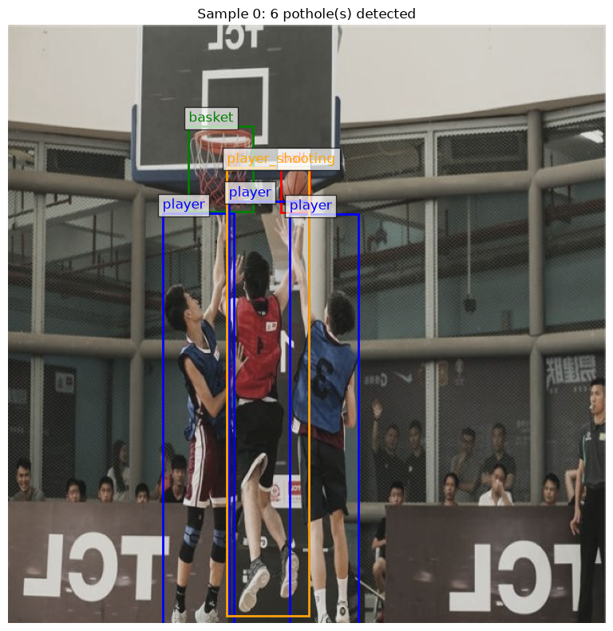
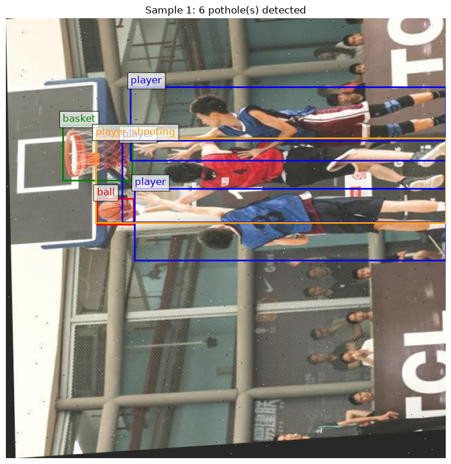
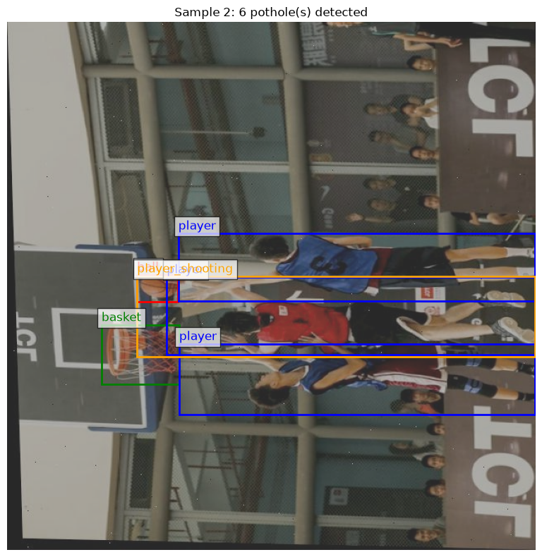
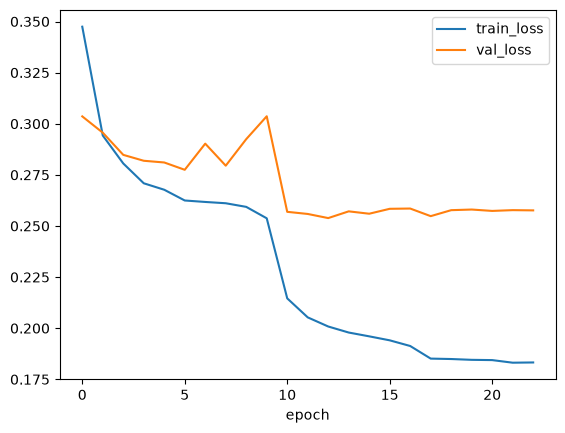

Basketball Training Notebook#
%load_ext autoreload
%autoreload 2
import torch
import torchvision
from torchvision.models.detection import fasterrcnn_resnet50_fpn
# from torchvision.models.detection.faster_rcnn import FastRCNNPredictor, FasterRCNN
# from torchvision.transforms.v2 import functional as F
# from torchvision.transforms import v2
# from torchvision import tv_tensors
# import torch.utils.data
# from torch.utils.data import DataLoader, Dataset
# import torchvision.transforms as T
# import copy
from torch.optim.lr_scheduler import ReduceLROnPlateau
import torchmetrics
from torchmetrics.detection.mean_ap import MeanAveragePrecision
# import xml.etree.ElementTree as ET
import os
# import numpy as np
# import matplotlib.pyplot as plt
# import matplotlib.patches as patches
# from PIL import Image
# from tqdm import tqdm
# import glob
# import ssl
from collections import Counter
import pandas as pd
from src.utils import BasketballDataset, parse_voc_xml, visualize_sample, get_transforms
from src.models import detection_collate_fn, make_detection_loader, EarlyStopping, ModifiedFasterRCNN
# # Fix SSL certificate verification issue
# ssl._create_default_https_context = ssl._create_unverified_context
# Check for GPU availability
device = torch.device('cuda') if torch.cuda.is_available() else torch.device('cpu')
print(f"Using device: {device}")
print(f"PyTorch version: {torch.__version__}")
print(f"Torchvision version: {torchvision.__version__}")
print(torchmetrics.__version__)
The autoreload extension is already loaded. To reload it, use:
%reload_ext autoreload
Using device: cuda
PyTorch version: 2.11.0+cu128
Torchvision version: 0.26.0+cu128
1.9.0
Define Class Labels#
ID Class Name Default Confidence 0 Ball 0.60 1 Ball in Basket 0.25 2 Player 0.70 3 Basket 0.70 4 Player Shooting 0.77
# mapping of XML strings to class indices
# Original mapping was for YOLO, which doesn't reserve 0 for background. Faster RCNN does, so we shift everything up as we convert to int
CLASS_MAPPING = {
'0': 1,
'1': 2,
'2': 3,
'3': 4,
'4': 5
}
# Class mapping for road signs
# 0 is reserved for background
CLASS_NAMES_TO_INDEX = {
'background': 0,
'ball': 1,
'ball_in_basket': 2,
'player': 3,
'basket': 4,
'player_shooting': 5
}
# Reverse mapping for visualization
IDX_TO_CLASS = {v: k for k, v in CLASS_NAMES_TO_INDEX.items()}
# Define colors for different classes
CLASS_COLORS = {
'ball': 'red',
'ball_in_basket': 'gray',
'player': 'blue',
'basket': 'green',
'player_shooting': 'orange'
}
NUM_CLASSES = len(CLASS_NAMES_TO_INDEX) # Including background
print(f"Number of classes (including background): {NUM_CLASSES}")
print(f"Class mapping: {CLASS_NAMES_TO_INDEX}")
Number of classes (including background): 6
Class mapping: {'background': 0, 'ball': 1, 'ball_in_basket': 2, 'player': 3, 'basket': 4, 'player_shooting': 5}
Loading in Dataset#
data_dir = 'roboflow_basketball_detection_data'
parse_voc_xml('roboflow_basketball_detection_data/test/2-2_1_16_jpg.rf.8bd32770be28990a3c9e7d83bf690e97.xml', CLASS_MAPPING)
([[256, 365, 312, 504],
[320, 368, 371, 490],
[279, 379, 313, 499],
[297, 357, 309, 377],
[308, 271, 328, 306]],
[3, 3, 3, 1, 4])
Define transforms#
train_transforms = get_transforms(is_train=True)
test_transforms = get_transforms(is_train=False)
# Construct training dataset
train_path = f'{data_dir}/train'
if os.path.exists(train_path):
train_dataset = BasketballDataset(train_path, CLASS_MAPPING, train_transforms)
print(f"Dataset size: {len(train_dataset)} images")
Dataset size: 9599 images
# Test loading one sample
img, target = train_dataset[0]
print(f"\nSample data:")
print(f"Image shape: {img.shape}")
print(f"Number of objects: {len(target['boxes'])}")
print(f"Boxes shape: {target['boxes'].shape}")
print(f"Labels: {target['labels'].tolist()}")
print(f"Class names: {[IDX_TO_CLASS[l.item()] for l in target['labels']]}")
Sample data:
Image shape: torch.Size([3, 640, 640])
Number of objects: 6
Boxes shape: torch.Size([6, 4])
Labels: [4, 1, 3, 3, 3, 5]
Class names: ['basket', 'ball', 'player', 'player', 'player', 'player_shooting']
for i in range(min(3, len(train_dataset))):
visualize_sample(train_dataset, i, IDX_TO_CLASS, CLASS_COLORS)



Discussion#
So it looks like the data already comes with some augmentation in the form of duplication and rotation. That’s good news, maybe.
I don’t love the 90 degree rotations, honestly. Gravity matters here, and the ball being above the rim matters.
Data quality seems reasonable otherwise, bounding boxes are good.
Create Datasets#
We already have the train dataset defined from earlier. So we just need to define the validation and test sets. Each of those have their own directories
valid_path = f'{data_dir}/valid'
if os.path.exists(valid_path):
valid_dataset = BasketballDataset(valid_path, CLASS_MAPPING, test_transforms)
print(f"Dataset size: {len(valid_dataset)} images")
Dataset size: 873 images
test_path = f'{data_dir}/test'
if os.path.exists(test_path):
test_dataset = BasketballDataset(test_path, CLASS_MAPPING, test_transforms)
print(f"Dataset size: {len(test_dataset)} images")
Dataset size: 436 images
Some quick label EDA#
def class_distribution(dataset, class_names=None):
"""Count label occurrences across a detection dataset.
Returns a dict with per-class instance counts (total boxes) and image
counts (images containing >=1 of that class). Iterates the dataset's
targets without running the model.
class_names: optional {index: name} to label the output; if given, keys
are names, else integer indices.
"""
instance_counts = Counter() # total boxes per class
image_counts = Counter() # images containing >=1 box of the class
for i in range(len(dataset)):
_, target = dataset[i] # (image, target) pair
labels = target['labels']
# labels is a tensor of per-box class indices for this image
labels_list = labels.tolist() if torch.is_tensor(labels) else list(labels)
# instance count: every box
for lab in labels_list:
instance_counts[int(lab)] += 1
# image count: each class present at most once per image
for lab in set(labels_list):
image_counts[int(lab)] += 1
# assemble, optionally mapping indices -> names
def key(idx):
return class_names[idx] if class_names else idx
all_classes = sorted(set(instance_counts) | set(image_counts))
result = {}
for idx in all_classes:
result[key(idx)] = {
'instances': instance_counts[idx],
'images': image_counts[idx],
}
return result
CLASS_NAMES = {1:'ball', 2:'ball_in_basket', 3:'player', 4:'basket', 5:'player_shooting'}
dist = class_distribution(train_dataset, CLASS_NAMES)
for name, counts in dist.items():
print(f"{name:16s} instances={counts['instances']:6d} images={counts['images']:6d}")
ball instances= 9485 images= 8261
ball_in_basket instances= 972 images= 966
player instances= 18392 images= 5985
basket instances= 6490 images= 6333
player_shooting instances= 1864 images= 1857
Create DataLoaders#
train_loader = make_detection_loader(train_dataset, batch_size=4, shuffle=True)
val_loader = make_detection_loader(valid_dataset, batch_size=4, shuffle=False)
test_loader = make_detection_loader(test_dataset, batch_size=4, shuffle=False)
Experiment 1#
device
device(type='cuda')
DETECTION_MODEL = fasterrcnn_resnet50_fpn(weights='DEFAULT', trainable_backbone_layers=3)
OPTIMIZER = torch.optim.SGD
SCHEDULER = ReduceLROnPlateau
EARLY_STOPPER = EarlyStopping
EARLY_STOPPER_KWARGS={'patience':10}
experiment_1 = ModifiedFasterRCNN(
detection_model=DETECTION_MODEL,
optimizer=OPTIMIZER,
learning_scheduler=SCHEDULER,
early_stopper_class=EARLY_STOPPER,
early_stopper_kwargs=EARLY_STOPPER_KWARGS)
experiment_1.replace_box_predictor(num_classes=NUM_CLASSES)
<src.models.ModifiedFasterRCNN at 0x7fb41c3ac390>
experiment_1.training_loop(train_loader=train_loader,
val_loader=val_loader,
device=device,
epochs=200,
optimizer__lr=0.005,
optimizer__momentum=0.9,
optimizer__weight_decay=0.0005,
scheduler__mode='min',
scheduler__patience=3,
calculate_map_interval=5,
print_every=200)
======================================================================
Starting detection training for 200 epoch(s)
trainable params: 41,097,261 | train batches/epoch: 2400 | device: cuda
======================================================================
Epoch 1/200
Epoch 1/200 batch 200/2400 | loss 0.4996 | loss_classifier=0.150 loss_box_reg=0.214 loss_objectness=0.033 loss_rpn_box_reg=0.059
Epoch 1/200 batch 400/2400 | loss 0.4513 | loss_classifier=0.215 loss_box_reg=0.294 loss_objectness=0.055 loss_rpn_box_reg=0.043
Epoch 1/200 batch 600/2400 | loss 0.4250 | loss_classifier=0.085 loss_box_reg=0.113 loss_objectness=0.018 loss_rpn_box_reg=0.005
Epoch 1/200 batch 800/2400 | loss 0.4051 | loss_classifier=0.101 loss_box_reg=0.177 loss_objectness=0.008 loss_rpn_box_reg=0.034
Epoch 1/200 batch 1000/2400 | loss 0.3905 | loss_classifier=0.074 loss_box_reg=0.192 loss_objectness=0.011 loss_rpn_box_reg=0.020
Epoch 1/200 batch 1200/2400 | loss 0.3820 | loss_classifier=0.100 loss_box_reg=0.150 loss_objectness=0.008 loss_rpn_box_reg=0.007
Epoch 1/200 batch 1400/2400 | loss 0.3721 | loss_classifier=0.066 loss_box_reg=0.056 loss_objectness=0.011 loss_rpn_box_reg=0.002
Epoch 1/200 batch 1600/2400 | loss 0.3654 | loss_classifier=0.055 loss_box_reg=0.119 loss_objectness=0.002 loss_rpn_box_reg=0.014
Epoch 1/200 batch 1800/2400 | loss 0.3613 | loss_classifier=0.095 loss_box_reg=0.156 loss_objectness=0.023 loss_rpn_box_reg=0.019
Epoch 1/200 batch 2000/2400 | loss 0.3571 | loss_classifier=0.033 loss_box_reg=0.074 loss_objectness=0.003 loss_rpn_box_reg=0.008
Epoch 1/200 batch 2200/2400 | loss 0.3512 | loss_classifier=0.093 loss_box_reg=0.095 loss_objectness=0.028 loss_rpn_box_reg=0.006
Epoch 1/200 batch 2400/2400 | loss 0.3475 | loss_classifier=0.059 loss_box_reg=0.101 loss_objectness=0.007 loss_rpn_box_reg=0.011
epoch 1 done in 1720.4s | train_loss 0.3475 | val_loss 0.3036 | lr 5.00e-03 <- new best val_loss
→ Early stopping: Baseline set (val_loss=0.3036)
Epoch 2/200
Epoch 2/200 batch 200/2400 | loss 0.3110 | loss_classifier=0.069 loss_box_reg=0.151 loss_objectness=0.008 loss_rpn_box_reg=0.009
Epoch 2/200 batch 400/2400 | loss 0.3095 | loss_classifier=0.042 loss_box_reg=0.094 loss_objectness=0.015 loss_rpn_box_reg=0.018
Epoch 2/200 batch 600/2400 | loss 0.3028 | loss_classifier=0.061 loss_box_reg=0.126 loss_objectness=0.010 loss_rpn_box_reg=0.003
Epoch 2/200 batch 800/2400 | loss 0.2992 | loss_classifier=0.091 loss_box_reg=0.208 loss_objectness=0.009 loss_rpn_box_reg=0.009
Epoch 2/200 batch 1000/2400 | loss 0.2991 | loss_classifier=0.120 loss_box_reg=0.296 loss_objectness=0.015 loss_rpn_box_reg=0.031
Epoch 2/200 batch 1200/2400 | loss 0.3001 | loss_classifier=0.071 loss_box_reg=0.147 loss_objectness=0.010 loss_rpn_box_reg=0.013
Epoch 2/200 batch 1400/2400 | loss 0.2980 | loss_classifier=0.082 loss_box_reg=0.096 loss_objectness=0.003 loss_rpn_box_reg=0.002
Epoch 2/200 batch 1600/2400 | loss 0.2967 | loss_classifier=0.139 loss_box_reg=0.202 loss_objectness=0.017 loss_rpn_box_reg=0.017
Epoch 2/200 batch 1800/2400 | loss 0.2956 | loss_classifier=0.056 loss_box_reg=0.158 loss_objectness=0.005 loss_rpn_box_reg=0.017
Epoch 2/200 batch 2000/2400 | loss 0.2949 | loss_classifier=0.092 loss_box_reg=0.164 loss_objectness=0.019 loss_rpn_box_reg=0.023
Epoch 2/200 batch 2200/2400 | loss 0.2951 | loss_classifier=0.086 loss_box_reg=0.198 loss_objectness=0.007 loss_rpn_box_reg=0.018
Epoch 2/200 batch 2400/2400 | loss 0.2943 | loss_classifier=0.063 loss_box_reg=0.042 loss_objectness=0.002 loss_rpn_box_reg=0.003
epoch 2 done in 1695.1s | train_loss 0.2943 | val_loss 0.2956 | lr 5.00e-03 <- new best val_loss
→ Early stopping: Improved! (val_loss=0.2956)
Epoch 3/200
Epoch 3/200 batch 200/2400 | loss 0.2891 | loss_classifier=0.153 loss_box_reg=0.249 loss_objectness=0.041 loss_rpn_box_reg=0.053
Epoch 3/200 batch 400/2400 | loss 0.2802 | loss_classifier=0.058 loss_box_reg=0.102 loss_objectness=0.012 loss_rpn_box_reg=0.017
Epoch 3/200 batch 600/2400 | loss 0.2796 | loss_classifier=0.060 loss_box_reg=0.052 loss_objectness=0.003 loss_rpn_box_reg=0.004
Epoch 3/200 batch 800/2400 | loss 0.2809 | loss_classifier=0.175 loss_box_reg=0.250 loss_objectness=0.022 loss_rpn_box_reg=0.031
Epoch 3/200 batch 1000/2400 | loss 0.2795 | loss_classifier=0.049 loss_box_reg=0.111 loss_objectness=0.011 loss_rpn_box_reg=0.087
Epoch 3/200 batch 1200/2400 | loss 0.2823 | loss_classifier=0.072 loss_box_reg=0.131 loss_objectness=0.013 loss_rpn_box_reg=0.022
Epoch 3/200 batch 1400/2400 | loss 0.2801 | loss_classifier=0.071 loss_box_reg=0.146 loss_objectness=0.014 loss_rpn_box_reg=0.013
Epoch 3/200 batch 1600/2400 | loss 0.2818 | loss_classifier=0.060 loss_box_reg=0.148 loss_objectness=0.010 loss_rpn_box_reg=0.014
Epoch 3/200 batch 1800/2400 | loss 0.2816 | loss_classifier=0.125 loss_box_reg=0.232 loss_objectness=0.006 loss_rpn_box_reg=0.015
Epoch 3/200 batch 2000/2400 | loss 0.2808 | loss_classifier=0.078 loss_box_reg=0.182 loss_objectness=0.012 loss_rpn_box_reg=0.019
Epoch 3/200 batch 2200/2400 | loss 0.2809 | loss_classifier=0.065 loss_box_reg=0.181 loss_objectness=0.011 loss_rpn_box_reg=0.024
Epoch 3/200 batch 2400/2400 | loss 0.2806 | loss_classifier=0.131 loss_box_reg=0.098 loss_objectness=0.027 loss_rpn_box_reg=0.008
epoch 3 done in 1692.2s | train_loss 0.2806 | val_loss 0.2848 | lr 5.00e-03 <- new best val_loss
→ Early stopping: Improved! (val_loss=0.2848)
Epoch 4/200
Epoch 4/200 batch 200/2400 | loss 0.2582 | loss_classifier=0.111 loss_box_reg=0.121 loss_objectness=0.004 loss_rpn_box_reg=0.010
Epoch 4/200 batch 400/2400 | loss 0.2705 | loss_classifier=0.064 loss_box_reg=0.143 loss_objectness=0.006 loss_rpn_box_reg=0.012
Epoch 4/200 batch 600/2400 | loss 0.2715 | loss_classifier=0.050 loss_box_reg=0.159 loss_objectness=0.011 loss_rpn_box_reg=0.019
Epoch 4/200 batch 800/2400 | loss 0.2670 | loss_classifier=0.054 loss_box_reg=0.126 loss_objectness=0.020 loss_rpn_box_reg=0.006
Epoch 4/200 batch 1000/2400 | loss 0.2711 | loss_classifier=0.078 loss_box_reg=0.215 loss_objectness=0.011 loss_rpn_box_reg=0.012
Epoch 4/200 batch 1200/2400 | loss 0.2699 | loss_classifier=0.058 loss_box_reg=0.182 loss_objectness=0.003 loss_rpn_box_reg=0.021
Epoch 4/200 batch 1400/2400 | loss 0.2713 | loss_classifier=0.036 loss_box_reg=0.080 loss_objectness=0.008 loss_rpn_box_reg=0.010
Epoch 4/200 batch 1600/2400 | loss 0.2713 | loss_classifier=0.137 loss_box_reg=0.239 loss_objectness=0.039 loss_rpn_box_reg=0.038
Epoch 4/200 batch 1800/2400 | loss 0.2714 | loss_classifier=0.151 loss_box_reg=0.210 loss_objectness=0.064 loss_rpn_box_reg=0.038
Epoch 4/200 batch 2000/2400 | loss 0.2710 | loss_classifier=0.099 loss_box_reg=0.201 loss_objectness=0.023 loss_rpn_box_reg=0.036
Epoch 4/200 batch 2200/2400 | loss 0.2722 | loss_classifier=0.070 loss_box_reg=0.121 loss_objectness=0.012 loss_rpn_box_reg=0.004
Epoch 4/200 batch 2400/2400 | loss 0.2709 | loss_classifier=0.066 loss_box_reg=0.183 loss_objectness=0.004 loss_rpn_box_reg=0.008
epoch 4 done in 1696.1s | train_loss 0.2709 | val_loss 0.2819 | lr 5.00e-03 <- new best val_loss
→ Early stopping: Improved! (val_loss=0.2819)
Epoch 5/200
Epoch 5/200 batch 200/2400 | loss 0.2449 | loss_classifier=0.031 loss_box_reg=0.095 loss_objectness=0.003 loss_rpn_box_reg=0.008
Epoch 5/200 batch 400/2400 | loss 0.2633 | loss_classifier=0.055 loss_box_reg=0.068 loss_objectness=0.010 loss_rpn_box_reg=0.005
Epoch 5/200 batch 600/2400 | loss 0.2642 | loss_classifier=0.093 loss_box_reg=0.171 loss_objectness=0.013 loss_rpn_box_reg=0.011
Epoch 5/200 batch 800/2400 | loss 0.2611 | loss_classifier=0.087 loss_box_reg=0.184 loss_objectness=0.009 loss_rpn_box_reg=0.017
Epoch 5/200 batch 1000/2400 | loss 0.2615 | loss_classifier=0.062 loss_box_reg=0.138 loss_objectness=0.005 loss_rpn_box_reg=0.013
Epoch 5/200 batch 1200/2400 | loss 0.2613 | loss_classifier=0.082 loss_box_reg=0.132 loss_objectness=0.003 loss_rpn_box_reg=0.014
Epoch 5/200 batch 1400/2400 | loss 0.2625 | loss_classifier=0.075 loss_box_reg=0.182 loss_objectness=0.010 loss_rpn_box_reg=0.021
Epoch 5/200 batch 1600/2400 | loss 0.2634 | loss_classifier=0.171 loss_box_reg=0.281 loss_objectness=0.040 loss_rpn_box_reg=0.028
Epoch 5/200 batch 1800/2400 | loss 0.2649 | loss_classifier=0.169 loss_box_reg=0.255 loss_objectness=0.031 loss_rpn_box_reg=0.028
Epoch 5/200 batch 2000/2400 | loss 0.2648 | loss_classifier=0.048 loss_box_reg=0.084 loss_objectness=0.017 loss_rpn_box_reg=0.009
Epoch 5/200 batch 2200/2400 | loss 0.2673 | loss_classifier=0.024 loss_box_reg=0.050 loss_objectness=0.006 loss_rpn_box_reg=0.002
Epoch 5/200 batch 2400/2400 | loss 0.2677 | loss_classifier=0.019 loss_box_reg=0.042 loss_objectness=0.001 loss_rpn_box_reg=0.003
epoch 5 done in 1761.4s | train_loss 0.2677 | val_loss 0.2811 | val_mAP 0.5208 | lr 5.00e-03 <- new best val_loss
→ Early stopping: Improved! (val_loss=0.2811)
Epoch 6/200
Epoch 6/200 batch 200/2400 | loss 0.2500 | loss_classifier=0.072 loss_box_reg=0.122 loss_objectness=0.004 loss_rpn_box_reg=0.010
Epoch 6/200 batch 400/2400 | loss 0.2590 | loss_classifier=0.037 loss_box_reg=0.054 loss_objectness=0.001 loss_rpn_box_reg=0.002
Epoch 6/200 batch 600/2400 | loss 0.2587 | loss_classifier=0.051 loss_box_reg=0.103 loss_objectness=0.004 loss_rpn_box_reg=0.014
Epoch 6/200 batch 800/2400 | loss 0.2576 | loss_classifier=0.099 loss_box_reg=0.077 loss_objectness=0.028 loss_rpn_box_reg=0.005
Epoch 6/200 batch 1000/2400 | loss 0.2587 | loss_classifier=0.063 loss_box_reg=0.139 loss_objectness=0.002 loss_rpn_box_reg=0.009
Epoch 6/200 batch 1200/2400 | loss 0.2591 | loss_classifier=0.101 loss_box_reg=0.198 loss_objectness=0.008 loss_rpn_box_reg=0.014
Epoch 6/200 batch 1400/2400 | loss 0.2608 | loss_classifier=0.066 loss_box_reg=0.111 loss_objectness=0.005 loss_rpn_box_reg=0.006
Epoch 6/200 batch 1600/2400 | loss 0.2620 | loss_classifier=0.081 loss_box_reg=0.124 loss_objectness=0.005 loss_rpn_box_reg=0.012
Epoch 6/200 batch 1800/2400 | loss 0.2634 | loss_classifier=0.077 loss_box_reg=0.171 loss_objectness=0.006 loss_rpn_box_reg=0.017
Epoch 6/200 batch 2000/2400 | loss 0.2630 | loss_classifier=0.108 loss_box_reg=0.220 loss_objectness=0.006 loss_rpn_box_reg=0.029
Epoch 6/200 batch 2200/2400 | loss 0.2621 | loss_classifier=0.091 loss_box_reg=0.185 loss_objectness=0.010 loss_rpn_box_reg=0.016
Epoch 6/200 batch 2400/2400 | loss 0.2625 | loss_classifier=0.088 loss_box_reg=0.111 loss_objectness=0.038 loss_rpn_box_reg=0.056
epoch 6 done in 1693.6s | train_loss 0.2625 | val_loss 0.2775 | lr 5.00e-03 <- new best val_loss
→ Early stopping: Improved! (val_loss=0.2775)
Epoch 7/200
Epoch 7/200 batch 200/2400 | loss 0.2465 | loss_classifier=0.138 loss_box_reg=0.248 loss_objectness=0.010 loss_rpn_box_reg=0.018
Epoch 7/200 batch 400/2400 | loss 0.2503 | loss_classifier=0.084 loss_box_reg=0.201 loss_objectness=0.009 loss_rpn_box_reg=0.012
Epoch 7/200 batch 600/2400 | loss 0.2545 | loss_classifier=0.057 loss_box_reg=0.095 loss_objectness=0.025 loss_rpn_box_reg=0.013
Epoch 7/200 batch 800/2400 | loss 0.2590 | loss_classifier=0.041 loss_box_reg=0.084 loss_objectness=0.003 loss_rpn_box_reg=0.013
Epoch 7/200 batch 1000/2400 | loss 0.2574 | loss_classifier=0.076 loss_box_reg=0.106 loss_objectness=0.004 loss_rpn_box_reg=0.006
Epoch 7/200 batch 1200/2400 | loss 0.2573 | loss_classifier=0.160 loss_box_reg=0.355 loss_objectness=0.019 loss_rpn_box_reg=0.030
Epoch 7/200 batch 1400/2400 | loss 0.2563 | loss_classifier=0.059 loss_box_reg=0.146 loss_objectness=0.007 loss_rpn_box_reg=0.030
Epoch 7/200 batch 1600/2400 | loss 0.2559 | loss_classifier=0.031 loss_box_reg=0.071 loss_objectness=0.002 loss_rpn_box_reg=0.004
Epoch 7/200 batch 1800/2400 | loss 0.2576 | loss_classifier=0.052 loss_box_reg=0.114 loss_objectness=0.010 loss_rpn_box_reg=0.015
Epoch 7/200 batch 2000/2400 | loss 0.2591 | loss_classifier=0.154 loss_box_reg=0.276 loss_objectness=0.043 loss_rpn_box_reg=0.072
Epoch 7/200 batch 2200/2400 | loss 0.2609 | loss_classifier=0.089 loss_box_reg=0.193 loss_objectness=0.017 loss_rpn_box_reg=0.017
Epoch 7/200 batch 2400/2400 | loss 0.2617 | loss_classifier=0.015 loss_box_reg=0.027 loss_objectness=0.023 loss_rpn_box_reg=0.004
epoch 7 done in 1696.6s | train_loss 0.2617 | val_loss 0.2903 | lr 5.00e-03
→ Early stopping: 1/10 (val_loss=0.2903, best=0.2775)
Epoch 8/200
Epoch 8/200 batch 200/2400 | loss 0.2583 | loss_classifier=0.123 loss_box_reg=0.231 loss_objectness=0.010 loss_rpn_box_reg=0.013
Epoch 8/200 batch 400/2400 | loss 0.2617 | loss_classifier=0.071 loss_box_reg=0.122 loss_objectness=0.008 loss_rpn_box_reg=0.006
Epoch 8/200 batch 600/2400 | loss 0.2604 | loss_classifier=0.046 loss_box_reg=0.104 loss_objectness=0.012 loss_rpn_box_reg=0.007
Epoch 8/200 batch 800/2400 | loss 0.2640 | loss_classifier=0.132 loss_box_reg=0.285 loss_objectness=0.050 loss_rpn_box_reg=0.036
Epoch 8/200 batch 1000/2400 | loss 0.2603 | loss_classifier=0.089 loss_box_reg=0.200 loss_objectness=0.011 loss_rpn_box_reg=0.017
Epoch 8/200 batch 1200/2400 | loss 0.2599 | loss_classifier=0.156 loss_box_reg=0.263 loss_objectness=0.017 loss_rpn_box_reg=0.040
Epoch 8/200 batch 1400/2400 | loss 0.2590 | loss_classifier=0.075 loss_box_reg=0.098 loss_objectness=0.012 loss_rpn_box_reg=0.006
Epoch 8/200 batch 1600/2400 | loss 0.2600 | loss_classifier=0.062 loss_box_reg=0.126 loss_objectness=0.001 loss_rpn_box_reg=0.008
Epoch 8/200 batch 1800/2400 | loss 0.2571 | loss_classifier=0.030 loss_box_reg=0.057 loss_objectness=0.003 loss_rpn_box_reg=0.004
Epoch 8/200 batch 2000/2400 | loss 0.2572 | loss_classifier=0.056 loss_box_reg=0.145 loss_objectness=0.002 loss_rpn_box_reg=0.033
Epoch 8/200 batch 2200/2400 | loss 0.2590 | loss_classifier=0.176 loss_box_reg=0.246 loss_objectness=0.005 loss_rpn_box_reg=0.017
Epoch 8/200 batch 2400/2400 | loss 0.2611 | loss_classifier=0.048 loss_box_reg=0.075 loss_objectness=0.003 loss_rpn_box_reg=0.011
epoch 8 done in 1690.8s | train_loss 0.2611 | val_loss 0.2795 | lr 5.00e-03
→ Early stopping: 2/10 (val_loss=0.2795, best=0.2775)
Epoch 9/200
Epoch 9/200 batch 200/2400 | loss 0.2579 | loss_classifier=0.070 loss_box_reg=0.099 loss_objectness=0.009 loss_rpn_box_reg=0.010
Epoch 9/200 batch 400/2400 | loss 0.2515 | loss_classifier=0.053 loss_box_reg=0.106 loss_objectness=0.009 loss_rpn_box_reg=0.007
Epoch 9/200 batch 600/2400 | loss 0.2480 | loss_classifier=0.070 loss_box_reg=0.114 loss_objectness=0.004 loss_rpn_box_reg=0.004
Epoch 9/200 batch 800/2400 | loss 0.2607 | loss_classifier=0.108 loss_box_reg=0.194 loss_objectness=0.009 loss_rpn_box_reg=0.010
Epoch 9/200 batch 1000/2400 | loss 0.2619 | loss_classifier=0.073 loss_box_reg=0.172 loss_objectness=0.008 loss_rpn_box_reg=0.012
Epoch 9/200 batch 1200/2400 | loss 0.2602 | loss_classifier=0.137 loss_box_reg=0.225 loss_objectness=0.047 loss_rpn_box_reg=0.118
Epoch 9/200 batch 1400/2400 | loss 0.2610 | loss_classifier=0.042 loss_box_reg=0.071 loss_objectness=0.002 loss_rpn_box_reg=0.002
Epoch 9/200 batch 1600/2400 | loss 0.2606 | loss_classifier=0.076 loss_box_reg=0.142 loss_objectness=0.018 loss_rpn_box_reg=0.011
Epoch 9/200 batch 1800/2400 | loss 0.2597 | loss_classifier=0.062 loss_box_reg=0.148 loss_objectness=0.004 loss_rpn_box_reg=0.008
Epoch 9/200 batch 2000/2400 | loss 0.2600 | loss_classifier=0.056 loss_box_reg=0.108 loss_objectness=0.011 loss_rpn_box_reg=0.005
Epoch 9/200 batch 2200/2400 | loss 0.2600 | loss_classifier=0.056 loss_box_reg=0.099 loss_objectness=0.008 loss_rpn_box_reg=0.010
Epoch 9/200 batch 2400/2400 | loss 0.2593 | loss_classifier=0.079 loss_box_reg=0.121 loss_objectness=0.005 loss_rpn_box_reg=0.008
epoch 9 done in 1695.0s | train_loss 0.2593 | val_loss 0.2925 | lr 5.00e-03
→ Early stopping: 3/10 (val_loss=0.2925, best=0.2775)
Epoch 10/200
Epoch 10/200 batch 200/2400 | loss 0.2503 | loss_classifier=0.070 loss_box_reg=0.123 loss_objectness=0.014 loss_rpn_box_reg=0.008
Epoch 10/200 batch 400/2400 | loss 0.2552 | loss_classifier=0.031 loss_box_reg=0.089 loss_objectness=0.002 loss_rpn_box_reg=0.007
Epoch 10/200 batch 600/2400 | loss 0.2530 | loss_classifier=0.087 loss_box_reg=0.161 loss_objectness=0.007 loss_rpn_box_reg=0.008
Epoch 10/200 batch 800/2400 | loss 0.2541 | loss_classifier=0.050 loss_box_reg=0.088 loss_objectness=0.011 loss_rpn_box_reg=0.008
Epoch 10/200 batch 1000/2400 | loss 0.2530 | loss_classifier=0.076 loss_box_reg=0.176 loss_objectness=0.019 loss_rpn_box_reg=0.045
Epoch 10/200 batch 1200/2400 | loss 0.2515 | loss_classifier=0.027 loss_box_reg=0.054 loss_objectness=0.002 loss_rpn_box_reg=0.004
Epoch 10/200 batch 1400/2400 | loss 0.2512 | loss_classifier=0.058 loss_box_reg=0.093 loss_objectness=0.052 loss_rpn_box_reg=0.036
Epoch 10/200 batch 1600/2400 | loss 0.2506 | loss_classifier=0.090 loss_box_reg=0.189 loss_objectness=0.020 loss_rpn_box_reg=0.030
Epoch 10/200 batch 1800/2400 | loss 0.2500 | loss_classifier=0.118 loss_box_reg=0.270 loss_objectness=0.014 loss_rpn_box_reg=0.022
Epoch 10/200 batch 2000/2400 | loss 0.2512 | loss_classifier=0.074 loss_box_reg=0.199 loss_objectness=0.007 loss_rpn_box_reg=0.014
Epoch 10/200 batch 2200/2400 | loss 0.2522 | loss_classifier=0.163 loss_box_reg=0.310 loss_objectness=0.024 loss_rpn_box_reg=0.060
Epoch 10/200 batch 2400/2400 | loss 0.2538 | loss_classifier=0.026 loss_box_reg=0.094 loss_objectness=0.002 loss_rpn_box_reg=0.012
epoch 10 done in 1763.8s | train_loss 0.2538 | val_loss 0.3037 | val_mAP 0.5233 | lr 5.00e-04
→ Early stopping: 4/10 (val_loss=0.3037, best=0.2775)
Epoch 11/200
Epoch 11/200 batch 200/2400 | loss 0.2215 | loss_classifier=0.091 loss_box_reg=0.185 loss_objectness=0.014 loss_rpn_box_reg=0.017
Epoch 11/200 batch 400/2400 | loss 0.2217 | loss_classifier=0.040 loss_box_reg=0.060 loss_objectness=0.003 loss_rpn_box_reg=0.004
Epoch 11/200 batch 600/2400 | loss 0.2223 | loss_classifier=0.088 loss_box_reg=0.180 loss_objectness=0.005 loss_rpn_box_reg=0.026
Epoch 11/200 batch 800/2400 | loss 0.2224 | loss_classifier=0.055 loss_box_reg=0.109 loss_objectness=0.002 loss_rpn_box_reg=0.007
Epoch 11/200 batch 1000/2400 | loss 0.2219 | loss_classifier=0.046 loss_box_reg=0.099 loss_objectness=0.004 loss_rpn_box_reg=0.008
Epoch 11/200 batch 1200/2400 | loss 0.2191 | loss_classifier=0.104 loss_box_reg=0.227 loss_objectness=0.010 loss_rpn_box_reg=0.013
Epoch 11/200 batch 1400/2400 | loss 0.2172 | loss_classifier=0.079 loss_box_reg=0.157 loss_objectness=0.007 loss_rpn_box_reg=0.009
Epoch 11/200 batch 1600/2400 | loss 0.2163 | loss_classifier=0.048 loss_box_reg=0.115 loss_objectness=0.003 loss_rpn_box_reg=0.014
Epoch 11/200 batch 1800/2400 | loss 0.2158 | loss_classifier=0.093 loss_box_reg=0.175 loss_objectness=0.008 loss_rpn_box_reg=0.013
Epoch 11/200 batch 2000/2400 | loss 0.2155 | loss_classifier=0.035 loss_box_reg=0.062 loss_objectness=0.004 loss_rpn_box_reg=0.006
Epoch 11/200 batch 2200/2400 | loss 0.2149 | loss_classifier=0.052 loss_box_reg=0.081 loss_objectness=0.008 loss_rpn_box_reg=0.013
Epoch 11/200 batch 2400/2400 | loss 0.2146 | loss_classifier=0.033 loss_box_reg=0.076 loss_objectness=0.001 loss_rpn_box_reg=0.003
epoch 11 done in 1695.5s | train_loss 0.2146 | val_loss 0.2569 | lr 5.00e-04 <- new best val_loss
→ Early stopping: Improved! (val_loss=0.2569)
Epoch 12/200
Epoch 12/200 batch 200/2400 | loss 0.2140 | loss_classifier=0.094 loss_box_reg=0.192 loss_objectness=0.004 loss_rpn_box_reg=0.010
Epoch 12/200 batch 400/2400 | loss 0.2083 | loss_classifier=0.074 loss_box_reg=0.132 loss_objectness=0.004 loss_rpn_box_reg=0.013
Epoch 12/200 batch 600/2400 | loss 0.2044 | loss_classifier=0.018 loss_box_reg=0.031 loss_objectness=0.004 loss_rpn_box_reg=0.003
Epoch 12/200 batch 800/2400 | loss 0.2038 | loss_classifier=0.035 loss_box_reg=0.087 loss_objectness=0.002 loss_rpn_box_reg=0.003
Epoch 12/200 batch 1000/2400 | loss 0.2040 | loss_classifier=0.131 loss_box_reg=0.166 loss_objectness=0.019 loss_rpn_box_reg=0.022
Epoch 12/200 batch 1200/2400 | loss 0.2058 | loss_classifier=0.045 loss_box_reg=0.102 loss_objectness=0.004 loss_rpn_box_reg=0.009
Epoch 12/200 batch 1400/2400 | loss 0.2056 | loss_classifier=0.066 loss_box_reg=0.150 loss_objectness=0.009 loss_rpn_box_reg=0.032
Epoch 12/200 batch 1600/2400 | loss 0.2046 | loss_classifier=0.072 loss_box_reg=0.160 loss_objectness=0.005 loss_rpn_box_reg=0.012
Epoch 12/200 batch 1800/2400 | loss 0.2056 | loss_classifier=0.085 loss_box_reg=0.208 loss_objectness=0.005 loss_rpn_box_reg=0.010
Epoch 12/200 batch 2000/2400 | loss 0.2064 | loss_classifier=0.081 loss_box_reg=0.158 loss_objectness=0.012 loss_rpn_box_reg=0.018
Epoch 12/200 batch 2200/2400 | loss 0.2063 | loss_classifier=0.040 loss_box_reg=0.090 loss_objectness=0.002 loss_rpn_box_reg=0.003
Epoch 12/200 batch 2400/2400 | loss 0.2053 | loss_classifier=0.066 loss_box_reg=0.090 loss_objectness=0.007 loss_rpn_box_reg=0.016
epoch 12 done in 1700.6s | train_loss 0.2053 | val_loss 0.2559 | lr 5.00e-04 <- new best val_loss
→ Early stopping: Improved! (val_loss=0.2559)
Epoch 13/200
Epoch 13/200 batch 200/2400 | loss 0.1973 | loss_classifier=0.063 loss_box_reg=0.151 loss_objectness=0.002 loss_rpn_box_reg=0.004
Epoch 13/200 batch 400/2400 | loss 0.2009 | loss_classifier=0.029 loss_box_reg=0.070 loss_objectness=0.007 loss_rpn_box_reg=0.006
Epoch 13/200 batch 600/2400 | loss 0.2008 | loss_classifier=0.133 loss_box_reg=0.275 loss_objectness=0.021 loss_rpn_box_reg=0.070
Epoch 13/200 batch 800/2400 | loss 0.1996 | loss_classifier=0.032 loss_box_reg=0.049 loss_objectness=0.004 loss_rpn_box_reg=0.004
Epoch 13/200 batch 1000/2400 | loss 0.1998 | loss_classifier=0.021 loss_box_reg=0.058 loss_objectness=0.001 loss_rpn_box_reg=0.005
Epoch 13/200 batch 1200/2400 | loss 0.2004 | loss_classifier=0.068 loss_box_reg=0.124 loss_objectness=0.004 loss_rpn_box_reg=0.006
Epoch 13/200 batch 1400/2400 | loss 0.1992 | loss_classifier=0.087 loss_box_reg=0.186 loss_objectness=0.003 loss_rpn_box_reg=0.028
Epoch 13/200 batch 1600/2400 | loss 0.1992 | loss_classifier=0.066 loss_box_reg=0.098 loss_objectness=0.002 loss_rpn_box_reg=0.006
Epoch 13/200 batch 1800/2400 | loss 0.1996 | loss_classifier=0.048 loss_box_reg=0.127 loss_objectness=0.005 loss_rpn_box_reg=0.010
Epoch 13/200 batch 2000/2400 | loss 0.2003 | loss_classifier=0.037 loss_box_reg=0.088 loss_objectness=0.000 loss_rpn_box_reg=0.004
Epoch 13/200 batch 2200/2400 | loss 0.2004 | loss_classifier=0.080 loss_box_reg=0.152 loss_objectness=0.002 loss_rpn_box_reg=0.006
Epoch 13/200 batch 2400/2400 | loss 0.2008 | loss_classifier=0.098 loss_box_reg=0.238 loss_objectness=0.006 loss_rpn_box_reg=0.008
epoch 13 done in 1696.7s | train_loss 0.2008 | val_loss 0.2539 | lr 5.00e-04 <- new best val_loss
→ Early stopping: Improved! (val_loss=0.2539)
Epoch 14/200
Epoch 14/200 batch 200/2400 | loss 0.1944 | loss_classifier=0.055 loss_box_reg=0.135 loss_objectness=0.004 loss_rpn_box_reg=0.007
Epoch 14/200 batch 400/2400 | loss 0.1947 | loss_classifier=0.008 loss_box_reg=0.019 loss_objectness=0.000 loss_rpn_box_reg=0.001
Epoch 14/200 batch 600/2400 | loss 0.1952 | loss_classifier=0.045 loss_box_reg=0.069 loss_objectness=0.006 loss_rpn_box_reg=0.002
Epoch 14/200 batch 800/2400 | loss 0.1946 | loss_classifier=0.051 loss_box_reg=0.111 loss_objectness=0.010 loss_rpn_box_reg=0.007
Epoch 14/200 batch 1000/2400 | loss 0.1963 | loss_classifier=0.111 loss_box_reg=0.282 loss_objectness=0.012 loss_rpn_box_reg=0.039
Epoch 14/200 batch 1200/2400 | loss 0.1974 | loss_classifier=0.076 loss_box_reg=0.147 loss_objectness=0.009 loss_rpn_box_reg=0.015
Epoch 14/200 batch 1400/2400 | loss 0.1981 | loss_classifier=0.049 loss_box_reg=0.061 loss_objectness=0.006 loss_rpn_box_reg=0.009
Epoch 14/200 batch 1600/2400 | loss 0.1971 | loss_classifier=0.071 loss_box_reg=0.174 loss_objectness=0.001 loss_rpn_box_reg=0.007
Epoch 14/200 batch 1800/2400 | loss 0.1980 | loss_classifier=0.062 loss_box_reg=0.103 loss_objectness=0.005 loss_rpn_box_reg=0.006
Epoch 14/200 batch 2000/2400 | loss 0.1979 | loss_classifier=0.018 loss_box_reg=0.025 loss_objectness=0.002 loss_rpn_box_reg=0.005
Epoch 14/200 batch 2200/2400 | loss 0.1973 | loss_classifier=0.047 loss_box_reg=0.093 loss_objectness=0.003 loss_rpn_box_reg=0.009
Epoch 14/200 batch 2400/2400 | loss 0.1979 | loss_classifier=0.037 loss_box_reg=0.123 loss_objectness=0.005 loss_rpn_box_reg=0.009
epoch 14 done in 1692.7s | train_loss 0.1979 | val_loss 0.2572 | lr 5.00e-04
→ Early stopping: 1/10 (val_loss=0.2572, best=0.2539)
Epoch 15/200
Epoch 15/200 batch 200/2400 | loss 0.1892 | loss_classifier=0.086 loss_box_reg=0.157 loss_objectness=0.010 loss_rpn_box_reg=0.015
Epoch 15/200 batch 400/2400 | loss 0.1957 | loss_classifier=0.045 loss_box_reg=0.102 loss_objectness=0.003 loss_rpn_box_reg=0.003
Epoch 15/200 batch 600/2400 | loss 0.1968 | loss_classifier=0.036 loss_box_reg=0.056 loss_objectness=0.001 loss_rpn_box_reg=0.001
Epoch 15/200 batch 800/2400 | loss 0.1970 | loss_classifier=0.070 loss_box_reg=0.169 loss_objectness=0.007 loss_rpn_box_reg=0.018
Epoch 15/200 batch 1000/2400 | loss 0.1979 | loss_classifier=0.062 loss_box_reg=0.164 loss_objectness=0.009 loss_rpn_box_reg=0.025
Epoch 15/200 batch 1200/2400 | loss 0.1965 | loss_classifier=0.042 loss_box_reg=0.116 loss_objectness=0.014 loss_rpn_box_reg=0.008
Epoch 15/200 batch 1400/2400 | loss 0.1964 | loss_classifier=0.082 loss_box_reg=0.167 loss_objectness=0.004 loss_rpn_box_reg=0.011
Epoch 15/200 batch 1600/2400 | loss 0.1956 | loss_classifier=0.030 loss_box_reg=0.111 loss_objectness=0.002 loss_rpn_box_reg=0.020
Epoch 15/200 batch 1800/2400 | loss 0.1955 | loss_classifier=0.082 loss_box_reg=0.224 loss_objectness=0.009 loss_rpn_box_reg=0.039
Epoch 15/200 batch 2000/2400 | loss 0.1963 | loss_classifier=0.061 loss_box_reg=0.125 loss_objectness=0.002 loss_rpn_box_reg=0.010
Epoch 15/200 batch 2200/2400 | loss 0.1963 | loss_classifier=0.083 loss_box_reg=0.169 loss_objectness=0.007 loss_rpn_box_reg=0.009
Epoch 15/200 batch 2400/2400 | loss 0.1960 | loss_classifier=0.095 loss_box_reg=0.169 loss_objectness=0.002 loss_rpn_box_reg=0.011
epoch 15 done in 1763.3s | train_loss 0.1960 | val_loss 0.2560 | val_mAP 0.5842 | lr 5.00e-04
→ Early stopping: 2/10 (val_loss=0.2560, best=0.2539)
Epoch 16/200
Epoch 16/200 batch 200/2400 | loss 0.1913 | loss_classifier=0.073 loss_box_reg=0.136 loss_objectness=0.012 loss_rpn_box_reg=0.007
Epoch 16/200 batch 400/2400 | loss 0.1875 | loss_classifier=0.073 loss_box_reg=0.129 loss_objectness=0.008 loss_rpn_box_reg=0.020
Epoch 16/200 batch 600/2400 | loss 0.1904 | loss_classifier=0.044 loss_box_reg=0.101 loss_objectness=0.000 loss_rpn_box_reg=0.005
Epoch 16/200 batch 800/2400 | loss 0.1925 | loss_classifier=0.056 loss_box_reg=0.143 loss_objectness=0.008 loss_rpn_box_reg=0.019
Epoch 16/200 batch 1000/2400 | loss 0.1936 | loss_classifier=0.030 loss_box_reg=0.071 loss_objectness=0.003 loss_rpn_box_reg=0.005
Epoch 16/200 batch 1200/2400 | loss 0.1945 | loss_classifier=0.030 loss_box_reg=0.048 loss_objectness=0.002 loss_rpn_box_reg=0.004
Epoch 16/200 batch 1400/2400 | loss 0.1934 | loss_classifier=0.035 loss_box_reg=0.074 loss_objectness=0.013 loss_rpn_box_reg=0.003
Epoch 16/200 batch 1600/2400 | loss 0.1927 | loss_classifier=0.032 loss_box_reg=0.058 loss_objectness=0.001 loss_rpn_box_reg=0.006
Epoch 16/200 batch 1800/2400 | loss 0.1936 | loss_classifier=0.045 loss_box_reg=0.123 loss_objectness=0.003 loss_rpn_box_reg=0.006
Epoch 16/200 batch 2000/2400 | loss 0.1928 | loss_classifier=0.038 loss_box_reg=0.079 loss_objectness=0.003 loss_rpn_box_reg=0.003
Epoch 16/200 batch 2200/2400 | loss 0.1932 | loss_classifier=0.049 loss_box_reg=0.097 loss_objectness=0.009 loss_rpn_box_reg=0.006
Epoch 16/200 batch 2400/2400 | loss 0.1941 | loss_classifier=0.039 loss_box_reg=0.085 loss_objectness=0.001 loss_rpn_box_reg=0.009
epoch 16 done in 1701.0s | train_loss 0.1941 | val_loss 0.2584 | lr 5.00e-04
→ Early stopping: 3/10 (val_loss=0.2584, best=0.2539)
Epoch 17/200
Epoch 17/200 batch 200/2400 | loss 0.1901 | loss_classifier=0.071 loss_box_reg=0.160 loss_objectness=0.007 loss_rpn_box_reg=0.013
Epoch 17/200 batch 400/2400 | loss 0.1897 | loss_classifier=0.077 loss_box_reg=0.152 loss_objectness=0.007 loss_rpn_box_reg=0.007
Epoch 17/200 batch 600/2400 | loss 0.1898 | loss_classifier=0.007 loss_box_reg=0.017 loss_objectness=0.000 loss_rpn_box_reg=0.002
Epoch 17/200 batch 800/2400 | loss 0.1922 | loss_classifier=0.042 loss_box_reg=0.068 loss_objectness=0.001 loss_rpn_box_reg=0.003
Epoch 17/200 batch 1000/2400 | loss 0.1900 | loss_classifier=0.032 loss_box_reg=0.052 loss_objectness=0.002 loss_rpn_box_reg=0.003
Epoch 17/200 batch 1200/2400 | loss 0.1906 | loss_classifier=0.028 loss_box_reg=0.049 loss_objectness=0.008 loss_rpn_box_reg=0.010
Epoch 17/200 batch 1400/2400 | loss 0.1898 | loss_classifier=0.053 loss_box_reg=0.111 loss_objectness=0.005 loss_rpn_box_reg=0.006
Epoch 17/200 batch 1600/2400 | loss 0.1902 | loss_classifier=0.051 loss_box_reg=0.131 loss_objectness=0.001 loss_rpn_box_reg=0.011
Epoch 17/200 batch 1800/2400 | loss 0.1904 | loss_classifier=0.014 loss_box_reg=0.029 loss_objectness=0.002 loss_rpn_box_reg=0.001
Epoch 17/200 batch 2000/2400 | loss 0.1906 | loss_classifier=0.050 loss_box_reg=0.118 loss_objectness=0.001 loss_rpn_box_reg=0.006
Epoch 17/200 batch 2200/2400 | loss 0.1912 | loss_classifier=0.048 loss_box_reg=0.138 loss_objectness=0.011 loss_rpn_box_reg=0.015
Epoch 17/200 batch 2400/2400 | loss 0.1913 | loss_classifier=0.052 loss_box_reg=0.110 loss_objectness=0.003 loss_rpn_box_reg=0.006
epoch 17 done in 1698.6s | train_loss 0.1913 | val_loss 0.2585 | lr 5.00e-05
→ Early stopping: 4/10 (val_loss=0.2585, best=0.2539)
Epoch 18/200
Epoch 18/200 batch 200/2400 | loss 0.1878 | loss_classifier=0.025 loss_box_reg=0.041 loss_objectness=0.000 loss_rpn_box_reg=0.004
Epoch 18/200 batch 400/2400 | loss 0.1875 | loss_classifier=0.045 loss_box_reg=0.076 loss_objectness=0.000 loss_rpn_box_reg=0.013
Epoch 18/200 batch 600/2400 | loss 0.1895 | loss_classifier=0.024 loss_box_reg=0.055 loss_objectness=0.002 loss_rpn_box_reg=0.004
Epoch 18/200 batch 800/2400 | loss 0.1880 | loss_classifier=0.067 loss_box_reg=0.155 loss_objectness=0.005 loss_rpn_box_reg=0.032
Epoch 18/200 batch 1000/2400 | loss 0.1878 | loss_classifier=0.062 loss_box_reg=0.109 loss_objectness=0.009 loss_rpn_box_reg=0.005
Epoch 18/200 batch 1200/2400 | loss 0.1866 | loss_classifier=0.058 loss_box_reg=0.119 loss_objectness=0.005 loss_rpn_box_reg=0.025
Epoch 18/200 batch 1400/2400 | loss 0.1875 | loss_classifier=0.052 loss_box_reg=0.127 loss_objectness=0.004 loss_rpn_box_reg=0.015
Epoch 18/200 batch 1600/2400 | loss 0.1867 | loss_classifier=0.049 loss_box_reg=0.117 loss_objectness=0.001 loss_rpn_box_reg=0.008
Epoch 18/200 batch 1800/2400 | loss 0.1850 | loss_classifier=0.081 loss_box_reg=0.197 loss_objectness=0.007 loss_rpn_box_reg=0.024
Epoch 18/200 batch 2000/2400 | loss 0.1850 | loss_classifier=0.022 loss_box_reg=0.033 loss_objectness=0.001 loss_rpn_box_reg=0.002
Epoch 18/200 batch 2200/2400 | loss 0.1843 | loss_classifier=0.077 loss_box_reg=0.210 loss_objectness=0.004 loss_rpn_box_reg=0.011
Epoch 18/200 batch 2400/2400 | loss 0.1851 | loss_classifier=0.055 loss_box_reg=0.125 loss_objectness=0.002 loss_rpn_box_reg=0.006
epoch 18 done in 1694.1s | train_loss 0.1851 | val_loss 0.2548 | lr 5.00e-05
→ Early stopping: 5/10 (val_loss=0.2548, best=0.2539)
Epoch 19/200
Epoch 19/200 batch 200/2400 | loss 0.1941 | loss_classifier=0.058 loss_box_reg=0.128 loss_objectness=0.004 loss_rpn_box_reg=0.009
Epoch 19/200 batch 400/2400 | loss 0.1858 | loss_classifier=0.044 loss_box_reg=0.106 loss_objectness=0.004 loss_rpn_box_reg=0.004
Epoch 19/200 batch 600/2400 | loss 0.1857 | loss_classifier=0.026 loss_box_reg=0.067 loss_objectness=0.001 loss_rpn_box_reg=0.003
Epoch 19/200 batch 800/2400 | loss 0.1862 | loss_classifier=0.087 loss_box_reg=0.189 loss_objectness=0.009 loss_rpn_box_reg=0.023
Epoch 19/200 batch 1000/2400 | loss 0.1863 | loss_classifier=0.074 loss_box_reg=0.069 loss_objectness=0.001 loss_rpn_box_reg=0.003
Epoch 19/200 batch 1200/2400 | loss 0.1855 | loss_classifier=0.128 loss_box_reg=0.215 loss_objectness=0.011 loss_rpn_box_reg=0.017
Epoch 19/200 batch 1400/2400 | loss 0.1839 | loss_classifier=0.022 loss_box_reg=0.038 loss_objectness=0.000 loss_rpn_box_reg=0.003
Epoch 19/200 batch 1600/2400 | loss 0.1843 | loss_classifier=0.041 loss_box_reg=0.063 loss_objectness=0.004 loss_rpn_box_reg=0.002
Epoch 19/200 batch 1800/2400 | loss 0.1842 | loss_classifier=0.089 loss_box_reg=0.185 loss_objectness=0.005 loss_rpn_box_reg=0.035
Epoch 19/200 batch 2000/2400 | loss 0.1846 | loss_classifier=0.074 loss_box_reg=0.049 loss_objectness=0.002 loss_rpn_box_reg=0.002
Epoch 19/200 batch 2200/2400 | loss 0.1851 | loss_classifier=0.042 loss_box_reg=0.083 loss_objectness=0.005 loss_rpn_box_reg=0.017
Epoch 19/200 batch 2400/2400 | loss 0.1849 | loss_classifier=0.029 loss_box_reg=0.082 loss_objectness=0.000 loss_rpn_box_reg=0.005
epoch 19 done in 1696.4s | train_loss 0.1849 | val_loss 0.2577 | lr 5.00e-05
→ Early stopping: 6/10 (val_loss=0.2577, best=0.2539)
Epoch 20/200
Epoch 20/200 batch 200/2400 | loss 0.1867 | loss_classifier=0.056 loss_box_reg=0.143 loss_objectness=0.008 loss_rpn_box_reg=0.017
Epoch 20/200 batch 400/2400 | loss 0.1884 | loss_classifier=0.069 loss_box_reg=0.138 loss_objectness=0.003 loss_rpn_box_reg=0.012
Epoch 20/200 batch 600/2400 | loss 0.1864 | loss_classifier=0.072 loss_box_reg=0.148 loss_objectness=0.002 loss_rpn_box_reg=0.008
Epoch 20/200 batch 800/2400 | loss 0.1856 | loss_classifier=0.031 loss_box_reg=0.064 loss_objectness=0.001 loss_rpn_box_reg=0.009
Epoch 20/200 batch 1000/2400 | loss 0.1845 | loss_classifier=0.051 loss_box_reg=0.076 loss_objectness=0.001 loss_rpn_box_reg=0.008
Epoch 20/200 batch 1200/2400 | loss 0.1835 | loss_classifier=0.034 loss_box_reg=0.075 loss_objectness=0.001 loss_rpn_box_reg=0.010
Epoch 20/200 batch 1400/2400 | loss 0.1842 | loss_classifier=0.053 loss_box_reg=0.114 loss_objectness=0.007 loss_rpn_box_reg=0.023
Epoch 20/200 batch 1600/2400 | loss 0.1841 | loss_classifier=0.044 loss_box_reg=0.082 loss_objectness=0.008 loss_rpn_box_reg=0.011
Epoch 20/200 batch 1800/2400 | loss 0.1843 | loss_classifier=0.051 loss_box_reg=0.073 loss_objectness=0.004 loss_rpn_box_reg=0.007
Epoch 20/200 batch 2000/2400 | loss 0.1845 | loss_classifier=0.036 loss_box_reg=0.064 loss_objectness=0.003 loss_rpn_box_reg=0.002
Epoch 20/200 batch 2200/2400 | loss 0.1846 | loss_classifier=0.035 loss_box_reg=0.075 loss_objectness=0.002 loss_rpn_box_reg=0.009
Epoch 20/200 batch 2400/2400 | loss 0.1845 | loss_classifier=0.120 loss_box_reg=0.275 loss_objectness=0.008 loss_rpn_box_reg=0.019
epoch 20 done in 1771.3s | train_loss 0.1845 | val_loss 0.2580 | val_mAP 0.5868 | lr 5.00e-05
→ Early stopping: 7/10 (val_loss=0.2580, best=0.2539)
Epoch 21/200
Epoch 21/200 batch 200/2400 | loss 0.1815 | loss_classifier=0.025 loss_box_reg=0.051 loss_objectness=0.001 loss_rpn_box_reg=0.001
Epoch 21/200 batch 400/2400 | loss 0.1763 | loss_classifier=0.079 loss_box_reg=0.154 loss_objectness=0.002 loss_rpn_box_reg=0.009
Epoch 21/200 batch 600/2400 | loss 0.1792 | loss_classifier=0.024 loss_box_reg=0.057 loss_objectness=0.002 loss_rpn_box_reg=0.005
Epoch 21/200 batch 800/2400 | loss 0.1814 | loss_classifier=0.029 loss_box_reg=0.057 loss_objectness=0.010 loss_rpn_box_reg=0.005
Epoch 21/200 batch 1000/2400 | loss 0.1815 | loss_classifier=0.051 loss_box_reg=0.142 loss_objectness=0.001 loss_rpn_box_reg=0.006
Epoch 21/200 batch 1200/2400 | loss 0.1820 | loss_classifier=0.041 loss_box_reg=0.069 loss_objectness=0.002 loss_rpn_box_reg=0.003
Epoch 21/200 batch 1400/2400 | loss 0.1822 | loss_classifier=0.054 loss_box_reg=0.128 loss_objectness=0.001 loss_rpn_box_reg=0.007
Epoch 21/200 batch 1600/2400 | loss 0.1822 | loss_classifier=0.070 loss_box_reg=0.157 loss_objectness=0.005 loss_rpn_box_reg=0.040
Epoch 21/200 batch 1800/2400 | loss 0.1835 | loss_classifier=0.052 loss_box_reg=0.099 loss_objectness=0.004 loss_rpn_box_reg=0.007
Epoch 21/200 batch 2000/2400 | loss 0.1840 | loss_classifier=0.035 loss_box_reg=0.064 loss_objectness=0.001 loss_rpn_box_reg=0.007
Epoch 21/200 batch 2200/2400 | loss 0.1848 | loss_classifier=0.055 loss_box_reg=0.101 loss_objectness=0.005 loss_rpn_box_reg=0.021
Epoch 21/200 batch 2400/2400 | loss 0.1844 | loss_classifier=0.059 loss_box_reg=0.132 loss_objectness=0.002 loss_rpn_box_reg=0.009
epoch 21 done in 1694.6s | train_loss 0.1844 | val_loss 0.2574 | lr 5.00e-06
→ Early stopping: 8/10 (val_loss=0.2574, best=0.2539)
Epoch 22/200
Epoch 22/200 batch 200/2400 | loss 0.1794 | loss_classifier=0.030 loss_box_reg=0.080 loss_objectness=0.002 loss_rpn_box_reg=0.012
Epoch 22/200 batch 400/2400 | loss 0.1819 | loss_classifier=0.050 loss_box_reg=0.108 loss_objectness=0.003 loss_rpn_box_reg=0.013
Epoch 22/200 batch 600/2400 | loss 0.1817 | loss_classifier=0.076 loss_box_reg=0.141 loss_objectness=0.008 loss_rpn_box_reg=0.006
Epoch 22/200 batch 800/2400 | loss 0.1833 | loss_classifier=0.066 loss_box_reg=0.159 loss_objectness=0.009 loss_rpn_box_reg=0.029
Epoch 22/200 batch 1000/2400 | loss 0.1828 | loss_classifier=0.042 loss_box_reg=0.079 loss_objectness=0.003 loss_rpn_box_reg=0.006
Epoch 22/200 batch 1200/2400 | loss 0.1839 | loss_classifier=0.033 loss_box_reg=0.049 loss_objectness=0.001 loss_rpn_box_reg=0.001
Epoch 22/200 batch 1400/2400 | loss 0.1837 | loss_classifier=0.058 loss_box_reg=0.106 loss_objectness=0.003 loss_rpn_box_reg=0.006
Epoch 22/200 batch 1600/2400 | loss 0.1841 | loss_classifier=0.053 loss_box_reg=0.099 loss_objectness=0.005 loss_rpn_box_reg=0.004
Epoch 22/200 batch 1800/2400 | loss 0.1837 | loss_classifier=0.046 loss_box_reg=0.093 loss_objectness=0.001 loss_rpn_box_reg=0.007
Epoch 22/200 batch 2000/2400 | loss 0.1823 | loss_classifier=0.087 loss_box_reg=0.186 loss_objectness=0.005 loss_rpn_box_reg=0.014
Epoch 22/200 batch 2200/2400 | loss 0.1828 | loss_classifier=0.082 loss_box_reg=0.180 loss_objectness=0.011 loss_rpn_box_reg=0.018
Epoch 22/200 batch 2400/2400 | loss 0.1831 | loss_classifier=0.028 loss_box_reg=0.049 loss_objectness=0.000 loss_rpn_box_reg=0.002
epoch 22 done in 1697.7s | train_loss 0.1831 | val_loss 0.2577 | lr 5.00e-06
→ Early stopping: 9/10 (val_loss=0.2577, best=0.2539)
Epoch 23/200
Epoch 23/200 batch 200/2400 | loss 0.1966 | loss_classifier=0.077 loss_box_reg=0.176 loss_objectness=0.002 loss_rpn_box_reg=0.028
Epoch 23/200 batch 400/2400 | loss 0.1921 | loss_classifier=0.048 loss_box_reg=0.086 loss_objectness=0.001 loss_rpn_box_reg=0.007
Epoch 23/200 batch 600/2400 | loss 0.1877 | loss_classifier=0.036 loss_box_reg=0.059 loss_objectness=0.007 loss_rpn_box_reg=0.009
Epoch 23/200 batch 800/2400 | loss 0.1868 | loss_classifier=0.019 loss_box_reg=0.038 loss_objectness=0.001 loss_rpn_box_reg=0.002
Epoch 23/200 batch 1000/2400 | loss 0.1882 | loss_classifier=0.052 loss_box_reg=0.106 loss_objectness=0.008 loss_rpn_box_reg=0.018
Epoch 23/200 batch 1200/2400 | loss 0.1858 | loss_classifier=0.066 loss_box_reg=0.143 loss_objectness=0.001 loss_rpn_box_reg=0.016
Epoch 23/200 batch 1400/2400 | loss 0.1851 | loss_classifier=0.034 loss_box_reg=0.078 loss_objectness=0.007 loss_rpn_box_reg=0.001
Epoch 23/200 batch 1600/2400 | loss 0.1841 | loss_classifier=0.031 loss_box_reg=0.049 loss_objectness=0.000 loss_rpn_box_reg=0.004
Epoch 23/200 batch 1800/2400 | loss 0.1844 | loss_classifier=0.040 loss_box_reg=0.084 loss_objectness=0.001 loss_rpn_box_reg=0.008
Epoch 23/200 batch 2000/2400 | loss 0.1845 | loss_classifier=0.065 loss_box_reg=0.076 loss_objectness=0.008 loss_rpn_box_reg=0.002
Epoch 23/200 batch 2200/2400 | loss 0.1842 | loss_classifier=0.051 loss_box_reg=0.117 loss_objectness=0.001 loss_rpn_box_reg=0.006
Epoch 23/200 batch 2400/2400 | loss 0.1833 | loss_classifier=0.022 loss_box_reg=0.049 loss_objectness=0.002 loss_rpn_box_reg=0.003
epoch 23 done in 1697.6s | train_loss 0.1833 | val_loss 0.2576 | lr 5.00e-06
→ Early stopping: 10/10 (val_loss=0.2576, best=0.2539)
⚠ Early stopping triggered! No improvement for 10 epochs.
Early stopping triggered at epoch 23
======================================================================
Training complete.
======================================================================
<src.models.ModifiedFasterRCNN at 0x7fb41c3ac390>
torch.save(experiment_1.model.state_dict(), 'basketball_current.pt')
experiment_1.select_best_by_map(val_loader, device)
Selected checkpoint from epoch 11 (mAP=0.5821)
<src.models.ModifiedFasterRCNN at 0x7fb41c3ac390>
experiment_1_curves_df = pd.DataFrame(experiment_1.training_history)
experiment_1_curves_df
| epoch | epoch_of_current_run | train_loss | val_loss | learning_rate | val_map | |
|---|---|---|---|---|---|---|
| 0 | 0 | 0 | 0.347460 | 0.303593 | 0.005000 | NaN |
| 1 | 1 | 1 | 0.294258 | 0.295624 | 0.005000 | NaN |
| 2 | 2 | 2 | 0.280578 | 0.284781 | 0.005000 | NaN |
| 3 | 3 | 3 | 0.270881 | 0.281892 | 0.005000 | NaN |
| 4 | 4 | 4 | 0.267717 | 0.281053 | 0.005000 | 0.520816 |
| 5 | 5 | 5 | 0.262463 | 0.277477 | 0.005000 | NaN |
| 6 | 6 | 6 | 0.261746 | 0.290261 | 0.005000 | NaN |
| 7 | 7 | 7 | 0.261115 | 0.279488 | 0.005000 | NaN |
| 8 | 8 | 8 | 0.259342 | 0.292473 | 0.005000 | NaN |
| 9 | 9 | 9 | 0.253752 | 0.303651 | 0.000500 | 0.523292 |
| 10 | 10 | 10 | 0.214598 | 0.256918 | 0.000500 | NaN |
| 11 | 11 | 11 | 0.205302 | 0.255877 | 0.000500 | NaN |
| 12 | 12 | 12 | 0.200833 | 0.253860 | 0.000500 | NaN |
| 13 | 13 | 13 | 0.197882 | 0.257153 | 0.000500 | NaN |
| 14 | 14 | 14 | 0.196022 | 0.255992 | 0.000500 | 0.584167 |
| 15 | 15 | 15 | 0.194073 | 0.258396 | 0.000500 | NaN |
| 16 | 16 | 16 | 0.191300 | 0.258528 | 0.000050 | NaN |
| 17 | 17 | 17 | 0.185133 | 0.254807 | 0.000050 | NaN |
| 18 | 18 | 18 | 0.184929 | 0.257729 | 0.000050 | NaN |
| 19 | 19 | 19 | 0.184533 | 0.258039 | 0.000050 | 0.586841 |
| 20 | 20 | 20 | 0.184404 | 0.257363 | 0.000005 | NaN |
| 21 | 21 | 21 | 0.183133 | 0.257744 | 0.000005 | NaN |
| 22 | 22 | 22 | 0.183251 | 0.257627 | 0.000005 | NaN |
experiment_1_curves_df.plot(x='epoch', y=['train_loss', 'val_loss'])
<Axes: xlabel='epoch'>

Experiment 2#
EARLY_STOPPER_KWARGS={'patience':15}
experiment_2 = ModifiedFasterRCNN(
detection_model=DETECTION_MODEL,
optimizer=OPTIMIZER,
learning_scheduler=SCHEDULER,
early_stopper_class=EARLY_STOPPER,
early_stopper_kwargs=EARLY_STOPPER_KWARGS)
experiment_2.replace_box_predictor(num_classes=NUM_CLASSES)
<src.models.ModifiedFasterRCNN at 0x7fb3fcff68d0>
experiment_2.model.load_state_dict(torch.load('basketball_current.pt'))
<All keys matched successfully>
experiment_2.training_loop(
train_loader, val_loader, device,
epochs=60, # generous ceiling
early_stopping='reset', # fresh run, included for semantic clarity even though it is not needed as we instantiated a new experiment
calculate_map_interval=5, # populate _best_map_snapshot
checkpoint_path='basketball_run2.pt', # <- crash protection + best-loss saves
save_period=10, # <- every-10-epoch safety nets
)
======================================================================
Starting detection training for 60 epoch(s)
trainable params: 41,097,261 | train batches/epoch: 2400 | device: cuda
======================================================================
Epoch 1/60
Epoch 1/60 batch 20/2400 | loss 0.1943 | loss_classifier=0.057 loss_box_reg=0.148 loss_objectness=0.015 loss_rpn_box_reg=0.017
Epoch 1/60 batch 40/2400 | loss 0.1835 | loss_classifier=0.085 loss_box_reg=0.155 loss_objectness=0.002 loss_rpn_box_reg=0.010
Epoch 1/60 batch 60/2400 | loss 0.1983 | loss_classifier=0.050 loss_box_reg=0.137 loss_objectness=0.007 loss_rpn_box_reg=0.011
Epoch 1/60 batch 80/2400 | loss 0.1894 | loss_classifier=0.071 loss_box_reg=0.151 loss_objectness=0.006 loss_rpn_box_reg=0.017
Epoch 1/60 batch 100/2400 | loss 0.1899 | loss_classifier=0.056 loss_box_reg=0.075 loss_objectness=0.001 loss_rpn_box_reg=0.004
Epoch 1/60 batch 120/2400 | loss 0.1895 | loss_classifier=0.040 loss_box_reg=0.108 loss_objectness=0.001 loss_rpn_box_reg=0.009
Epoch 1/60 batch 140/2400 | loss 0.1880 | loss_classifier=0.059 loss_box_reg=0.107 loss_objectness=0.004 loss_rpn_box_reg=0.007
Epoch 1/60 batch 160/2400 | loss 0.1895 | loss_classifier=0.066 loss_box_reg=0.129 loss_objectness=0.008 loss_rpn_box_reg=0.014
Epoch 1/60 batch 180/2400 | loss 0.1911 | loss_classifier=0.041 loss_box_reg=0.076 loss_objectness=0.012 loss_rpn_box_reg=0.057
Epoch 1/60 batch 200/2400 | loss 0.1914 | loss_classifier=0.057 loss_box_reg=0.139 loss_objectness=0.005 loss_rpn_box_reg=0.016
Epoch 1/60 batch 220/2400 | loss 0.1923 | loss_classifier=0.023 loss_box_reg=0.053 loss_objectness=0.002 loss_rpn_box_reg=0.005
Epoch 1/60 batch 240/2400 | loss 0.1913 | loss_classifier=0.020 loss_box_reg=0.052 loss_objectness=0.004 loss_rpn_box_reg=0.003
Epoch 1/60 batch 260/2400 | loss 0.1903 | loss_classifier=0.023 loss_box_reg=0.056 loss_objectness=0.002 loss_rpn_box_reg=0.003
Epoch 1/60 batch 280/2400 | loss 0.1884 | loss_classifier=0.046 loss_box_reg=0.094 loss_objectness=0.005 loss_rpn_box_reg=0.003
Epoch 1/60 batch 300/2400 | loss 0.1863 | loss_classifier=0.050 loss_box_reg=0.125 loss_objectness=0.003 loss_rpn_box_reg=0.004
Epoch 1/60 batch 320/2400 | loss 0.1868 | loss_classifier=0.033 loss_box_reg=0.093 loss_objectness=0.002 loss_rpn_box_reg=0.018
Epoch 1/60 batch 340/2400 | loss 0.1881 | loss_classifier=0.046 loss_box_reg=0.092 loss_objectness=0.004 loss_rpn_box_reg=0.007
Epoch 1/60 batch 360/2400 | loss 0.1873 | loss_classifier=0.034 loss_box_reg=0.086 loss_objectness=0.003 loss_rpn_box_reg=0.015
Epoch 1/60 batch 380/2400 | loss 0.1873 | loss_classifier=0.096 loss_box_reg=0.247 loss_objectness=0.006 loss_rpn_box_reg=0.030
Epoch 1/60 batch 400/2400 | loss 0.1870 | loss_classifier=0.054 loss_box_reg=0.135 loss_objectness=0.006 loss_rpn_box_reg=0.015
Epoch 1/60 batch 420/2400 | loss 0.1866 | loss_classifier=0.033 loss_box_reg=0.076 loss_objectness=0.017 loss_rpn_box_reg=0.013
Epoch 1/60 batch 440/2400 | loss 0.1863 | loss_classifier=0.054 loss_box_reg=0.128 loss_objectness=0.004 loss_rpn_box_reg=0.009
Epoch 1/60 batch 460/2400 | loss 0.1849 | loss_classifier=0.021 loss_box_reg=0.056 loss_objectness=0.001 loss_rpn_box_reg=0.002
Epoch 1/60 batch 480/2400 | loss 0.1852 | loss_classifier=0.072 loss_box_reg=0.144 loss_objectness=0.004 loss_rpn_box_reg=0.027
Epoch 1/60 batch 500/2400 | loss 0.1857 | loss_classifier=0.084 loss_box_reg=0.160 loss_objectness=0.006 loss_rpn_box_reg=0.015
Epoch 1/60 batch 520/2400 | loss 0.1858 | loss_classifier=0.114 loss_box_reg=0.208 loss_objectness=0.004 loss_rpn_box_reg=0.014
Epoch 1/60 batch 540/2400 | loss 0.1851 | loss_classifier=0.062 loss_box_reg=0.102 loss_objectness=0.006 loss_rpn_box_reg=0.012
Epoch 1/60 batch 560/2400 | loss 0.1850 | loss_classifier=0.051 loss_box_reg=0.094 loss_objectness=0.004 loss_rpn_box_reg=0.003
Epoch 1/60 batch 580/2400 | loss 0.1852 | loss_classifier=0.064 loss_box_reg=0.122 loss_objectness=0.003 loss_rpn_box_reg=0.010
Epoch 1/60 batch 600/2400 | loss 0.1850 | loss_classifier=0.040 loss_box_reg=0.109 loss_objectness=0.001 loss_rpn_box_reg=0.013
Epoch 1/60 batch 620/2400 | loss 0.1850 | loss_classifier=0.047 loss_box_reg=0.091 loss_objectness=0.004 loss_rpn_box_reg=0.018
Epoch 1/60 batch 640/2400 | loss 0.1844 | loss_classifier=0.047 loss_box_reg=0.133 loss_objectness=0.007 loss_rpn_box_reg=0.131
Epoch 1/60 batch 660/2400 | loss 0.1837 | loss_classifier=0.057 loss_box_reg=0.102 loss_objectness=0.001 loss_rpn_box_reg=0.004
Epoch 1/60 batch 680/2400 | loss 0.1834 | loss_classifier=0.060 loss_box_reg=0.120 loss_objectness=0.006 loss_rpn_box_reg=0.005
Epoch 1/60 batch 700/2400 | loss 0.1835 | loss_classifier=0.076 loss_box_reg=0.168 loss_objectness=0.004 loss_rpn_box_reg=0.015
Epoch 1/60 batch 720/2400 | loss 0.1834 | loss_classifier=0.024 loss_box_reg=0.063 loss_objectness=0.001 loss_rpn_box_reg=0.003
Epoch 1/60 batch 740/2400 | loss 0.1838 | loss_classifier=0.078 loss_box_reg=0.202 loss_objectness=0.001 loss_rpn_box_reg=0.019
Epoch 1/60 batch 760/2400 | loss 0.1833 | loss_classifier=0.024 loss_box_reg=0.057 loss_objectness=0.005 loss_rpn_box_reg=0.008
Epoch 1/60 batch 780/2400 | loss 0.1833 | loss_classifier=0.056 loss_box_reg=0.130 loss_objectness=0.001 loss_rpn_box_reg=0.008
Epoch 1/60 batch 800/2400 | loss 0.1837 | loss_classifier=0.073 loss_box_reg=0.127 loss_objectness=0.002 loss_rpn_box_reg=0.006
Epoch 1/60 batch 820/2400 | loss 0.1847 | loss_classifier=0.060 loss_box_reg=0.145 loss_objectness=0.006 loss_rpn_box_reg=0.010
Epoch 1/60 batch 840/2400 | loss 0.1849 | loss_classifier=0.063 loss_box_reg=0.116 loss_objectness=0.000 loss_rpn_box_reg=0.005
Epoch 1/60 batch 860/2400 | loss 0.1842 | loss_classifier=0.045 loss_box_reg=0.081 loss_objectness=0.002 loss_rpn_box_reg=0.006
Epoch 1/60 batch 880/2400 | loss 0.1840 | loss_classifier=0.068 loss_box_reg=0.093 loss_objectness=0.005 loss_rpn_box_reg=0.005
Epoch 1/60 batch 900/2400 | loss 0.1839 | loss_classifier=0.034 loss_box_reg=0.079 loss_objectness=0.001 loss_rpn_box_reg=0.007
Epoch 1/60 batch 920/2400 | loss 0.1843 | loss_classifier=0.036 loss_box_reg=0.071 loss_objectness=0.001 loss_rpn_box_reg=0.003
Epoch 1/60 batch 940/2400 | loss 0.1844 | loss_classifier=0.057 loss_box_reg=0.154 loss_objectness=0.008 loss_rpn_box_reg=0.013
Epoch 1/60 batch 960/2400 | loss 0.1841 | loss_classifier=0.080 loss_box_reg=0.165 loss_objectness=0.004 loss_rpn_box_reg=0.008
Epoch 1/60 batch 980/2400 | loss 0.1835 | loss_classifier=0.024 loss_box_reg=0.043 loss_objectness=0.004 loss_rpn_box_reg=0.009
Epoch 1/60 batch 1000/2400 | loss 0.1833 | loss_classifier=0.079 loss_box_reg=0.165 loss_objectness=0.002 loss_rpn_box_reg=0.011
Epoch 1/60 batch 1020/2400 | loss 0.1839 | loss_classifier=0.098 loss_box_reg=0.254 loss_objectness=0.006 loss_rpn_box_reg=0.022
Epoch 1/60 batch 1040/2400 | loss 0.1838 | loss_classifier=0.062 loss_box_reg=0.145 loss_objectness=0.010 loss_rpn_box_reg=0.013
Epoch 1/60 batch 1060/2400 | loss 0.1839 | loss_classifier=0.057 loss_box_reg=0.133 loss_objectness=0.004 loss_rpn_box_reg=0.109
Epoch 1/60 batch 1080/2400 | loss 0.1836 | loss_classifier=0.054 loss_box_reg=0.101 loss_objectness=0.009 loss_rpn_box_reg=0.025
Epoch 1/60 batch 1100/2400 | loss 0.1837 | loss_classifier=0.100 loss_box_reg=0.213 loss_objectness=0.011 loss_rpn_box_reg=0.036
Epoch 1/60 batch 1120/2400 | loss 0.1841 | loss_classifier=0.065 loss_box_reg=0.172 loss_objectness=0.008 loss_rpn_box_reg=0.023
Epoch 1/60 batch 1140/2400 | loss 0.1837 | loss_classifier=0.028 loss_box_reg=0.072 loss_objectness=0.001 loss_rpn_box_reg=0.006
Epoch 1/60 batch 1160/2400 | loss 0.1835 | loss_classifier=0.044 loss_box_reg=0.101 loss_objectness=0.001 loss_rpn_box_reg=0.006
Epoch 1/60 batch 1180/2400 | loss 0.1836 | loss_classifier=0.066 loss_box_reg=0.119 loss_objectness=0.008 loss_rpn_box_reg=0.016
Epoch 1/60 batch 1200/2400 | loss 0.1831 | loss_classifier=0.034 loss_box_reg=0.090 loss_objectness=0.000 loss_rpn_box_reg=0.003
Epoch 1/60 batch 1220/2400 | loss 0.1828 | loss_classifier=0.056 loss_box_reg=0.083 loss_objectness=0.001 loss_rpn_box_reg=0.007
Epoch 1/60 batch 1240/2400 | loss 0.1830 | loss_classifier=0.027 loss_box_reg=0.074 loss_objectness=0.003 loss_rpn_box_reg=0.006
Epoch 1/60 batch 1260/2400 | loss 0.1828 | loss_classifier=0.043 loss_box_reg=0.070 loss_objectness=0.001 loss_rpn_box_reg=0.012
Epoch 1/60 batch 1280/2400 | loss 0.1832 | loss_classifier=0.041 loss_box_reg=0.090 loss_objectness=0.005 loss_rpn_box_reg=0.007
Epoch 1/60 batch 1300/2400 | loss 0.1832 | loss_classifier=0.046 loss_box_reg=0.066 loss_objectness=0.001 loss_rpn_box_reg=0.002
Epoch 1/60 batch 1320/2400 | loss 0.1831 | loss_classifier=0.075 loss_box_reg=0.176 loss_objectness=0.005 loss_rpn_box_reg=0.010
Epoch 1/60 batch 1340/2400 | loss 0.1832 | loss_classifier=0.070 loss_box_reg=0.161 loss_objectness=0.004 loss_rpn_box_reg=0.014
Epoch 1/60 batch 1360/2400 | loss 0.1830 | loss_classifier=0.060 loss_box_reg=0.103 loss_objectness=0.008 loss_rpn_box_reg=0.006
Epoch 1/60 batch 1380/2400 | loss 0.1827 | loss_classifier=0.032 loss_box_reg=0.062 loss_objectness=0.002 loss_rpn_box_reg=0.003
Epoch 1/60 batch 1400/2400 | loss 0.1828 | loss_classifier=0.084 loss_box_reg=0.170 loss_objectness=0.012 loss_rpn_box_reg=0.013
Epoch 1/60 batch 1420/2400 | loss 0.1831 | loss_classifier=0.014 loss_box_reg=0.044 loss_objectness=0.002 loss_rpn_box_reg=0.005
Epoch 1/60 batch 1440/2400 | loss 0.1835 | loss_classifier=0.074 loss_box_reg=0.198 loss_objectness=0.002 loss_rpn_box_reg=0.012
Epoch 1/60 batch 1460/2400 | loss 0.1832 | loss_classifier=0.062 loss_box_reg=0.131 loss_objectness=0.002 loss_rpn_box_reg=0.008
Epoch 1/60 batch 1480/2400 | loss 0.1829 | loss_classifier=0.075 loss_box_reg=0.129 loss_objectness=0.001 loss_rpn_box_reg=0.010
Epoch 1/60 batch 1500/2400 | loss 0.1823 | loss_classifier=0.019 loss_box_reg=0.038 loss_objectness=0.000 loss_rpn_box_reg=0.001
Epoch 1/60 batch 1520/2400 | loss 0.1824 | loss_classifier=0.073 loss_box_reg=0.145 loss_objectness=0.001 loss_rpn_box_reg=0.006
Epoch 1/60 batch 1540/2400 | loss 0.1821 | loss_classifier=0.032 loss_box_reg=0.069 loss_objectness=0.003 loss_rpn_box_reg=0.026
Epoch 1/60 batch 1560/2400 | loss 0.1821 | loss_classifier=0.074 loss_box_reg=0.134 loss_objectness=0.002 loss_rpn_box_reg=0.005
Epoch 1/60 batch 1580/2400 | loss 0.1823 | loss_classifier=0.054 loss_box_reg=0.109 loss_objectness=0.001 loss_rpn_box_reg=0.009
Epoch 1/60 batch 1600/2400 | loss 0.1823 | loss_classifier=0.109 loss_box_reg=0.239 loss_objectness=0.009 loss_rpn_box_reg=0.026
Epoch 1/60 batch 1620/2400 | loss 0.1823 | loss_classifier=0.059 loss_box_reg=0.150 loss_objectness=0.011 loss_rpn_box_reg=0.018
Epoch 1/60 batch 1640/2400 | loss 0.1822 | loss_classifier=0.049 loss_box_reg=0.120 loss_objectness=0.003 loss_rpn_box_reg=0.009
Epoch 1/60 batch 1660/2400 | loss 0.1821 | loss_classifier=0.080 loss_box_reg=0.195 loss_objectness=0.009 loss_rpn_box_reg=0.023
Epoch 1/60 batch 1680/2400 | loss 0.1824 | loss_classifier=0.088 loss_box_reg=0.157 loss_objectness=0.002 loss_rpn_box_reg=0.008
Epoch 1/60 batch 1700/2400 | loss 0.1828 | loss_classifier=0.086 loss_box_reg=0.171 loss_objectness=0.002 loss_rpn_box_reg=0.014
Epoch 1/60 batch 1720/2400 | loss 0.1827 | loss_classifier=0.062 loss_box_reg=0.166 loss_objectness=0.005 loss_rpn_box_reg=0.013
Epoch 1/60 batch 1740/2400 | loss 0.1825 | loss_classifier=0.063 loss_box_reg=0.104 loss_objectness=0.003 loss_rpn_box_reg=0.012
Epoch 1/60 batch 1760/2400 | loss 0.1828 | loss_classifier=0.040 loss_box_reg=0.102 loss_objectness=0.003 loss_rpn_box_reg=0.006
Epoch 1/60 batch 1780/2400 | loss 0.1829 | loss_classifier=0.027 loss_box_reg=0.089 loss_objectness=0.002 loss_rpn_box_reg=0.006
Epoch 1/60 batch 1800/2400 | loss 0.1825 | loss_classifier=0.053 loss_box_reg=0.110 loss_objectness=0.008 loss_rpn_box_reg=0.008
Epoch 1/60 batch 1820/2400 | loss 0.1824 | loss_classifier=0.050 loss_box_reg=0.092 loss_objectness=0.008 loss_rpn_box_reg=0.007
Epoch 1/60 batch 1840/2400 | loss 0.1824 | loss_classifier=0.037 loss_box_reg=0.074 loss_objectness=0.002 loss_rpn_box_reg=0.012
Epoch 1/60 batch 1860/2400 | loss 0.1827 | loss_classifier=0.120 loss_box_reg=0.137 loss_objectness=0.047 loss_rpn_box_reg=0.014
Epoch 1/60 batch 1880/2400 | loss 0.1827 | loss_classifier=0.061 loss_box_reg=0.096 loss_objectness=0.015 loss_rpn_box_reg=0.054
Epoch 1/60 batch 1900/2400 | loss 0.1827 | loss_classifier=0.051 loss_box_reg=0.102 loss_objectness=0.001 loss_rpn_box_reg=0.006
Epoch 1/60 batch 1920/2400 | loss 0.1825 | loss_classifier=0.020 loss_box_reg=0.056 loss_objectness=0.007 loss_rpn_box_reg=0.017
Epoch 1/60 batch 1940/2400 | loss 0.1823 | loss_classifier=0.079 loss_box_reg=0.149 loss_objectness=0.010 loss_rpn_box_reg=0.027
Epoch 1/60 batch 1960/2400 | loss 0.1824 | loss_classifier=0.049 loss_box_reg=0.151 loss_objectness=0.002 loss_rpn_box_reg=0.029
Epoch 1/60 batch 1980/2400 | loss 0.1826 | loss_classifier=0.100 loss_box_reg=0.206 loss_objectness=0.007 loss_rpn_box_reg=0.014
Epoch 1/60 batch 2000/2400 | loss 0.1824 | loss_classifier=0.066 loss_box_reg=0.161 loss_objectness=0.003 loss_rpn_box_reg=0.015
Epoch 1/60 batch 2020/2400 | loss 0.1826 | loss_classifier=0.044 loss_box_reg=0.068 loss_objectness=0.006 loss_rpn_box_reg=0.002
Epoch 1/60 batch 2040/2400 | loss 0.1826 | loss_classifier=0.043 loss_box_reg=0.082 loss_objectness=0.002 loss_rpn_box_reg=0.011
Epoch 1/60 batch 2060/2400 | loss 0.1825 | loss_classifier=0.109 loss_box_reg=0.253 loss_objectness=0.012 loss_rpn_box_reg=0.036
Epoch 1/60 batch 2080/2400 | loss 0.1828 | loss_classifier=0.039 loss_box_reg=0.076 loss_objectness=0.007 loss_rpn_box_reg=0.005
Epoch 1/60 batch 2100/2400 | loss 0.1826 | loss_classifier=0.069 loss_box_reg=0.129 loss_objectness=0.002 loss_rpn_box_reg=0.014
Epoch 1/60 batch 2120/2400 | loss 0.1825 | loss_classifier=0.087 loss_box_reg=0.129 loss_objectness=0.018 loss_rpn_box_reg=0.013
Epoch 1/60 batch 2140/2400 | loss 0.1827 | loss_classifier=0.061 loss_box_reg=0.159 loss_objectness=0.010 loss_rpn_box_reg=0.023
Epoch 1/60 batch 2160/2400 | loss 0.1828 | loss_classifier=0.058 loss_box_reg=0.083 loss_objectness=0.001 loss_rpn_box_reg=0.002
Epoch 1/60 batch 2180/2400 | loss 0.1828 | loss_classifier=0.053 loss_box_reg=0.137 loss_objectness=0.010 loss_rpn_box_reg=0.013
Epoch 1/60 batch 2200/2400 | loss 0.1828 | loss_classifier=0.079 loss_box_reg=0.151 loss_objectness=0.003 loss_rpn_box_reg=0.013
Epoch 1/60 batch 2220/2400 | loss 0.1825 | loss_classifier=0.044 loss_box_reg=0.087 loss_objectness=0.005 loss_rpn_box_reg=0.009
Epoch 1/60 batch 2240/2400 | loss 0.1828 | loss_classifier=0.052 loss_box_reg=0.138 loss_objectness=0.017 loss_rpn_box_reg=0.032
Epoch 1/60 batch 2260/2400 | loss 0.1828 | loss_classifier=0.049 loss_box_reg=0.123 loss_objectness=0.008 loss_rpn_box_reg=0.017
Epoch 1/60 batch 2280/2400 | loss 0.1830 | loss_classifier=0.050 loss_box_reg=0.133 loss_objectness=0.007 loss_rpn_box_reg=0.013
Epoch 1/60 batch 2300/2400 | loss 0.1834 | loss_classifier=0.135 loss_box_reg=0.225 loss_objectness=0.010 loss_rpn_box_reg=0.023
Epoch 1/60 batch 2320/2400 | loss 0.1835 | loss_classifier=0.069 loss_box_reg=0.148 loss_objectness=0.002 loss_rpn_box_reg=0.010
Epoch 1/60 batch 2340/2400 | loss 0.1835 | loss_classifier=0.056 loss_box_reg=0.101 loss_objectness=0.017 loss_rpn_box_reg=0.071
Epoch 1/60 batch 2360/2400 | loss 0.1837 | loss_classifier=0.072 loss_box_reg=0.138 loss_objectness=0.004 loss_rpn_box_reg=0.007
Epoch 1/60 batch 2380/2400 | loss 0.1840 | loss_classifier=0.083 loss_box_reg=0.155 loss_objectness=0.003 loss_rpn_box_reg=0.017
Epoch 1/60 batch 2400/2400 | loss 0.1841 | loss_classifier=0.117 loss_box_reg=0.177 loss_objectness=0.005 loss_rpn_box_reg=0.016
epoch 1 done in 1699.1s | train_loss 0.1841 | val_loss 0.2581 | lr 1.00e-03 <- new best val_loss (saved -> basketball_run2.pt)
→ Early stopping: Baseline set (val_loss=0.2581)
Epoch 2/60
Epoch 2/60 batch 20/2400 | loss 0.1985 | loss_classifier=0.046 loss_box_reg=0.085 loss_objectness=0.002 loss_rpn_box_reg=0.004
Epoch 2/60 batch 40/2400 | loss 0.1887 | loss_classifier=0.064 loss_box_reg=0.137 loss_objectness=0.002 loss_rpn_box_reg=0.013
Epoch 2/60 batch 60/2400 | loss 0.1891 | loss_classifier=0.067 loss_box_reg=0.168 loss_objectness=0.017 loss_rpn_box_reg=0.016
Epoch 2/60 batch 80/2400 | loss 0.1840 | loss_classifier=0.048 loss_box_reg=0.112 loss_objectness=0.006 loss_rpn_box_reg=0.010
Epoch 2/60 batch 100/2400 | loss 0.1835 | loss_classifier=0.038 loss_box_reg=0.076 loss_objectness=0.002 loss_rpn_box_reg=0.005
Epoch 2/60 batch 120/2400 | loss 0.1871 | loss_classifier=0.067 loss_box_reg=0.144 loss_objectness=0.004 loss_rpn_box_reg=0.016
Epoch 2/60 batch 140/2400 | loss 0.1822 | loss_classifier=0.038 loss_box_reg=0.086 loss_objectness=0.003 loss_rpn_box_reg=0.011
Epoch 2/60 batch 160/2400 | loss 0.1804 | loss_classifier=0.022 loss_box_reg=0.067 loss_objectness=0.000 loss_rpn_box_reg=0.001
Epoch 2/60 batch 180/2400 | loss 0.1806 | loss_classifier=0.047 loss_box_reg=0.075 loss_objectness=0.005 loss_rpn_box_reg=0.006
Epoch 2/60 batch 200/2400 | loss 0.1818 | loss_classifier=0.077 loss_box_reg=0.157 loss_objectness=0.006 loss_rpn_box_reg=0.017
Epoch 2/60 batch 220/2400 | loss 0.1817 | loss_classifier=0.137 loss_box_reg=0.266 loss_objectness=0.013 loss_rpn_box_reg=0.074
Epoch 2/60 batch 240/2400 | loss 0.1815 | loss_classifier=0.040 loss_box_reg=0.058 loss_objectness=0.002 loss_rpn_box_reg=0.005
Epoch 2/60 batch 260/2400 | loss 0.1831 | loss_classifier=0.052 loss_box_reg=0.086 loss_objectness=0.004 loss_rpn_box_reg=0.010
Epoch 2/60 batch 280/2400 | loss 0.1816 | loss_classifier=0.039 loss_box_reg=0.067 loss_objectness=0.007 loss_rpn_box_reg=0.008
Epoch 2/60 batch 300/2400 | loss 0.1820 | loss_classifier=0.045 loss_box_reg=0.098 loss_objectness=0.004 loss_rpn_box_reg=0.007
Epoch 2/60 batch 320/2400 | loss 0.1808 | loss_classifier=0.056 loss_box_reg=0.091 loss_objectness=0.001 loss_rpn_box_reg=0.006
Epoch 2/60 batch 340/2400 | loss 0.1807 | loss_classifier=0.045 loss_box_reg=0.053 loss_objectness=0.001 loss_rpn_box_reg=0.002
Epoch 2/60 batch 360/2400 | loss 0.1811 | loss_classifier=0.067 loss_box_reg=0.132 loss_objectness=0.008 loss_rpn_box_reg=0.015
Epoch 2/60 batch 380/2400 | loss 0.1816 | loss_classifier=0.030 loss_box_reg=0.072 loss_objectness=0.003 loss_rpn_box_reg=0.004
Epoch 2/60 batch 400/2400 | loss 0.1814 | loss_classifier=0.083 loss_box_reg=0.207 loss_objectness=0.007 loss_rpn_box_reg=0.012
Epoch 2/60 batch 420/2400 | loss 0.1821 | loss_classifier=0.060 loss_box_reg=0.136 loss_objectness=0.003 loss_rpn_box_reg=0.010
Epoch 2/60 batch 440/2400 | loss 0.1834 | loss_classifier=0.074 loss_box_reg=0.120 loss_objectness=0.002 loss_rpn_box_reg=0.006
Epoch 2/60 batch 460/2400 | loss 0.1846 | loss_classifier=0.040 loss_box_reg=0.077 loss_objectness=0.006 loss_rpn_box_reg=0.012
Epoch 2/60 batch 480/2400 | loss 0.1853 | loss_classifier=0.055 loss_box_reg=0.116 loss_objectness=0.001 loss_rpn_box_reg=0.005
Epoch 2/60 batch 500/2400 | loss 0.1849 | loss_classifier=0.090 loss_box_reg=0.173 loss_objectness=0.007 loss_rpn_box_reg=0.022
Epoch 2/60 batch 520/2400 | loss 0.1865 | loss_classifier=0.107 loss_box_reg=0.215 loss_objectness=0.029 loss_rpn_box_reg=0.068
Epoch 2/60 batch 540/2400 | loss 0.1875 | loss_classifier=0.121 loss_box_reg=0.250 loss_objectness=0.019 loss_rpn_box_reg=0.041
Epoch 2/60 batch 560/2400 | loss 0.1877 | loss_classifier=0.058 loss_box_reg=0.117 loss_objectness=0.003 loss_rpn_box_reg=0.007
Epoch 2/60 batch 580/2400 | loss 0.1873 | loss_classifier=0.054 loss_box_reg=0.130 loss_objectness=0.008 loss_rpn_box_reg=0.019
Epoch 2/60 batch 600/2400 | loss 0.1859 | loss_classifier=0.027 loss_box_reg=0.062 loss_objectness=0.001 loss_rpn_box_reg=0.003
Epoch 2/60 batch 620/2400 | loss 0.1857 | loss_classifier=0.047 loss_box_reg=0.102 loss_objectness=0.002 loss_rpn_box_reg=0.004
Epoch 2/60 batch 640/2400 | loss 0.1856 | loss_classifier=0.038 loss_box_reg=0.075 loss_objectness=0.001 loss_rpn_box_reg=0.003
Epoch 2/60 batch 660/2400 | loss 0.1852 | loss_classifier=0.035 loss_box_reg=0.089 loss_objectness=0.004 loss_rpn_box_reg=0.004
Epoch 2/60 batch 680/2400 | loss 0.1854 | loss_classifier=0.042 loss_box_reg=0.068 loss_objectness=0.002 loss_rpn_box_reg=0.009
Epoch 2/60 batch 700/2400 | loss 0.1844 | loss_classifier=0.086 loss_box_reg=0.170 loss_objectness=0.002 loss_rpn_box_reg=0.007
Epoch 2/60 batch 720/2400 | loss 0.1844 | loss_classifier=0.054 loss_box_reg=0.114 loss_objectness=0.002 loss_rpn_box_reg=0.011
Epoch 2/60 batch 740/2400 | loss 0.1844 | loss_classifier=0.057 loss_box_reg=0.116 loss_objectness=0.005 loss_rpn_box_reg=0.016
Epoch 2/60 batch 760/2400 | loss 0.1839 | loss_classifier=0.042 loss_box_reg=0.110 loss_objectness=0.006 loss_rpn_box_reg=0.015
Epoch 2/60 batch 780/2400 | loss 0.1837 | loss_classifier=0.025 loss_box_reg=0.058 loss_objectness=0.001 loss_rpn_box_reg=0.007
Epoch 2/60 batch 800/2400 | loss 0.1845 | loss_classifier=0.020 loss_box_reg=0.054 loss_objectness=0.001 loss_rpn_box_reg=0.010
Epoch 2/60 batch 820/2400 | loss 0.1842 | loss_classifier=0.057 loss_box_reg=0.096 loss_objectness=0.003 loss_rpn_box_reg=0.006
Epoch 2/60 batch 840/2400 | loss 0.1841 | loss_classifier=0.057 loss_box_reg=0.098 loss_objectness=0.005 loss_rpn_box_reg=0.009
Epoch 2/60 batch 860/2400 | loss 0.1851 | loss_classifier=0.070 loss_box_reg=0.132 loss_objectness=0.001 loss_rpn_box_reg=0.009
Epoch 2/60 batch 880/2400 | loss 0.1855 | loss_classifier=0.095 loss_box_reg=0.195 loss_objectness=0.005 loss_rpn_box_reg=0.013
Epoch 2/60 batch 900/2400 | loss 0.1857 | loss_classifier=0.037 loss_box_reg=0.083 loss_objectness=0.001 loss_rpn_box_reg=0.005
Epoch 2/60 batch 920/2400 | loss 0.1858 | loss_classifier=0.030 loss_box_reg=0.061 loss_objectness=0.000 loss_rpn_box_reg=0.002
Epoch 2/60 batch 940/2400 | loss 0.1859 | loss_classifier=0.026 loss_box_reg=0.070 loss_objectness=0.001 loss_rpn_box_reg=0.006
Epoch 2/60 batch 960/2400 | loss 0.1867 | loss_classifier=0.065 loss_box_reg=0.173 loss_objectness=0.004 loss_rpn_box_reg=0.016
Epoch 2/60 batch 980/2400 | loss 0.1870 | loss_classifier=0.052 loss_box_reg=0.114 loss_objectness=0.003 loss_rpn_box_reg=0.017
Epoch 2/60 batch 1000/2400 | loss 0.1865 | loss_classifier=0.057 loss_box_reg=0.142 loss_objectness=0.006 loss_rpn_box_reg=0.012
Epoch 2/60 batch 1020/2400 | loss 0.1866 | loss_classifier=0.069 loss_box_reg=0.157 loss_objectness=0.006 loss_rpn_box_reg=0.014
Epoch 2/60 batch 1040/2400 | loss 0.1872 | loss_classifier=0.069 loss_box_reg=0.160 loss_objectness=0.014 loss_rpn_box_reg=0.007
Epoch 2/60 batch 1060/2400 | loss 0.1864 | loss_classifier=0.014 loss_box_reg=0.018 loss_objectness=0.000 loss_rpn_box_reg=0.001
Epoch 2/60 batch 1080/2400 | loss 0.1859 | loss_classifier=0.013 loss_box_reg=0.018 loss_objectness=0.000 loss_rpn_box_reg=0.001
Epoch 2/60 batch 1100/2400 | loss 0.1866 | loss_classifier=0.065 loss_box_reg=0.197 loss_objectness=0.010 loss_rpn_box_reg=0.011
Epoch 2/60 batch 1120/2400 | loss 0.1869 | loss_classifier=0.037 loss_box_reg=0.075 loss_objectness=0.002 loss_rpn_box_reg=0.012
Epoch 2/60 batch 1140/2400 | loss 0.1870 | loss_classifier=0.057 loss_box_reg=0.103 loss_objectness=0.010 loss_rpn_box_reg=0.007
Epoch 2/60 batch 1160/2400 | loss 0.1870 | loss_classifier=0.056 loss_box_reg=0.089 loss_objectness=0.004 loss_rpn_box_reg=0.007
Epoch 2/60 batch 1180/2400 | loss 0.1868 | loss_classifier=0.021 loss_box_reg=0.039 loss_objectness=0.000 loss_rpn_box_reg=0.001
Epoch 2/60 batch 1200/2400 | loss 0.1865 | loss_classifier=0.034 loss_box_reg=0.108 loss_objectness=0.003 loss_rpn_box_reg=0.006
Epoch 2/60 batch 1220/2400 | loss 0.1865 | loss_classifier=0.084 loss_box_reg=0.194 loss_objectness=0.009 loss_rpn_box_reg=0.029
Epoch 2/60 batch 1240/2400 | loss 0.1863 | loss_classifier=0.037 loss_box_reg=0.116 loss_objectness=0.004 loss_rpn_box_reg=0.005
Epoch 2/60 batch 1260/2400 | loss 0.1865 | loss_classifier=0.040 loss_box_reg=0.111 loss_objectness=0.002 loss_rpn_box_reg=0.005
Epoch 2/60 batch 1280/2400 | loss 0.1862 | loss_classifier=0.055 loss_box_reg=0.112 loss_objectness=0.008 loss_rpn_box_reg=0.008
Epoch 2/60 batch 1300/2400 | loss 0.1864 | loss_classifier=0.065 loss_box_reg=0.152 loss_objectness=0.002 loss_rpn_box_reg=0.006
Epoch 2/60 batch 1320/2400 | loss 0.1859 | loss_classifier=0.032 loss_box_reg=0.066 loss_objectness=0.000 loss_rpn_box_reg=0.002
Epoch 2/60 batch 1340/2400 | loss 0.1864 | loss_classifier=0.072 loss_box_reg=0.108 loss_objectness=0.002 loss_rpn_box_reg=0.011
Epoch 2/60 batch 1360/2400 | loss 0.1858 | loss_classifier=0.033 loss_box_reg=0.091 loss_objectness=0.000 loss_rpn_box_reg=0.005
Epoch 2/60 batch 1380/2400 | loss 0.1855 | loss_classifier=0.034 loss_box_reg=0.071 loss_objectness=0.001 loss_rpn_box_reg=0.018
Epoch 2/60 batch 1400/2400 | loss 0.1847 | loss_classifier=0.056 loss_box_reg=0.124 loss_objectness=0.001 loss_rpn_box_reg=0.007
Epoch 2/60 batch 1420/2400 | loss 0.1851 | loss_classifier=0.056 loss_box_reg=0.125 loss_objectness=0.007 loss_rpn_box_reg=0.007
Epoch 2/60 batch 1440/2400 | loss 0.1846 | loss_classifier=0.076 loss_box_reg=0.160 loss_objectness=0.005 loss_rpn_box_reg=0.029
Epoch 2/60 batch 1460/2400 | loss 0.1843 | loss_classifier=0.048 loss_box_reg=0.120 loss_objectness=0.002 loss_rpn_box_reg=0.006
Epoch 2/60 batch 1480/2400 | loss 0.1843 | loss_classifier=0.087 loss_box_reg=0.169 loss_objectness=0.013 loss_rpn_box_reg=0.028
Epoch 2/60 batch 1500/2400 | loss 0.1840 | loss_classifier=0.039 loss_box_reg=0.096 loss_objectness=0.003 loss_rpn_box_reg=0.008
Epoch 2/60 batch 1520/2400 | loss 0.1844 | loss_classifier=0.049 loss_box_reg=0.098 loss_objectness=0.000 loss_rpn_box_reg=0.003
Epoch 2/60 batch 1540/2400 | loss 0.1844 | loss_classifier=0.020 loss_box_reg=0.055 loss_objectness=0.001 loss_rpn_box_reg=0.002
Epoch 2/60 batch 1560/2400 | loss 0.1842 | loss_classifier=0.040 loss_box_reg=0.117 loss_objectness=0.005 loss_rpn_box_reg=0.009
Epoch 2/60 batch 1580/2400 | loss 0.1841 | loss_classifier=0.042 loss_box_reg=0.095 loss_objectness=0.001 loss_rpn_box_reg=0.006
Epoch 2/60 batch 1600/2400 | loss 0.1842 | loss_classifier=0.037 loss_box_reg=0.067 loss_objectness=0.000 loss_rpn_box_reg=0.004
Epoch 2/60 batch 1620/2400 | loss 0.1847 | loss_classifier=0.060 loss_box_reg=0.146 loss_objectness=0.009 loss_rpn_box_reg=0.016
Epoch 2/60 batch 1640/2400 | loss 0.1848 | loss_classifier=0.097 loss_box_reg=0.197 loss_objectness=0.010 loss_rpn_box_reg=0.017
Epoch 2/60 batch 1660/2400 | loss 0.1848 | loss_classifier=0.033 loss_box_reg=0.082 loss_objectness=0.004 loss_rpn_box_reg=0.014
Epoch 2/60 batch 1680/2400 | loss 0.1847 | loss_classifier=0.072 loss_box_reg=0.165 loss_objectness=0.005 loss_rpn_box_reg=0.015
Epoch 2/60 batch 1700/2400 | loss 0.1844 | loss_classifier=0.032 loss_box_reg=0.076 loss_objectness=0.007 loss_rpn_box_reg=0.014
Epoch 2/60 batch 1720/2400 | loss 0.1843 | loss_classifier=0.052 loss_box_reg=0.093 loss_objectness=0.002 loss_rpn_box_reg=0.003
Epoch 2/60 batch 1740/2400 | loss 0.1847 | loss_classifier=0.104 loss_box_reg=0.101 loss_objectness=0.002 loss_rpn_box_reg=0.009
Epoch 2/60 batch 1760/2400 | loss 0.1846 | loss_classifier=0.071 loss_box_reg=0.139 loss_objectness=0.001 loss_rpn_box_reg=0.006
Epoch 2/60 batch 1780/2400 | loss 0.1846 | loss_classifier=0.060 loss_box_reg=0.142 loss_objectness=0.010 loss_rpn_box_reg=0.032
Epoch 2/60 batch 1800/2400 | loss 0.1843 | loss_classifier=0.043 loss_box_reg=0.073 loss_objectness=0.001 loss_rpn_box_reg=0.005
Epoch 2/60 batch 1820/2400 | loss 0.1843 | loss_classifier=0.027 loss_box_reg=0.055 loss_objectness=0.003 loss_rpn_box_reg=0.004
Epoch 2/60 batch 1840/2400 | loss 0.1844 | loss_classifier=0.043 loss_box_reg=0.090 loss_objectness=0.003 loss_rpn_box_reg=0.004
Epoch 2/60 batch 1860/2400 | loss 0.1844 | loss_classifier=0.073 loss_box_reg=0.144 loss_objectness=0.005 loss_rpn_box_reg=0.007
Epoch 2/60 batch 1880/2400 | loss 0.1844 | loss_classifier=0.103 loss_box_reg=0.225 loss_objectness=0.006 loss_rpn_box_reg=0.022
Epoch 2/60 batch 1900/2400 | loss 0.1844 | loss_classifier=0.069 loss_box_reg=0.177 loss_objectness=0.002 loss_rpn_box_reg=0.006
Epoch 2/60 batch 1920/2400 | loss 0.1844 | loss_classifier=0.066 loss_box_reg=0.116 loss_objectness=0.005 loss_rpn_box_reg=0.007
Epoch 2/60 batch 1940/2400 | loss 0.1841 | loss_classifier=0.017 loss_box_reg=0.055 loss_objectness=0.003 loss_rpn_box_reg=0.005
Epoch 2/60 batch 1960/2400 | loss 0.1840 | loss_classifier=0.042 loss_box_reg=0.120 loss_objectness=0.003 loss_rpn_box_reg=0.015
Epoch 2/60 batch 1980/2400 | loss 0.1841 | loss_classifier=0.085 loss_box_reg=0.135 loss_objectness=0.001 loss_rpn_box_reg=0.019
Epoch 2/60 batch 2000/2400 | loss 0.1843 | loss_classifier=0.048 loss_box_reg=0.070 loss_objectness=0.002 loss_rpn_box_reg=0.004
Epoch 2/60 batch 2020/2400 | loss 0.1841 | loss_classifier=0.035 loss_box_reg=0.079 loss_objectness=0.001 loss_rpn_box_reg=0.007
Epoch 2/60 batch 2040/2400 | loss 0.1844 | loss_classifier=0.064 loss_box_reg=0.122 loss_objectness=0.002 loss_rpn_box_reg=0.009
Epoch 2/60 batch 2060/2400 | loss 0.1844 | loss_classifier=0.072 loss_box_reg=0.117 loss_objectness=0.001 loss_rpn_box_reg=0.005
Epoch 2/60 batch 2080/2400 | loss 0.1844 | loss_classifier=0.080 loss_box_reg=0.187 loss_objectness=0.004 loss_rpn_box_reg=0.018
Epoch 2/60 batch 2100/2400 | loss 0.1845 | loss_classifier=0.078 loss_box_reg=0.188 loss_objectness=0.004 loss_rpn_box_reg=0.023
Epoch 2/60 batch 2120/2400 | loss 0.1845 | loss_classifier=0.079 loss_box_reg=0.157 loss_objectness=0.006 loss_rpn_box_reg=0.009
Epoch 2/60 batch 2140/2400 | loss 0.1844 | loss_classifier=0.050 loss_box_reg=0.112 loss_objectness=0.001 loss_rpn_box_reg=0.010
Epoch 2/60 batch 2160/2400 | loss 0.1845 | loss_classifier=0.080 loss_box_reg=0.215 loss_objectness=0.002 loss_rpn_box_reg=0.015
Epoch 2/60 batch 2180/2400 | loss 0.1844 | loss_classifier=0.034 loss_box_reg=0.056 loss_objectness=0.000 loss_rpn_box_reg=0.002
Epoch 2/60 batch 2200/2400 | loss 0.1846 | loss_classifier=0.068 loss_box_reg=0.202 loss_objectness=0.001 loss_rpn_box_reg=0.010
Epoch 2/60 batch 2220/2400 | loss 0.1847 | loss_classifier=0.053 loss_box_reg=0.170 loss_objectness=0.006 loss_rpn_box_reg=0.029
Epoch 2/60 batch 2240/2400 | loss 0.1847 | loss_classifier=0.034 loss_box_reg=0.075 loss_objectness=0.002 loss_rpn_box_reg=0.008
Epoch 2/60 batch 2260/2400 | loss 0.1847 | loss_classifier=0.021 loss_box_reg=0.050 loss_objectness=0.003 loss_rpn_box_reg=0.006
Epoch 2/60 batch 2280/2400 | loss 0.1844 | loss_classifier=0.040 loss_box_reg=0.066 loss_objectness=0.002 loss_rpn_box_reg=0.009
Epoch 2/60 batch 2300/2400 | loss 0.1843 | loss_classifier=0.052 loss_box_reg=0.097 loss_objectness=0.010 loss_rpn_box_reg=0.015
Epoch 2/60 batch 2320/2400 | loss 0.1842 | loss_classifier=0.059 loss_box_reg=0.093 loss_objectness=0.003 loss_rpn_box_reg=0.005
Epoch 2/60 batch 2340/2400 | loss 0.1841 | loss_classifier=0.036 loss_box_reg=0.066 loss_objectness=0.004 loss_rpn_box_reg=0.006
Epoch 2/60 batch 2360/2400 | loss 0.1839 | loss_classifier=0.011 loss_box_reg=0.016 loss_objectness=0.000 loss_rpn_box_reg=0.000
Epoch 2/60 batch 2380/2400 | loss 0.1841 | loss_classifier=0.042 loss_box_reg=0.104 loss_objectness=0.007 loss_rpn_box_reg=0.021
Epoch 2/60 batch 2400/2400 | loss 0.1840 | loss_classifier=0.046 loss_box_reg=0.080 loss_objectness=0.007 loss_rpn_box_reg=0.002
epoch 2 done in 1697.8s | train_loss 0.1840 | val_loss 0.2591 | lr 1.00e-03
→ Early stopping: 1/15 (val_loss=0.2591, best=0.2581)
Epoch 3/60
Epoch 3/60 batch 20/2400 | loss 0.1772 | loss_classifier=0.059 loss_box_reg=0.134 loss_objectness=0.002 loss_rpn_box_reg=0.016
Epoch 3/60 batch 40/2400 | loss 0.1725 | loss_classifier=0.020 loss_box_reg=0.053 loss_objectness=0.001 loss_rpn_box_reg=0.002
Epoch 3/60 batch 60/2400 | loss 0.1857 | loss_classifier=0.066 loss_box_reg=0.140 loss_objectness=0.004 loss_rpn_box_reg=0.017
Epoch 3/60 batch 80/2400 | loss 0.1888 | loss_classifier=0.036 loss_box_reg=0.080 loss_objectness=0.003 loss_rpn_box_reg=0.003
Epoch 3/60 batch 100/2400 | loss 0.1900 | loss_classifier=0.061 loss_box_reg=0.133 loss_objectness=0.008 loss_rpn_box_reg=0.026
Epoch 3/60 batch 120/2400 | loss 0.1873 | loss_classifier=0.053 loss_box_reg=0.110 loss_objectness=0.007 loss_rpn_box_reg=0.006
Epoch 3/60 batch 140/2400 | loss 0.1875 | loss_classifier=0.094 loss_box_reg=0.162 loss_objectness=0.006 loss_rpn_box_reg=0.012
Epoch 3/60 batch 160/2400 | loss 0.1878 | loss_classifier=0.073 loss_box_reg=0.141 loss_objectness=0.020 loss_rpn_box_reg=0.046
Epoch 3/60 batch 180/2400 | loss 0.1876 | loss_classifier=0.042 loss_box_reg=0.124 loss_objectness=0.002 loss_rpn_box_reg=0.003
Epoch 3/60 batch 200/2400 | loss 0.1891 | loss_classifier=0.048 loss_box_reg=0.077 loss_objectness=0.001 loss_rpn_box_reg=0.005
Epoch 3/60 batch 220/2400 | loss 0.1886 | loss_classifier=0.043 loss_box_reg=0.033 loss_objectness=0.003 loss_rpn_box_reg=0.000
Epoch 3/60 batch 240/2400 | loss 0.1896 | loss_classifier=0.046 loss_box_reg=0.075 loss_objectness=0.002 loss_rpn_box_reg=0.012
Epoch 3/60 batch 260/2400 | loss 0.1898 | loss_classifier=0.049 loss_box_reg=0.090 loss_objectness=0.002 loss_rpn_box_reg=0.007
Epoch 3/60 batch 280/2400 | loss 0.1888 | loss_classifier=0.084 loss_box_reg=0.116 loss_objectness=0.008 loss_rpn_box_reg=0.021
Epoch 3/60 batch 300/2400 | loss 0.1875 | loss_classifier=0.015 loss_box_reg=0.038 loss_objectness=0.001 loss_rpn_box_reg=0.004
Epoch 3/60 batch 320/2400 | loss 0.1883 | loss_classifier=0.043 loss_box_reg=0.115 loss_objectness=0.002 loss_rpn_box_reg=0.009
Epoch 3/60 batch 340/2400 | loss 0.1896 | loss_classifier=0.047 loss_box_reg=0.109 loss_objectness=0.002 loss_rpn_box_reg=0.006
Epoch 3/60 batch 360/2400 | loss 0.1908 | loss_classifier=0.066 loss_box_reg=0.151 loss_objectness=0.003 loss_rpn_box_reg=0.025
Epoch 3/60 batch 380/2400 | loss 0.1911 | loss_classifier=0.071 loss_box_reg=0.158 loss_objectness=0.003 loss_rpn_box_reg=0.014
Epoch 3/60 batch 400/2400 | loss 0.1901 | loss_classifier=0.057 loss_box_reg=0.126 loss_objectness=0.003 loss_rpn_box_reg=0.013
Epoch 3/60 batch 420/2400 | loss 0.1888 | loss_classifier=0.069 loss_box_reg=0.111 loss_objectness=0.005 loss_rpn_box_reg=0.005
Epoch 3/60 batch 440/2400 | loss 0.1887 | loss_classifier=0.114 loss_box_reg=0.181 loss_objectness=0.002 loss_rpn_box_reg=0.011
Epoch 3/60 batch 460/2400 | loss 0.1885 | loss_classifier=0.116 loss_box_reg=0.213 loss_objectness=0.005 loss_rpn_box_reg=0.032
Epoch 3/60 batch 480/2400 | loss 0.1879 | loss_classifier=0.037 loss_box_reg=0.087 loss_objectness=0.000 loss_rpn_box_reg=0.009
Epoch 3/60 batch 500/2400 | loss 0.1872 | loss_classifier=0.070 loss_box_reg=0.145 loss_objectness=0.003 loss_rpn_box_reg=0.018
Epoch 3/60 batch 520/2400 | loss 0.1862 | loss_classifier=0.049 loss_box_reg=0.092 loss_objectness=0.003 loss_rpn_box_reg=0.005
Epoch 3/60 batch 540/2400 | loss 0.1861 | loss_classifier=0.063 loss_box_reg=0.114 loss_objectness=0.005 loss_rpn_box_reg=0.091
Epoch 3/60 batch 560/2400 | loss 0.1862 | loss_classifier=0.066 loss_box_reg=0.109 loss_objectness=0.008 loss_rpn_box_reg=0.007
Epoch 3/60 batch 580/2400 | loss 0.1857 | loss_classifier=0.053 loss_box_reg=0.101 loss_objectness=0.001 loss_rpn_box_reg=0.011
Epoch 3/60 batch 600/2400 | loss 0.1862 | loss_classifier=0.057 loss_box_reg=0.106 loss_objectness=0.002 loss_rpn_box_reg=0.016
Epoch 3/60 batch 620/2400 | loss 0.1868 | loss_classifier=0.093 loss_box_reg=0.241 loss_objectness=0.009 loss_rpn_box_reg=0.033
Epoch 3/60 batch 640/2400 | loss 0.1864 | loss_classifier=0.071 loss_box_reg=0.163 loss_objectness=0.003 loss_rpn_box_reg=0.018
Epoch 3/60 batch 660/2400 | loss 0.1862 | loss_classifier=0.041 loss_box_reg=0.100 loss_objectness=0.006 loss_rpn_box_reg=0.009
Epoch 3/60 batch 680/2400 | loss 0.1858 | loss_classifier=0.022 loss_box_reg=0.041 loss_objectness=0.000 loss_rpn_box_reg=0.002
Epoch 3/60 batch 700/2400 | loss 0.1867 | loss_classifier=0.068 loss_box_reg=0.178 loss_objectness=0.008 loss_rpn_box_reg=0.017
Epoch 3/60 batch 720/2400 | loss 0.1863 | loss_classifier=0.071 loss_box_reg=0.103 loss_objectness=0.010 loss_rpn_box_reg=0.052
Epoch 3/60 batch 740/2400 | loss 0.1862 | loss_classifier=0.056 loss_box_reg=0.107 loss_objectness=0.002 loss_rpn_box_reg=0.017
Epoch 3/60 batch 760/2400 | loss 0.1869 | loss_classifier=0.087 loss_box_reg=0.165 loss_objectness=0.004 loss_rpn_box_reg=0.015
Epoch 3/60 batch 780/2400 | loss 0.1866 | loss_classifier=0.057 loss_box_reg=0.120 loss_objectness=0.006 loss_rpn_box_reg=0.012
Epoch 3/60 batch 800/2400 | loss 0.1860 | loss_classifier=0.086 loss_box_reg=0.101 loss_objectness=0.016 loss_rpn_box_reg=0.058
Epoch 3/60 batch 820/2400 | loss 0.1857 | loss_classifier=0.098 loss_box_reg=0.135 loss_objectness=0.004 loss_rpn_box_reg=0.006
Epoch 3/60 batch 840/2400 | loss 0.1861 | loss_classifier=0.038 loss_box_reg=0.073 loss_objectness=0.003 loss_rpn_box_reg=0.006
Epoch 3/60 batch 860/2400 | loss 0.1862 | loss_classifier=0.047 loss_box_reg=0.060 loss_objectness=0.004 loss_rpn_box_reg=0.002
Epoch 3/60 batch 880/2400 | loss 0.1864 | loss_classifier=0.069 loss_box_reg=0.150 loss_objectness=0.012 loss_rpn_box_reg=0.013
Epoch 3/60 batch 900/2400 | loss 0.1862 | loss_classifier=0.109 loss_box_reg=0.100 loss_objectness=0.014 loss_rpn_box_reg=0.020
Epoch 3/60 batch 920/2400 | loss 0.1860 | loss_classifier=0.024 loss_box_reg=0.064 loss_objectness=0.000 loss_rpn_box_reg=0.004
Epoch 3/60 batch 940/2400 | loss 0.1853 | loss_classifier=0.035 loss_box_reg=0.081 loss_objectness=0.000 loss_rpn_box_reg=0.004
Epoch 3/60 batch 960/2400 | loss 0.1850 | loss_classifier=0.027 loss_box_reg=0.049 loss_objectness=0.001 loss_rpn_box_reg=0.003
Epoch 3/60 batch 980/2400 | loss 0.1850 | loss_classifier=0.028 loss_box_reg=0.062 loss_objectness=0.001 loss_rpn_box_reg=0.007
Epoch 3/60 batch 1000/2400 | loss 0.1852 | loss_classifier=0.057 loss_box_reg=0.112 loss_objectness=0.006 loss_rpn_box_reg=0.028
Epoch 3/60 batch 1020/2400 | loss 0.1855 | loss_classifier=0.063 loss_box_reg=0.104 loss_objectness=0.003 loss_rpn_box_reg=0.004
Epoch 3/60 batch 1040/2400 | loss 0.1858 | loss_classifier=0.074 loss_box_reg=0.129 loss_objectness=0.006 loss_rpn_box_reg=0.006
Epoch 3/60 batch 1060/2400 | loss 0.1859 | loss_classifier=0.068 loss_box_reg=0.123 loss_objectness=0.001 loss_rpn_box_reg=0.005
Epoch 3/60 batch 1080/2400 | loss 0.1860 | loss_classifier=0.052 loss_box_reg=0.097 loss_objectness=0.001 loss_rpn_box_reg=0.011
Epoch 3/60 batch 1100/2400 | loss 0.1857 | loss_classifier=0.033 loss_box_reg=0.071 loss_objectness=0.003 loss_rpn_box_reg=0.012
Epoch 3/60 batch 1120/2400 | loss 0.1857 | loss_classifier=0.037 loss_box_reg=0.078 loss_objectness=0.004 loss_rpn_box_reg=0.004
Epoch 3/60 batch 1140/2400 | loss 0.1853 | loss_classifier=0.055 loss_box_reg=0.079 loss_objectness=0.001 loss_rpn_box_reg=0.002
Epoch 3/60 batch 1160/2400 | loss 0.1850 | loss_classifier=0.037 loss_box_reg=0.069 loss_objectness=0.002 loss_rpn_box_reg=0.002
Epoch 3/60 batch 1180/2400 | loss 0.1850 | loss_classifier=0.101 loss_box_reg=0.169 loss_objectness=0.003 loss_rpn_box_reg=0.023
Epoch 3/60 batch 1200/2400 | loss 0.1845 | loss_classifier=0.073 loss_box_reg=0.138 loss_objectness=0.001 loss_rpn_box_reg=0.008
Epoch 3/60 batch 1220/2400 | loss 0.1845 | loss_classifier=0.060 loss_box_reg=0.108 loss_objectness=0.001 loss_rpn_box_reg=0.004
Epoch 3/60 batch 1240/2400 | loss 0.1847 | loss_classifier=0.042 loss_box_reg=0.063 loss_objectness=0.002 loss_rpn_box_reg=0.004
Epoch 3/60 batch 1260/2400 | loss 0.1849 | loss_classifier=0.091 loss_box_reg=0.194 loss_objectness=0.014 loss_rpn_box_reg=0.158
Epoch 3/60 batch 1280/2400 | loss 0.1848 | loss_classifier=0.074 loss_box_reg=0.173 loss_objectness=0.016 loss_rpn_box_reg=0.027
Epoch 3/60 batch 1300/2400 | loss 0.1848 | loss_classifier=0.016 loss_box_reg=0.031 loss_objectness=0.002 loss_rpn_box_reg=0.002
Epoch 3/60 batch 1320/2400 | loss 0.1846 | loss_classifier=0.058 loss_box_reg=0.109 loss_objectness=0.005 loss_rpn_box_reg=0.010
Epoch 3/60 batch 1340/2400 | loss 0.1849 | loss_classifier=0.058 loss_box_reg=0.138 loss_objectness=0.002 loss_rpn_box_reg=0.005
Epoch 3/60 batch 1360/2400 | loss 0.1848 | loss_classifier=0.033 loss_box_reg=0.086 loss_objectness=0.000 loss_rpn_box_reg=0.002
Epoch 3/60 batch 1380/2400 | loss 0.1849 | loss_classifier=0.048 loss_box_reg=0.130 loss_objectness=0.001 loss_rpn_box_reg=0.009
Epoch 3/60 batch 1400/2400 | loss 0.1845 | loss_classifier=0.066 loss_box_reg=0.140 loss_objectness=0.002 loss_rpn_box_reg=0.009
Epoch 3/60 batch 1420/2400 | loss 0.1843 | loss_classifier=0.047 loss_box_reg=0.085 loss_objectness=0.003 loss_rpn_box_reg=0.003
Epoch 3/60 batch 1440/2400 | loss 0.1841 | loss_classifier=0.053 loss_box_reg=0.130 loss_objectness=0.001 loss_rpn_box_reg=0.005
Epoch 3/60 batch 1460/2400 | loss 0.1843 | loss_classifier=0.078 loss_box_reg=0.185 loss_objectness=0.002 loss_rpn_box_reg=0.011
Epoch 3/60 batch 1480/2400 | loss 0.1842 | loss_classifier=0.045 loss_box_reg=0.091 loss_objectness=0.002 loss_rpn_box_reg=0.003
Epoch 3/60 batch 1500/2400 | loss 0.1844 | loss_classifier=0.039 loss_box_reg=0.085 loss_objectness=0.002 loss_rpn_box_reg=0.004
Epoch 3/60 batch 1520/2400 | loss 0.1842 | loss_classifier=0.042 loss_box_reg=0.096 loss_objectness=0.005 loss_rpn_box_reg=0.004
Epoch 3/60 batch 1540/2400 | loss 0.1843 | loss_classifier=0.078 loss_box_reg=0.158 loss_objectness=0.009 loss_rpn_box_reg=0.022
Epoch 3/60 batch 1560/2400 | loss 0.1845 | loss_classifier=0.085 loss_box_reg=0.141 loss_objectness=0.004 loss_rpn_box_reg=0.005
Epoch 3/60 batch 1580/2400 | loss 0.1848 | loss_classifier=0.053 loss_box_reg=0.106 loss_objectness=0.005 loss_rpn_box_reg=0.017
Epoch 3/60 batch 1600/2400 | loss 0.1850 | loss_classifier=0.075 loss_box_reg=0.114 loss_objectness=0.007 loss_rpn_box_reg=0.009
Epoch 3/60 batch 1620/2400 | loss 0.1851 | loss_classifier=0.073 loss_box_reg=0.189 loss_objectness=0.002 loss_rpn_box_reg=0.020
Epoch 3/60 batch 1640/2400 | loss 0.1850 | loss_classifier=0.036 loss_box_reg=0.064 loss_objectness=0.002 loss_rpn_box_reg=0.003
Epoch 3/60 batch 1660/2400 | loss 0.1849 | loss_classifier=0.034 loss_box_reg=0.068 loss_objectness=0.001 loss_rpn_box_reg=0.003
Epoch 3/60 batch 1680/2400 | loss 0.1848 | loss_classifier=0.058 loss_box_reg=0.093 loss_objectness=0.004 loss_rpn_box_reg=0.017
Epoch 3/60 batch 1700/2400 | loss 0.1846 | loss_classifier=0.035 loss_box_reg=0.101 loss_objectness=0.002 loss_rpn_box_reg=0.009
Epoch 3/60 batch 1720/2400 | loss 0.1849 | loss_classifier=0.064 loss_box_reg=0.166 loss_objectness=0.007 loss_rpn_box_reg=0.019
Epoch 3/60 batch 1740/2400 | loss 0.1848 | loss_classifier=0.068 loss_box_reg=0.127 loss_objectness=0.003 loss_rpn_box_reg=0.012
Epoch 3/60 batch 1760/2400 | loss 0.1843 | loss_classifier=0.061 loss_box_reg=0.130 loss_objectness=0.003 loss_rpn_box_reg=0.019
Epoch 3/60 batch 1780/2400 | loss 0.1845 | loss_classifier=0.082 loss_box_reg=0.166 loss_objectness=0.001 loss_rpn_box_reg=0.014
Epoch 3/60 batch 1800/2400 | loss 0.1843 | loss_classifier=0.067 loss_box_reg=0.143 loss_objectness=0.003 loss_rpn_box_reg=0.021
Epoch 3/60 batch 1820/2400 | loss 0.1841 | loss_classifier=0.061 loss_box_reg=0.082 loss_objectness=0.003 loss_rpn_box_reg=0.012
Epoch 3/60 batch 1840/2400 | loss 0.1844 | loss_classifier=0.058 loss_box_reg=0.139 loss_objectness=0.001 loss_rpn_box_reg=0.007
Epoch 3/60 batch 1860/2400 | loss 0.1842 | loss_classifier=0.041 loss_box_reg=0.094 loss_objectness=0.003 loss_rpn_box_reg=0.004
Epoch 3/60 batch 1880/2400 | loss 0.1841 | loss_classifier=0.071 loss_box_reg=0.163 loss_objectness=0.008 loss_rpn_box_reg=0.021
Epoch 3/60 batch 1900/2400 | loss 0.1839 | loss_classifier=0.048 loss_box_reg=0.130 loss_objectness=0.006 loss_rpn_box_reg=0.019
Epoch 3/60 batch 1920/2400 | loss 0.1838 | loss_classifier=0.059 loss_box_reg=0.062 loss_objectness=0.003 loss_rpn_box_reg=0.003
Epoch 3/60 batch 1940/2400 | loss 0.1839 | loss_classifier=0.047 loss_box_reg=0.105 loss_objectness=0.008 loss_rpn_box_reg=0.012
Epoch 3/60 batch 1960/2400 | loss 0.1835 | loss_classifier=0.042 loss_box_reg=0.097 loss_objectness=0.005 loss_rpn_box_reg=0.006
Epoch 3/60 batch 1980/2400 | loss 0.1834 | loss_classifier=0.063 loss_box_reg=0.129 loss_objectness=0.001 loss_rpn_box_reg=0.006
Epoch 3/60 batch 2000/2400 | loss 0.1835 | loss_classifier=0.055 loss_box_reg=0.128 loss_objectness=0.001 loss_rpn_box_reg=0.009
Epoch 3/60 batch 2020/2400 | loss 0.1836 | loss_classifier=0.054 loss_box_reg=0.110 loss_objectness=0.001 loss_rpn_box_reg=0.015
Epoch 3/60 batch 2040/2400 | loss 0.1835 | loss_classifier=0.074 loss_box_reg=0.137 loss_objectness=0.014 loss_rpn_box_reg=0.044
Epoch 3/60 batch 2060/2400 | loss 0.1835 | loss_classifier=0.074 loss_box_reg=0.135 loss_objectness=0.002 loss_rpn_box_reg=0.008
Epoch 3/60 batch 2080/2400 | loss 0.1837 | loss_classifier=0.069 loss_box_reg=0.175 loss_objectness=0.002 loss_rpn_box_reg=0.010
Epoch 3/60 batch 2100/2400 | loss 0.1837 | loss_classifier=0.067 loss_box_reg=0.120 loss_objectness=0.003 loss_rpn_box_reg=0.021
Epoch 3/60 batch 2120/2400 | loss 0.1835 | loss_classifier=0.030 loss_box_reg=0.061 loss_objectness=0.001 loss_rpn_box_reg=0.005
Epoch 3/60 batch 2140/2400 | loss 0.1835 | loss_classifier=0.022 loss_box_reg=0.048 loss_objectness=0.003 loss_rpn_box_reg=0.001
Epoch 3/60 batch 2160/2400 | loss 0.1838 | loss_classifier=0.076 loss_box_reg=0.161 loss_objectness=0.006 loss_rpn_box_reg=0.014
Epoch 3/60 batch 2180/2400 | loss 0.1837 | loss_classifier=0.061 loss_box_reg=0.108 loss_objectness=0.009 loss_rpn_box_reg=0.008
Epoch 3/60 batch 2200/2400 | loss 0.1840 | loss_classifier=0.034 loss_box_reg=0.057 loss_objectness=0.003 loss_rpn_box_reg=0.014
Epoch 3/60 batch 2220/2400 | loss 0.1836 | loss_classifier=0.024 loss_box_reg=0.044 loss_objectness=0.000 loss_rpn_box_reg=0.002
Epoch 3/60 batch 2240/2400 | loss 0.1836 | loss_classifier=0.012 loss_box_reg=0.031 loss_objectness=0.000 loss_rpn_box_reg=0.002
Epoch 3/60 batch 2260/2400 | loss 0.1836 | loss_classifier=0.025 loss_box_reg=0.063 loss_objectness=0.001 loss_rpn_box_reg=0.011
Epoch 3/60 batch 2280/2400 | loss 0.1834 | loss_classifier=0.122 loss_box_reg=0.148 loss_objectness=0.008 loss_rpn_box_reg=0.009
Epoch 3/60 batch 2300/2400 | loss 0.1835 | loss_classifier=0.065 loss_box_reg=0.147 loss_objectness=0.003 loss_rpn_box_reg=0.012
Epoch 3/60 batch 2320/2400 | loss 0.1834 | loss_classifier=0.066 loss_box_reg=0.173 loss_objectness=0.011 loss_rpn_box_reg=0.016
Epoch 3/60 batch 2340/2400 | loss 0.1834 | loss_classifier=0.086 loss_box_reg=0.185 loss_objectness=0.005 loss_rpn_box_reg=0.018
Epoch 3/60 batch 2360/2400 | loss 0.1833 | loss_classifier=0.047 loss_box_reg=0.068 loss_objectness=0.001 loss_rpn_box_reg=0.007
Epoch 3/60 batch 2380/2400 | loss 0.1831 | loss_classifier=0.029 loss_box_reg=0.039 loss_objectness=0.001 loss_rpn_box_reg=0.006
Epoch 3/60 batch 2400/2400 | loss 0.1831 | loss_classifier=0.043 loss_box_reg=0.111 loss_objectness=0.005 loss_rpn_box_reg=0.022
epoch 3 done in 1689.3s | train_loss 0.1831 | val_loss 0.2586 | lr 1.00e-03
→ Early stopping: 2/15 (val_loss=0.2586, best=0.2581)
Epoch 4/60
Epoch 4/60 batch 20/2400 | loss 0.1863 | loss_classifier=0.046 loss_box_reg=0.089 loss_objectness=0.002 loss_rpn_box_reg=0.007
Epoch 4/60 batch 40/2400 | loss 0.2015 | loss_classifier=0.061 loss_box_reg=0.136 loss_objectness=0.001 loss_rpn_box_reg=0.015
Epoch 4/60 batch 60/2400 | loss 0.2066 | loss_classifier=0.054 loss_box_reg=0.137 loss_objectness=0.011 loss_rpn_box_reg=0.027
Epoch 4/60 batch 80/2400 | loss 0.2012 | loss_classifier=0.093 loss_box_reg=0.225 loss_objectness=0.002 loss_rpn_box_reg=0.016
Epoch 4/60 batch 100/2400 | loss 0.1994 | loss_classifier=0.060 loss_box_reg=0.131 loss_objectness=0.003 loss_rpn_box_reg=0.005
Epoch 4/60 batch 120/2400 | loss 0.2021 | loss_classifier=0.086 loss_box_reg=0.214 loss_objectness=0.006 loss_rpn_box_reg=0.012
Epoch 4/60 batch 140/2400 | loss 0.2018 | loss_classifier=0.065 loss_box_reg=0.060 loss_objectness=0.001 loss_rpn_box_reg=0.005
Epoch 4/60 batch 160/2400 | loss 0.1979 | loss_classifier=0.055 loss_box_reg=0.144 loss_objectness=0.006 loss_rpn_box_reg=0.011
Epoch 4/60 batch 180/2400 | loss 0.1958 | loss_classifier=0.105 loss_box_reg=0.193 loss_objectness=0.008 loss_rpn_box_reg=0.052
Epoch 4/60 batch 200/2400 | loss 0.1963 | loss_classifier=0.070 loss_box_reg=0.123 loss_objectness=0.005 loss_rpn_box_reg=0.009
Epoch 4/60 batch 220/2400 | loss 0.1930 | loss_classifier=0.027 loss_box_reg=0.059 loss_objectness=0.001 loss_rpn_box_reg=0.005
Epoch 4/60 batch 240/2400 | loss 0.1922 | loss_classifier=0.041 loss_box_reg=0.074 loss_objectness=0.008 loss_rpn_box_reg=0.003
Epoch 4/60 batch 260/2400 | loss 0.1927 | loss_classifier=0.122 loss_box_reg=0.199 loss_objectness=0.004 loss_rpn_box_reg=0.021
Epoch 4/60 batch 280/2400 | loss 0.1930 | loss_classifier=0.040 loss_box_reg=0.095 loss_objectness=0.001 loss_rpn_box_reg=0.007
Epoch 4/60 batch 300/2400 | loss 0.1941 | loss_classifier=0.076 loss_box_reg=0.159 loss_objectness=0.008 loss_rpn_box_reg=0.013
Epoch 4/60 batch 320/2400 | loss 0.1908 | loss_classifier=0.010 loss_box_reg=0.035 loss_objectness=0.000 loss_rpn_box_reg=0.002
Epoch 4/60 batch 340/2400 | loss 0.1878 | loss_classifier=0.036 loss_box_reg=0.075 loss_objectness=0.002 loss_rpn_box_reg=0.005
Epoch 4/60 batch 360/2400 | loss 0.1885 | loss_classifier=0.079 loss_box_reg=0.171 loss_objectness=0.001 loss_rpn_box_reg=0.012
Epoch 4/60 batch 380/2400 | loss 0.1889 | loss_classifier=0.021 loss_box_reg=0.055 loss_objectness=0.002 loss_rpn_box_reg=0.002
Epoch 4/60 batch 400/2400 | loss 0.1886 | loss_classifier=0.019 loss_box_reg=0.038 loss_objectness=0.006 loss_rpn_box_reg=0.004
Epoch 4/60 batch 420/2400 | loss 0.1889 | loss_classifier=0.045 loss_box_reg=0.086 loss_objectness=0.007 loss_rpn_box_reg=0.010
Epoch 4/60 batch 440/2400 | loss 0.1883 | loss_classifier=0.077 loss_box_reg=0.172 loss_objectness=0.003 loss_rpn_box_reg=0.023
Epoch 4/60 batch 460/2400 | loss 0.1882 | loss_classifier=0.091 loss_box_reg=0.163 loss_objectness=0.005 loss_rpn_box_reg=0.026
Epoch 4/60 batch 480/2400 | loss 0.1876 | loss_classifier=0.029 loss_box_reg=0.062 loss_objectness=0.006 loss_rpn_box_reg=0.006
Epoch 4/60 batch 500/2400 | loss 0.1884 | loss_classifier=0.082 loss_box_reg=0.136 loss_objectness=0.004 loss_rpn_box_reg=0.018
Epoch 4/60 batch 520/2400 | loss 0.1880 | loss_classifier=0.093 loss_box_reg=0.148 loss_objectness=0.010 loss_rpn_box_reg=0.009
Epoch 4/60 batch 540/2400 | loss 0.1877 | loss_classifier=0.057 loss_box_reg=0.142 loss_objectness=0.001 loss_rpn_box_reg=0.015
Epoch 4/60 batch 560/2400 | loss 0.1873 | loss_classifier=0.055 loss_box_reg=0.102 loss_objectness=0.004 loss_rpn_box_reg=0.003
Epoch 4/60 batch 580/2400 | loss 0.1871 | loss_classifier=0.034 loss_box_reg=0.067 loss_objectness=0.003 loss_rpn_box_reg=0.135
Epoch 4/60 batch 600/2400 | loss 0.1864 | loss_classifier=0.047 loss_box_reg=0.084 loss_objectness=0.005 loss_rpn_box_reg=0.005
Epoch 4/60 batch 620/2400 | loss 0.1862 | loss_classifier=0.074 loss_box_reg=0.160 loss_objectness=0.003 loss_rpn_box_reg=0.013
Epoch 4/60 batch 640/2400 | loss 0.1857 | loss_classifier=0.032 loss_box_reg=0.053 loss_objectness=0.002 loss_rpn_box_reg=0.010
Epoch 4/60 batch 660/2400 | loss 0.1859 | loss_classifier=0.056 loss_box_reg=0.113 loss_objectness=0.006 loss_rpn_box_reg=0.012
Epoch 4/60 batch 680/2400 | loss 0.1864 | loss_classifier=0.076 loss_box_reg=0.148 loss_objectness=0.002 loss_rpn_box_reg=0.014
Epoch 4/60 batch 700/2400 | loss 0.1868 | loss_classifier=0.040 loss_box_reg=0.079 loss_objectness=0.004 loss_rpn_box_reg=0.005
Epoch 4/60 batch 720/2400 | loss 0.1863 | loss_classifier=0.034 loss_box_reg=0.076 loss_objectness=0.002 loss_rpn_box_reg=0.004
Epoch 4/60 batch 740/2400 | loss 0.1860 | loss_classifier=0.059 loss_box_reg=0.143 loss_objectness=0.002 loss_rpn_box_reg=0.017
Epoch 4/60 batch 760/2400 | loss 0.1860 | loss_classifier=0.026 loss_box_reg=0.039 loss_objectness=0.007 loss_rpn_box_reg=0.001
Epoch 4/60 batch 780/2400 | loss 0.1861 | loss_classifier=0.067 loss_box_reg=0.189 loss_objectness=0.005 loss_rpn_box_reg=0.017
Epoch 4/60 batch 800/2400 | loss 0.1867 | loss_classifier=0.093 loss_box_reg=0.182 loss_objectness=0.016 loss_rpn_box_reg=0.028
Epoch 4/60 batch 820/2400 | loss 0.1864 | loss_classifier=0.065 loss_box_reg=0.113 loss_objectness=0.001 loss_rpn_box_reg=0.008
Epoch 4/60 batch 840/2400 | loss 0.1866 | loss_classifier=0.028 loss_box_reg=0.071 loss_objectness=0.001 loss_rpn_box_reg=0.004
Epoch 4/60 batch 860/2400 | loss 0.1861 | loss_classifier=0.094 loss_box_reg=0.188 loss_objectness=0.004 loss_rpn_box_reg=0.022
Epoch 4/60 batch 880/2400 | loss 0.1863 | loss_classifier=0.057 loss_box_reg=0.138 loss_objectness=0.002 loss_rpn_box_reg=0.015
Epoch 4/60 batch 900/2400 | loss 0.1865 | loss_classifier=0.085 loss_box_reg=0.097 loss_objectness=0.008 loss_rpn_box_reg=0.018
Epoch 4/60 batch 920/2400 | loss 0.1866 | loss_classifier=0.035 loss_box_reg=0.047 loss_objectness=0.000 loss_rpn_box_reg=0.004
Epoch 4/60 batch 940/2400 | loss 0.1859 | loss_classifier=0.025 loss_box_reg=0.066 loss_objectness=0.000 loss_rpn_box_reg=0.004
Epoch 4/60 batch 960/2400 | loss 0.1853 | loss_classifier=0.043 loss_box_reg=0.103 loss_objectness=0.004 loss_rpn_box_reg=0.004
Epoch 4/60 batch 980/2400 | loss 0.1852 | loss_classifier=0.055 loss_box_reg=0.137 loss_objectness=0.001 loss_rpn_box_reg=0.013
Epoch 4/60 batch 1000/2400 | loss 0.1855 | loss_classifier=0.049 loss_box_reg=0.114 loss_objectness=0.003 loss_rpn_box_reg=0.115
Epoch 4/60 batch 1020/2400 | loss 0.1856 | loss_classifier=0.036 loss_box_reg=0.049 loss_objectness=0.003 loss_rpn_box_reg=0.004
Epoch 4/60 batch 1040/2400 | loss 0.1853 | loss_classifier=0.060 loss_box_reg=0.117 loss_objectness=0.001 loss_rpn_box_reg=0.006
Epoch 4/60 batch 1060/2400 | loss 0.1849 | loss_classifier=0.043 loss_box_reg=0.064 loss_objectness=0.005 loss_rpn_box_reg=0.004
Epoch 4/60 batch 1080/2400 | loss 0.1853 | loss_classifier=0.115 loss_box_reg=0.276 loss_objectness=0.013 loss_rpn_box_reg=0.065
Epoch 4/60 batch 1100/2400 | loss 0.1851 | loss_classifier=0.049 loss_box_reg=0.079 loss_objectness=0.004 loss_rpn_box_reg=0.005
Epoch 4/60 batch 1120/2400 | loss 0.1850 | loss_classifier=0.064 loss_box_reg=0.100 loss_objectness=0.005 loss_rpn_box_reg=0.013
Epoch 4/60 batch 1140/2400 | loss 0.1850 | loss_classifier=0.056 loss_box_reg=0.136 loss_objectness=0.010 loss_rpn_box_reg=0.028
Epoch 4/60 batch 1160/2400 | loss 0.1850 | loss_classifier=0.074 loss_box_reg=0.131 loss_objectness=0.003 loss_rpn_box_reg=0.011
Epoch 4/60 batch 1180/2400 | loss 0.1853 | loss_classifier=0.038 loss_box_reg=0.112 loss_objectness=0.006 loss_rpn_box_reg=0.010
Epoch 4/60 batch 1200/2400 | loss 0.1850 | loss_classifier=0.034 loss_box_reg=0.054 loss_objectness=0.001 loss_rpn_box_reg=0.003
Epoch 4/60 batch 1220/2400 | loss 0.1849 | loss_classifier=0.049 loss_box_reg=0.084 loss_objectness=0.002 loss_rpn_box_reg=0.017
Epoch 4/60 batch 1240/2400 | loss 0.1848 | loss_classifier=0.061 loss_box_reg=0.150 loss_objectness=0.001 loss_rpn_box_reg=0.009
Epoch 4/60 batch 1260/2400 | loss 0.1842 | loss_classifier=0.052 loss_box_reg=0.112 loss_objectness=0.003 loss_rpn_box_reg=0.022
Epoch 4/60 batch 1280/2400 | loss 0.1840 | loss_classifier=0.029 loss_box_reg=0.087 loss_objectness=0.001 loss_rpn_box_reg=0.004
Epoch 4/60 batch 1300/2400 | loss 0.1836 | loss_classifier=0.059 loss_box_reg=0.132 loss_objectness=0.002 loss_rpn_box_reg=0.012
Epoch 4/60 batch 1320/2400 | loss 0.1839 | loss_classifier=0.033 loss_box_reg=0.086 loss_objectness=0.003 loss_rpn_box_reg=0.004
Epoch 4/60 batch 1340/2400 | loss 0.1837 | loss_classifier=0.065 loss_box_reg=0.112 loss_objectness=0.003 loss_rpn_box_reg=0.020
Epoch 4/60 batch 1360/2400 | loss 0.1835 | loss_classifier=0.072 loss_box_reg=0.170 loss_objectness=0.011 loss_rpn_box_reg=0.012
Epoch 4/60 batch 1380/2400 | loss 0.1836 | loss_classifier=0.039 loss_box_reg=0.098 loss_objectness=0.001 loss_rpn_box_reg=0.005
Epoch 4/60 batch 1400/2400 | loss 0.1837 | loss_classifier=0.056 loss_box_reg=0.113 loss_objectness=0.005 loss_rpn_box_reg=0.004
Epoch 4/60 batch 1420/2400 | loss 0.1836 | loss_classifier=0.027 loss_box_reg=0.044 loss_objectness=0.004 loss_rpn_box_reg=0.003
Epoch 4/60 batch 1440/2400 | loss 0.1833 | loss_classifier=0.056 loss_box_reg=0.087 loss_objectness=0.007 loss_rpn_box_reg=0.005
Epoch 4/60 batch 1460/2400 | loss 0.1838 | loss_classifier=0.078 loss_box_reg=0.165 loss_objectness=0.012 loss_rpn_box_reg=0.022
Epoch 4/60 batch 1480/2400 | loss 0.1840 | loss_classifier=0.067 loss_box_reg=0.105 loss_objectness=0.003 loss_rpn_box_reg=0.017
Epoch 4/60 batch 1500/2400 | loss 0.1838 | loss_classifier=0.033 loss_box_reg=0.059 loss_objectness=0.004 loss_rpn_box_reg=0.005
Epoch 4/60 batch 1520/2400 | loss 0.1836 | loss_classifier=0.055 loss_box_reg=0.076 loss_objectness=0.003 loss_rpn_box_reg=0.004
Epoch 4/60 batch 1540/2400 | loss 0.1835 | loss_classifier=0.047 loss_box_reg=0.090 loss_objectness=0.002 loss_rpn_box_reg=0.015
Epoch 4/60 batch 1560/2400 | loss 0.1833 | loss_classifier=0.075 loss_box_reg=0.115 loss_objectness=0.002 loss_rpn_box_reg=0.010
Epoch 4/60 batch 1580/2400 | loss 0.1835 | loss_classifier=0.040 loss_box_reg=0.083 loss_objectness=0.012 loss_rpn_box_reg=0.009
Epoch 4/60 batch 1600/2400 | loss 0.1837 | loss_classifier=0.061 loss_box_reg=0.160 loss_objectness=0.002 loss_rpn_box_reg=0.011
Epoch 4/60 batch 1620/2400 | loss 0.1839 | loss_classifier=0.043 loss_box_reg=0.139 loss_objectness=0.013 loss_rpn_box_reg=0.008
Epoch 4/60 batch 1640/2400 | loss 0.1838 | loss_classifier=0.051 loss_box_reg=0.110 loss_objectness=0.003 loss_rpn_box_reg=0.006
Epoch 4/60 batch 1660/2400 | loss 0.1833 | loss_classifier=0.048 loss_box_reg=0.127 loss_objectness=0.003 loss_rpn_box_reg=0.008
Epoch 4/60 batch 1680/2400 | loss 0.1834 | loss_classifier=0.047 loss_box_reg=0.089 loss_objectness=0.003 loss_rpn_box_reg=0.007
Epoch 4/60 batch 1700/2400 | loss 0.1833 | loss_classifier=0.032 loss_box_reg=0.063 loss_objectness=0.002 loss_rpn_box_reg=0.007
Epoch 4/60 batch 1720/2400 | loss 0.1834 | loss_classifier=0.031 loss_box_reg=0.059 loss_objectness=0.005 loss_rpn_box_reg=0.005
Epoch 4/60 batch 1740/2400 | loss 0.1834 | loss_classifier=0.074 loss_box_reg=0.163 loss_objectness=0.005 loss_rpn_box_reg=0.022
Epoch 4/60 batch 1760/2400 | loss 0.1834 | loss_classifier=0.087 loss_box_reg=0.159 loss_objectness=0.002 loss_rpn_box_reg=0.006
Epoch 4/60 batch 1780/2400 | loss 0.1832 | loss_classifier=0.024 loss_box_reg=0.036 loss_objectness=0.001 loss_rpn_box_reg=0.002
Epoch 4/60 batch 1800/2400 | loss 0.1831 | loss_classifier=0.054 loss_box_reg=0.133 loss_objectness=0.004 loss_rpn_box_reg=0.016
Epoch 4/60 batch 1820/2400 | loss 0.1833 | loss_classifier=0.057 loss_box_reg=0.114 loss_objectness=0.008 loss_rpn_box_reg=0.015
Epoch 4/60 batch 1840/2400 | loss 0.1832 | loss_classifier=0.080 loss_box_reg=0.191 loss_objectness=0.005 loss_rpn_box_reg=0.018
Epoch 4/60 batch 1860/2400 | loss 0.1833 | loss_classifier=0.095 loss_box_reg=0.178 loss_objectness=0.007 loss_rpn_box_reg=0.009
Epoch 4/60 batch 1880/2400 | loss 0.1832 | loss_classifier=0.057 loss_box_reg=0.115 loss_objectness=0.003 loss_rpn_box_reg=0.027
Epoch 4/60 batch 1900/2400 | loss 0.1831 | loss_classifier=0.039 loss_box_reg=0.096 loss_objectness=0.005 loss_rpn_box_reg=0.005
Epoch 4/60 batch 1920/2400 | loss 0.1828 | loss_classifier=0.043 loss_box_reg=0.122 loss_objectness=0.003 loss_rpn_box_reg=0.016
Epoch 4/60 batch 1940/2400 | loss 0.1827 | loss_classifier=0.059 loss_box_reg=0.121 loss_objectness=0.002 loss_rpn_box_reg=0.010
Epoch 4/60 batch 1960/2400 | loss 0.1827 | loss_classifier=0.039 loss_box_reg=0.098 loss_objectness=0.000 loss_rpn_box_reg=0.002
Epoch 4/60 batch 1980/2400 | loss 0.1826 | loss_classifier=0.075 loss_box_reg=0.165 loss_objectness=0.001 loss_rpn_box_reg=0.007
Epoch 4/60 batch 2000/2400 | loss 0.1826 | loss_classifier=0.060 loss_box_reg=0.127 loss_objectness=0.005 loss_rpn_box_reg=0.008
Epoch 4/60 batch 2020/2400 | loss 0.1827 | loss_classifier=0.041 loss_box_reg=0.063 loss_objectness=0.001 loss_rpn_box_reg=0.010
Epoch 4/60 batch 2040/2400 | loss 0.1829 | loss_classifier=0.067 loss_box_reg=0.113 loss_objectness=0.004 loss_rpn_box_reg=0.007
Epoch 4/60 batch 2060/2400 | loss 0.1828 | loss_classifier=0.044 loss_box_reg=0.086 loss_objectness=0.002 loss_rpn_box_reg=0.005
Epoch 4/60 batch 2080/2400 | loss 0.1828 | loss_classifier=0.036 loss_box_reg=0.075 loss_objectness=0.005 loss_rpn_box_reg=0.006
Epoch 4/60 batch 2100/2400 | loss 0.1828 | loss_classifier=0.076 loss_box_reg=0.146 loss_objectness=0.001 loss_rpn_box_reg=0.007
Epoch 4/60 batch 2120/2400 | loss 0.1828 | loss_classifier=0.080 loss_box_reg=0.129 loss_objectness=0.003 loss_rpn_box_reg=0.029
Epoch 4/60 batch 2140/2400 | loss 0.1826 | loss_classifier=0.049 loss_box_reg=0.054 loss_objectness=0.006 loss_rpn_box_reg=0.003
Epoch 4/60 batch 2160/2400 | loss 0.1827 | loss_classifier=0.040 loss_box_reg=0.078 loss_objectness=0.002 loss_rpn_box_reg=0.005
Epoch 4/60 batch 2180/2400 | loss 0.1827 | loss_classifier=0.077 loss_box_reg=0.136 loss_objectness=0.004 loss_rpn_box_reg=0.010
Epoch 4/60 batch 2200/2400 | loss 0.1826 | loss_classifier=0.083 loss_box_reg=0.164 loss_objectness=0.005 loss_rpn_box_reg=0.021
Epoch 4/60 batch 2220/2400 | loss 0.1824 | loss_classifier=0.042 loss_box_reg=0.091 loss_objectness=0.004 loss_rpn_box_reg=0.016
Epoch 4/60 batch 2240/2400 | loss 0.1825 | loss_classifier=0.038 loss_box_reg=0.073 loss_objectness=0.007 loss_rpn_box_reg=0.057
Epoch 4/60 batch 2260/2400 | loss 0.1828 | loss_classifier=0.069 loss_box_reg=0.165 loss_objectness=0.004 loss_rpn_box_reg=0.017
Epoch 4/60 batch 2280/2400 | loss 0.1827 | loss_classifier=0.055 loss_box_reg=0.106 loss_objectness=0.005 loss_rpn_box_reg=0.016
Epoch 4/60 batch 2300/2400 | loss 0.1825 | loss_classifier=0.062 loss_box_reg=0.150 loss_objectness=0.010 loss_rpn_box_reg=0.014
Epoch 4/60 batch 2320/2400 | loss 0.1825 | loss_classifier=0.042 loss_box_reg=0.115 loss_objectness=0.001 loss_rpn_box_reg=0.004
Epoch 4/60 batch 2340/2400 | loss 0.1825 | loss_classifier=0.073 loss_box_reg=0.140 loss_objectness=0.001 loss_rpn_box_reg=0.010
Epoch 4/60 batch 2360/2400 | loss 0.1826 | loss_classifier=0.053 loss_box_reg=0.114 loss_objectness=0.017 loss_rpn_box_reg=0.049
Epoch 4/60 batch 2380/2400 | loss 0.1828 | loss_classifier=0.084 loss_box_reg=0.204 loss_objectness=0.002 loss_rpn_box_reg=0.016
Epoch 4/60 batch 2400/2400 | loss 0.1828 | loss_classifier=0.021 loss_box_reg=0.055 loss_objectness=0.003 loss_rpn_box_reg=0.004
epoch 4 done in 1691.5s | train_loss 0.1828 | val_loss 0.2580 | lr 1.00e-03 <- new best val_loss (saved -> basketball_run2.pt)
→ Early stopping: Improved! (val_loss=0.2580)
Epoch 5/60
Epoch 5/60 batch 20/2400 | loss 0.1946 | loss_classifier=0.035 loss_box_reg=0.070 loss_objectness=0.002 loss_rpn_box_reg=0.006
Epoch 5/60 batch 40/2400 | loss 0.1924 | loss_classifier=0.042 loss_box_reg=0.083 loss_objectness=0.003 loss_rpn_box_reg=0.026
Epoch 5/60 batch 60/2400 | loss 0.1934 | loss_classifier=0.040 loss_box_reg=0.103 loss_objectness=0.006 loss_rpn_box_reg=0.014
Epoch 5/60 batch 80/2400 | loss 0.1890 | loss_classifier=0.026 loss_box_reg=0.053 loss_objectness=0.003 loss_rpn_box_reg=0.002
Epoch 5/60 batch 100/2400 | loss 0.1891 | loss_classifier=0.038 loss_box_reg=0.092 loss_objectness=0.006 loss_rpn_box_reg=0.005
Epoch 5/60 batch 120/2400 | loss 0.1931 | loss_classifier=0.039 loss_box_reg=0.092 loss_objectness=0.000 loss_rpn_box_reg=0.003
Epoch 5/60 batch 140/2400 | loss 0.1916 | loss_classifier=0.050 loss_box_reg=0.123 loss_objectness=0.001 loss_rpn_box_reg=0.007
Epoch 5/60 batch 160/2400 | loss 0.1901 | loss_classifier=0.057 loss_box_reg=0.126 loss_objectness=0.003 loss_rpn_box_reg=0.015
Epoch 5/60 batch 180/2400 | loss 0.1912 | loss_classifier=0.076 loss_box_reg=0.124 loss_objectness=0.007 loss_rpn_box_reg=0.022
Epoch 5/60 batch 200/2400 | loss 0.1923 | loss_classifier=0.041 loss_box_reg=0.058 loss_objectness=0.004 loss_rpn_box_reg=0.002
Epoch 5/60 batch 220/2400 | loss 0.1900 | loss_classifier=0.024 loss_box_reg=0.042 loss_objectness=0.001 loss_rpn_box_reg=0.001
Epoch 5/60 batch 240/2400 | loss 0.1863 | loss_classifier=0.036 loss_box_reg=0.049 loss_objectness=0.001 loss_rpn_box_reg=0.002
Epoch 5/60 batch 260/2400 | loss 0.1867 | loss_classifier=0.042 loss_box_reg=0.104 loss_objectness=0.003 loss_rpn_box_reg=0.008
Epoch 5/60 batch 280/2400 | loss 0.1850 | loss_classifier=0.028 loss_box_reg=0.084 loss_objectness=0.002 loss_rpn_box_reg=0.006
Epoch 5/60 batch 300/2400 | loss 0.1844 | loss_classifier=0.063 loss_box_reg=0.141 loss_objectness=0.004 loss_rpn_box_reg=0.013
Epoch 5/60 batch 320/2400 | loss 0.1851 | loss_classifier=0.045 loss_box_reg=0.092 loss_objectness=0.000 loss_rpn_box_reg=0.007
Epoch 5/60 batch 340/2400 | loss 0.1859 | loss_classifier=0.061 loss_box_reg=0.121 loss_objectness=0.004 loss_rpn_box_reg=0.010
Epoch 5/60 batch 360/2400 | loss 0.1836 | loss_classifier=0.043 loss_box_reg=0.081 loss_objectness=0.002 loss_rpn_box_reg=0.010
Epoch 5/60 batch 380/2400 | loss 0.1831 | loss_classifier=0.032 loss_box_reg=0.062 loss_objectness=0.001 loss_rpn_box_reg=0.058
Epoch 5/60 batch 400/2400 | loss 0.1840 | loss_classifier=0.036 loss_box_reg=0.074 loss_objectness=0.001 loss_rpn_box_reg=0.009
Epoch 5/60 batch 420/2400 | loss 0.1821 | loss_classifier=0.082 loss_box_reg=0.134 loss_objectness=0.006 loss_rpn_box_reg=0.013
Epoch 5/60 batch 440/2400 | loss 0.1825 | loss_classifier=0.046 loss_box_reg=0.113 loss_objectness=0.011 loss_rpn_box_reg=0.006
Epoch 5/60 batch 460/2400 | loss 0.1823 | loss_classifier=0.042 loss_box_reg=0.065 loss_objectness=0.001 loss_rpn_box_reg=0.004
Epoch 5/60 batch 480/2400 | loss 0.1817 | loss_classifier=0.090 loss_box_reg=0.145 loss_objectness=0.006 loss_rpn_box_reg=0.015
Epoch 5/60 batch 500/2400 | loss 0.1825 | loss_classifier=0.053 loss_box_reg=0.114 loss_objectness=0.002 loss_rpn_box_reg=0.024
Epoch 5/60 batch 520/2400 | loss 0.1827 | loss_classifier=0.075 loss_box_reg=0.129 loss_objectness=0.006 loss_rpn_box_reg=0.010
Epoch 5/60 batch 540/2400 | loss 0.1829 | loss_classifier=0.076 loss_box_reg=0.174 loss_objectness=0.007 loss_rpn_box_reg=0.037
Epoch 5/60 batch 560/2400 | loss 0.1820 | loss_classifier=0.024 loss_box_reg=0.058 loss_objectness=0.001 loss_rpn_box_reg=0.009
Epoch 5/60 batch 580/2400 | loss 0.1816 | loss_classifier=0.075 loss_box_reg=0.161 loss_objectness=0.004 loss_rpn_box_reg=0.011
Epoch 5/60 batch 600/2400 | loss 0.1824 | loss_classifier=0.012 loss_box_reg=0.018 loss_objectness=0.000 loss_rpn_box_reg=0.001
Epoch 5/60 batch 620/2400 | loss 0.1822 | loss_classifier=0.095 loss_box_reg=0.178 loss_objectness=0.002 loss_rpn_box_reg=0.010
Epoch 5/60 batch 640/2400 | loss 0.1824 | loss_classifier=0.068 loss_box_reg=0.104 loss_objectness=0.007 loss_rpn_box_reg=0.016
Epoch 5/60 batch 660/2400 | loss 0.1822 | loss_classifier=0.074 loss_box_reg=0.134 loss_objectness=0.005 loss_rpn_box_reg=0.014
Epoch 5/60 batch 680/2400 | loss 0.1814 | loss_classifier=0.029 loss_box_reg=0.079 loss_objectness=0.002 loss_rpn_box_reg=0.005
Epoch 5/60 batch 700/2400 | loss 0.1823 | loss_classifier=0.031 loss_box_reg=0.094 loss_objectness=0.001 loss_rpn_box_reg=0.008
Epoch 5/60 batch 720/2400 | loss 0.1828 | loss_classifier=0.072 loss_box_reg=0.145 loss_objectness=0.005 loss_rpn_box_reg=0.216
Epoch 5/60 batch 740/2400 | loss 0.1834 | loss_classifier=0.056 loss_box_reg=0.126 loss_objectness=0.003 loss_rpn_box_reg=0.015
Epoch 5/60 batch 760/2400 | loss 0.1835 | loss_classifier=0.075 loss_box_reg=0.166 loss_objectness=0.003 loss_rpn_box_reg=0.025
Epoch 5/60 batch 780/2400 | loss 0.1836 | loss_classifier=0.081 loss_box_reg=0.171 loss_objectness=0.006 loss_rpn_box_reg=0.015
Epoch 5/60 batch 800/2400 | loss 0.1834 | loss_classifier=0.045 loss_box_reg=0.120 loss_objectness=0.005 loss_rpn_box_reg=0.040
Epoch 5/60 batch 820/2400 | loss 0.1834 | loss_classifier=0.052 loss_box_reg=0.103 loss_objectness=0.003 loss_rpn_box_reg=0.005
Epoch 5/60 batch 840/2400 | loss 0.1825 | loss_classifier=0.049 loss_box_reg=0.121 loss_objectness=0.006 loss_rpn_box_reg=0.005
Epoch 5/60 batch 860/2400 | loss 0.1823 | loss_classifier=0.061 loss_box_reg=0.159 loss_objectness=0.014 loss_rpn_box_reg=0.032
Epoch 5/60 batch 880/2400 | loss 0.1817 | loss_classifier=0.033 loss_box_reg=0.067 loss_objectness=0.003 loss_rpn_box_reg=0.007
Epoch 5/60 batch 900/2400 | loss 0.1822 | loss_classifier=0.054 loss_box_reg=0.153 loss_objectness=0.005 loss_rpn_box_reg=0.014
Epoch 5/60 batch 920/2400 | loss 0.1822 | loss_classifier=0.058 loss_box_reg=0.138 loss_objectness=0.008 loss_rpn_box_reg=0.053
Epoch 5/60 batch 940/2400 | loss 0.1824 | loss_classifier=0.041 loss_box_reg=0.093 loss_objectness=0.003 loss_rpn_box_reg=0.013
Epoch 5/60 batch 960/2400 | loss 0.1822 | loss_classifier=0.061 loss_box_reg=0.098 loss_objectness=0.003 loss_rpn_box_reg=0.012
Epoch 5/60 batch 980/2400 | loss 0.1817 | loss_classifier=0.062 loss_box_reg=0.129 loss_objectness=0.008 loss_rpn_box_reg=0.013
Epoch 5/60 batch 1000/2400 | loss 0.1818 | loss_classifier=0.080 loss_box_reg=0.146 loss_objectness=0.012 loss_rpn_box_reg=0.010
Epoch 5/60 batch 1020/2400 | loss 0.1816 | loss_classifier=0.026 loss_box_reg=0.077 loss_objectness=0.001 loss_rpn_box_reg=0.014
Epoch 5/60 batch 1040/2400 | loss 0.1820 | loss_classifier=0.043 loss_box_reg=0.113 loss_objectness=0.006 loss_rpn_box_reg=0.015
Epoch 5/60 batch 1060/2400 | loss 0.1820 | loss_classifier=0.029 loss_box_reg=0.087 loss_objectness=0.001 loss_rpn_box_reg=0.008
Epoch 5/60 batch 1080/2400 | loss 0.1815 | loss_classifier=0.105 loss_box_reg=0.206 loss_objectness=0.001 loss_rpn_box_reg=0.021
Epoch 5/60 batch 1100/2400 | loss 0.1813 | loss_classifier=0.011 loss_box_reg=0.035 loss_objectness=0.000 loss_rpn_box_reg=0.002
Epoch 5/60 batch 1120/2400 | loss 0.1815 | loss_classifier=0.058 loss_box_reg=0.124 loss_objectness=0.004 loss_rpn_box_reg=0.008
Epoch 5/60 batch 1140/2400 | loss 0.1814 | loss_classifier=0.080 loss_box_reg=0.166 loss_objectness=0.004 loss_rpn_box_reg=0.010
Epoch 5/60 batch 1160/2400 | loss 0.1814 | loss_classifier=0.049 loss_box_reg=0.070 loss_objectness=0.001 loss_rpn_box_reg=0.005
Epoch 5/60 batch 1180/2400 | loss 0.1813 | loss_classifier=0.052 loss_box_reg=0.141 loss_objectness=0.002 loss_rpn_box_reg=0.012
Epoch 5/60 batch 1200/2400 | loss 0.1814 | loss_classifier=0.101 loss_box_reg=0.186 loss_objectness=0.007 loss_rpn_box_reg=0.056
Epoch 5/60 batch 1220/2400 | loss 0.1813 | loss_classifier=0.054 loss_box_reg=0.146 loss_objectness=0.001 loss_rpn_box_reg=0.012
Epoch 5/60 batch 1240/2400 | loss 0.1814 | loss_classifier=0.045 loss_box_reg=0.128 loss_objectness=0.002 loss_rpn_box_reg=0.004
Epoch 5/60 batch 1260/2400 | loss 0.1816 | loss_classifier=0.060 loss_box_reg=0.109 loss_objectness=0.001 loss_rpn_box_reg=0.013
Epoch 5/60 batch 1280/2400 | loss 0.1815 | loss_classifier=0.040 loss_box_reg=0.112 loss_objectness=0.001 loss_rpn_box_reg=0.004
Epoch 5/60 batch 1300/2400 | loss 0.1818 | loss_classifier=0.063 loss_box_reg=0.147 loss_objectness=0.006 loss_rpn_box_reg=0.008
Epoch 5/60 batch 1320/2400 | loss 0.1816 | loss_classifier=0.026 loss_box_reg=0.050 loss_objectness=0.001 loss_rpn_box_reg=0.003
Epoch 5/60 batch 1340/2400 | loss 0.1821 | loss_classifier=0.044 loss_box_reg=0.111 loss_objectness=0.002 loss_rpn_box_reg=0.014
Epoch 5/60 batch 1360/2400 | loss 0.1828 | loss_classifier=0.093 loss_box_reg=0.235 loss_objectness=0.007 loss_rpn_box_reg=0.022
Epoch 5/60 batch 1380/2400 | loss 0.1827 | loss_classifier=0.029 loss_box_reg=0.071 loss_objectness=0.002 loss_rpn_box_reg=0.008
Epoch 5/60 batch 1400/2400 | loss 0.1825 | loss_classifier=0.033 loss_box_reg=0.070 loss_objectness=0.002 loss_rpn_box_reg=0.002
Epoch 5/60 batch 1420/2400 | loss 0.1824 | loss_classifier=0.069 loss_box_reg=0.149 loss_objectness=0.004 loss_rpn_box_reg=0.011
Epoch 5/60 batch 1440/2400 | loss 0.1821 | loss_classifier=0.039 loss_box_reg=0.086 loss_objectness=0.003 loss_rpn_box_reg=0.010
Epoch 5/60 batch 1460/2400 | loss 0.1820 | loss_classifier=0.026 loss_box_reg=0.048 loss_objectness=0.002 loss_rpn_box_reg=0.002
Epoch 5/60 batch 1480/2400 | loss 0.1820 | loss_classifier=0.018 loss_box_reg=0.032 loss_objectness=0.000 loss_rpn_box_reg=0.001
Epoch 5/60 batch 1500/2400 | loss 0.1822 | loss_classifier=0.040 loss_box_reg=0.094 loss_objectness=0.005 loss_rpn_box_reg=0.041
Epoch 5/60 batch 1520/2400 | loss 0.1823 | loss_classifier=0.084 loss_box_reg=0.162 loss_objectness=0.007 loss_rpn_box_reg=0.023
Epoch 5/60 batch 1540/2400 | loss 0.1824 | loss_classifier=0.052 loss_box_reg=0.124 loss_objectness=0.004 loss_rpn_box_reg=0.005
Epoch 5/60 batch 1560/2400 | loss 0.1824 | loss_classifier=0.030 loss_box_reg=0.065 loss_objectness=0.002 loss_rpn_box_reg=0.008
Epoch 5/60 batch 1580/2400 | loss 0.1827 | loss_classifier=0.074 loss_box_reg=0.154 loss_objectness=0.013 loss_rpn_box_reg=0.009
Epoch 5/60 batch 1600/2400 | loss 0.1829 | loss_classifier=0.081 loss_box_reg=0.167 loss_objectness=0.003 loss_rpn_box_reg=0.025
Epoch 5/60 batch 1620/2400 | loss 0.1826 | loss_classifier=0.047 loss_box_reg=0.085 loss_objectness=0.002 loss_rpn_box_reg=0.008
Epoch 5/60 batch 1640/2400 | loss 0.1828 | loss_classifier=0.032 loss_box_reg=0.089 loss_objectness=0.001 loss_rpn_box_reg=0.005
Epoch 5/60 batch 1660/2400 | loss 0.1825 | loss_classifier=0.093 loss_box_reg=0.200 loss_objectness=0.025 loss_rpn_box_reg=0.018
Epoch 5/60 batch 1680/2400 | loss 0.1825 | loss_classifier=0.052 loss_box_reg=0.129 loss_objectness=0.004 loss_rpn_box_reg=0.013
Epoch 5/60 batch 1700/2400 | loss 0.1826 | loss_classifier=0.033 loss_box_reg=0.046 loss_objectness=0.001 loss_rpn_box_reg=0.008
Epoch 5/60 batch 1720/2400 | loss 0.1826 | loss_classifier=0.050 loss_box_reg=0.095 loss_objectness=0.003 loss_rpn_box_reg=0.004
Epoch 5/60 batch 1740/2400 | loss 0.1824 | loss_classifier=0.042 loss_box_reg=0.063 loss_objectness=0.001 loss_rpn_box_reg=0.005
Epoch 5/60 batch 1760/2400 | loss 0.1822 | loss_classifier=0.049 loss_box_reg=0.119 loss_objectness=0.001 loss_rpn_box_reg=0.004
Epoch 5/60 batch 1780/2400 | loss 0.1821 | loss_classifier=0.044 loss_box_reg=0.074 loss_objectness=0.001 loss_rpn_box_reg=0.003
Epoch 5/60 batch 1800/2400 | loss 0.1824 | loss_classifier=0.054 loss_box_reg=0.134 loss_objectness=0.002 loss_rpn_box_reg=0.012
Epoch 5/60 batch 1820/2400 | loss 0.1825 | loss_classifier=0.043 loss_box_reg=0.133 loss_objectness=0.009 loss_rpn_box_reg=0.008
Epoch 5/60 batch 1840/2400 | loss 0.1822 | loss_classifier=0.057 loss_box_reg=0.073 loss_objectness=0.001 loss_rpn_box_reg=0.003
Epoch 5/60 batch 1860/2400 | loss 0.1824 | loss_classifier=0.040 loss_box_reg=0.087 loss_objectness=0.000 loss_rpn_box_reg=0.009
Epoch 5/60 batch 1880/2400 | loss 0.1825 | loss_classifier=0.050 loss_box_reg=0.107 loss_objectness=0.001 loss_rpn_box_reg=0.004
Epoch 5/60 batch 1900/2400 | loss 0.1824 | loss_classifier=0.130 loss_box_reg=0.230 loss_objectness=0.003 loss_rpn_box_reg=0.045
Epoch 5/60 batch 1920/2400 | loss 0.1823 | loss_classifier=0.075 loss_box_reg=0.148 loss_objectness=0.007 loss_rpn_box_reg=0.017
Epoch 5/60 batch 1940/2400 | loss 0.1822 | loss_classifier=0.031 loss_box_reg=0.042 loss_objectness=0.002 loss_rpn_box_reg=0.003
Epoch 5/60 batch 1960/2400 | loss 0.1824 | loss_classifier=0.065 loss_box_reg=0.161 loss_objectness=0.003 loss_rpn_box_reg=0.019
Epoch 5/60 batch 1980/2400 | loss 0.1826 | loss_classifier=0.065 loss_box_reg=0.121 loss_objectness=0.002 loss_rpn_box_reg=0.008
Epoch 5/60 batch 2000/2400 | loss 0.1824 | loss_classifier=0.040 loss_box_reg=0.040 loss_objectness=0.001 loss_rpn_box_reg=0.007
Epoch 5/60 batch 2020/2400 | loss 0.1824 | loss_classifier=0.067 loss_box_reg=0.136 loss_objectness=0.004 loss_rpn_box_reg=0.010
Epoch 5/60 batch 2040/2400 | loss 0.1826 | loss_classifier=0.043 loss_box_reg=0.077 loss_objectness=0.003 loss_rpn_box_reg=0.015
Epoch 5/60 batch 2060/2400 | loss 0.1828 | loss_classifier=0.064 loss_box_reg=0.139 loss_objectness=0.004 loss_rpn_box_reg=0.016
Epoch 5/60 batch 2080/2400 | loss 0.1828 | loss_classifier=0.034 loss_box_reg=0.078 loss_objectness=0.002 loss_rpn_box_reg=0.004
Epoch 5/60 batch 2100/2400 | loss 0.1830 | loss_classifier=0.049 loss_box_reg=0.104 loss_objectness=0.004 loss_rpn_box_reg=0.007
Epoch 5/60 batch 2120/2400 | loss 0.1828 | loss_classifier=0.037 loss_box_reg=0.082 loss_objectness=0.004 loss_rpn_box_reg=0.006
Epoch 5/60 batch 2140/2400 | loss 0.1827 | loss_classifier=0.060 loss_box_reg=0.137 loss_objectness=0.005 loss_rpn_box_reg=0.013
Epoch 5/60 batch 2160/2400 | loss 0.1828 | loss_classifier=0.039 loss_box_reg=0.080 loss_objectness=0.003 loss_rpn_box_reg=0.004
Epoch 5/60 batch 2180/2400 | loss 0.1829 | loss_classifier=0.051 loss_box_reg=0.128 loss_objectness=0.003 loss_rpn_box_reg=0.017
Epoch 5/60 batch 2200/2400 | loss 0.1828 | loss_classifier=0.048 loss_box_reg=0.109 loss_objectness=0.001 loss_rpn_box_reg=0.007
Epoch 5/60 batch 2220/2400 | loss 0.1828 | loss_classifier=0.015 loss_box_reg=0.037 loss_objectness=0.000 loss_rpn_box_reg=0.001
Epoch 5/60 batch 2240/2400 | loss 0.1826 | loss_classifier=0.062 loss_box_reg=0.160 loss_objectness=0.009 loss_rpn_box_reg=0.013
Epoch 5/60 batch 2260/2400 | loss 0.1824 | loss_classifier=0.039 loss_box_reg=0.052 loss_objectness=0.001 loss_rpn_box_reg=0.003
Epoch 5/60 batch 2280/2400 | loss 0.1825 | loss_classifier=0.067 loss_box_reg=0.121 loss_objectness=0.005 loss_rpn_box_reg=0.011
Epoch 5/60 batch 2300/2400 | loss 0.1823 | loss_classifier=0.053 loss_box_reg=0.111 loss_objectness=0.003 loss_rpn_box_reg=0.012
Epoch 5/60 batch 2320/2400 | loss 0.1823 | loss_classifier=0.051 loss_box_reg=0.104 loss_objectness=0.001 loss_rpn_box_reg=0.013
Epoch 5/60 batch 2340/2400 | loss 0.1825 | loss_classifier=0.049 loss_box_reg=0.115 loss_objectness=0.012 loss_rpn_box_reg=0.034
Epoch 5/60 batch 2360/2400 | loss 0.1822 | loss_classifier=0.031 loss_box_reg=0.064 loss_objectness=0.001 loss_rpn_box_reg=0.005
Epoch 5/60 batch 2380/2400 | loss 0.1822 | loss_classifier=0.073 loss_box_reg=0.169 loss_objectness=0.005 loss_rpn_box_reg=0.008
Epoch 5/60 batch 2400/2400 | loss 0.1821 | loss_classifier=0.043 loss_box_reg=0.096 loss_objectness=0.012 loss_rpn_box_reg=0.024
epoch 5 done in 1762.6s | train_loss 0.1821 | val_loss 0.2589 | val_mAP 0.5932 <- new best val_mAP | lr 1.00e-03
→ Early stopping: 1/15 (val_loss=0.2589, best=0.2580)
Epoch 6/60
Epoch 6/60 batch 20/2400 | loss 0.1862 | loss_classifier=0.092 loss_box_reg=0.170 loss_objectness=0.001 loss_rpn_box_reg=0.009
Epoch 6/60 batch 40/2400 | loss 0.1757 | loss_classifier=0.023 loss_box_reg=0.045 loss_objectness=0.007 loss_rpn_box_reg=0.002
Epoch 6/60 batch 60/2400 | loss 0.1813 | loss_classifier=0.038 loss_box_reg=0.088 loss_objectness=0.001 loss_rpn_box_reg=0.003
Epoch 6/60 batch 80/2400 | loss 0.1798 | loss_classifier=0.044 loss_box_reg=0.065 loss_objectness=0.001 loss_rpn_box_reg=0.002
Epoch 6/60 batch 100/2400 | loss 0.1839 | loss_classifier=0.014 loss_box_reg=0.022 loss_objectness=0.003 loss_rpn_box_reg=0.002
Epoch 6/60 batch 120/2400 | loss 0.1886 | loss_classifier=0.046 loss_box_reg=0.084 loss_objectness=0.011 loss_rpn_box_reg=0.028
Epoch 6/60 batch 140/2400 | loss 0.1848 | loss_classifier=0.078 loss_box_reg=0.146 loss_objectness=0.008 loss_rpn_box_reg=0.014
Epoch 6/60 batch 160/2400 | loss 0.1851 | loss_classifier=0.060 loss_box_reg=0.142 loss_objectness=0.002 loss_rpn_box_reg=0.011
Epoch 6/60 batch 180/2400 | loss 0.1836 | loss_classifier=0.032 loss_box_reg=0.066 loss_objectness=0.006 loss_rpn_box_reg=0.010
Epoch 6/60 batch 200/2400 | loss 0.1826 | loss_classifier=0.081 loss_box_reg=0.173 loss_objectness=0.002 loss_rpn_box_reg=0.020
Epoch 6/60 batch 220/2400 | loss 0.1850 | loss_classifier=0.075 loss_box_reg=0.098 loss_objectness=0.001 loss_rpn_box_reg=0.007
Epoch 6/60 batch 240/2400 | loss 0.1860 | loss_classifier=0.058 loss_box_reg=0.155 loss_objectness=0.003 loss_rpn_box_reg=0.006
Epoch 6/60 batch 260/2400 | loss 0.1860 | loss_classifier=0.051 loss_box_reg=0.079 loss_objectness=0.002 loss_rpn_box_reg=0.006
Epoch 6/60 batch 280/2400 | loss 0.1855 | loss_classifier=0.086 loss_box_reg=0.164 loss_objectness=0.004 loss_rpn_box_reg=0.009
Epoch 6/60 batch 300/2400 | loss 0.1840 | loss_classifier=0.024 loss_box_reg=0.047 loss_objectness=0.001 loss_rpn_box_reg=0.003
Epoch 6/60 batch 320/2400 | loss 0.1826 | loss_classifier=0.051 loss_box_reg=0.114 loss_objectness=0.003 loss_rpn_box_reg=0.010
Epoch 6/60 batch 340/2400 | loss 0.1819 | loss_classifier=0.048 loss_box_reg=0.101 loss_objectness=0.001 loss_rpn_box_reg=0.005
Epoch 6/60 batch 360/2400 | loss 0.1816 | loss_classifier=0.024 loss_box_reg=0.040 loss_objectness=0.003 loss_rpn_box_reg=0.003
Epoch 6/60 batch 380/2400 | loss 0.1806 | loss_classifier=0.063 loss_box_reg=0.124 loss_objectness=0.007 loss_rpn_box_reg=0.006
Epoch 6/60 batch 400/2400 | loss 0.1801 | loss_classifier=0.023 loss_box_reg=0.053 loss_objectness=0.001 loss_rpn_box_reg=0.004
Epoch 6/60 batch 420/2400 | loss 0.1778 | loss_classifier=0.023 loss_box_reg=0.059 loss_objectness=0.000 loss_rpn_box_reg=0.008
Epoch 6/60 batch 440/2400 | loss 0.1782 | loss_classifier=0.059 loss_box_reg=0.148 loss_objectness=0.001 loss_rpn_box_reg=0.012
Epoch 6/60 batch 460/2400 | loss 0.1796 | loss_classifier=0.037 loss_box_reg=0.087 loss_objectness=0.004 loss_rpn_box_reg=0.009
Epoch 6/60 batch 480/2400 | loss 0.1809 | loss_classifier=0.075 loss_box_reg=0.146 loss_objectness=0.004 loss_rpn_box_reg=0.014
Epoch 6/60 batch 500/2400 | loss 0.1812 | loss_classifier=0.060 loss_box_reg=0.097 loss_objectness=0.003 loss_rpn_box_reg=0.006
Epoch 6/60 batch 520/2400 | loss 0.1808 | loss_classifier=0.067 loss_box_reg=0.144 loss_objectness=0.003 loss_rpn_box_reg=0.011
Epoch 6/60 batch 540/2400 | loss 0.1804 | loss_classifier=0.038 loss_box_reg=0.092 loss_objectness=0.001 loss_rpn_box_reg=0.006
Epoch 6/60 batch 560/2400 | loss 0.1816 | loss_classifier=0.047 loss_box_reg=0.112 loss_objectness=0.004 loss_rpn_box_reg=0.011
Epoch 6/60 batch 580/2400 | loss 0.1810 | loss_classifier=0.032 loss_box_reg=0.069 loss_objectness=0.004 loss_rpn_box_reg=0.008
Epoch 6/60 batch 600/2400 | loss 0.1812 | loss_classifier=0.074 loss_box_reg=0.155 loss_objectness=0.004 loss_rpn_box_reg=0.011
Epoch 6/60 batch 620/2400 | loss 0.1817 | loss_classifier=0.125 loss_box_reg=0.249 loss_objectness=0.011 loss_rpn_box_reg=0.023
Epoch 6/60 batch 640/2400 | loss 0.1826 | loss_classifier=0.066 loss_box_reg=0.148 loss_objectness=0.002 loss_rpn_box_reg=0.010
Epoch 6/60 batch 660/2400 | loss 0.1830 | loss_classifier=0.033 loss_box_reg=0.068 loss_objectness=0.010 loss_rpn_box_reg=0.003
Epoch 6/60 batch 680/2400 | loss 0.1828 | loss_classifier=0.038 loss_box_reg=0.078 loss_objectness=0.002 loss_rpn_box_reg=0.006
Epoch 6/60 batch 700/2400 | loss 0.1826 | loss_classifier=0.110 loss_box_reg=0.220 loss_objectness=0.018 loss_rpn_box_reg=0.037
Epoch 6/60 batch 720/2400 | loss 0.1824 | loss_classifier=0.035 loss_box_reg=0.071 loss_objectness=0.001 loss_rpn_box_reg=0.004
Epoch 6/60 batch 740/2400 | loss 0.1818 | loss_classifier=0.045 loss_box_reg=0.083 loss_objectness=0.001 loss_rpn_box_reg=0.006
Epoch 6/60 batch 760/2400 | loss 0.1815 | loss_classifier=0.037 loss_box_reg=0.059 loss_objectness=0.001 loss_rpn_box_reg=0.011
Epoch 6/60 batch 780/2400 | loss 0.1808 | loss_classifier=0.047 loss_box_reg=0.096 loss_objectness=0.003 loss_rpn_box_reg=0.005
Epoch 6/60 batch 800/2400 | loss 0.1805 | loss_classifier=0.051 loss_box_reg=0.096 loss_objectness=0.001 loss_rpn_box_reg=0.005
Epoch 6/60 batch 820/2400 | loss 0.1805 | loss_classifier=0.050 loss_box_reg=0.111 loss_objectness=0.006 loss_rpn_box_reg=0.006
Epoch 6/60 batch 840/2400 | loss 0.1803 | loss_classifier=0.061 loss_box_reg=0.137 loss_objectness=0.010 loss_rpn_box_reg=0.019
Epoch 6/60 batch 860/2400 | loss 0.1806 | loss_classifier=0.075 loss_box_reg=0.178 loss_objectness=0.002 loss_rpn_box_reg=0.008
Epoch 6/60 batch 880/2400 | loss 0.1808 | loss_classifier=0.050 loss_box_reg=0.102 loss_objectness=0.002 loss_rpn_box_reg=0.007
Epoch 6/60 batch 900/2400 | loss 0.1808 | loss_classifier=0.039 loss_box_reg=0.075 loss_objectness=0.006 loss_rpn_box_reg=0.009
Epoch 6/60 batch 920/2400 | loss 0.1811 | loss_classifier=0.061 loss_box_reg=0.099 loss_objectness=0.001 loss_rpn_box_reg=0.012
Epoch 6/60 batch 940/2400 | loss 0.1812 | loss_classifier=0.055 loss_box_reg=0.122 loss_objectness=0.003 loss_rpn_box_reg=0.022
Epoch 6/60 batch 960/2400 | loss 0.1812 | loss_classifier=0.048 loss_box_reg=0.130 loss_objectness=0.005 loss_rpn_box_reg=0.014
Epoch 6/60 batch 980/2400 | loss 0.1814 | loss_classifier=0.046 loss_box_reg=0.093 loss_objectness=0.004 loss_rpn_box_reg=0.004
Epoch 6/60 batch 1000/2400 | loss 0.1814 | loss_classifier=0.014 loss_box_reg=0.018 loss_objectness=0.000 loss_rpn_box_reg=0.001
Epoch 6/60 batch 1020/2400 | loss 0.1816 | loss_classifier=0.040 loss_box_reg=0.068 loss_objectness=0.002 loss_rpn_box_reg=0.004
Epoch 6/60 batch 1040/2400 | loss 0.1816 | loss_classifier=0.040 loss_box_reg=0.090 loss_objectness=0.002 loss_rpn_box_reg=0.062
Epoch 6/60 batch 1060/2400 | loss 0.1814 | loss_classifier=0.021 loss_box_reg=0.071 loss_objectness=0.002 loss_rpn_box_reg=0.009
Epoch 6/60 batch 1080/2400 | loss 0.1817 | loss_classifier=0.060 loss_box_reg=0.162 loss_objectness=0.007 loss_rpn_box_reg=0.008
Epoch 6/60 batch 1100/2400 | loss 0.1817 | loss_classifier=0.077 loss_box_reg=0.119 loss_objectness=0.003 loss_rpn_box_reg=0.006
Epoch 6/60 batch 1120/2400 | loss 0.1816 | loss_classifier=0.024 loss_box_reg=0.059 loss_objectness=0.005 loss_rpn_box_reg=0.003
Epoch 6/60 batch 1140/2400 | loss 0.1818 | loss_classifier=0.043 loss_box_reg=0.131 loss_objectness=0.001 loss_rpn_box_reg=0.021
Epoch 6/60 batch 1160/2400 | loss 0.1821 | loss_classifier=0.048 loss_box_reg=0.088 loss_objectness=0.002 loss_rpn_box_reg=0.007
Epoch 6/60 batch 1180/2400 | loss 0.1815 | loss_classifier=0.040 loss_box_reg=0.083 loss_objectness=0.004 loss_rpn_box_reg=0.010
Epoch 6/60 batch 1200/2400 | loss 0.1816 | loss_classifier=0.080 loss_box_reg=0.134 loss_objectness=0.004 loss_rpn_box_reg=0.006
Epoch 6/60 batch 1220/2400 | loss 0.1820 | loss_classifier=0.070 loss_box_reg=0.135 loss_objectness=0.006 loss_rpn_box_reg=0.054
Epoch 6/60 batch 1240/2400 | loss 0.1822 | loss_classifier=0.074 loss_box_reg=0.150 loss_objectness=0.002 loss_rpn_box_reg=0.006
Epoch 6/60 batch 1260/2400 | loss 0.1823 | loss_classifier=0.042 loss_box_reg=0.077 loss_objectness=0.008 loss_rpn_box_reg=0.006
Epoch 6/60 batch 1280/2400 | loss 0.1825 | loss_classifier=0.155 loss_box_reg=0.169 loss_objectness=0.004 loss_rpn_box_reg=0.031
Epoch 6/60 batch 1300/2400 | loss 0.1825 | loss_classifier=0.095 loss_box_reg=0.175 loss_objectness=0.001 loss_rpn_box_reg=0.010
Epoch 6/60 batch 1320/2400 | loss 0.1825 | loss_classifier=0.038 loss_box_reg=0.082 loss_objectness=0.000 loss_rpn_box_reg=0.004
Epoch 6/60 batch 1340/2400 | loss 0.1824 | loss_classifier=0.077 loss_box_reg=0.189 loss_objectness=0.004 loss_rpn_box_reg=0.008
Epoch 6/60 batch 1360/2400 | loss 0.1823 | loss_classifier=0.065 loss_box_reg=0.142 loss_objectness=0.004 loss_rpn_box_reg=0.020
Epoch 6/60 batch 1380/2400 | loss 0.1824 | loss_classifier=0.043 loss_box_reg=0.091 loss_objectness=0.001 loss_rpn_box_reg=0.005
Epoch 6/60 batch 1400/2400 | loss 0.1826 | loss_classifier=0.098 loss_box_reg=0.276 loss_objectness=0.007 loss_rpn_box_reg=0.027
Epoch 6/60 batch 1420/2400 | loss 0.1825 | loss_classifier=0.032 loss_box_reg=0.080 loss_objectness=0.000 loss_rpn_box_reg=0.003
Epoch 6/60 batch 1440/2400 | loss 0.1825 | loss_classifier=0.049 loss_box_reg=0.117 loss_objectness=0.006 loss_rpn_box_reg=0.014
Epoch 6/60 batch 1460/2400 | loss 0.1825 | loss_classifier=0.068 loss_box_reg=0.156 loss_objectness=0.003 loss_rpn_box_reg=0.019
Epoch 6/60 batch 1480/2400 | loss 0.1822 | loss_classifier=0.053 loss_box_reg=0.105 loss_objectness=0.012 loss_rpn_box_reg=0.007
Epoch 6/60 batch 1500/2400 | loss 0.1823 | loss_classifier=0.046 loss_box_reg=0.090 loss_objectness=0.002 loss_rpn_box_reg=0.018
Epoch 6/60 batch 1520/2400 | loss 0.1827 | loss_classifier=0.026 loss_box_reg=0.056 loss_objectness=0.002 loss_rpn_box_reg=0.005
Epoch 6/60 batch 1540/2400 | loss 0.1825 | loss_classifier=0.036 loss_box_reg=0.077 loss_objectness=0.001 loss_rpn_box_reg=0.005
Epoch 6/60 batch 1560/2400 | loss 0.1823 | loss_classifier=0.053 loss_box_reg=0.156 loss_objectness=0.003 loss_rpn_box_reg=0.013
Epoch 6/60 batch 1580/2400 | loss 0.1827 | loss_classifier=0.048 loss_box_reg=0.087 loss_objectness=0.007 loss_rpn_box_reg=0.031
Epoch 6/60 batch 1600/2400 | loss 0.1826 | loss_classifier=0.029 loss_box_reg=0.048 loss_objectness=0.001 loss_rpn_box_reg=0.002
Epoch 6/60 batch 1620/2400 | loss 0.1829 | loss_classifier=0.038 loss_box_reg=0.075 loss_objectness=0.005 loss_rpn_box_reg=0.002
Epoch 6/60 batch 1640/2400 | loss 0.1830 | loss_classifier=0.041 loss_box_reg=0.087 loss_objectness=0.002 loss_rpn_box_reg=0.007
Epoch 6/60 batch 1660/2400 | loss 0.1830 | loss_classifier=0.077 loss_box_reg=0.158 loss_objectness=0.002 loss_rpn_box_reg=0.017
Epoch 6/60 batch 1680/2400 | loss 0.1830 | loss_classifier=0.079 loss_box_reg=0.183 loss_objectness=0.005 loss_rpn_box_reg=0.031
Epoch 6/60 batch 1700/2400 | loss 0.1834 | loss_classifier=0.044 loss_box_reg=0.109 loss_objectness=0.001 loss_rpn_box_reg=0.006
Epoch 6/60 batch 1720/2400 | loss 0.1837 | loss_classifier=0.045 loss_box_reg=0.090 loss_objectness=0.002 loss_rpn_box_reg=0.023
Epoch 6/60 batch 1740/2400 | loss 0.1833 | loss_classifier=0.049 loss_box_reg=0.092 loss_objectness=0.001 loss_rpn_box_reg=0.003
Epoch 6/60 batch 1760/2400 | loss 0.1831 | loss_classifier=0.045 loss_box_reg=0.120 loss_objectness=0.002 loss_rpn_box_reg=0.011
Epoch 6/60 batch 1780/2400 | loss 0.1830 | loss_classifier=0.042 loss_box_reg=0.094 loss_objectness=0.000 loss_rpn_box_reg=0.005
Epoch 6/60 batch 1800/2400 | loss 0.1829 | loss_classifier=0.056 loss_box_reg=0.117 loss_objectness=0.003 loss_rpn_box_reg=0.011
Epoch 6/60 batch 1820/2400 | loss 0.1827 | loss_classifier=0.039 loss_box_reg=0.098 loss_objectness=0.004 loss_rpn_box_reg=0.005
Epoch 6/60 batch 1840/2400 | loss 0.1827 | loss_classifier=0.038 loss_box_reg=0.069 loss_objectness=0.001 loss_rpn_box_reg=0.009
Epoch 6/60 batch 1860/2400 | loss 0.1826 | loss_classifier=0.053 loss_box_reg=0.093 loss_objectness=0.005 loss_rpn_box_reg=0.002
Epoch 6/60 batch 1880/2400 | loss 0.1824 | loss_classifier=0.019 loss_box_reg=0.051 loss_objectness=0.003 loss_rpn_box_reg=0.004
Epoch 6/60 batch 1900/2400 | loss 0.1824 | loss_classifier=0.032 loss_box_reg=0.068 loss_objectness=0.009 loss_rpn_box_reg=0.010
Epoch 6/60 batch 1920/2400 | loss 0.1824 | loss_classifier=0.055 loss_box_reg=0.100 loss_objectness=0.000 loss_rpn_box_reg=0.007
Epoch 6/60 batch 1940/2400 | loss 0.1823 | loss_classifier=0.039 loss_box_reg=0.083 loss_objectness=0.003 loss_rpn_box_reg=0.047
Epoch 6/60 batch 1960/2400 | loss 0.1823 | loss_classifier=0.050 loss_box_reg=0.099 loss_objectness=0.001 loss_rpn_box_reg=0.005
Epoch 6/60 batch 1980/2400 | loss 0.1820 | loss_classifier=0.009 loss_box_reg=0.012 loss_objectness=0.000 loss_rpn_box_reg=0.002
Epoch 6/60 batch 2000/2400 | loss 0.1819 | loss_classifier=0.034 loss_box_reg=0.073 loss_objectness=0.002 loss_rpn_box_reg=0.010
Epoch 6/60 batch 2020/2400 | loss 0.1818 | loss_classifier=0.061 loss_box_reg=0.140 loss_objectness=0.006 loss_rpn_box_reg=0.011
Epoch 6/60 batch 2040/2400 | loss 0.1820 | loss_classifier=0.052 loss_box_reg=0.063 loss_objectness=0.003 loss_rpn_box_reg=0.010
Epoch 6/60 batch 2060/2400 | loss 0.1816 | loss_classifier=0.047 loss_box_reg=0.078 loss_objectness=0.001 loss_rpn_box_reg=0.002
Epoch 6/60 batch 2080/2400 | loss 0.1816 | loss_classifier=0.024 loss_box_reg=0.052 loss_objectness=0.001 loss_rpn_box_reg=0.003
Epoch 6/60 batch 2100/2400 | loss 0.1818 | loss_classifier=0.088 loss_box_reg=0.152 loss_objectness=0.006 loss_rpn_box_reg=0.009
Epoch 6/60 batch 2120/2400 | loss 0.1821 | loss_classifier=0.049 loss_box_reg=0.137 loss_objectness=0.005 loss_rpn_box_reg=0.010
Epoch 6/60 batch 2140/2400 | loss 0.1821 | loss_classifier=0.067 loss_box_reg=0.157 loss_objectness=0.002 loss_rpn_box_reg=0.009
Epoch 6/60 batch 2160/2400 | loss 0.1817 | loss_classifier=0.036 loss_box_reg=0.060 loss_objectness=0.001 loss_rpn_box_reg=0.007
Epoch 6/60 batch 2180/2400 | loss 0.1815 | loss_classifier=0.033 loss_box_reg=0.071 loss_objectness=0.001 loss_rpn_box_reg=0.014
Epoch 6/60 batch 2200/2400 | loss 0.1812 | loss_classifier=0.031 loss_box_reg=0.077 loss_objectness=0.001 loss_rpn_box_reg=0.012
Epoch 6/60 batch 2220/2400 | loss 0.1813 | loss_classifier=0.083 loss_box_reg=0.124 loss_objectness=0.001 loss_rpn_box_reg=0.009
Epoch 6/60 batch 2240/2400 | loss 0.1814 | loss_classifier=0.043 loss_box_reg=0.058 loss_objectness=0.005 loss_rpn_box_reg=0.016
Epoch 6/60 batch 2260/2400 | loss 0.1813 | loss_classifier=0.052 loss_box_reg=0.119 loss_objectness=0.004 loss_rpn_box_reg=0.006
Epoch 6/60 batch 2280/2400 | loss 0.1814 | loss_classifier=0.062 loss_box_reg=0.120 loss_objectness=0.001 loss_rpn_box_reg=0.005
Epoch 6/60 batch 2300/2400 | loss 0.1812 | loss_classifier=0.037 loss_box_reg=0.059 loss_objectness=0.001 loss_rpn_box_reg=0.003
Epoch 6/60 batch 2320/2400 | loss 0.1812 | loss_classifier=0.030 loss_box_reg=0.049 loss_objectness=0.001 loss_rpn_box_reg=0.004
Epoch 6/60 batch 2340/2400 | loss 0.1813 | loss_classifier=0.037 loss_box_reg=0.064 loss_objectness=0.001 loss_rpn_box_reg=0.004
Epoch 6/60 batch 2360/2400 | loss 0.1815 | loss_classifier=0.059 loss_box_reg=0.132 loss_objectness=0.003 loss_rpn_box_reg=0.009
Epoch 6/60 batch 2380/2400 | loss 0.1814 | loss_classifier=0.087 loss_box_reg=0.153 loss_objectness=0.009 loss_rpn_box_reg=0.009
Epoch 6/60 batch 2400/2400 | loss 0.1814 | loss_classifier=0.050 loss_box_reg=0.143 loss_objectness=0.004 loss_rpn_box_reg=0.012
epoch 6 done in 1703.6s | train_loss 0.1814 | val_loss 0.2593 | lr 1.00e-03
→ Early stopping: 2/15 (val_loss=0.2593, best=0.2580)
Epoch 7/60
Epoch 7/60 batch 20/2400 | loss 0.1520 | loss_classifier=0.020 loss_box_reg=0.035 loss_objectness=0.001 loss_rpn_box_reg=0.003
Epoch 7/60 batch 40/2400 | loss 0.1790 | loss_classifier=0.068 loss_box_reg=0.101 loss_objectness=0.005 loss_rpn_box_reg=0.019
Epoch 7/60 batch 60/2400 | loss 0.1764 | loss_classifier=0.058 loss_box_reg=0.139 loss_objectness=0.013 loss_rpn_box_reg=0.013
Epoch 7/60 batch 80/2400 | loss 0.1683 | loss_classifier=0.046 loss_box_reg=0.053 loss_objectness=0.000 loss_rpn_box_reg=0.002
Epoch 7/60 batch 100/2400 | loss 0.1717 | loss_classifier=0.060 loss_box_reg=0.109 loss_objectness=0.005 loss_rpn_box_reg=0.007
Epoch 7/60 batch 120/2400 | loss 0.1754 | loss_classifier=0.085 loss_box_reg=0.161 loss_objectness=0.001 loss_rpn_box_reg=0.011
Epoch 7/60 batch 140/2400 | loss 0.1756 | loss_classifier=0.064 loss_box_reg=0.112 loss_objectness=0.002 loss_rpn_box_reg=0.009
Epoch 7/60 batch 160/2400 | loss 0.1752 | loss_classifier=0.101 loss_box_reg=0.166 loss_objectness=0.006 loss_rpn_box_reg=0.017
Epoch 7/60 batch 180/2400 | loss 0.1800 | loss_classifier=0.065 loss_box_reg=0.128 loss_objectness=0.012 loss_rpn_box_reg=0.008
Epoch 7/60 batch 200/2400 | loss 0.1786 | loss_classifier=0.029 loss_box_reg=0.039 loss_objectness=0.000 loss_rpn_box_reg=0.002
Epoch 7/60 batch 220/2400 | loss 0.1787 | loss_classifier=0.056 loss_box_reg=0.101 loss_objectness=0.005 loss_rpn_box_reg=0.006
Epoch 7/60 batch 240/2400 | loss 0.1785 | loss_classifier=0.067 loss_box_reg=0.151 loss_objectness=0.002 loss_rpn_box_reg=0.012
Epoch 7/60 batch 260/2400 | loss 0.1798 | loss_classifier=0.021 loss_box_reg=0.033 loss_objectness=0.000 loss_rpn_box_reg=0.002
Epoch 7/60 batch 280/2400 | loss 0.1811 | loss_classifier=0.054 loss_box_reg=0.143 loss_objectness=0.004 loss_rpn_box_reg=0.025
Epoch 7/60 batch 300/2400 | loss 0.1820 | loss_classifier=0.037 loss_box_reg=0.058 loss_objectness=0.001 loss_rpn_box_reg=0.003
Epoch 7/60 batch 320/2400 | loss 0.1820 | loss_classifier=0.033 loss_box_reg=0.080 loss_objectness=0.001 loss_rpn_box_reg=0.004
Epoch 7/60 batch 340/2400 | loss 0.1788 | loss_classifier=0.086 loss_box_reg=0.129 loss_objectness=0.002 loss_rpn_box_reg=0.004
Epoch 7/60 batch 360/2400 | loss 0.1791 | loss_classifier=0.045 loss_box_reg=0.104 loss_objectness=0.003 loss_rpn_box_reg=0.003
Epoch 7/60 batch 380/2400 | loss 0.1793 | loss_classifier=0.050 loss_box_reg=0.132 loss_objectness=0.005 loss_rpn_box_reg=0.007
Epoch 7/60 batch 400/2400 | loss 0.1789 | loss_classifier=0.042 loss_box_reg=0.091 loss_objectness=0.016 loss_rpn_box_reg=0.008
Epoch 7/60 batch 420/2400 | loss 0.1796 | loss_classifier=0.039 loss_box_reg=0.095 loss_objectness=0.012 loss_rpn_box_reg=0.016
Epoch 7/60 batch 440/2400 | loss 0.1790 | loss_classifier=0.025 loss_box_reg=0.049 loss_objectness=0.000 loss_rpn_box_reg=0.002
Epoch 7/60 batch 460/2400 | loss 0.1789 | loss_classifier=0.115 loss_box_reg=0.161 loss_objectness=0.010 loss_rpn_box_reg=0.007
Epoch 7/60 batch 480/2400 | loss 0.1775 | loss_classifier=0.045 loss_box_reg=0.119 loss_objectness=0.001 loss_rpn_box_reg=0.005
Epoch 7/60 batch 500/2400 | loss 0.1770 | loss_classifier=0.047 loss_box_reg=0.085 loss_objectness=0.002 loss_rpn_box_reg=0.017
Epoch 7/60 batch 520/2400 | loss 0.1777 | loss_classifier=0.077 loss_box_reg=0.184 loss_objectness=0.007 loss_rpn_box_reg=0.012
Epoch 7/60 batch 540/2400 | loss 0.1774 | loss_classifier=0.039 loss_box_reg=0.081 loss_objectness=0.012 loss_rpn_box_reg=0.006
Epoch 7/60 batch 560/2400 | loss 0.1777 | loss_classifier=0.068 loss_box_reg=0.124 loss_objectness=0.013 loss_rpn_box_reg=0.012
Epoch 7/60 batch 580/2400 | loss 0.1773 | loss_classifier=0.080 loss_box_reg=0.156 loss_objectness=0.003 loss_rpn_box_reg=0.013
Epoch 7/60 batch 600/2400 | loss 0.1776 | loss_classifier=0.053 loss_box_reg=0.124 loss_objectness=0.003 loss_rpn_box_reg=0.026
Epoch 7/60 batch 620/2400 | loss 0.1783 | loss_classifier=0.076 loss_box_reg=0.133 loss_objectness=0.001 loss_rpn_box_reg=0.013
Epoch 7/60 batch 640/2400 | loss 0.1779 | loss_classifier=0.065 loss_box_reg=0.100 loss_objectness=0.001 loss_rpn_box_reg=0.011
Epoch 7/60 batch 660/2400 | loss 0.1791 | loss_classifier=0.101 loss_box_reg=0.194 loss_objectness=0.022 loss_rpn_box_reg=0.058
Epoch 7/60 batch 680/2400 | loss 0.1790 | loss_classifier=0.058 loss_box_reg=0.145 loss_objectness=0.005 loss_rpn_box_reg=0.029
Epoch 7/60 batch 700/2400 | loss 0.1793 | loss_classifier=0.060 loss_box_reg=0.154 loss_objectness=0.002 loss_rpn_box_reg=0.138
Epoch 7/60 batch 720/2400 | loss 0.1798 | loss_classifier=0.027 loss_box_reg=0.047 loss_objectness=0.004 loss_rpn_box_reg=0.003
Epoch 7/60 batch 740/2400 | loss 0.1800 | loss_classifier=0.032 loss_box_reg=0.082 loss_objectness=0.011 loss_rpn_box_reg=0.055
Epoch 7/60 batch 760/2400 | loss 0.1806 | loss_classifier=0.042 loss_box_reg=0.092 loss_objectness=0.008 loss_rpn_box_reg=0.003
Epoch 7/60 batch 780/2400 | loss 0.1819 | loss_classifier=0.080 loss_box_reg=0.146 loss_objectness=0.002 loss_rpn_box_reg=0.008
Epoch 7/60 batch 800/2400 | loss 0.1819 | loss_classifier=0.043 loss_box_reg=0.093 loss_objectness=0.004 loss_rpn_box_reg=0.004
Epoch 7/60 batch 820/2400 | loss 0.1818 | loss_classifier=0.026 loss_box_reg=0.065 loss_objectness=0.003 loss_rpn_box_reg=0.004
Epoch 7/60 batch 840/2400 | loss 0.1822 | loss_classifier=0.068 loss_box_reg=0.219 loss_objectness=0.006 loss_rpn_box_reg=0.011
Epoch 7/60 batch 860/2400 | loss 0.1814 | loss_classifier=0.027 loss_box_reg=0.074 loss_objectness=0.004 loss_rpn_box_reg=0.005
Epoch 7/60 batch 880/2400 | loss 0.1820 | loss_classifier=0.070 loss_box_reg=0.175 loss_objectness=0.008 loss_rpn_box_reg=0.012
Epoch 7/60 batch 900/2400 | loss 0.1824 | loss_classifier=0.020 loss_box_reg=0.037 loss_objectness=0.001 loss_rpn_box_reg=0.002
Epoch 7/60 batch 920/2400 | loss 0.1828 | loss_classifier=0.115 loss_box_reg=0.222 loss_objectness=0.002 loss_rpn_box_reg=0.014
Epoch 7/60 batch 940/2400 | loss 0.1826 | loss_classifier=0.048 loss_box_reg=0.078 loss_objectness=0.012 loss_rpn_box_reg=0.028
Epoch 7/60 batch 960/2400 | loss 0.1826 | loss_classifier=0.095 loss_box_reg=0.192 loss_objectness=0.005 loss_rpn_box_reg=0.026
Epoch 7/60 batch 980/2400 | loss 0.1828 | loss_classifier=0.073 loss_box_reg=0.172 loss_objectness=0.008 loss_rpn_box_reg=0.015
Epoch 7/60 batch 1000/2400 | loss 0.1826 | loss_classifier=0.043 loss_box_reg=0.097 loss_objectness=0.002 loss_rpn_box_reg=0.008
Epoch 7/60 batch 1020/2400 | loss 0.1825 | loss_classifier=0.051 loss_box_reg=0.126 loss_objectness=0.002 loss_rpn_box_reg=0.006
Epoch 7/60 batch 1040/2400 | loss 0.1823 | loss_classifier=0.027 loss_box_reg=0.079 loss_objectness=0.001 loss_rpn_box_reg=0.006
Epoch 7/60 batch 1060/2400 | loss 0.1823 | loss_classifier=0.068 loss_box_reg=0.129 loss_objectness=0.004 loss_rpn_box_reg=0.013
Epoch 7/60 batch 1080/2400 | loss 0.1824 | loss_classifier=0.062 loss_box_reg=0.152 loss_objectness=0.006 loss_rpn_box_reg=0.032
Epoch 7/60 batch 1100/2400 | loss 0.1818 | loss_classifier=0.024 loss_box_reg=0.074 loss_objectness=0.003 loss_rpn_box_reg=0.005
Epoch 7/60 batch 1120/2400 | loss 0.1820 | loss_classifier=0.028 loss_box_reg=0.061 loss_objectness=0.003 loss_rpn_box_reg=0.005
Epoch 7/60 batch 1140/2400 | loss 0.1816 | loss_classifier=0.042 loss_box_reg=0.105 loss_objectness=0.009 loss_rpn_box_reg=0.011
Epoch 7/60 batch 1160/2400 | loss 0.1817 | loss_classifier=0.148 loss_box_reg=0.186 loss_objectness=0.012 loss_rpn_box_reg=0.027
Epoch 7/60 batch 1180/2400 | loss 0.1813 | loss_classifier=0.072 loss_box_reg=0.119 loss_objectness=0.001 loss_rpn_box_reg=0.006
Epoch 7/60 batch 1200/2400 | loss 0.1815 | loss_classifier=0.031 loss_box_reg=0.065 loss_objectness=0.004 loss_rpn_box_reg=0.004
Epoch 7/60 batch 1220/2400 | loss 0.1815 | loss_classifier=0.099 loss_box_reg=0.195 loss_objectness=0.003 loss_rpn_box_reg=0.020
Epoch 7/60 batch 1240/2400 | loss 0.1815 | loss_classifier=0.030 loss_box_reg=0.064 loss_objectness=0.001 loss_rpn_box_reg=0.010
Epoch 7/60 batch 1260/2400 | loss 0.1816 | loss_classifier=0.036 loss_box_reg=0.054 loss_objectness=0.003 loss_rpn_box_reg=0.006
Epoch 7/60 batch 1280/2400 | loss 0.1816 | loss_classifier=0.029 loss_box_reg=0.057 loss_objectness=0.002 loss_rpn_box_reg=0.004
Epoch 7/60 batch 1300/2400 | loss 0.1819 | loss_classifier=0.051 loss_box_reg=0.142 loss_objectness=0.006 loss_rpn_box_reg=0.005
Epoch 7/60 batch 1320/2400 | loss 0.1820 | loss_classifier=0.075 loss_box_reg=0.154 loss_objectness=0.007 loss_rpn_box_reg=0.010
Epoch 7/60 batch 1340/2400 | loss 0.1817 | loss_classifier=0.045 loss_box_reg=0.093 loss_objectness=0.003 loss_rpn_box_reg=0.010
Epoch 7/60 batch 1360/2400 | loss 0.1814 | loss_classifier=0.033 loss_box_reg=0.082 loss_objectness=0.002 loss_rpn_box_reg=0.002
Epoch 7/60 batch 1380/2400 | loss 0.1812 | loss_classifier=0.030 loss_box_reg=0.058 loss_objectness=0.004 loss_rpn_box_reg=0.003
Epoch 7/60 batch 1400/2400 | loss 0.1812 | loss_classifier=0.068 loss_box_reg=0.141 loss_objectness=0.007 loss_rpn_box_reg=0.006
Epoch 7/60 batch 1420/2400 | loss 0.1812 | loss_classifier=0.024 loss_box_reg=0.051 loss_objectness=0.000 loss_rpn_box_reg=0.010
Epoch 7/60 batch 1440/2400 | loss 0.1813 | loss_classifier=0.015 loss_box_reg=0.036 loss_objectness=0.001 loss_rpn_box_reg=0.004
Epoch 7/60 batch 1460/2400 | loss 0.1816 | loss_classifier=0.051 loss_box_reg=0.104 loss_objectness=0.005 loss_rpn_box_reg=0.009
Epoch 7/60 batch 1480/2400 | loss 0.1810 | loss_classifier=0.052 loss_box_reg=0.124 loss_objectness=0.001 loss_rpn_box_reg=0.003
Epoch 7/60 batch 1500/2400 | loss 0.1809 | loss_classifier=0.042 loss_box_reg=0.083 loss_objectness=0.002 loss_rpn_box_reg=0.009
Epoch 7/60 batch 1520/2400 | loss 0.1806 | loss_classifier=0.070 loss_box_reg=0.147 loss_objectness=0.003 loss_rpn_box_reg=0.011
Epoch 7/60 batch 1540/2400 | loss 0.1808 | loss_classifier=0.011 loss_box_reg=0.027 loss_objectness=0.001 loss_rpn_box_reg=0.003
Epoch 7/60 batch 1560/2400 | loss 0.1803 | loss_classifier=0.035 loss_box_reg=0.055 loss_objectness=0.002 loss_rpn_box_reg=0.011
Epoch 7/60 batch 1580/2400 | loss 0.1803 | loss_classifier=0.059 loss_box_reg=0.133 loss_objectness=0.003 loss_rpn_box_reg=0.008
Epoch 7/60 batch 1600/2400 | loss 0.1798 | loss_classifier=0.049 loss_box_reg=0.094 loss_objectness=0.002 loss_rpn_box_reg=0.008
Epoch 7/60 batch 1620/2400 | loss 0.1798 | loss_classifier=0.054 loss_box_reg=0.113 loss_objectness=0.004 loss_rpn_box_reg=0.009
Epoch 7/60 batch 1640/2400 | loss 0.1799 | loss_classifier=0.061 loss_box_reg=0.134 loss_objectness=0.007 loss_rpn_box_reg=0.013
Epoch 7/60 batch 1660/2400 | loss 0.1797 | loss_classifier=0.050 loss_box_reg=0.096 loss_objectness=0.003 loss_rpn_box_reg=0.005
Epoch 7/60 batch 1680/2400 | loss 0.1802 | loss_classifier=0.087 loss_box_reg=0.153 loss_objectness=0.008 loss_rpn_box_reg=0.055
Epoch 7/60 batch 1700/2400 | loss 0.1805 | loss_classifier=0.054 loss_box_reg=0.139 loss_objectness=0.003 loss_rpn_box_reg=0.016
Epoch 7/60 batch 1720/2400 | loss 0.1807 | loss_classifier=0.021 loss_box_reg=0.061 loss_objectness=0.001 loss_rpn_box_reg=0.011
Epoch 7/60 batch 1740/2400 | loss 0.1807 | loss_classifier=0.063 loss_box_reg=0.095 loss_objectness=0.002 loss_rpn_box_reg=0.005
Epoch 7/60 batch 1760/2400 | loss 0.1807 | loss_classifier=0.046 loss_box_reg=0.114 loss_objectness=0.011 loss_rpn_box_reg=0.109
Epoch 7/60 batch 1780/2400 | loss 0.1808 | loss_classifier=0.053 loss_box_reg=0.104 loss_objectness=0.002 loss_rpn_box_reg=0.012
Epoch 7/60 batch 1800/2400 | loss 0.1808 | loss_classifier=0.069 loss_box_reg=0.141 loss_objectness=0.006 loss_rpn_box_reg=0.016
Epoch 7/60 batch 1820/2400 | loss 0.1807 | loss_classifier=0.066 loss_box_reg=0.151 loss_objectness=0.003 loss_rpn_box_reg=0.011
Epoch 7/60 batch 1840/2400 | loss 0.1808 | loss_classifier=0.044 loss_box_reg=0.089 loss_objectness=0.009 loss_rpn_box_reg=0.007
Epoch 7/60 batch 1860/2400 | loss 0.1810 | loss_classifier=0.087 loss_box_reg=0.164 loss_objectness=0.007 loss_rpn_box_reg=0.012
Epoch 7/60 batch 1880/2400 | loss 0.1810 | loss_classifier=0.022 loss_box_reg=0.018 loss_objectness=0.002 loss_rpn_box_reg=0.002
Epoch 7/60 batch 1900/2400 | loss 0.1807 | loss_classifier=0.033 loss_box_reg=0.083 loss_objectness=0.006 loss_rpn_box_reg=0.005
Epoch 7/60 batch 1920/2400 | loss 0.1806 | loss_classifier=0.054 loss_box_reg=0.090 loss_objectness=0.007 loss_rpn_box_reg=0.011
Epoch 7/60 batch 1940/2400 | loss 0.1806 | loss_classifier=0.076 loss_box_reg=0.160 loss_objectness=0.002 loss_rpn_box_reg=0.022
Epoch 7/60 batch 1960/2400 | loss 0.1806 | loss_classifier=0.049 loss_box_reg=0.127 loss_objectness=0.006 loss_rpn_box_reg=0.012
Epoch 7/60 batch 1980/2400 | loss 0.1806 | loss_classifier=0.027 loss_box_reg=0.068 loss_objectness=0.003 loss_rpn_box_reg=0.138
Epoch 7/60 batch 2000/2400 | loss 0.1805 | loss_classifier=0.037 loss_box_reg=0.063 loss_objectness=0.001 loss_rpn_box_reg=0.003
Epoch 7/60 batch 2020/2400 | loss 0.1806 | loss_classifier=0.053 loss_box_reg=0.111 loss_objectness=0.008 loss_rpn_box_reg=0.021
Epoch 7/60 batch 2040/2400 | loss 0.1807 | loss_classifier=0.052 loss_box_reg=0.128 loss_objectness=0.001 loss_rpn_box_reg=0.008
Epoch 7/60 batch 2060/2400 | loss 0.1807 | loss_classifier=0.050 loss_box_reg=0.131 loss_objectness=0.001 loss_rpn_box_reg=0.006
Epoch 7/60 batch 2080/2400 | loss 0.1806 | loss_classifier=0.061 loss_box_reg=0.152 loss_objectness=0.004 loss_rpn_box_reg=0.008
Epoch 7/60 batch 2100/2400 | loss 0.1804 | loss_classifier=0.033 loss_box_reg=0.058 loss_objectness=0.002 loss_rpn_box_reg=0.004
Epoch 7/60 batch 2120/2400 | loss 0.1806 | loss_classifier=0.039 loss_box_reg=0.126 loss_objectness=0.001 loss_rpn_box_reg=0.012
Epoch 7/60 batch 2140/2400 | loss 0.1808 | loss_classifier=0.020 loss_box_reg=0.053 loss_objectness=0.001 loss_rpn_box_reg=0.002
Epoch 7/60 batch 2160/2400 | loss 0.1806 | loss_classifier=0.027 loss_box_reg=0.047 loss_objectness=0.004 loss_rpn_box_reg=0.003
Epoch 7/60 batch 2180/2400 | loss 0.1806 | loss_classifier=0.047 loss_box_reg=0.113 loss_objectness=0.004 loss_rpn_box_reg=0.004
Epoch 7/60 batch 2200/2400 | loss 0.1807 | loss_classifier=0.094 loss_box_reg=0.219 loss_objectness=0.004 loss_rpn_box_reg=0.015
Epoch 7/60 batch 2220/2400 | loss 0.1807 | loss_classifier=0.065 loss_box_reg=0.175 loss_objectness=0.002 loss_rpn_box_reg=0.014
Epoch 7/60 batch 2240/2400 | loss 0.1810 | loss_classifier=0.049 loss_box_reg=0.078 loss_objectness=0.006 loss_rpn_box_reg=0.006
Epoch 7/60 batch 2260/2400 | loss 0.1812 | loss_classifier=0.056 loss_box_reg=0.118 loss_objectness=0.007 loss_rpn_box_reg=0.007
Epoch 7/60 batch 2280/2400 | loss 0.1810 | loss_classifier=0.025 loss_box_reg=0.053 loss_objectness=0.001 loss_rpn_box_reg=0.002
Epoch 7/60 batch 2300/2400 | loss 0.1808 | loss_classifier=0.044 loss_box_reg=0.095 loss_objectness=0.001 loss_rpn_box_reg=0.008
Epoch 7/60 batch 2320/2400 | loss 0.1810 | loss_classifier=0.073 loss_box_reg=0.129 loss_objectness=0.006 loss_rpn_box_reg=0.013
Epoch 7/60 batch 2340/2400 | loss 0.1808 | loss_classifier=0.066 loss_box_reg=0.122 loss_objectness=0.003 loss_rpn_box_reg=0.013
Epoch 7/60 batch 2360/2400 | loss 0.1808 | loss_classifier=0.047 loss_box_reg=0.104 loss_objectness=0.002 loss_rpn_box_reg=0.016
Epoch 7/60 batch 2380/2400 | loss 0.1809 | loss_classifier=0.077 loss_box_reg=0.128 loss_objectness=0.003 loss_rpn_box_reg=0.010
Epoch 7/60 batch 2400/2400 | loss 0.1810 | loss_classifier=0.043 loss_box_reg=0.118 loss_objectness=0.004 loss_rpn_box_reg=0.009
epoch 7 done in 1706.8s | train_loss 0.1810 | val_loss 0.2601 | lr 1.00e-03
→ Early stopping: 3/15 (val_loss=0.2601, best=0.2580)
Epoch 8/60
Epoch 8/60 batch 20/2400 | loss 0.1742 | loss_classifier=0.063 loss_box_reg=0.105 loss_objectness=0.001 loss_rpn_box_reg=0.012
Epoch 8/60 batch 40/2400 | loss 0.1693 | loss_classifier=0.065 loss_box_reg=0.060 loss_objectness=0.003 loss_rpn_box_reg=0.016
Epoch 8/60 batch 60/2400 | loss 0.1751 | loss_classifier=0.047 loss_box_reg=0.113 loss_objectness=0.003 loss_rpn_box_reg=0.011
Epoch 8/60 batch 80/2400 | loss 0.1826 | loss_classifier=0.069 loss_box_reg=0.113 loss_objectness=0.006 loss_rpn_box_reg=0.038
Epoch 8/60 batch 100/2400 | loss 0.1852 | loss_classifier=0.070 loss_box_reg=0.135 loss_objectness=0.002 loss_rpn_box_reg=0.011
Epoch 8/60 batch 120/2400 | loss 0.1880 | loss_classifier=0.045 loss_box_reg=0.060 loss_objectness=0.003 loss_rpn_box_reg=0.009
Epoch 8/60 batch 140/2400 | loss 0.1852 | loss_classifier=0.013 loss_box_reg=0.024 loss_objectness=0.000 loss_rpn_box_reg=0.003
Epoch 8/60 batch 160/2400 | loss 0.1869 | loss_classifier=0.136 loss_box_reg=0.114 loss_objectness=0.007 loss_rpn_box_reg=0.013
Epoch 8/60 batch 180/2400 | loss 0.1880 | loss_classifier=0.095 loss_box_reg=0.180 loss_objectness=0.004 loss_rpn_box_reg=0.014
Epoch 8/60 batch 200/2400 | loss 0.1856 | loss_classifier=0.035 loss_box_reg=0.088 loss_objectness=0.007 loss_rpn_box_reg=0.005
Epoch 8/60 batch 220/2400 | loss 0.1868 | loss_classifier=0.075 loss_box_reg=0.139 loss_objectness=0.007 loss_rpn_box_reg=0.032
Epoch 8/60 batch 240/2400 | loss 0.1865 | loss_classifier=0.038 loss_box_reg=0.079 loss_objectness=0.002 loss_rpn_box_reg=0.007
Epoch 8/60 batch 260/2400 | loss 0.1862 | loss_classifier=0.006 loss_box_reg=0.015 loss_objectness=0.000 loss_rpn_box_reg=0.000
Epoch 8/60 batch 280/2400 | loss 0.1849 | loss_classifier=0.061 loss_box_reg=0.130 loss_objectness=0.004 loss_rpn_box_reg=0.010
Epoch 8/60 batch 300/2400 | loss 0.1847 | loss_classifier=0.059 loss_box_reg=0.147 loss_objectness=0.011 loss_rpn_box_reg=0.100
Epoch 8/60 batch 320/2400 | loss 0.1848 | loss_classifier=0.065 loss_box_reg=0.173 loss_objectness=0.004 loss_rpn_box_reg=0.029
Epoch 8/60 batch 340/2400 | loss 0.1851 | loss_classifier=0.023 loss_box_reg=0.059 loss_objectness=0.001 loss_rpn_box_reg=0.005
Epoch 8/60 batch 360/2400 | loss 0.1854 | loss_classifier=0.067 loss_box_reg=0.168 loss_objectness=0.002 loss_rpn_box_reg=0.022
Epoch 8/60 batch 380/2400 | loss 0.1845 | loss_classifier=0.073 loss_box_reg=0.132 loss_objectness=0.010 loss_rpn_box_reg=0.023
Epoch 8/60 batch 400/2400 | loss 0.1845 | loss_classifier=0.122 loss_box_reg=0.164 loss_objectness=0.002 loss_rpn_box_reg=0.012
Epoch 8/60 batch 420/2400 | loss 0.1844 | loss_classifier=0.040 loss_box_reg=0.053 loss_objectness=0.001 loss_rpn_box_reg=0.004
Epoch 8/60 batch 440/2400 | loss 0.1838 | loss_classifier=0.034 loss_box_reg=0.033 loss_objectness=0.001 loss_rpn_box_reg=0.002
Epoch 8/60 batch 460/2400 | loss 0.1821 | loss_classifier=0.059 loss_box_reg=0.123 loss_objectness=0.001 loss_rpn_box_reg=0.011
Epoch 8/60 batch 480/2400 | loss 0.1824 | loss_classifier=0.031 loss_box_reg=0.080 loss_objectness=0.003 loss_rpn_box_reg=0.002
Epoch 8/60 batch 500/2400 | loss 0.1819 | loss_classifier=0.049 loss_box_reg=0.116 loss_objectness=0.002 loss_rpn_box_reg=0.005
Epoch 8/60 batch 520/2400 | loss 0.1827 | loss_classifier=0.043 loss_box_reg=0.104 loss_objectness=0.000 loss_rpn_box_reg=0.004
Epoch 8/60 batch 540/2400 | loss 0.1830 | loss_classifier=0.067 loss_box_reg=0.123 loss_objectness=0.001 loss_rpn_box_reg=0.010
Epoch 8/60 batch 560/2400 | loss 0.1827 | loss_classifier=0.030 loss_box_reg=0.042 loss_objectness=0.001 loss_rpn_box_reg=0.002
Epoch 8/60 batch 580/2400 | loss 0.1820 | loss_classifier=0.109 loss_box_reg=0.192 loss_objectness=0.004 loss_rpn_box_reg=0.017
Epoch 8/60 batch 600/2400 | loss 0.1822 | loss_classifier=0.064 loss_box_reg=0.110 loss_objectness=0.004 loss_rpn_box_reg=0.013
Epoch 8/60 batch 620/2400 | loss 0.1819 | loss_classifier=0.030 loss_box_reg=0.084 loss_objectness=0.001 loss_rpn_box_reg=0.002
Epoch 8/60 batch 640/2400 | loss 0.1818 | loss_classifier=0.056 loss_box_reg=0.130 loss_objectness=0.002 loss_rpn_box_reg=0.006
Epoch 8/60 batch 660/2400 | loss 0.1816 | loss_classifier=0.030 loss_box_reg=0.064 loss_objectness=0.004 loss_rpn_box_reg=0.006
Epoch 8/60 batch 680/2400 | loss 0.1820 | loss_classifier=0.065 loss_box_reg=0.140 loss_objectness=0.004 loss_rpn_box_reg=0.014
Epoch 8/60 batch 700/2400 | loss 0.1821 | loss_classifier=0.062 loss_box_reg=0.140 loss_objectness=0.003 loss_rpn_box_reg=0.015
Epoch 8/60 batch 720/2400 | loss 0.1823 | loss_classifier=0.061 loss_box_reg=0.124 loss_objectness=0.005 loss_rpn_box_reg=0.019
Epoch 8/60 batch 740/2400 | loss 0.1819 | loss_classifier=0.072 loss_box_reg=0.155 loss_objectness=0.000 loss_rpn_box_reg=0.006
Epoch 8/60 batch 760/2400 | loss 0.1814 | loss_classifier=0.032 loss_box_reg=0.057 loss_objectness=0.004 loss_rpn_box_reg=0.004
Epoch 8/60 batch 780/2400 | loss 0.1826 | loss_classifier=0.083 loss_box_reg=0.226 loss_objectness=0.010 loss_rpn_box_reg=0.053
Epoch 8/60 batch 800/2400 | loss 0.1831 | loss_classifier=0.035 loss_box_reg=0.055 loss_objectness=0.006 loss_rpn_box_reg=0.002
Epoch 8/60 batch 820/2400 | loss 0.1834 | loss_classifier=0.054 loss_box_reg=0.098 loss_objectness=0.002 loss_rpn_box_reg=0.005
Epoch 8/60 batch 840/2400 | loss 0.1833 | loss_classifier=0.048 loss_box_reg=0.140 loss_objectness=0.001 loss_rpn_box_reg=0.019
Epoch 8/60 batch 860/2400 | loss 0.1826 | loss_classifier=0.066 loss_box_reg=0.127 loss_objectness=0.002 loss_rpn_box_reg=0.007
Epoch 8/60 batch 880/2400 | loss 0.1825 | loss_classifier=0.043 loss_box_reg=0.084 loss_objectness=0.005 loss_rpn_box_reg=0.006
Epoch 8/60 batch 900/2400 | loss 0.1812 | loss_classifier=0.014 loss_box_reg=0.021 loss_objectness=0.001 loss_rpn_box_reg=0.002
Epoch 8/60 batch 920/2400 | loss 0.1807 | loss_classifier=0.068 loss_box_reg=0.115 loss_objectness=0.008 loss_rpn_box_reg=0.012
Epoch 8/60 batch 940/2400 | loss 0.1807 | loss_classifier=0.019 loss_box_reg=0.030 loss_objectness=0.000 loss_rpn_box_reg=0.004
Epoch 8/60 batch 960/2400 | loss 0.1808 | loss_classifier=0.048 loss_box_reg=0.122 loss_objectness=0.005 loss_rpn_box_reg=0.014
Epoch 8/60 batch 980/2400 | loss 0.1810 | loss_classifier=0.043 loss_box_reg=0.086 loss_objectness=0.006 loss_rpn_box_reg=0.009
Epoch 8/60 batch 1000/2400 | loss 0.1811 | loss_classifier=0.061 loss_box_reg=0.145 loss_objectness=0.008 loss_rpn_box_reg=0.011
Epoch 8/60 batch 1020/2400 | loss 0.1816 | loss_classifier=0.039 loss_box_reg=0.079 loss_objectness=0.002 loss_rpn_box_reg=0.007
Epoch 8/60 batch 1040/2400 | loss 0.1810 | loss_classifier=0.056 loss_box_reg=0.105 loss_objectness=0.001 loss_rpn_box_reg=0.005
Epoch 8/60 batch 1060/2400 | loss 0.1806 | loss_classifier=0.050 loss_box_reg=0.118 loss_objectness=0.005 loss_rpn_box_reg=0.009
Epoch 8/60 batch 1080/2400 | loss 0.1808 | loss_classifier=0.041 loss_box_reg=0.111 loss_objectness=0.002 loss_rpn_box_reg=0.044
Epoch 8/60 batch 1100/2400 | loss 0.1810 | loss_classifier=0.052 loss_box_reg=0.117 loss_objectness=0.011 loss_rpn_box_reg=0.100
Epoch 8/60 batch 1120/2400 | loss 0.1814 | loss_classifier=0.054 loss_box_reg=0.191 loss_objectness=0.009 loss_rpn_box_reg=0.017
Epoch 8/60 batch 1140/2400 | loss 0.1813 | loss_classifier=0.041 loss_box_reg=0.096 loss_objectness=0.001 loss_rpn_box_reg=0.008
Epoch 8/60 batch 1160/2400 | loss 0.1813 | loss_classifier=0.068 loss_box_reg=0.128 loss_objectness=0.005 loss_rpn_box_reg=0.012
Epoch 8/60 batch 1180/2400 | loss 0.1812 | loss_classifier=0.031 loss_box_reg=0.069 loss_objectness=0.000 loss_rpn_box_reg=0.004
Epoch 8/60 batch 1200/2400 | loss 0.1811 | loss_classifier=0.041 loss_box_reg=0.106 loss_objectness=0.009 loss_rpn_box_reg=0.004
Epoch 8/60 batch 1220/2400 | loss 0.1810 | loss_classifier=0.073 loss_box_reg=0.187 loss_objectness=0.004 loss_rpn_box_reg=0.022
Epoch 8/60 batch 1240/2400 | loss 0.1809 | loss_classifier=0.043 loss_box_reg=0.133 loss_objectness=0.000 loss_rpn_box_reg=0.008
Epoch 8/60 batch 1260/2400 | loss 0.1809 | loss_classifier=0.045 loss_box_reg=0.094 loss_objectness=0.003 loss_rpn_box_reg=0.011
Epoch 8/60 batch 1280/2400 | loss 0.1807 | loss_classifier=0.023 loss_box_reg=0.035 loss_objectness=0.001 loss_rpn_box_reg=0.003
Epoch 8/60 batch 1300/2400 | loss 0.1808 | loss_classifier=0.081 loss_box_reg=0.184 loss_objectness=0.005 loss_rpn_box_reg=0.024
Epoch 8/60 batch 1320/2400 | loss 0.1810 | loss_classifier=0.072 loss_box_reg=0.089 loss_objectness=0.003 loss_rpn_box_reg=0.005
Epoch 8/60 batch 1340/2400 | loss 0.1808 | loss_classifier=0.093 loss_box_reg=0.184 loss_objectness=0.002 loss_rpn_box_reg=0.010
Epoch 8/60 batch 1360/2400 | loss 0.1805 | loss_classifier=0.065 loss_box_reg=0.125 loss_objectness=0.009 loss_rpn_box_reg=0.013
Epoch 8/60 batch 1380/2400 | loss 0.1808 | loss_classifier=0.068 loss_box_reg=0.159 loss_objectness=0.014 loss_rpn_box_reg=0.016
Epoch 8/60 batch 1400/2400 | loss 0.1804 | loss_classifier=0.023 loss_box_reg=0.046 loss_objectness=0.000 loss_rpn_box_reg=0.003
Epoch 8/60 batch 1420/2400 | loss 0.1804 | loss_classifier=0.034 loss_box_reg=0.081 loss_objectness=0.001 loss_rpn_box_reg=0.007
Epoch 8/60 batch 1440/2400 | loss 0.1804 | loss_classifier=0.068 loss_box_reg=0.151 loss_objectness=0.002 loss_rpn_box_reg=0.009
Epoch 8/60 batch 1460/2400 | loss 0.1805 | loss_classifier=0.057 loss_box_reg=0.137 loss_objectness=0.001 loss_rpn_box_reg=0.006
Epoch 8/60 batch 1480/2400 | loss 0.1807 | loss_classifier=0.071 loss_box_reg=0.128 loss_objectness=0.005 loss_rpn_box_reg=0.061
Epoch 8/60 batch 1500/2400 | loss 0.1803 | loss_classifier=0.153 loss_box_reg=0.151 loss_objectness=0.002 loss_rpn_box_reg=0.009
Epoch 8/60 batch 1520/2400 | loss 0.1804 | loss_classifier=0.008 loss_box_reg=0.011 loss_objectness=0.002 loss_rpn_box_reg=0.001
Epoch 8/60 batch 1540/2400 | loss 0.1800 | loss_classifier=0.026 loss_box_reg=0.073 loss_objectness=0.004 loss_rpn_box_reg=0.008
Epoch 8/60 batch 1560/2400 | loss 0.1796 | loss_classifier=0.034 loss_box_reg=0.054 loss_objectness=0.001 loss_rpn_box_reg=0.006
Epoch 8/60 batch 1580/2400 | loss 0.1798 | loss_classifier=0.042 loss_box_reg=0.090 loss_objectness=0.004 loss_rpn_box_reg=0.004
Epoch 8/60 batch 1600/2400 | loss 0.1796 | loss_classifier=0.022 loss_box_reg=0.049 loss_objectness=0.001 loss_rpn_box_reg=0.002
Epoch 8/60 batch 1620/2400 | loss 0.1797 | loss_classifier=0.078 loss_box_reg=0.146 loss_objectness=0.007 loss_rpn_box_reg=0.006
Epoch 8/60 batch 1640/2400 | loss 0.1797 | loss_classifier=0.025 loss_box_reg=0.044 loss_objectness=0.001 loss_rpn_box_reg=0.003
Epoch 8/60 batch 1660/2400 | loss 0.1796 | loss_classifier=0.042 loss_box_reg=0.072 loss_objectness=0.002 loss_rpn_box_reg=0.009
Epoch 8/60 batch 1680/2400 | loss 0.1795 | loss_classifier=0.041 loss_box_reg=0.083 loss_objectness=0.004 loss_rpn_box_reg=0.007
Epoch 8/60 batch 1700/2400 | loss 0.1794 | loss_classifier=0.070 loss_box_reg=0.174 loss_objectness=0.008 loss_rpn_box_reg=0.019
Epoch 8/60 batch 1720/2400 | loss 0.1794 | loss_classifier=0.083 loss_box_reg=0.143 loss_objectness=0.009 loss_rpn_box_reg=0.034
Epoch 8/60 batch 1740/2400 | loss 0.1794 | loss_classifier=0.042 loss_box_reg=0.087 loss_objectness=0.003 loss_rpn_box_reg=0.013
Epoch 8/60 batch 1760/2400 | loss 0.1796 | loss_classifier=0.022 loss_box_reg=0.038 loss_objectness=0.002 loss_rpn_box_reg=0.001
Epoch 8/60 batch 1780/2400 | loss 0.1797 | loss_classifier=0.080 loss_box_reg=0.147 loss_objectness=0.003 loss_rpn_box_reg=0.009
Epoch 8/60 batch 1800/2400 | loss 0.1797 | loss_classifier=0.045 loss_box_reg=0.092 loss_objectness=0.003 loss_rpn_box_reg=0.002
Epoch 8/60 batch 1820/2400 | loss 0.1796 | loss_classifier=0.067 loss_box_reg=0.133 loss_objectness=0.002 loss_rpn_box_reg=0.010
Epoch 8/60 batch 1840/2400 | loss 0.1801 | loss_classifier=0.076 loss_box_reg=0.161 loss_objectness=0.002 loss_rpn_box_reg=0.013
Epoch 8/60 batch 1860/2400 | loss 0.1803 | loss_classifier=0.037 loss_box_reg=0.087 loss_objectness=0.001 loss_rpn_box_reg=0.008
Epoch 8/60 batch 1880/2400 | loss 0.1802 | loss_classifier=0.050 loss_box_reg=0.117 loss_objectness=0.005 loss_rpn_box_reg=0.014
Epoch 8/60 batch 1900/2400 | loss 0.1802 | loss_classifier=0.099 loss_box_reg=0.225 loss_objectness=0.005 loss_rpn_box_reg=0.019
Epoch 8/60 batch 1920/2400 | loss 0.1806 | loss_classifier=0.053 loss_box_reg=0.129 loss_objectness=0.005 loss_rpn_box_reg=0.012
Epoch 8/60 batch 1940/2400 | loss 0.1805 | loss_classifier=0.015 loss_box_reg=0.025 loss_objectness=0.000 loss_rpn_box_reg=0.000
Epoch 8/60 batch 1960/2400 | loss 0.1804 | loss_classifier=0.014 loss_box_reg=0.025 loss_objectness=0.000 loss_rpn_box_reg=0.002
Epoch 8/60 batch 1980/2400 | loss 0.1806 | loss_classifier=0.078 loss_box_reg=0.147 loss_objectness=0.001 loss_rpn_box_reg=0.017
Epoch 8/60 batch 2000/2400 | loss 0.1807 | loss_classifier=0.061 loss_box_reg=0.139 loss_objectness=0.004 loss_rpn_box_reg=0.008
Epoch 8/60 batch 2020/2400 | loss 0.1808 | loss_classifier=0.097 loss_box_reg=0.172 loss_objectness=0.004 loss_rpn_box_reg=0.026
Epoch 8/60 batch 2040/2400 | loss 0.1808 | loss_classifier=0.027 loss_box_reg=0.069 loss_objectness=0.002 loss_rpn_box_reg=0.005
Epoch 8/60 batch 2060/2400 | loss 0.1811 | loss_classifier=0.084 loss_box_reg=0.201 loss_objectness=0.002 loss_rpn_box_reg=0.019
Epoch 8/60 batch 2080/2400 | loss 0.1813 | loss_classifier=0.024 loss_box_reg=0.067 loss_objectness=0.004 loss_rpn_box_reg=0.013
Epoch 8/60 batch 2100/2400 | loss 0.1813 | loss_classifier=0.059 loss_box_reg=0.106 loss_objectness=0.005 loss_rpn_box_reg=0.062
Epoch 8/60 batch 2120/2400 | loss 0.1814 | loss_classifier=0.052 loss_box_reg=0.075 loss_objectness=0.004 loss_rpn_box_reg=0.011
Epoch 8/60 batch 2140/2400 | loss 0.1812 | loss_classifier=0.032 loss_box_reg=0.057 loss_objectness=0.004 loss_rpn_box_reg=0.002
Epoch 8/60 batch 2160/2400 | loss 0.1812 | loss_classifier=0.041 loss_box_reg=0.056 loss_objectness=0.001 loss_rpn_box_reg=0.002
Epoch 8/60 batch 2180/2400 | loss 0.1814 | loss_classifier=0.042 loss_box_reg=0.064 loss_objectness=0.006 loss_rpn_box_reg=0.007
Epoch 8/60 batch 2200/2400 | loss 0.1812 | loss_classifier=0.048 loss_box_reg=0.107 loss_objectness=0.002 loss_rpn_box_reg=0.010
Epoch 8/60 batch 2220/2400 | loss 0.1808 | loss_classifier=0.024 loss_box_reg=0.060 loss_objectness=0.001 loss_rpn_box_reg=0.003
Epoch 8/60 batch 2240/2400 | loss 0.1806 | loss_classifier=0.064 loss_box_reg=0.143 loss_objectness=0.015 loss_rpn_box_reg=0.012
Epoch 8/60 batch 2260/2400 | loss 0.1803 | loss_classifier=0.051 loss_box_reg=0.124 loss_objectness=0.002 loss_rpn_box_reg=0.009
Epoch 8/60 batch 2280/2400 | loss 0.1803 | loss_classifier=0.049 loss_box_reg=0.108 loss_objectness=0.001 loss_rpn_box_reg=0.007
Epoch 8/60 batch 2300/2400 | loss 0.1804 | loss_classifier=0.053 loss_box_reg=0.115 loss_objectness=0.003 loss_rpn_box_reg=0.008
Epoch 8/60 batch 2320/2400 | loss 0.1802 | loss_classifier=0.036 loss_box_reg=0.075 loss_objectness=0.004 loss_rpn_box_reg=0.005
Epoch 8/60 batch 2340/2400 | loss 0.1803 | loss_classifier=0.051 loss_box_reg=0.109 loss_objectness=0.002 loss_rpn_box_reg=0.018
Epoch 8/60 batch 2360/2400 | loss 0.1802 | loss_classifier=0.093 loss_box_reg=0.134 loss_objectness=0.002 loss_rpn_box_reg=0.008
Epoch 8/60 batch 2380/2400 | loss 0.1801 | loss_classifier=0.051 loss_box_reg=0.104 loss_objectness=0.001 loss_rpn_box_reg=0.004
Epoch 8/60 batch 2400/2400 | loss 0.1802 | loss_classifier=0.038 loss_box_reg=0.071 loss_objectness=0.001 loss_rpn_box_reg=0.003
epoch 8 done in 1703.9s | train_loss 0.1802 | val_loss 0.2597 | lr 1.00e-03
→ Early stopping: 4/15 (val_loss=0.2597, best=0.2580)
Epoch 9/60
Epoch 9/60 batch 20/2400 | loss 0.1656 | loss_classifier=0.077 loss_box_reg=0.181 loss_objectness=0.008 loss_rpn_box_reg=0.017
Epoch 9/60 batch 40/2400 | loss 0.1814 | loss_classifier=0.069 loss_box_reg=0.107 loss_objectness=0.000 loss_rpn_box_reg=0.005
Epoch 9/60 batch 60/2400 | loss 0.1834 | loss_classifier=0.074 loss_box_reg=0.155 loss_objectness=0.005 loss_rpn_box_reg=0.009
Epoch 9/60 batch 80/2400 | loss 0.1813 | loss_classifier=0.076 loss_box_reg=0.198 loss_objectness=0.009 loss_rpn_box_reg=0.059
Epoch 9/60 batch 100/2400 | loss 0.1837 | loss_classifier=0.043 loss_box_reg=0.086 loss_objectness=0.002 loss_rpn_box_reg=0.012
Epoch 9/60 batch 120/2400 | loss 0.1893 | loss_classifier=0.055 loss_box_reg=0.096 loss_objectness=0.001 loss_rpn_box_reg=0.006
Epoch 9/60 batch 140/2400 | loss 0.1846 | loss_classifier=0.032 loss_box_reg=0.087 loss_objectness=0.001 loss_rpn_box_reg=0.004
Epoch 9/60 batch 160/2400 | loss 0.1876 | loss_classifier=0.047 loss_box_reg=0.089 loss_objectness=0.007 loss_rpn_box_reg=0.006
Epoch 9/60 batch 180/2400 | loss 0.1852 | loss_classifier=0.080 loss_box_reg=0.144 loss_objectness=0.004 loss_rpn_box_reg=0.016
Epoch 9/60 batch 200/2400 | loss 0.1834 | loss_classifier=0.025 loss_box_reg=0.046 loss_objectness=0.003 loss_rpn_box_reg=0.003
Epoch 9/60 batch 220/2400 | loss 0.1820 | loss_classifier=0.036 loss_box_reg=0.085 loss_objectness=0.000 loss_rpn_box_reg=0.003
Epoch 9/60 batch 240/2400 | loss 0.1815 | loss_classifier=0.068 loss_box_reg=0.144 loss_objectness=0.002 loss_rpn_box_reg=0.026
Epoch 9/60 batch 260/2400 | loss 0.1809 | loss_classifier=0.034 loss_box_reg=0.075 loss_objectness=0.003 loss_rpn_box_reg=0.005
Epoch 9/60 batch 280/2400 | loss 0.1810 | loss_classifier=0.063 loss_box_reg=0.138 loss_objectness=0.004 loss_rpn_box_reg=0.010
Epoch 9/60 batch 300/2400 | loss 0.1822 | loss_classifier=0.064 loss_box_reg=0.134 loss_objectness=0.004 loss_rpn_box_reg=0.008
Epoch 9/60 batch 320/2400 | loss 0.1805 | loss_classifier=0.045 loss_box_reg=0.108 loss_objectness=0.003 loss_rpn_box_reg=0.017
Epoch 9/60 batch 340/2400 | loss 0.1819 | loss_classifier=0.048 loss_box_reg=0.080 loss_objectness=0.001 loss_rpn_box_reg=0.004
Epoch 9/60 batch 360/2400 | loss 0.1826 | loss_classifier=0.109 loss_box_reg=0.219 loss_objectness=0.022 loss_rpn_box_reg=0.197
Epoch 9/60 batch 380/2400 | loss 0.1812 | loss_classifier=0.017 loss_box_reg=0.038 loss_objectness=0.001 loss_rpn_box_reg=0.002
Epoch 9/60 batch 400/2400 | loss 0.1811 | loss_classifier=0.030 loss_box_reg=0.069 loss_objectness=0.002 loss_rpn_box_reg=0.004
Epoch 9/60 batch 420/2400 | loss 0.1802 | loss_classifier=0.069 loss_box_reg=0.150 loss_objectness=0.003 loss_rpn_box_reg=0.012
Epoch 9/60 batch 440/2400 | loss 0.1794 | loss_classifier=0.039 loss_box_reg=0.075 loss_objectness=0.002 loss_rpn_box_reg=0.003
Epoch 9/60 batch 460/2400 | loss 0.1785 | loss_classifier=0.059 loss_box_reg=0.107 loss_objectness=0.007 loss_rpn_box_reg=0.010
Epoch 9/60 batch 480/2400 | loss 0.1784 | loss_classifier=0.043 loss_box_reg=0.112 loss_objectness=0.005 loss_rpn_box_reg=0.011
Epoch 9/60 batch 500/2400 | loss 0.1782 | loss_classifier=0.069 loss_box_reg=0.162 loss_objectness=0.003 loss_rpn_box_reg=0.017
Epoch 9/60 batch 520/2400 | loss 0.1789 | loss_classifier=0.023 loss_box_reg=0.053 loss_objectness=0.002 loss_rpn_box_reg=0.011
Epoch 9/60 batch 540/2400 | loss 0.1788 | loss_classifier=0.088 loss_box_reg=0.176 loss_objectness=0.002 loss_rpn_box_reg=0.006
Epoch 9/60 batch 560/2400 | loss 0.1783 | loss_classifier=0.044 loss_box_reg=0.107 loss_objectness=0.001 loss_rpn_box_reg=0.007
Epoch 9/60 batch 580/2400 | loss 0.1792 | loss_classifier=0.069 loss_box_reg=0.142 loss_objectness=0.003 loss_rpn_box_reg=0.013
Epoch 9/60 batch 600/2400 | loss 0.1794 | loss_classifier=0.040 loss_box_reg=0.104 loss_objectness=0.006 loss_rpn_box_reg=0.013
Epoch 9/60 batch 620/2400 | loss 0.1793 | loss_classifier=0.033 loss_box_reg=0.079 loss_objectness=0.002 loss_rpn_box_reg=0.005
Epoch 9/60 batch 640/2400 | loss 0.1795 | loss_classifier=0.056 loss_box_reg=0.129 loss_objectness=0.010 loss_rpn_box_reg=0.010
Epoch 9/60 batch 660/2400 | loss 0.1795 | loss_classifier=0.069 loss_box_reg=0.144 loss_objectness=0.005 loss_rpn_box_reg=0.010
Epoch 9/60 batch 680/2400 | loss 0.1796 | loss_classifier=0.074 loss_box_reg=0.160 loss_objectness=0.002 loss_rpn_box_reg=0.011
Epoch 9/60 batch 700/2400 | loss 0.1803 | loss_classifier=0.049 loss_box_reg=0.121 loss_objectness=0.006 loss_rpn_box_reg=0.013
Epoch 9/60 batch 720/2400 | loss 0.1809 | loss_classifier=0.033 loss_box_reg=0.097 loss_objectness=0.001 loss_rpn_box_reg=0.007
Epoch 9/60 batch 740/2400 | loss 0.1816 | loss_classifier=0.046 loss_box_reg=0.079 loss_objectness=0.011 loss_rpn_box_reg=0.005
Epoch 9/60 batch 760/2400 | loss 0.1825 | loss_classifier=0.053 loss_box_reg=0.124 loss_objectness=0.013 loss_rpn_box_reg=0.006
Epoch 9/60 batch 780/2400 | loss 0.1823 | loss_classifier=0.036 loss_box_reg=0.069 loss_objectness=0.001 loss_rpn_box_reg=0.008
Epoch 9/60 batch 800/2400 | loss 0.1825 | loss_classifier=0.025 loss_box_reg=0.038 loss_objectness=0.003 loss_rpn_box_reg=0.001
Epoch 9/60 batch 820/2400 | loss 0.1827 | loss_classifier=0.030 loss_box_reg=0.057 loss_objectness=0.002 loss_rpn_box_reg=0.003
Epoch 9/60 batch 840/2400 | loss 0.1824 | loss_classifier=0.087 loss_box_reg=0.165 loss_objectness=0.003 loss_rpn_box_reg=0.020
Epoch 9/60 batch 860/2400 | loss 0.1827 | loss_classifier=0.075 loss_box_reg=0.150 loss_objectness=0.003 loss_rpn_box_reg=0.011
Epoch 9/60 batch 880/2400 | loss 0.1832 | loss_classifier=0.099 loss_box_reg=0.187 loss_objectness=0.007 loss_rpn_box_reg=0.023
Epoch 9/60 batch 900/2400 | loss 0.1834 | loss_classifier=0.059 loss_box_reg=0.149 loss_objectness=0.009 loss_rpn_box_reg=0.030
Epoch 9/60 batch 920/2400 | loss 0.1836 | loss_classifier=0.042 loss_box_reg=0.094 loss_objectness=0.002 loss_rpn_box_reg=0.007
Epoch 9/60 batch 940/2400 | loss 0.1829 | loss_classifier=0.051 loss_box_reg=0.102 loss_objectness=0.001 loss_rpn_box_reg=0.013
Epoch 9/60 batch 960/2400 | loss 0.1828 | loss_classifier=0.045 loss_box_reg=0.082 loss_objectness=0.003 loss_rpn_box_reg=0.011
Epoch 9/60 batch 980/2400 | loss 0.1831 | loss_classifier=0.017 loss_box_reg=0.024 loss_objectness=0.003 loss_rpn_box_reg=0.002
Epoch 9/60 batch 1000/2400 | loss 0.1828 | loss_classifier=0.065 loss_box_reg=0.129 loss_objectness=0.003 loss_rpn_box_reg=0.009
Epoch 9/60 batch 1020/2400 | loss 0.1823 | loss_classifier=0.038 loss_box_reg=0.104 loss_objectness=0.003 loss_rpn_box_reg=0.012
Epoch 9/60 batch 1040/2400 | loss 0.1823 | loss_classifier=0.127 loss_box_reg=0.227 loss_objectness=0.022 loss_rpn_box_reg=0.039
Epoch 9/60 batch 1060/2400 | loss 0.1818 | loss_classifier=0.030 loss_box_reg=0.058 loss_objectness=0.001 loss_rpn_box_reg=0.002
Epoch 9/60 batch 1080/2400 | loss 0.1819 | loss_classifier=0.044 loss_box_reg=0.079 loss_objectness=0.004 loss_rpn_box_reg=0.006
Epoch 9/60 batch 1100/2400 | loss 0.1817 | loss_classifier=0.038 loss_box_reg=0.103 loss_objectness=0.007 loss_rpn_box_reg=0.013
Epoch 9/60 batch 1120/2400 | loss 0.1819 | loss_classifier=0.084 loss_box_reg=0.172 loss_objectness=0.009 loss_rpn_box_reg=0.016
Epoch 9/60 batch 1140/2400 | loss 0.1820 | loss_classifier=0.028 loss_box_reg=0.053 loss_objectness=0.004 loss_rpn_box_reg=0.004
Epoch 9/60 batch 1160/2400 | loss 0.1818 | loss_classifier=0.045 loss_box_reg=0.093 loss_objectness=0.001 loss_rpn_box_reg=0.003
Epoch 9/60 batch 1180/2400 | loss 0.1814 | loss_classifier=0.020 loss_box_reg=0.044 loss_objectness=0.000 loss_rpn_box_reg=0.001
Epoch 9/60 batch 1200/2400 | loss 0.1815 | loss_classifier=0.047 loss_box_reg=0.125 loss_objectness=0.002 loss_rpn_box_reg=0.015
Epoch 9/60 batch 1220/2400 | loss 0.1810 | loss_classifier=0.062 loss_box_reg=0.157 loss_objectness=0.003 loss_rpn_box_reg=0.025
Epoch 9/60 batch 1240/2400 | loss 0.1808 | loss_classifier=0.050 loss_box_reg=0.092 loss_objectness=0.004 loss_rpn_box_reg=0.006
Epoch 9/60 batch 1260/2400 | loss 0.1806 | loss_classifier=0.059 loss_box_reg=0.150 loss_objectness=0.005 loss_rpn_box_reg=0.009
Epoch 9/60 batch 1280/2400 | loss 0.1807 | loss_classifier=0.066 loss_box_reg=0.130 loss_objectness=0.001 loss_rpn_box_reg=0.011
Epoch 9/60 batch 1300/2400 | loss 0.1803 | loss_classifier=0.082 loss_box_reg=0.162 loss_objectness=0.002 loss_rpn_box_reg=0.022
Epoch 9/60 batch 1320/2400 | loss 0.1804 | loss_classifier=0.025 loss_box_reg=0.066 loss_objectness=0.004 loss_rpn_box_reg=0.011
Epoch 9/60 batch 1340/2400 | loss 0.1799 | loss_classifier=0.012 loss_box_reg=0.025 loss_objectness=0.001 loss_rpn_box_reg=0.002
Epoch 9/60 batch 1360/2400 | loss 0.1798 | loss_classifier=0.081 loss_box_reg=0.172 loss_objectness=0.005 loss_rpn_box_reg=0.019
Epoch 9/60 batch 1380/2400 | loss 0.1796 | loss_classifier=0.047 loss_box_reg=0.058 loss_objectness=0.007 loss_rpn_box_reg=0.002
Epoch 9/60 batch 1400/2400 | loss 0.1795 | loss_classifier=0.036 loss_box_reg=0.075 loss_objectness=0.005 loss_rpn_box_reg=0.007
Epoch 9/60 batch 1420/2400 | loss 0.1795 | loss_classifier=0.082 loss_box_reg=0.121 loss_objectness=0.002 loss_rpn_box_reg=0.008
Epoch 9/60 batch 1440/2400 | loss 0.1798 | loss_classifier=0.034 loss_box_reg=0.053 loss_objectness=0.005 loss_rpn_box_reg=0.005
Epoch 9/60 batch 1460/2400 | loss 0.1798 | loss_classifier=0.022 loss_box_reg=0.035 loss_objectness=0.007 loss_rpn_box_reg=0.010
Epoch 9/60 batch 1480/2400 | loss 0.1803 | loss_classifier=0.037 loss_box_reg=0.058 loss_objectness=0.000 loss_rpn_box_reg=0.004
Epoch 9/60 batch 1500/2400 | loss 0.1802 | loss_classifier=0.141 loss_box_reg=0.174 loss_objectness=0.008 loss_rpn_box_reg=0.126
Epoch 9/60 batch 1520/2400 | loss 0.1800 | loss_classifier=0.045 loss_box_reg=0.110 loss_objectness=0.004 loss_rpn_box_reg=0.010
Epoch 9/60 batch 1540/2400 | loss 0.1803 | loss_classifier=0.072 loss_box_reg=0.089 loss_objectness=0.001 loss_rpn_box_reg=0.014
Epoch 9/60 batch 1560/2400 | loss 0.1803 | loss_classifier=0.045 loss_box_reg=0.099 loss_objectness=0.002 loss_rpn_box_reg=0.008
Epoch 9/60 batch 1580/2400 | loss 0.1800 | loss_classifier=0.036 loss_box_reg=0.094 loss_objectness=0.001 loss_rpn_box_reg=0.007
Epoch 9/60 batch 1600/2400 | loss 0.1800 | loss_classifier=0.061 loss_box_reg=0.124 loss_objectness=0.001 loss_rpn_box_reg=0.008
Epoch 9/60 batch 1620/2400 | loss 0.1799 | loss_classifier=0.096 loss_box_reg=0.214 loss_objectness=0.005 loss_rpn_box_reg=0.014
Epoch 9/60 batch 1640/2400 | loss 0.1798 | loss_classifier=0.080 loss_box_reg=0.124 loss_objectness=0.029 loss_rpn_box_reg=0.011
Epoch 9/60 batch 1660/2400 | loss 0.1799 | loss_classifier=0.055 loss_box_reg=0.088 loss_objectness=0.001 loss_rpn_box_reg=0.051
Epoch 9/60 batch 1680/2400 | loss 0.1799 | loss_classifier=0.039 loss_box_reg=0.107 loss_objectness=0.002 loss_rpn_box_reg=0.036
Epoch 9/60 batch 1700/2400 | loss 0.1801 | loss_classifier=0.020 loss_box_reg=0.036 loss_objectness=0.003 loss_rpn_box_reg=0.003
Epoch 9/60 batch 1720/2400 | loss 0.1800 | loss_classifier=0.053 loss_box_reg=0.083 loss_objectness=0.002 loss_rpn_box_reg=0.006
Epoch 9/60 batch 1740/2400 | loss 0.1800 | loss_classifier=0.018 loss_box_reg=0.039 loss_objectness=0.006 loss_rpn_box_reg=0.007
Epoch 9/60 batch 1760/2400 | loss 0.1799 | loss_classifier=0.046 loss_box_reg=0.063 loss_objectness=0.001 loss_rpn_box_reg=0.002
Epoch 9/60 batch 1780/2400 | loss 0.1797 | loss_classifier=0.046 loss_box_reg=0.106 loss_objectness=0.004 loss_rpn_box_reg=0.025
Epoch 9/60 batch 1800/2400 | loss 0.1798 | loss_classifier=0.062 loss_box_reg=0.102 loss_objectness=0.005 loss_rpn_box_reg=0.015
Epoch 9/60 batch 1820/2400 | loss 0.1798 | loss_classifier=0.068 loss_box_reg=0.155 loss_objectness=0.003 loss_rpn_box_reg=0.018
Epoch 9/60 batch 1840/2400 | loss 0.1801 | loss_classifier=0.045 loss_box_reg=0.098 loss_objectness=0.001 loss_rpn_box_reg=0.006
Epoch 9/60 batch 1860/2400 | loss 0.1799 | loss_classifier=0.096 loss_box_reg=0.198 loss_objectness=0.005 loss_rpn_box_reg=0.008
Epoch 9/60 batch 1880/2400 | loss 0.1800 | loss_classifier=0.056 loss_box_reg=0.124 loss_objectness=0.001 loss_rpn_box_reg=0.010
Epoch 9/60 batch 1900/2400 | loss 0.1798 | loss_classifier=0.079 loss_box_reg=0.179 loss_objectness=0.010 loss_rpn_box_reg=0.043
Epoch 9/60 batch 1920/2400 | loss 0.1801 | loss_classifier=0.046 loss_box_reg=0.096 loss_objectness=0.001 loss_rpn_box_reg=0.005
Epoch 9/60 batch 1940/2400 | loss 0.1801 | loss_classifier=0.050 loss_box_reg=0.085 loss_objectness=0.003 loss_rpn_box_reg=0.007
Epoch 9/60 batch 1960/2400 | loss 0.1799 | loss_classifier=0.062 loss_box_reg=0.111 loss_objectness=0.004 loss_rpn_box_reg=0.023
Epoch 9/60 batch 1980/2400 | loss 0.1796 | loss_classifier=0.042 loss_box_reg=0.099 loss_objectness=0.005 loss_rpn_box_reg=0.015
Epoch 9/60 batch 2000/2400 | loss 0.1794 | loss_classifier=0.046 loss_box_reg=0.116 loss_objectness=0.001 loss_rpn_box_reg=0.018
Epoch 9/60 batch 2020/2400 | loss 0.1792 | loss_classifier=0.004 loss_box_reg=0.007 loss_objectness=0.000 loss_rpn_box_reg=0.004
Epoch 9/60 batch 2040/2400 | loss 0.1791 | loss_classifier=0.067 loss_box_reg=0.174 loss_objectness=0.001 loss_rpn_box_reg=0.011
Epoch 9/60 batch 2060/2400 | loss 0.1792 | loss_classifier=0.058 loss_box_reg=0.110 loss_objectness=0.003 loss_rpn_box_reg=0.010
Epoch 9/60 batch 2080/2400 | loss 0.1793 | loss_classifier=0.055 loss_box_reg=0.085 loss_objectness=0.002 loss_rpn_box_reg=0.004
Epoch 9/60 batch 2100/2400 | loss 0.1792 | loss_classifier=0.026 loss_box_reg=0.056 loss_objectness=0.002 loss_rpn_box_reg=0.003
Epoch 9/60 batch 2120/2400 | loss 0.1794 | loss_classifier=0.095 loss_box_reg=0.217 loss_objectness=0.007 loss_rpn_box_reg=0.018
Epoch 9/60 batch 2140/2400 | loss 0.1796 | loss_classifier=0.112 loss_box_reg=0.254 loss_objectness=0.002 loss_rpn_box_reg=0.016
Epoch 9/60 batch 2160/2400 | loss 0.1797 | loss_classifier=0.043 loss_box_reg=0.089 loss_objectness=0.001 loss_rpn_box_reg=0.005
Epoch 9/60 batch 2180/2400 | loss 0.1797 | loss_classifier=0.050 loss_box_reg=0.097 loss_objectness=0.006 loss_rpn_box_reg=0.004
Epoch 9/60 batch 2200/2400 | loss 0.1796 | loss_classifier=0.068 loss_box_reg=0.142 loss_objectness=0.004 loss_rpn_box_reg=0.024
Epoch 9/60 batch 2220/2400 | loss 0.1796 | loss_classifier=0.069 loss_box_reg=0.153 loss_objectness=0.001 loss_rpn_box_reg=0.009
Epoch 9/60 batch 2240/2400 | loss 0.1798 | loss_classifier=0.044 loss_box_reg=0.090 loss_objectness=0.001 loss_rpn_box_reg=0.004
Epoch 9/60 batch 2260/2400 | loss 0.1796 | loss_classifier=0.084 loss_box_reg=0.199 loss_objectness=0.001 loss_rpn_box_reg=0.019
Epoch 9/60 batch 2280/2400 | loss 0.1797 | loss_classifier=0.044 loss_box_reg=0.116 loss_objectness=0.006 loss_rpn_box_reg=0.015
Epoch 9/60 batch 2300/2400 | loss 0.1795 | loss_classifier=0.030 loss_box_reg=0.077 loss_objectness=0.001 loss_rpn_box_reg=0.006
Epoch 9/60 batch 2320/2400 | loss 0.1795 | loss_classifier=0.126 loss_box_reg=0.172 loss_objectness=0.008 loss_rpn_box_reg=0.013
Epoch 9/60 batch 2340/2400 | loss 0.1795 | loss_classifier=0.059 loss_box_reg=0.142 loss_objectness=0.004 loss_rpn_box_reg=0.019
Epoch 9/60 batch 2360/2400 | loss 0.1795 | loss_classifier=0.073 loss_box_reg=0.096 loss_objectness=0.005 loss_rpn_box_reg=0.006
Epoch 9/60 batch 2380/2400 | loss 0.1794 | loss_classifier=0.058 loss_box_reg=0.106 loss_objectness=0.005 loss_rpn_box_reg=0.006
Epoch 9/60 batch 2400/2400 | loss 0.1794 | loss_classifier=0.049 loss_box_reg=0.099 loss_objectness=0.002 loss_rpn_box_reg=0.006
epoch 9 done in 1703.6s | train_loss 0.1794 | val_loss 0.2621 | lr 1.00e-03
→ Early stopping: 5/15 (val_loss=0.2621, best=0.2580)
Epoch 10/60
Epoch 10/60 batch 20/2400 | loss 0.1625 | loss_classifier=0.101 loss_box_reg=0.175 loss_objectness=0.005 loss_rpn_box_reg=0.027
Epoch 10/60 batch 40/2400 | loss 0.1814 | loss_classifier=0.030 loss_box_reg=0.053 loss_objectness=0.002 loss_rpn_box_reg=0.002
Epoch 10/60 batch 60/2400 | loss 0.1827 | loss_classifier=0.061 loss_box_reg=0.146 loss_objectness=0.017 loss_rpn_box_reg=0.056
Epoch 10/60 batch 80/2400 | loss 0.1775 | loss_classifier=0.040 loss_box_reg=0.108 loss_objectness=0.004 loss_rpn_box_reg=0.009
Epoch 10/60 batch 100/2400 | loss 0.1767 | loss_classifier=0.051 loss_box_reg=0.130 loss_objectness=0.004 loss_rpn_box_reg=0.007
Epoch 10/60 batch 120/2400 | loss 0.1782 | loss_classifier=0.102 loss_box_reg=0.234 loss_objectness=0.002 loss_rpn_box_reg=0.028
Epoch 10/60 batch 140/2400 | loss 0.1768 | loss_classifier=0.069 loss_box_reg=0.102 loss_objectness=0.013 loss_rpn_box_reg=0.016
Epoch 10/60 batch 160/2400 | loss 0.1767 | loss_classifier=0.063 loss_box_reg=0.163 loss_objectness=0.003 loss_rpn_box_reg=0.006
Epoch 10/60 batch 180/2400 | loss 0.1754 | loss_classifier=0.046 loss_box_reg=0.072 loss_objectness=0.006 loss_rpn_box_reg=0.007
Epoch 10/60 batch 200/2400 | loss 0.1756 | loss_classifier=0.065 loss_box_reg=0.167 loss_objectness=0.014 loss_rpn_box_reg=0.097
Epoch 10/60 batch 220/2400 | loss 0.1754 | loss_classifier=0.062 loss_box_reg=0.117 loss_objectness=0.001 loss_rpn_box_reg=0.009
Epoch 10/60 batch 240/2400 | loss 0.1770 | loss_classifier=0.048 loss_box_reg=0.099 loss_objectness=0.008 loss_rpn_box_reg=0.008
Epoch 10/60 batch 260/2400 | loss 0.1765 | loss_classifier=0.046 loss_box_reg=0.109 loss_objectness=0.007 loss_rpn_box_reg=0.016
Epoch 10/60 batch 280/2400 | loss 0.1780 | loss_classifier=0.077 loss_box_reg=0.136 loss_objectness=0.001 loss_rpn_box_reg=0.013
Epoch 10/60 batch 300/2400 | loss 0.1786 | loss_classifier=0.043 loss_box_reg=0.108 loss_objectness=0.007 loss_rpn_box_reg=0.015
Epoch 10/60 batch 320/2400 | loss 0.1768 | loss_classifier=0.057 loss_box_reg=0.108 loss_objectness=0.003 loss_rpn_box_reg=0.008
Epoch 10/60 batch 340/2400 | loss 0.1770 | loss_classifier=0.058 loss_box_reg=0.097 loss_objectness=0.004 loss_rpn_box_reg=0.034
Epoch 10/60 batch 360/2400 | loss 0.1794 | loss_classifier=0.044 loss_box_reg=0.072 loss_objectness=0.001 loss_rpn_box_reg=0.009
Epoch 10/60 batch 380/2400 | loss 0.1800 | loss_classifier=0.040 loss_box_reg=0.072 loss_objectness=0.001 loss_rpn_box_reg=0.009
Epoch 10/60 batch 400/2400 | loss 0.1801 | loss_classifier=0.080 loss_box_reg=0.202 loss_objectness=0.006 loss_rpn_box_reg=0.017
Epoch 10/60 batch 420/2400 | loss 0.1796 | loss_classifier=0.091 loss_box_reg=0.206 loss_objectness=0.010 loss_rpn_box_reg=0.013
Epoch 10/60 batch 440/2400 | loss 0.1808 | loss_classifier=0.052 loss_box_reg=0.132 loss_objectness=0.002 loss_rpn_box_reg=0.009
Epoch 10/60 batch 460/2400 | loss 0.1808 | loss_classifier=0.011 loss_box_reg=0.026 loss_objectness=0.001 loss_rpn_box_reg=0.001
Epoch 10/60 batch 480/2400 | loss 0.1820 | loss_classifier=0.047 loss_box_reg=0.106 loss_objectness=0.006 loss_rpn_box_reg=0.039
Epoch 10/60 batch 500/2400 | loss 0.1816 | loss_classifier=0.018 loss_box_reg=0.036 loss_objectness=0.001 loss_rpn_box_reg=0.003
Epoch 10/60 batch 520/2400 | loss 0.1817 | loss_classifier=0.063 loss_box_reg=0.118 loss_objectness=0.004 loss_rpn_box_reg=0.006
Epoch 10/60 batch 540/2400 | loss 0.1809 | loss_classifier=0.047 loss_box_reg=0.090 loss_objectness=0.012 loss_rpn_box_reg=0.003
Epoch 10/60 batch 560/2400 | loss 0.1809 | loss_classifier=0.041 loss_box_reg=0.071 loss_objectness=0.001 loss_rpn_box_reg=0.005
Epoch 10/60 batch 580/2400 | loss 0.1804 | loss_classifier=0.029 loss_box_reg=0.053 loss_objectness=0.001 loss_rpn_box_reg=0.001
Epoch 10/60 batch 600/2400 | loss 0.1808 | loss_classifier=0.044 loss_box_reg=0.076 loss_objectness=0.004 loss_rpn_box_reg=0.006
Epoch 10/60 batch 620/2400 | loss 0.1805 | loss_classifier=0.077 loss_box_reg=0.160 loss_objectness=0.005 loss_rpn_box_reg=0.015
Epoch 10/60 batch 640/2400 | loss 0.1802 | loss_classifier=0.053 loss_box_reg=0.149 loss_objectness=0.004 loss_rpn_box_reg=0.014
Epoch 10/60 batch 660/2400 | loss 0.1803 | loss_classifier=0.070 loss_box_reg=0.137 loss_objectness=0.008 loss_rpn_box_reg=0.029
Epoch 10/60 batch 680/2400 | loss 0.1794 | loss_classifier=0.054 loss_box_reg=0.070 loss_objectness=0.000 loss_rpn_box_reg=0.005
Epoch 10/60 batch 700/2400 | loss 0.1798 | loss_classifier=0.023 loss_box_reg=0.059 loss_objectness=0.001 loss_rpn_box_reg=0.002
Epoch 10/60 batch 720/2400 | loss 0.1797 | loss_classifier=0.063 loss_box_reg=0.157 loss_objectness=0.005 loss_rpn_box_reg=0.017
Epoch 10/60 batch 740/2400 | loss 0.1795 | loss_classifier=0.039 loss_box_reg=0.089 loss_objectness=0.000 loss_rpn_box_reg=0.005
Epoch 10/60 batch 760/2400 | loss 0.1804 | loss_classifier=0.073 loss_box_reg=0.177 loss_objectness=0.002 loss_rpn_box_reg=0.017
Epoch 10/60 batch 780/2400 | loss 0.1805 | loss_classifier=0.040 loss_box_reg=0.070 loss_objectness=0.002 loss_rpn_box_reg=0.005
Epoch 10/60 batch 800/2400 | loss 0.1804 | loss_classifier=0.082 loss_box_reg=0.171 loss_objectness=0.007 loss_rpn_box_reg=0.024
Epoch 10/60 batch 820/2400 | loss 0.1806 | loss_classifier=0.067 loss_box_reg=0.130 loss_objectness=0.005 loss_rpn_box_reg=0.023
Epoch 10/60 batch 840/2400 | loss 0.1798 | loss_classifier=0.049 loss_box_reg=0.084 loss_objectness=0.005 loss_rpn_box_reg=0.006
Epoch 10/60 batch 860/2400 | loss 0.1799 | loss_classifier=0.016 loss_box_reg=0.039 loss_objectness=0.005 loss_rpn_box_reg=0.001
Epoch 10/60 batch 880/2400 | loss 0.1805 | loss_classifier=0.063 loss_box_reg=0.184 loss_objectness=0.004 loss_rpn_box_reg=0.012
Epoch 10/60 batch 900/2400 | loss 0.1808 | loss_classifier=0.047 loss_box_reg=0.124 loss_objectness=0.002 loss_rpn_box_reg=0.009
Epoch 10/60 batch 920/2400 | loss 0.1806 | loss_classifier=0.040 loss_box_reg=0.123 loss_objectness=0.002 loss_rpn_box_reg=0.002
Epoch 10/60 batch 940/2400 | loss 0.1808 | loss_classifier=0.047 loss_box_reg=0.078 loss_objectness=0.001 loss_rpn_box_reg=0.007
Epoch 10/60 batch 960/2400 | loss 0.1811 | loss_classifier=0.057 loss_box_reg=0.124 loss_objectness=0.000 loss_rpn_box_reg=0.008
Epoch 10/60 batch 980/2400 | loss 0.1813 | loss_classifier=0.053 loss_box_reg=0.107 loss_objectness=0.002 loss_rpn_box_reg=0.003
Epoch 10/60 batch 1000/2400 | loss 0.1811 | loss_classifier=0.036 loss_box_reg=0.063 loss_objectness=0.002 loss_rpn_box_reg=0.008
Epoch 10/60 batch 1020/2400 | loss 0.1814 | loss_classifier=0.067 loss_box_reg=0.154 loss_objectness=0.003 loss_rpn_box_reg=0.013
Epoch 10/60 batch 1040/2400 | loss 0.1812 | loss_classifier=0.051 loss_box_reg=0.096 loss_objectness=0.002 loss_rpn_box_reg=0.005
Epoch 10/60 batch 1060/2400 | loss 0.1818 | loss_classifier=0.055 loss_box_reg=0.121 loss_objectness=0.003 loss_rpn_box_reg=0.012
Epoch 10/60 batch 1080/2400 | loss 0.1814 | loss_classifier=0.036 loss_box_reg=0.090 loss_objectness=0.000 loss_rpn_box_reg=0.012
Epoch 10/60 batch 1100/2400 | loss 0.1817 | loss_classifier=0.051 loss_box_reg=0.120 loss_objectness=0.006 loss_rpn_box_reg=0.006
Epoch 10/60 batch 1120/2400 | loss 0.1816 | loss_classifier=0.063 loss_box_reg=0.142 loss_objectness=0.005 loss_rpn_box_reg=0.008
Epoch 10/60 batch 1140/2400 | loss 0.1817 | loss_classifier=0.022 loss_box_reg=0.062 loss_objectness=0.001 loss_rpn_box_reg=0.011
Epoch 10/60 batch 1160/2400 | loss 0.1817 | loss_classifier=0.090 loss_box_reg=0.158 loss_objectness=0.007 loss_rpn_box_reg=0.005
Epoch 10/60 batch 1180/2400 | loss 0.1813 | loss_classifier=0.027 loss_box_reg=0.041 loss_objectness=0.000 loss_rpn_box_reg=0.004
Epoch 10/60 batch 1200/2400 | loss 0.1814 | loss_classifier=0.069 loss_box_reg=0.151 loss_objectness=0.004 loss_rpn_box_reg=0.017
Epoch 10/60 batch 1220/2400 | loss 0.1811 | loss_classifier=0.079 loss_box_reg=0.182 loss_objectness=0.003 loss_rpn_box_reg=0.011
Epoch 10/60 batch 1240/2400 | loss 0.1815 | loss_classifier=0.061 loss_box_reg=0.179 loss_objectness=0.006 loss_rpn_box_reg=0.029
Epoch 10/60 batch 1260/2400 | loss 0.1810 | loss_classifier=0.058 loss_box_reg=0.115 loss_objectness=0.001 loss_rpn_box_reg=0.003
Epoch 10/60 batch 1280/2400 | loss 0.1809 | loss_classifier=0.053 loss_box_reg=0.073 loss_objectness=0.000 loss_rpn_box_reg=0.002
Epoch 10/60 batch 1300/2400 | loss 0.1811 | loss_classifier=0.077 loss_box_reg=0.201 loss_objectness=0.002 loss_rpn_box_reg=0.032
Epoch 10/60 batch 1320/2400 | loss 0.1813 | loss_classifier=0.079 loss_box_reg=0.161 loss_objectness=0.011 loss_rpn_box_reg=0.018
Epoch 10/60 batch 1340/2400 | loss 0.1810 | loss_classifier=0.052 loss_box_reg=0.121 loss_objectness=0.002 loss_rpn_box_reg=0.006
Epoch 10/60 batch 1360/2400 | loss 0.1813 | loss_classifier=0.052 loss_box_reg=0.130 loss_objectness=0.006 loss_rpn_box_reg=0.007
Epoch 10/60 batch 1380/2400 | loss 0.1811 | loss_classifier=0.122 loss_box_reg=0.244 loss_objectness=0.014 loss_rpn_box_reg=0.027
Epoch 10/60 batch 1400/2400 | loss 0.1810 | loss_classifier=0.116 loss_box_reg=0.221 loss_objectness=0.006 loss_rpn_box_reg=0.033
Epoch 10/60 batch 1420/2400 | loss 0.1813 | loss_classifier=0.061 loss_box_reg=0.101 loss_objectness=0.008 loss_rpn_box_reg=0.016
Epoch 10/60 batch 1440/2400 | loss 0.1813 | loss_classifier=0.050 loss_box_reg=0.097 loss_objectness=0.003 loss_rpn_box_reg=0.005
Epoch 10/60 batch 1460/2400 | loss 0.1814 | loss_classifier=0.082 loss_box_reg=0.117 loss_objectness=0.001 loss_rpn_box_reg=0.005
Epoch 10/60 batch 1480/2400 | loss 0.1818 | loss_classifier=0.034 loss_box_reg=0.078 loss_objectness=0.002 loss_rpn_box_reg=0.012
Epoch 10/60 batch 1500/2400 | loss 0.1817 | loss_classifier=0.052 loss_box_reg=0.107 loss_objectness=0.003 loss_rpn_box_reg=0.011
Epoch 10/60 batch 1520/2400 | loss 0.1815 | loss_classifier=0.037 loss_box_reg=0.077 loss_objectness=0.004 loss_rpn_box_reg=0.006
Epoch 10/60 batch 1540/2400 | loss 0.1813 | loss_classifier=0.090 loss_box_reg=0.096 loss_objectness=0.009 loss_rpn_box_reg=0.012
Epoch 10/60 batch 1560/2400 | loss 0.1810 | loss_classifier=0.043 loss_box_reg=0.100 loss_objectness=0.001 loss_rpn_box_reg=0.005
Epoch 10/60 batch 1580/2400 | loss 0.1809 | loss_classifier=0.055 loss_box_reg=0.090 loss_objectness=0.004 loss_rpn_box_reg=0.026
Epoch 10/60 batch 1600/2400 | loss 0.1805 | loss_classifier=0.065 loss_box_reg=0.152 loss_objectness=0.009 loss_rpn_box_reg=0.060
Epoch 10/60 batch 1620/2400 | loss 0.1802 | loss_classifier=0.062 loss_box_reg=0.117 loss_objectness=0.005 loss_rpn_box_reg=0.007
Epoch 10/60 batch 1640/2400 | loss 0.1800 | loss_classifier=0.035 loss_box_reg=0.065 loss_objectness=0.001 loss_rpn_box_reg=0.007
Epoch 10/60 batch 1660/2400 | loss 0.1800 | loss_classifier=0.060 loss_box_reg=0.085 loss_objectness=0.004 loss_rpn_box_reg=0.003
Epoch 10/60 batch 1680/2400 | loss 0.1802 | loss_classifier=0.060 loss_box_reg=0.142 loss_objectness=0.005 loss_rpn_box_reg=0.006
Epoch 10/60 batch 1700/2400 | loss 0.1803 | loss_classifier=0.049 loss_box_reg=0.123 loss_objectness=0.002 loss_rpn_box_reg=0.005
Epoch 10/60 batch 1720/2400 | loss 0.1804 | loss_classifier=0.101 loss_box_reg=0.211 loss_objectness=0.005 loss_rpn_box_reg=0.018
Epoch 10/60 batch 1740/2400 | loss 0.1801 | loss_classifier=0.046 loss_box_reg=0.095 loss_objectness=0.003 loss_rpn_box_reg=0.010
Epoch 10/60 batch 1760/2400 | loss 0.1799 | loss_classifier=0.086 loss_box_reg=0.152 loss_objectness=0.004 loss_rpn_box_reg=0.021
Epoch 10/60 batch 1780/2400 | loss 0.1797 | loss_classifier=0.048 loss_box_reg=0.122 loss_objectness=0.011 loss_rpn_box_reg=0.017
Epoch 10/60 batch 1800/2400 | loss 0.1795 | loss_classifier=0.096 loss_box_reg=0.187 loss_objectness=0.004 loss_rpn_box_reg=0.014
Epoch 10/60 batch 1820/2400 | loss 0.1796 | loss_classifier=0.060 loss_box_reg=0.185 loss_objectness=0.006 loss_rpn_box_reg=0.010
Epoch 10/60 batch 1840/2400 | loss 0.1796 | loss_classifier=0.107 loss_box_reg=0.200 loss_objectness=0.010 loss_rpn_box_reg=0.031
Epoch 10/60 batch 1860/2400 | loss 0.1796 | loss_classifier=0.042 loss_box_reg=0.111 loss_objectness=0.005 loss_rpn_box_reg=0.007
Epoch 10/60 batch 1880/2400 | loss 0.1795 | loss_classifier=0.094 loss_box_reg=0.201 loss_objectness=0.001 loss_rpn_box_reg=0.013
Epoch 10/60 batch 1900/2400 | loss 0.1795 | loss_classifier=0.077 loss_box_reg=0.136 loss_objectness=0.003 loss_rpn_box_reg=0.005
Epoch 10/60 batch 1920/2400 | loss 0.1795 | loss_classifier=0.049 loss_box_reg=0.120 loss_objectness=0.003 loss_rpn_box_reg=0.010
Epoch 10/60 batch 1940/2400 | loss 0.1796 | loss_classifier=0.036 loss_box_reg=0.108 loss_objectness=0.004 loss_rpn_box_reg=0.005
Epoch 10/60 batch 1960/2400 | loss 0.1794 | loss_classifier=0.040 loss_box_reg=0.113 loss_objectness=0.002 loss_rpn_box_reg=0.016
Epoch 10/60 batch 1980/2400 | loss 0.1792 | loss_classifier=0.042 loss_box_reg=0.112 loss_objectness=0.001 loss_rpn_box_reg=0.003
Epoch 10/60 batch 2000/2400 | loss 0.1791 | loss_classifier=0.038 loss_box_reg=0.089 loss_objectness=0.001 loss_rpn_box_reg=0.006
Epoch 10/60 batch 2020/2400 | loss 0.1793 | loss_classifier=0.069 loss_box_reg=0.163 loss_objectness=0.005 loss_rpn_box_reg=0.033
Epoch 10/60 batch 2040/2400 | loss 0.1794 | loss_classifier=0.033 loss_box_reg=0.067 loss_objectness=0.003 loss_rpn_box_reg=0.002
Epoch 10/60 batch 2060/2400 | loss 0.1794 | loss_classifier=0.059 loss_box_reg=0.119 loss_objectness=0.005 loss_rpn_box_reg=0.010
Epoch 10/60 batch 2080/2400 | loss 0.1797 | loss_classifier=0.036 loss_box_reg=0.086 loss_objectness=0.002 loss_rpn_box_reg=0.003
Epoch 10/60 batch 2100/2400 | loss 0.1797 | loss_classifier=0.034 loss_box_reg=0.067 loss_objectness=0.001 loss_rpn_box_reg=0.004
Epoch 10/60 batch 2120/2400 | loss 0.1797 | loss_classifier=0.056 loss_box_reg=0.148 loss_objectness=0.002 loss_rpn_box_reg=0.023
Epoch 10/60 batch 2140/2400 | loss 0.1798 | loss_classifier=0.026 loss_box_reg=0.029 loss_objectness=0.004 loss_rpn_box_reg=0.002
Epoch 10/60 batch 2160/2400 | loss 0.1797 | loss_classifier=0.084 loss_box_reg=0.127 loss_objectness=0.002 loss_rpn_box_reg=0.007
Epoch 10/60 batch 2180/2400 | loss 0.1797 | loss_classifier=0.085 loss_box_reg=0.213 loss_objectness=0.006 loss_rpn_box_reg=0.031
Epoch 10/60 batch 2200/2400 | loss 0.1797 | loss_classifier=0.078 loss_box_reg=0.153 loss_objectness=0.007 loss_rpn_box_reg=0.017
Epoch 10/60 batch 2220/2400 | loss 0.1796 | loss_classifier=0.034 loss_box_reg=0.062 loss_objectness=0.004 loss_rpn_box_reg=0.007
Epoch 10/60 batch 2240/2400 | loss 0.1797 | loss_classifier=0.030 loss_box_reg=0.078 loss_objectness=0.001 loss_rpn_box_reg=0.006
Epoch 10/60 batch 2260/2400 | loss 0.1795 | loss_classifier=0.067 loss_box_reg=0.195 loss_objectness=0.003 loss_rpn_box_reg=0.025
Epoch 10/60 batch 2280/2400 | loss 0.1794 | loss_classifier=0.047 loss_box_reg=0.105 loss_objectness=0.004 loss_rpn_box_reg=0.008
Epoch 10/60 batch 2300/2400 | loss 0.1793 | loss_classifier=0.061 loss_box_reg=0.157 loss_objectness=0.002 loss_rpn_box_reg=0.013
Epoch 10/60 batch 2320/2400 | loss 0.1790 | loss_classifier=0.079 loss_box_reg=0.174 loss_objectness=0.004 loss_rpn_box_reg=0.010
Epoch 10/60 batch 2340/2400 | loss 0.1792 | loss_classifier=0.030 loss_box_reg=0.080 loss_objectness=0.001 loss_rpn_box_reg=0.012
Epoch 10/60 batch 2360/2400 | loss 0.1793 | loss_classifier=0.029 loss_box_reg=0.078 loss_objectness=0.004 loss_rpn_box_reg=0.011
Epoch 10/60 batch 2380/2400 | loss 0.1793 | loss_classifier=0.050 loss_box_reg=0.111 loss_objectness=0.002 loss_rpn_box_reg=0.003
Epoch 10/60 batch 2400/2400 | loss 0.1792 | loss_classifier=0.027 loss_box_reg=0.036 loss_objectness=0.002 loss_rpn_box_reg=0.002
epoch 10 done in 1796.7s | train_loss 0.1792 | val_loss 0.2603 | val_mAP 0.5931 | lr 1.00e-03
→ Early stopping: 6/15 (val_loss=0.2603, best=0.2580)
Epoch 11/60
Epoch 11/60 batch 20/2400 | loss 0.1805 | loss_classifier=0.062 loss_box_reg=0.161 loss_objectness=0.002 loss_rpn_box_reg=0.009
Epoch 11/60 batch 40/2400 | loss 0.1844 | loss_classifier=0.038 loss_box_reg=0.128 loss_objectness=0.004 loss_rpn_box_reg=0.008
Epoch 11/60 batch 60/2400 | loss 0.1923 | loss_classifier=0.023 loss_box_reg=0.068 loss_objectness=0.001 loss_rpn_box_reg=0.006
Epoch 11/60 batch 80/2400 | loss 0.1868 | loss_classifier=0.044 loss_box_reg=0.073 loss_objectness=0.001 loss_rpn_box_reg=0.007
Epoch 11/60 batch 100/2400 | loss 0.1922 | loss_classifier=0.048 loss_box_reg=0.106 loss_objectness=0.003 loss_rpn_box_reg=0.009
Epoch 11/60 batch 120/2400 | loss 0.1899 | loss_classifier=0.035 loss_box_reg=0.051 loss_objectness=0.001 loss_rpn_box_reg=0.002
Epoch 11/60 batch 140/2400 | loss 0.1896 | loss_classifier=0.092 loss_box_reg=0.233 loss_objectness=0.009 loss_rpn_box_reg=0.026
Epoch 11/60 batch 160/2400 | loss 0.1875 | loss_classifier=0.045 loss_box_reg=0.104 loss_objectness=0.003 loss_rpn_box_reg=0.006
Epoch 11/60 batch 180/2400 | loss 0.1830 | loss_classifier=0.034 loss_box_reg=0.070 loss_objectness=0.006 loss_rpn_box_reg=0.003
Epoch 11/60 batch 200/2400 | loss 0.1836 | loss_classifier=0.055 loss_box_reg=0.138 loss_objectness=0.005 loss_rpn_box_reg=0.027
Epoch 11/60 batch 220/2400 | loss 0.1816 | loss_classifier=0.055 loss_box_reg=0.131 loss_objectness=0.002 loss_rpn_box_reg=0.010
Epoch 11/60 batch 240/2400 | loss 0.1818 | loss_classifier=0.080 loss_box_reg=0.183 loss_objectness=0.004 loss_rpn_box_reg=0.014
Epoch 11/60 batch 260/2400 | loss 0.1802 | loss_classifier=0.056 loss_box_reg=0.107 loss_objectness=0.003 loss_rpn_box_reg=0.005
Epoch 11/60 batch 280/2400 | loss 0.1777 | loss_classifier=0.033 loss_box_reg=0.051 loss_objectness=0.005 loss_rpn_box_reg=0.010
Epoch 11/60 batch 300/2400 | loss 0.1778 | loss_classifier=0.057 loss_box_reg=0.127 loss_objectness=0.001 loss_rpn_box_reg=0.023
Epoch 11/60 batch 320/2400 | loss 0.1771 | loss_classifier=0.013 loss_box_reg=0.026 loss_objectness=0.001 loss_rpn_box_reg=0.002
Epoch 11/60 batch 340/2400 | loss 0.1787 | loss_classifier=0.032 loss_box_reg=0.044 loss_objectness=0.001 loss_rpn_box_reg=0.002
Epoch 11/60 batch 360/2400 | loss 0.1786 | loss_classifier=0.066 loss_box_reg=0.087 loss_objectness=0.001 loss_rpn_box_reg=0.007
Epoch 11/60 batch 380/2400 | loss 0.1788 | loss_classifier=0.063 loss_box_reg=0.141 loss_objectness=0.005 loss_rpn_box_reg=0.016
Epoch 11/60 batch 400/2400 | loss 0.1780 | loss_classifier=0.051 loss_box_reg=0.101 loss_objectness=0.005 loss_rpn_box_reg=0.011
Epoch 11/60 batch 420/2400 | loss 0.1773 | loss_classifier=0.067 loss_box_reg=0.131 loss_objectness=0.002 loss_rpn_box_reg=0.004
Epoch 11/60 batch 440/2400 | loss 0.1771 | loss_classifier=0.038 loss_box_reg=0.074 loss_objectness=0.003 loss_rpn_box_reg=0.006
Epoch 11/60 batch 460/2400 | loss 0.1773 | loss_classifier=0.045 loss_box_reg=0.094 loss_objectness=0.001 loss_rpn_box_reg=0.008
Epoch 11/60 batch 480/2400 | loss 0.1790 | loss_classifier=0.093 loss_box_reg=0.182 loss_objectness=0.005 loss_rpn_box_reg=0.018
Epoch 11/60 batch 500/2400 | loss 0.1775 | loss_classifier=0.033 loss_box_reg=0.065 loss_objectness=0.005 loss_rpn_box_reg=0.019
Epoch 11/60 batch 520/2400 | loss 0.1769 | loss_classifier=0.043 loss_box_reg=0.125 loss_objectness=0.005 loss_rpn_box_reg=0.004
Epoch 11/60 batch 540/2400 | loss 0.1772 | loss_classifier=0.054 loss_box_reg=0.133 loss_objectness=0.002 loss_rpn_box_reg=0.007
Epoch 11/60 batch 560/2400 | loss 0.1763 | loss_classifier=0.023 loss_box_reg=0.065 loss_objectness=0.003 loss_rpn_box_reg=0.007
Epoch 11/60 batch 580/2400 | loss 0.1775 | loss_classifier=0.035 loss_box_reg=0.108 loss_objectness=0.000 loss_rpn_box_reg=0.006
Epoch 11/60 batch 600/2400 | loss 0.1774 | loss_classifier=0.059 loss_box_reg=0.110 loss_objectness=0.002 loss_rpn_box_reg=0.006
Epoch 11/60 batch 620/2400 | loss 0.1779 | loss_classifier=0.091 loss_box_reg=0.170 loss_objectness=0.006 loss_rpn_box_reg=0.013
Epoch 11/60 batch 640/2400 | loss 0.1778 | loss_classifier=0.063 loss_box_reg=0.134 loss_objectness=0.007 loss_rpn_box_reg=0.013
Epoch 11/60 batch 660/2400 | loss 0.1770 | loss_classifier=0.045 loss_box_reg=0.148 loss_objectness=0.003 loss_rpn_box_reg=0.024
Epoch 11/60 batch 680/2400 | loss 0.1764 | loss_classifier=0.033 loss_box_reg=0.073 loss_objectness=0.001 loss_rpn_box_reg=0.002
Epoch 11/60 batch 700/2400 | loss 0.1763 | loss_classifier=0.089 loss_box_reg=0.160 loss_objectness=0.007 loss_rpn_box_reg=0.015
Epoch 11/60 batch 720/2400 | loss 0.1759 | loss_classifier=0.045 loss_box_reg=0.076 loss_objectness=0.000 loss_rpn_box_reg=0.002
Epoch 11/60 batch 740/2400 | loss 0.1758 | loss_classifier=0.055 loss_box_reg=0.092 loss_objectness=0.001 loss_rpn_box_reg=0.007
Epoch 11/60 batch 760/2400 | loss 0.1756 | loss_classifier=0.029 loss_box_reg=0.033 loss_objectness=0.003 loss_rpn_box_reg=0.003
Epoch 11/60 batch 780/2400 | loss 0.1756 | loss_classifier=0.043 loss_box_reg=0.085 loss_objectness=0.002 loss_rpn_box_reg=0.007
Epoch 11/60 batch 800/2400 | loss 0.1759 | loss_classifier=0.043 loss_box_reg=0.050 loss_objectness=0.000 loss_rpn_box_reg=0.003
Epoch 11/60 batch 820/2400 | loss 0.1760 | loss_classifier=0.071 loss_box_reg=0.080 loss_objectness=0.002 loss_rpn_box_reg=0.004
Epoch 11/60 batch 840/2400 | loss 0.1762 | loss_classifier=0.064 loss_box_reg=0.122 loss_objectness=0.001 loss_rpn_box_reg=0.011
Epoch 11/60 batch 860/2400 | loss 0.1762 | loss_classifier=0.070 loss_box_reg=0.125 loss_objectness=0.004 loss_rpn_box_reg=0.010
Epoch 11/60 batch 880/2400 | loss 0.1764 | loss_classifier=0.071 loss_box_reg=0.107 loss_objectness=0.006 loss_rpn_box_reg=0.005
Epoch 11/60 batch 900/2400 | loss 0.1774 | loss_classifier=0.052 loss_box_reg=0.110 loss_objectness=0.001 loss_rpn_box_reg=0.015
Epoch 11/60 batch 920/2400 | loss 0.1776 | loss_classifier=0.066 loss_box_reg=0.155 loss_objectness=0.008 loss_rpn_box_reg=0.012
Epoch 11/60 batch 940/2400 | loss 0.1775 | loss_classifier=0.051 loss_box_reg=0.139 loss_objectness=0.003 loss_rpn_box_reg=0.017
Epoch 11/60 batch 960/2400 | loss 0.1768 | loss_classifier=0.026 loss_box_reg=0.061 loss_objectness=0.004 loss_rpn_box_reg=0.005
Epoch 11/60 batch 980/2400 | loss 0.1772 | loss_classifier=0.075 loss_box_reg=0.147 loss_objectness=0.006 loss_rpn_box_reg=0.013
Epoch 11/60 batch 1000/2400 | loss 0.1768 | loss_classifier=0.043 loss_box_reg=0.075 loss_objectness=0.007 loss_rpn_box_reg=0.022
Epoch 11/60 batch 1020/2400 | loss 0.1772 | loss_classifier=0.054 loss_box_reg=0.131 loss_objectness=0.008 loss_rpn_box_reg=0.006
Epoch 11/60 batch 1040/2400 | loss 0.1768 | loss_classifier=0.060 loss_box_reg=0.109 loss_objectness=0.004 loss_rpn_box_reg=0.008
Epoch 11/60 batch 1060/2400 | loss 0.1772 | loss_classifier=0.040 loss_box_reg=0.090 loss_objectness=0.005 loss_rpn_box_reg=0.005
Epoch 11/60 batch 1080/2400 | loss 0.1773 | loss_classifier=0.052 loss_box_reg=0.087 loss_objectness=0.001 loss_rpn_box_reg=0.006
Epoch 11/60 batch 1100/2400 | loss 0.1776 | loss_classifier=0.050 loss_box_reg=0.090 loss_objectness=0.001 loss_rpn_box_reg=0.004
Epoch 11/60 batch 1120/2400 | loss 0.1775 | loss_classifier=0.061 loss_box_reg=0.148 loss_objectness=0.007 loss_rpn_box_reg=0.012
Epoch 11/60 batch 1140/2400 | loss 0.1777 | loss_classifier=0.044 loss_box_reg=0.085 loss_objectness=0.004 loss_rpn_box_reg=0.011
Epoch 11/60 batch 1160/2400 | loss 0.1774 | loss_classifier=0.035 loss_box_reg=0.069 loss_objectness=0.003 loss_rpn_box_reg=0.004
Epoch 11/60 batch 1180/2400 | loss 0.1774 | loss_classifier=0.055 loss_box_reg=0.076 loss_objectness=0.001 loss_rpn_box_reg=0.005
Epoch 11/60 batch 1200/2400 | loss 0.1774 | loss_classifier=0.085 loss_box_reg=0.227 loss_objectness=0.008 loss_rpn_box_reg=0.011
Epoch 11/60 batch 1220/2400 | loss 0.1776 | loss_classifier=0.091 loss_box_reg=0.178 loss_objectness=0.009 loss_rpn_box_reg=0.024
Epoch 11/60 batch 1240/2400 | loss 0.1779 | loss_classifier=0.059 loss_box_reg=0.110 loss_objectness=0.002 loss_rpn_box_reg=0.006
Epoch 11/60 batch 1260/2400 | loss 0.1779 | loss_classifier=0.046 loss_box_reg=0.122 loss_objectness=0.001 loss_rpn_box_reg=0.006
Epoch 11/60 batch 1280/2400 | loss 0.1776 | loss_classifier=0.054 loss_box_reg=0.119 loss_objectness=0.000 loss_rpn_box_reg=0.005
Epoch 11/60 batch 1300/2400 | loss 0.1775 | loss_classifier=0.061 loss_box_reg=0.101 loss_objectness=0.004 loss_rpn_box_reg=0.004
Epoch 11/60 batch 1320/2400 | loss 0.1777 | loss_classifier=0.048 loss_box_reg=0.080 loss_objectness=0.001 loss_rpn_box_reg=0.008
Epoch 11/60 batch 1340/2400 | loss 0.1774 | loss_classifier=0.073 loss_box_reg=0.141 loss_objectness=0.007 loss_rpn_box_reg=0.011
Epoch 11/60 batch 1360/2400 | loss 0.1779 | loss_classifier=0.048 loss_box_reg=0.068 loss_objectness=0.001 loss_rpn_box_reg=0.002
Epoch 11/60 batch 1380/2400 | loss 0.1777 | loss_classifier=0.082 loss_box_reg=0.131 loss_objectness=0.010 loss_rpn_box_reg=0.007
Epoch 11/60 batch 1400/2400 | loss 0.1776 | loss_classifier=0.053 loss_box_reg=0.146 loss_objectness=0.002 loss_rpn_box_reg=0.012
Epoch 11/60 batch 1420/2400 | loss 0.1773 | loss_classifier=0.030 loss_box_reg=0.078 loss_objectness=0.004 loss_rpn_box_reg=0.004
Epoch 11/60 batch 1440/2400 | loss 0.1773 | loss_classifier=0.032 loss_box_reg=0.045 loss_objectness=0.005 loss_rpn_box_reg=0.002
Epoch 11/60 batch 1460/2400 | loss 0.1774 | loss_classifier=0.067 loss_box_reg=0.192 loss_objectness=0.004 loss_rpn_box_reg=0.025
Epoch 11/60 batch 1480/2400 | loss 0.1772 | loss_classifier=0.063 loss_box_reg=0.145 loss_objectness=0.001 loss_rpn_box_reg=0.012
Epoch 11/60 batch 1500/2400 | loss 0.1773 | loss_classifier=0.033 loss_box_reg=0.068 loss_objectness=0.006 loss_rpn_box_reg=0.003
Epoch 11/60 batch 1520/2400 | loss 0.1770 | loss_classifier=0.031 loss_box_reg=0.041 loss_objectness=0.000 loss_rpn_box_reg=0.002
Epoch 11/60 batch 1540/2400 | loss 0.1768 | loss_classifier=0.048 loss_box_reg=0.092 loss_objectness=0.006 loss_rpn_box_reg=0.008
Epoch 11/60 batch 1560/2400 | loss 0.1767 | loss_classifier=0.052 loss_box_reg=0.135 loss_objectness=0.004 loss_rpn_box_reg=0.011
Epoch 11/60 batch 1580/2400 | loss 0.1770 | loss_classifier=0.029 loss_box_reg=0.071 loss_objectness=0.008 loss_rpn_box_reg=0.016
Epoch 11/60 batch 1600/2400 | loss 0.1771 | loss_classifier=0.071 loss_box_reg=0.160 loss_objectness=0.005 loss_rpn_box_reg=0.006
Epoch 11/60 batch 1620/2400 | loss 0.1774 | loss_classifier=0.044 loss_box_reg=0.088 loss_objectness=0.001 loss_rpn_box_reg=0.005
Epoch 11/60 batch 1640/2400 | loss 0.1774 | loss_classifier=0.100 loss_box_reg=0.185 loss_objectness=0.008 loss_rpn_box_reg=0.013
Epoch 11/60 batch 1660/2400 | loss 0.1773 | loss_classifier=0.036 loss_box_reg=0.047 loss_objectness=0.005 loss_rpn_box_reg=0.004
Epoch 11/60 batch 1680/2400 | loss 0.1775 | loss_classifier=0.128 loss_box_reg=0.307 loss_objectness=0.014 loss_rpn_box_reg=0.037
Epoch 11/60 batch 1700/2400 | loss 0.1776 | loss_classifier=0.058 loss_box_reg=0.093 loss_objectness=0.001 loss_rpn_box_reg=0.002
Epoch 11/60 batch 1720/2400 | loss 0.1774 | loss_classifier=0.053 loss_box_reg=0.113 loss_objectness=0.003 loss_rpn_box_reg=0.006
Epoch 11/60 batch 1740/2400 | loss 0.1775 | loss_classifier=0.050 loss_box_reg=0.082 loss_objectness=0.002 loss_rpn_box_reg=0.004
Epoch 11/60 batch 1760/2400 | loss 0.1773 | loss_classifier=0.035 loss_box_reg=0.093 loss_objectness=0.002 loss_rpn_box_reg=0.018
Epoch 11/60 batch 1780/2400 | loss 0.1772 | loss_classifier=0.049 loss_box_reg=0.120 loss_objectness=0.001 loss_rpn_box_reg=0.006
Epoch 11/60 batch 1800/2400 | loss 0.1772 | loss_classifier=0.052 loss_box_reg=0.132 loss_objectness=0.006 loss_rpn_box_reg=0.023
Epoch 11/60 batch 1820/2400 | loss 0.1770 | loss_classifier=0.022 loss_box_reg=0.038 loss_objectness=0.002 loss_rpn_box_reg=0.001
Epoch 11/60 batch 1840/2400 | loss 0.1773 | loss_classifier=0.073 loss_box_reg=0.113 loss_objectness=0.015 loss_rpn_box_reg=0.019
Epoch 11/60 batch 1860/2400 | loss 0.1773 | loss_classifier=0.030 loss_box_reg=0.100 loss_objectness=0.002 loss_rpn_box_reg=0.012
Epoch 11/60 batch 1880/2400 | loss 0.1777 | loss_classifier=0.024 loss_box_reg=0.044 loss_objectness=0.000 loss_rpn_box_reg=0.002
Epoch 11/60 batch 1900/2400 | loss 0.1778 | loss_classifier=0.067 loss_box_reg=0.150 loss_objectness=0.005 loss_rpn_box_reg=0.016
Epoch 11/60 batch 1920/2400 | loss 0.1781 | loss_classifier=0.052 loss_box_reg=0.120 loss_objectness=0.002 loss_rpn_box_reg=0.007
Epoch 11/60 batch 1940/2400 | loss 0.1780 | loss_classifier=0.056 loss_box_reg=0.131 loss_objectness=0.008 loss_rpn_box_reg=0.082
Epoch 11/60 batch 1960/2400 | loss 0.1780 | loss_classifier=0.057 loss_box_reg=0.140 loss_objectness=0.001 loss_rpn_box_reg=0.006
Epoch 11/60 batch 1980/2400 | loss 0.1779 | loss_classifier=0.041 loss_box_reg=0.079 loss_objectness=0.008 loss_rpn_box_reg=0.014
Epoch 11/60 batch 2000/2400 | loss 0.1777 | loss_classifier=0.069 loss_box_reg=0.162 loss_objectness=0.007 loss_rpn_box_reg=0.013
Epoch 11/60 batch 2020/2400 | loss 0.1779 | loss_classifier=0.022 loss_box_reg=0.048 loss_objectness=0.004 loss_rpn_box_reg=0.001
Epoch 11/60 batch 2040/2400 | loss 0.1779 | loss_classifier=0.059 loss_box_reg=0.135 loss_objectness=0.001 loss_rpn_box_reg=0.010
Epoch 11/60 batch 2060/2400 | loss 0.1779 | loss_classifier=0.019 loss_box_reg=0.030 loss_objectness=0.003 loss_rpn_box_reg=0.002
Epoch 11/60 batch 2080/2400 | loss 0.1779 | loss_classifier=0.029 loss_box_reg=0.080 loss_objectness=0.001 loss_rpn_box_reg=0.003
Epoch 11/60 batch 2100/2400 | loss 0.1779 | loss_classifier=0.075 loss_box_reg=0.180 loss_objectness=0.012 loss_rpn_box_reg=0.076
Epoch 11/60 batch 2120/2400 | loss 0.1778 | loss_classifier=0.039 loss_box_reg=0.097 loss_objectness=0.003 loss_rpn_box_reg=0.009
Epoch 11/60 batch 2140/2400 | loss 0.1780 | loss_classifier=0.055 loss_box_reg=0.098 loss_objectness=0.001 loss_rpn_box_reg=0.003
Epoch 11/60 batch 2160/2400 | loss 0.1780 | loss_classifier=0.073 loss_box_reg=0.107 loss_objectness=0.002 loss_rpn_box_reg=0.007
Epoch 11/60 batch 2180/2400 | loss 0.1781 | loss_classifier=0.064 loss_box_reg=0.125 loss_objectness=0.005 loss_rpn_box_reg=0.012
Epoch 11/60 batch 2200/2400 | loss 0.1781 | loss_classifier=0.071 loss_box_reg=0.103 loss_objectness=0.008 loss_rpn_box_reg=0.005
Epoch 11/60 batch 2220/2400 | loss 0.1780 | loss_classifier=0.040 loss_box_reg=0.123 loss_objectness=0.001 loss_rpn_box_reg=0.007
Epoch 11/60 batch 2240/2400 | loss 0.1779 | loss_classifier=0.038 loss_box_reg=0.081 loss_objectness=0.003 loss_rpn_box_reg=0.010
Epoch 11/60 batch 2260/2400 | loss 0.1779 | loss_classifier=0.042 loss_box_reg=0.092 loss_objectness=0.001 loss_rpn_box_reg=0.004
Epoch 11/60 batch 2280/2400 | loss 0.1779 | loss_classifier=0.093 loss_box_reg=0.243 loss_objectness=0.010 loss_rpn_box_reg=0.054
Epoch 11/60 batch 2300/2400 | loss 0.1779 | loss_classifier=0.067 loss_box_reg=0.158 loss_objectness=0.006 loss_rpn_box_reg=0.017
Epoch 11/60 batch 2320/2400 | loss 0.1781 | loss_classifier=0.056 loss_box_reg=0.143 loss_objectness=0.009 loss_rpn_box_reg=0.006
Epoch 11/60 batch 2340/2400 | loss 0.1782 | loss_classifier=0.049 loss_box_reg=0.111 loss_objectness=0.006 loss_rpn_box_reg=0.007
Epoch 11/60 batch 2360/2400 | loss 0.1783 | loss_classifier=0.061 loss_box_reg=0.111 loss_objectness=0.002 loss_rpn_box_reg=0.006
Epoch 11/60 batch 2380/2400 | loss 0.1784 | loss_classifier=0.045 loss_box_reg=0.091 loss_objectness=0.007 loss_rpn_box_reg=0.003
Epoch 11/60 batch 2400/2400 | loss 0.1784 | loss_classifier=0.045 loss_box_reg=0.160 loss_objectness=0.002 loss_rpn_box_reg=0.014
epoch 11 done in 1765.1s | train_loss 0.1784 | val_loss 0.2597 | lr 1.00e-03
→ Early stopping: 7/15 (val_loss=0.2597, best=0.2580)
Epoch 12/60
Epoch 12/60 batch 20/2400 | loss 0.1990 | loss_classifier=0.033 loss_box_reg=0.075 loss_objectness=0.003 loss_rpn_box_reg=0.006
Epoch 12/60 batch 40/2400 | loss 0.1857 | loss_classifier=0.055 loss_box_reg=0.119 loss_objectness=0.003 loss_rpn_box_reg=0.011
Epoch 12/60 batch 60/2400 | loss 0.1813 | loss_classifier=0.041 loss_box_reg=0.091 loss_objectness=0.002 loss_rpn_box_reg=0.005
Epoch 12/60 batch 80/2400 | loss 0.1741 | loss_classifier=0.061 loss_box_reg=0.162 loss_objectness=0.005 loss_rpn_box_reg=0.024
Epoch 12/60 batch 100/2400 | loss 0.1748 | loss_classifier=0.024 loss_box_reg=0.066 loss_objectness=0.000 loss_rpn_box_reg=0.006
Epoch 12/60 batch 120/2400 | loss 0.1707 | loss_classifier=0.047 loss_box_reg=0.132 loss_objectness=0.005 loss_rpn_box_reg=0.018
Epoch 12/60 batch 140/2400 | loss 0.1740 | loss_classifier=0.044 loss_box_reg=0.115 loss_objectness=0.002 loss_rpn_box_reg=0.007
Epoch 12/60 batch 160/2400 | loss 0.1714 | loss_classifier=0.024 loss_box_reg=0.032 loss_objectness=0.000 loss_rpn_box_reg=0.002
Epoch 12/60 batch 180/2400 | loss 0.1731 | loss_classifier=0.054 loss_box_reg=0.152 loss_objectness=0.003 loss_rpn_box_reg=0.004
Epoch 12/60 batch 200/2400 | loss 0.1764 | loss_classifier=0.038 loss_box_reg=0.067 loss_objectness=0.001 loss_rpn_box_reg=0.003
Epoch 12/60 batch 220/2400 | loss 0.1769 | loss_classifier=0.050 loss_box_reg=0.132 loss_objectness=0.013 loss_rpn_box_reg=0.018
Epoch 12/60 batch 240/2400 | loss 0.1757 | loss_classifier=0.036 loss_box_reg=0.069 loss_objectness=0.001 loss_rpn_box_reg=0.004
Epoch 12/60 batch 260/2400 | loss 0.1773 | loss_classifier=0.019 loss_box_reg=0.035 loss_objectness=0.005 loss_rpn_box_reg=0.006
Epoch 12/60 batch 280/2400 | loss 0.1773 | loss_classifier=0.069 loss_box_reg=0.123 loss_objectness=0.005 loss_rpn_box_reg=0.011
Epoch 12/60 batch 300/2400 | loss 0.1768 | loss_classifier=0.057 loss_box_reg=0.112 loss_objectness=0.007 loss_rpn_box_reg=0.011
Epoch 12/60 batch 320/2400 | loss 0.1757 | loss_classifier=0.041 loss_box_reg=0.075 loss_objectness=0.002 loss_rpn_box_reg=0.005
Epoch 12/60 batch 340/2400 | loss 0.1751 | loss_classifier=0.100 loss_box_reg=0.179 loss_objectness=0.016 loss_rpn_box_reg=0.012
Epoch 12/60 batch 360/2400 | loss 0.1737 | loss_classifier=0.021 loss_box_reg=0.048 loss_objectness=0.001 loss_rpn_box_reg=0.002
Epoch 12/60 batch 380/2400 | loss 0.1747 | loss_classifier=0.026 loss_box_reg=0.062 loss_objectness=0.000 loss_rpn_box_reg=0.001
Epoch 12/60 batch 400/2400 | loss 0.1742 | loss_classifier=0.039 loss_box_reg=0.106 loss_objectness=0.000 loss_rpn_box_reg=0.004
Epoch 12/60 batch 420/2400 | loss 0.1741 | loss_classifier=0.048 loss_box_reg=0.102 loss_objectness=0.006 loss_rpn_box_reg=0.009
Epoch 12/60 batch 440/2400 | loss 0.1736 | loss_classifier=0.019 loss_box_reg=0.049 loss_objectness=0.006 loss_rpn_box_reg=0.004
Epoch 12/60 batch 460/2400 | loss 0.1734 | loss_classifier=0.073 loss_box_reg=0.143 loss_objectness=0.006 loss_rpn_box_reg=0.025
Epoch 12/60 batch 480/2400 | loss 0.1747 | loss_classifier=0.052 loss_box_reg=0.111 loss_objectness=0.003 loss_rpn_box_reg=0.009
Epoch 12/60 batch 500/2400 | loss 0.1748 | loss_classifier=0.137 loss_box_reg=0.212 loss_objectness=0.008 loss_rpn_box_reg=0.021
Epoch 12/60 batch 520/2400 | loss 0.1745 | loss_classifier=0.053 loss_box_reg=0.131 loss_objectness=0.001 loss_rpn_box_reg=0.012
Epoch 12/60 batch 540/2400 | loss 0.1751 | loss_classifier=0.061 loss_box_reg=0.146 loss_objectness=0.003 loss_rpn_box_reg=0.009
Epoch 12/60 batch 560/2400 | loss 0.1753 | loss_classifier=0.082 loss_box_reg=0.171 loss_objectness=0.004 loss_rpn_box_reg=0.018
Epoch 12/60 batch 580/2400 | loss 0.1751 | loss_classifier=0.025 loss_box_reg=0.048 loss_objectness=0.001 loss_rpn_box_reg=0.006
Epoch 12/60 batch 600/2400 | loss 0.1757 | loss_classifier=0.043 loss_box_reg=0.105 loss_objectness=0.015 loss_rpn_box_reg=0.005
Epoch 12/60 batch 620/2400 | loss 0.1757 | loss_classifier=0.038 loss_box_reg=0.091 loss_objectness=0.002 loss_rpn_box_reg=0.012
Epoch 12/60 batch 640/2400 | loss 0.1751 | loss_classifier=0.080 loss_box_reg=0.136 loss_objectness=0.001 loss_rpn_box_reg=0.007
Epoch 12/60 batch 660/2400 | loss 0.1747 | loss_classifier=0.048 loss_box_reg=0.091 loss_objectness=0.002 loss_rpn_box_reg=0.010
Epoch 12/60 batch 680/2400 | loss 0.1758 | loss_classifier=0.103 loss_box_reg=0.190 loss_objectness=0.002 loss_rpn_box_reg=0.012
Epoch 12/60 batch 700/2400 | loss 0.1762 | loss_classifier=0.027 loss_box_reg=0.051 loss_objectness=0.004 loss_rpn_box_reg=0.002
Epoch 12/60 batch 720/2400 | loss 0.1754 | loss_classifier=0.054 loss_box_reg=0.104 loss_objectness=0.008 loss_rpn_box_reg=0.019
Epoch 12/60 batch 740/2400 | loss 0.1755 | loss_classifier=0.052 loss_box_reg=0.101 loss_objectness=0.002 loss_rpn_box_reg=0.013
Epoch 12/60 batch 760/2400 | loss 0.1750 | loss_classifier=0.068 loss_box_reg=0.136 loss_objectness=0.010 loss_rpn_box_reg=0.173
Epoch 12/60 batch 780/2400 | loss 0.1753 | loss_classifier=0.041 loss_box_reg=0.099 loss_objectness=0.001 loss_rpn_box_reg=0.006
Epoch 12/60 batch 800/2400 | loss 0.1754 | loss_classifier=0.025 loss_box_reg=0.053 loss_objectness=0.001 loss_rpn_box_reg=0.004
Epoch 12/60 batch 820/2400 | loss 0.1756 | loss_classifier=0.092 loss_box_reg=0.183 loss_objectness=0.007 loss_rpn_box_reg=0.018
Epoch 12/60 batch 840/2400 | loss 0.1757 | loss_classifier=0.053 loss_box_reg=0.089 loss_objectness=0.001 loss_rpn_box_reg=0.007
Epoch 12/60 batch 860/2400 | loss 0.1758 | loss_classifier=0.047 loss_box_reg=0.083 loss_objectness=0.001 loss_rpn_box_reg=0.022
Epoch 12/60 batch 880/2400 | loss 0.1756 | loss_classifier=0.072 loss_box_reg=0.145 loss_objectness=0.002 loss_rpn_box_reg=0.009
Epoch 12/60 batch 900/2400 | loss 0.1757 | loss_classifier=0.043 loss_box_reg=0.077 loss_objectness=0.007 loss_rpn_box_reg=0.012
Epoch 12/60 batch 920/2400 | loss 0.1761 | loss_classifier=0.045 loss_box_reg=0.078 loss_objectness=0.003 loss_rpn_box_reg=0.020
Epoch 12/60 batch 940/2400 | loss 0.1758 | loss_classifier=0.051 loss_box_reg=0.098 loss_objectness=0.005 loss_rpn_box_reg=0.008
Epoch 12/60 batch 960/2400 | loss 0.1755 | loss_classifier=0.021 loss_box_reg=0.033 loss_objectness=0.001 loss_rpn_box_reg=0.001
Epoch 12/60 batch 980/2400 | loss 0.1755 | loss_classifier=0.058 loss_box_reg=0.081 loss_objectness=0.007 loss_rpn_box_reg=0.011
Epoch 12/60 batch 1000/2400 | loss 0.1754 | loss_classifier=0.085 loss_box_reg=0.187 loss_objectness=0.009 loss_rpn_box_reg=0.019
Epoch 12/60 batch 1020/2400 | loss 0.1751 | loss_classifier=0.044 loss_box_reg=0.076 loss_objectness=0.000 loss_rpn_box_reg=0.006
Epoch 12/60 batch 1040/2400 | loss 0.1751 | loss_classifier=0.088 loss_box_reg=0.230 loss_objectness=0.002 loss_rpn_box_reg=0.017
Epoch 12/60 batch 1060/2400 | loss 0.1750 | loss_classifier=0.025 loss_box_reg=0.054 loss_objectness=0.005 loss_rpn_box_reg=0.004
Epoch 12/60 batch 1080/2400 | loss 0.1751 | loss_classifier=0.034 loss_box_reg=0.073 loss_objectness=0.001 loss_rpn_box_reg=0.007
Epoch 12/60 batch 1100/2400 | loss 0.1748 | loss_classifier=0.043 loss_box_reg=0.074 loss_objectness=0.003 loss_rpn_box_reg=0.004
Epoch 12/60 batch 1120/2400 | loss 0.1751 | loss_classifier=0.057 loss_box_reg=0.117 loss_objectness=0.004 loss_rpn_box_reg=0.006
Epoch 12/60 batch 1140/2400 | loss 0.1752 | loss_classifier=0.143 loss_box_reg=0.241 loss_objectness=0.015 loss_rpn_box_reg=0.028
Epoch 12/60 batch 1160/2400 | loss 0.1756 | loss_classifier=0.083 loss_box_reg=0.126 loss_objectness=0.007 loss_rpn_box_reg=0.012
Epoch 12/60 batch 1180/2400 | loss 0.1766 | loss_classifier=0.088 loss_box_reg=0.186 loss_objectness=0.004 loss_rpn_box_reg=0.021
Epoch 12/60 batch 1200/2400 | loss 0.1763 | loss_classifier=0.074 loss_box_reg=0.153 loss_objectness=0.002 loss_rpn_box_reg=0.040
Epoch 12/60 batch 1220/2400 | loss 0.1763 | loss_classifier=0.044 loss_box_reg=0.089 loss_objectness=0.002 loss_rpn_box_reg=0.008
Epoch 12/60 batch 1240/2400 | loss 0.1762 | loss_classifier=0.022 loss_box_reg=0.055 loss_objectness=0.001 loss_rpn_box_reg=0.002
Epoch 12/60 batch 1260/2400 | loss 0.1763 | loss_classifier=0.034 loss_box_reg=0.084 loss_objectness=0.000 loss_rpn_box_reg=0.009
Epoch 12/60 batch 1280/2400 | loss 0.1763 | loss_classifier=0.021 loss_box_reg=0.041 loss_objectness=0.001 loss_rpn_box_reg=0.005
Epoch 12/60 batch 1300/2400 | loss 0.1765 | loss_classifier=0.037 loss_box_reg=0.056 loss_objectness=0.005 loss_rpn_box_reg=0.003
Epoch 12/60 batch 1320/2400 | loss 0.1764 | loss_classifier=0.039 loss_box_reg=0.073 loss_objectness=0.001 loss_rpn_box_reg=0.015
Epoch 12/60 batch 1340/2400 | loss 0.1769 | loss_classifier=0.035 loss_box_reg=0.089 loss_objectness=0.001 loss_rpn_box_reg=0.010
Epoch 12/60 batch 1360/2400 | loss 0.1770 | loss_classifier=0.057 loss_box_reg=0.110 loss_objectness=0.000 loss_rpn_box_reg=0.007
Epoch 12/60 batch 1380/2400 | loss 0.1769 | loss_classifier=0.038 loss_box_reg=0.086 loss_objectness=0.003 loss_rpn_box_reg=0.017
Epoch 12/60 batch 1400/2400 | loss 0.1767 | loss_classifier=0.041 loss_box_reg=0.042 loss_objectness=0.000 loss_rpn_box_reg=0.003
Epoch 12/60 batch 1420/2400 | loss 0.1766 | loss_classifier=0.028 loss_box_reg=0.055 loss_objectness=0.003 loss_rpn_box_reg=0.007
Epoch 12/60 batch 1440/2400 | loss 0.1765 | loss_classifier=0.065 loss_box_reg=0.123 loss_objectness=0.005 loss_rpn_box_reg=0.067
Epoch 12/60 batch 1460/2400 | loss 0.1767 | loss_classifier=0.041 loss_box_reg=0.119 loss_objectness=0.011 loss_rpn_box_reg=0.006
Epoch 12/60 batch 1480/2400 | loss 0.1766 | loss_classifier=0.027 loss_box_reg=0.040 loss_objectness=0.000 loss_rpn_box_reg=0.003
Epoch 12/60 batch 1500/2400 | loss 0.1769 | loss_classifier=0.061 loss_box_reg=0.124 loss_objectness=0.003 loss_rpn_box_reg=0.011
Epoch 12/60 batch 1520/2400 | loss 0.1771 | loss_classifier=0.043 loss_box_reg=0.088 loss_objectness=0.001 loss_rpn_box_reg=0.007
Epoch 12/60 batch 1540/2400 | loss 0.1770 | loss_classifier=0.069 loss_box_reg=0.124 loss_objectness=0.015 loss_rpn_box_reg=0.158
Epoch 12/60 batch 1560/2400 | loss 0.1769 | loss_classifier=0.061 loss_box_reg=0.127 loss_objectness=0.007 loss_rpn_box_reg=0.024
Epoch 12/60 batch 1580/2400 | loss 0.1769 | loss_classifier=0.022 loss_box_reg=0.060 loss_objectness=0.010 loss_rpn_box_reg=0.004
Epoch 12/60 batch 1600/2400 | loss 0.1771 | loss_classifier=0.072 loss_box_reg=0.189 loss_objectness=0.008 loss_rpn_box_reg=0.039
Epoch 12/60 batch 1620/2400 | loss 0.1769 | loss_classifier=0.041 loss_box_reg=0.081 loss_objectness=0.002 loss_rpn_box_reg=0.004
Epoch 12/60 batch 1640/2400 | loss 0.1771 | loss_classifier=0.075 loss_box_reg=0.191 loss_objectness=0.006 loss_rpn_box_reg=0.017
Epoch 12/60 batch 1660/2400 | loss 0.1766 | loss_classifier=0.034 loss_box_reg=0.056 loss_objectness=0.004 loss_rpn_box_reg=0.006
Epoch 12/60 batch 1680/2400 | loss 0.1765 | loss_classifier=0.047 loss_box_reg=0.098 loss_objectness=0.006 loss_rpn_box_reg=0.008
Epoch 12/60 batch 1700/2400 | loss 0.1767 | loss_classifier=0.041 loss_box_reg=0.105 loss_objectness=0.011 loss_rpn_box_reg=0.040
Epoch 12/60 batch 1720/2400 | loss 0.1765 | loss_classifier=0.049 loss_box_reg=0.105 loss_objectness=0.003 loss_rpn_box_reg=0.020
Epoch 12/60 batch 1740/2400 | loss 0.1766 | loss_classifier=0.023 loss_box_reg=0.043 loss_objectness=0.001 loss_rpn_box_reg=0.002
Epoch 12/60 batch 1760/2400 | loss 0.1771 | loss_classifier=0.044 loss_box_reg=0.073 loss_objectness=0.003 loss_rpn_box_reg=0.008
Epoch 12/60 batch 1780/2400 | loss 0.1768 | loss_classifier=0.055 loss_box_reg=0.118 loss_objectness=0.002 loss_rpn_box_reg=0.014
Epoch 12/60 batch 1800/2400 | loss 0.1770 | loss_classifier=0.039 loss_box_reg=0.100 loss_objectness=0.001 loss_rpn_box_reg=0.003
Epoch 12/60 batch 1820/2400 | loss 0.1769 | loss_classifier=0.066 loss_box_reg=0.141 loss_objectness=0.007 loss_rpn_box_reg=0.029
Epoch 12/60 batch 1840/2400 | loss 0.1769 | loss_classifier=0.026 loss_box_reg=0.047 loss_objectness=0.003 loss_rpn_box_reg=0.003
Epoch 12/60 batch 1860/2400 | loss 0.1766 | loss_classifier=0.058 loss_box_reg=0.143 loss_objectness=0.000 loss_rpn_box_reg=0.010
Epoch 12/60 batch 1880/2400 | loss 0.1768 | loss_classifier=0.056 loss_box_reg=0.122 loss_objectness=0.003 loss_rpn_box_reg=0.009
Epoch 12/60 batch 1900/2400 | loss 0.1768 | loss_classifier=0.052 loss_box_reg=0.080 loss_objectness=0.004 loss_rpn_box_reg=0.005
Epoch 12/60 batch 1920/2400 | loss 0.1768 | loss_classifier=0.025 loss_box_reg=0.070 loss_objectness=0.007 loss_rpn_box_reg=0.005
Epoch 12/60 batch 1940/2400 | loss 0.1770 | loss_classifier=0.061 loss_box_reg=0.102 loss_objectness=0.001 loss_rpn_box_reg=0.008
Epoch 12/60 batch 1960/2400 | loss 0.1772 | loss_classifier=0.033 loss_box_reg=0.075 loss_objectness=0.007 loss_rpn_box_reg=0.017
Epoch 12/60 batch 1980/2400 | loss 0.1772 | loss_classifier=0.041 loss_box_reg=0.091 loss_objectness=0.003 loss_rpn_box_reg=0.006
Epoch 12/60 batch 2000/2400 | loss 0.1772 | loss_classifier=0.022 loss_box_reg=0.064 loss_objectness=0.010 loss_rpn_box_reg=0.039
Epoch 12/60 batch 2020/2400 | loss 0.1772 | loss_classifier=0.138 loss_box_reg=0.220 loss_objectness=0.004 loss_rpn_box_reg=0.021
Epoch 12/60 batch 2040/2400 | loss 0.1772 | loss_classifier=0.036 loss_box_reg=0.065 loss_objectness=0.001 loss_rpn_box_reg=0.002
Epoch 12/60 batch 2060/2400 | loss 0.1772 | loss_classifier=0.024 loss_box_reg=0.046 loss_objectness=0.000 loss_rpn_box_reg=0.002
Epoch 12/60 batch 2080/2400 | loss 0.1771 | loss_classifier=0.047 loss_box_reg=0.095 loss_objectness=0.001 loss_rpn_box_reg=0.002
Epoch 12/60 batch 2100/2400 | loss 0.1771 | loss_classifier=0.029 loss_box_reg=0.063 loss_objectness=0.000 loss_rpn_box_reg=0.002
Epoch 12/60 batch 2120/2400 | loss 0.1772 | loss_classifier=0.024 loss_box_reg=0.039 loss_objectness=0.002 loss_rpn_box_reg=0.003
Epoch 12/60 batch 2140/2400 | loss 0.1772 | loss_classifier=0.078 loss_box_reg=0.157 loss_objectness=0.002 loss_rpn_box_reg=0.117
Epoch 12/60 batch 2160/2400 | loss 0.1772 | loss_classifier=0.032 loss_box_reg=0.088 loss_objectness=0.001 loss_rpn_box_reg=0.008
Epoch 12/60 batch 2180/2400 | loss 0.1774 | loss_classifier=0.083 loss_box_reg=0.161 loss_objectness=0.005 loss_rpn_box_reg=0.017
Epoch 12/60 batch 2200/2400 | loss 0.1773 | loss_classifier=0.049 loss_box_reg=0.104 loss_objectness=0.002 loss_rpn_box_reg=0.006
Epoch 12/60 batch 2220/2400 | loss 0.1772 | loss_classifier=0.042 loss_box_reg=0.083 loss_objectness=0.002 loss_rpn_box_reg=0.011
Epoch 12/60 batch 2240/2400 | loss 0.1776 | loss_classifier=0.067 loss_box_reg=0.164 loss_objectness=0.002 loss_rpn_box_reg=0.008
Epoch 12/60 batch 2260/2400 | loss 0.1776 | loss_classifier=0.017 loss_box_reg=0.060 loss_objectness=0.001 loss_rpn_box_reg=0.003
Epoch 12/60 batch 2280/2400 | loss 0.1774 | loss_classifier=0.066 loss_box_reg=0.127 loss_objectness=0.010 loss_rpn_box_reg=0.009
Epoch 12/60 batch 2300/2400 | loss 0.1775 | loss_classifier=0.060 loss_box_reg=0.079 loss_objectness=0.003 loss_rpn_box_reg=0.022
Epoch 12/60 batch 2320/2400 | loss 0.1775 | loss_classifier=0.034 loss_box_reg=0.081 loss_objectness=0.000 loss_rpn_box_reg=0.005
Epoch 12/60 batch 2340/2400 | loss 0.1773 | loss_classifier=0.030 loss_box_reg=0.044 loss_objectness=0.003 loss_rpn_box_reg=0.003
Epoch 12/60 batch 2360/2400 | loss 0.1771 | loss_classifier=0.043 loss_box_reg=0.076 loss_objectness=0.003 loss_rpn_box_reg=0.008
Epoch 12/60 batch 2380/2400 | loss 0.1773 | loss_classifier=0.042 loss_box_reg=0.116 loss_objectness=0.001 loss_rpn_box_reg=0.007
Epoch 12/60 batch 2400/2400 | loss 0.1777 | loss_classifier=0.071 loss_box_reg=0.189 loss_objectness=0.003 loss_rpn_box_reg=0.021
epoch 12 done in 1760.4s | train_loss 0.1777 | val_loss 0.2605 | lr 1.00e-03
→ Early stopping: 8/15 (val_loss=0.2605, best=0.2580)
Epoch 13/60
Epoch 13/60 batch 20/2400 | loss 0.1576 | loss_classifier=0.059 loss_box_reg=0.106 loss_objectness=0.001 loss_rpn_box_reg=0.004
Epoch 13/60 batch 40/2400 | loss 0.1708 | loss_classifier=0.103 loss_box_reg=0.217 loss_objectness=0.015 loss_rpn_box_reg=0.036
Epoch 13/60 batch 60/2400 | loss 0.1771 | loss_classifier=0.042 loss_box_reg=0.101 loss_objectness=0.007 loss_rpn_box_reg=0.004
Epoch 13/60 batch 80/2400 | loss 0.1790 | loss_classifier=0.039 loss_box_reg=0.100 loss_objectness=0.003 loss_rpn_box_reg=0.003
Epoch 13/60 batch 100/2400 | loss 0.1779 | loss_classifier=0.035 loss_box_reg=0.076 loss_objectness=0.004 loss_rpn_box_reg=0.003
Epoch 13/60 batch 120/2400 | loss 0.1724 | loss_classifier=0.028 loss_box_reg=0.054 loss_objectness=0.005 loss_rpn_box_reg=0.002
Epoch 13/60 batch 140/2400 | loss 0.1735 | loss_classifier=0.036 loss_box_reg=0.066 loss_objectness=0.001 loss_rpn_box_reg=0.002
Epoch 13/60 batch 160/2400 | loss 0.1731 | loss_classifier=0.036 loss_box_reg=0.064 loss_objectness=0.001 loss_rpn_box_reg=0.010
Epoch 13/60 batch 180/2400 | loss 0.1713 | loss_classifier=0.039 loss_box_reg=0.043 loss_objectness=0.000 loss_rpn_box_reg=0.002
Epoch 13/60 batch 200/2400 | loss 0.1724 | loss_classifier=0.114 loss_box_reg=0.206 loss_objectness=0.002 loss_rpn_box_reg=0.029
Epoch 13/60 batch 220/2400 | loss 0.1754 | loss_classifier=0.090 loss_box_reg=0.172 loss_objectness=0.009 loss_rpn_box_reg=0.023
Epoch 13/60 batch 240/2400 | loss 0.1727 | loss_classifier=0.053 loss_box_reg=0.104 loss_objectness=0.002 loss_rpn_box_reg=0.003
Epoch 13/60 batch 260/2400 | loss 0.1695 | loss_classifier=0.022 loss_box_reg=0.053 loss_objectness=0.002 loss_rpn_box_reg=0.007
Epoch 13/60 batch 280/2400 | loss 0.1689 | loss_classifier=0.021 loss_box_reg=0.041 loss_objectness=0.000 loss_rpn_box_reg=0.003
Epoch 13/60 batch 300/2400 | loss 0.1681 | loss_classifier=0.076 loss_box_reg=0.107 loss_objectness=0.010 loss_rpn_box_reg=0.008
Epoch 13/60 batch 320/2400 | loss 0.1699 | loss_classifier=0.055 loss_box_reg=0.133 loss_objectness=0.016 loss_rpn_box_reg=0.036
Epoch 13/60 batch 340/2400 | loss 0.1719 | loss_classifier=0.060 loss_box_reg=0.108 loss_objectness=0.005 loss_rpn_box_reg=0.010
Epoch 13/60 batch 360/2400 | loss 0.1728 | loss_classifier=0.029 loss_box_reg=0.043 loss_objectness=0.002 loss_rpn_box_reg=0.001
Epoch 13/60 batch 380/2400 | loss 0.1739 | loss_classifier=0.037 loss_box_reg=0.066 loss_objectness=0.000 loss_rpn_box_reg=0.002
Epoch 13/60 batch 400/2400 | loss 0.1755 | loss_classifier=0.072 loss_box_reg=0.117 loss_objectness=0.005 loss_rpn_box_reg=0.006
Epoch 13/60 batch 420/2400 | loss 0.1760 | loss_classifier=0.047 loss_box_reg=0.136 loss_objectness=0.002 loss_rpn_box_reg=0.011
Epoch 13/60 batch 440/2400 | loss 0.1750 | loss_classifier=0.086 loss_box_reg=0.184 loss_objectness=0.005 loss_rpn_box_reg=0.031
Epoch 13/60 batch 460/2400 | loss 0.1751 | loss_classifier=0.033 loss_box_reg=0.060 loss_objectness=0.005 loss_rpn_box_reg=0.006
Epoch 13/60 batch 480/2400 | loss 0.1754 | loss_classifier=0.078 loss_box_reg=0.152 loss_objectness=0.003 loss_rpn_box_reg=0.021
Epoch 13/60 batch 500/2400 | loss 0.1760 | loss_classifier=0.039 loss_box_reg=0.099 loss_objectness=0.008 loss_rpn_box_reg=0.010
Epoch 13/60 batch 520/2400 | loss 0.1754 | loss_classifier=0.077 loss_box_reg=0.176 loss_objectness=0.018 loss_rpn_box_reg=0.055
Epoch 13/60 batch 540/2400 | loss 0.1749 | loss_classifier=0.047 loss_box_reg=0.075 loss_objectness=0.001 loss_rpn_box_reg=0.003
Epoch 13/60 batch 560/2400 | loss 0.1753 | loss_classifier=0.054 loss_box_reg=0.115 loss_objectness=0.002 loss_rpn_box_reg=0.006
Epoch 13/60 batch 580/2400 | loss 0.1756 | loss_classifier=0.043 loss_box_reg=0.082 loss_objectness=0.001 loss_rpn_box_reg=0.003
Epoch 13/60 batch 600/2400 | loss 0.1758 | loss_classifier=0.044 loss_box_reg=0.090 loss_objectness=0.005 loss_rpn_box_reg=0.005
Epoch 13/60 batch 620/2400 | loss 0.1749 | loss_classifier=0.029 loss_box_reg=0.079 loss_objectness=0.001 loss_rpn_box_reg=0.003
Epoch 13/60 batch 640/2400 | loss 0.1753 | loss_classifier=0.030 loss_box_reg=0.067 loss_objectness=0.001 loss_rpn_box_reg=0.008
Epoch 13/60 batch 660/2400 | loss 0.1753 | loss_classifier=0.085 loss_box_reg=0.133 loss_objectness=0.004 loss_rpn_box_reg=0.022
Epoch 13/60 batch 680/2400 | loss 0.1760 | loss_classifier=0.026 loss_box_reg=0.068 loss_objectness=0.002 loss_rpn_box_reg=0.005
Epoch 13/60 batch 700/2400 | loss 0.1759 | loss_classifier=0.057 loss_box_reg=0.120 loss_objectness=0.017 loss_rpn_box_reg=0.004
Epoch 13/60 batch 720/2400 | loss 0.1757 | loss_classifier=0.038 loss_box_reg=0.068 loss_objectness=0.001 loss_rpn_box_reg=0.004
Epoch 13/60 batch 740/2400 | loss 0.1765 | loss_classifier=0.114 loss_box_reg=0.197 loss_objectness=0.010 loss_rpn_box_reg=0.226
Epoch 13/60 batch 760/2400 | loss 0.1765 | loss_classifier=0.046 loss_box_reg=0.093 loss_objectness=0.004 loss_rpn_box_reg=0.005
Epoch 13/60 batch 780/2400 | loss 0.1767 | loss_classifier=0.082 loss_box_reg=0.145 loss_objectness=0.004 loss_rpn_box_reg=0.021
Epoch 13/60 batch 800/2400 | loss 0.1764 | loss_classifier=0.028 loss_box_reg=0.055 loss_objectness=0.001 loss_rpn_box_reg=0.002
Epoch 13/60 batch 820/2400 | loss 0.1763 | loss_classifier=0.039 loss_box_reg=0.103 loss_objectness=0.001 loss_rpn_box_reg=0.007
Epoch 13/60 batch 840/2400 | loss 0.1761 | loss_classifier=0.024 loss_box_reg=0.040 loss_objectness=0.000 loss_rpn_box_reg=0.002
Epoch 13/60 batch 860/2400 | loss 0.1760 | loss_classifier=0.061 loss_box_reg=0.096 loss_objectness=0.001 loss_rpn_box_reg=0.009
Epoch 13/60 batch 880/2400 | loss 0.1757 | loss_classifier=0.061 loss_box_reg=0.149 loss_objectness=0.021 loss_rpn_box_reg=0.040
Epoch 13/60 batch 900/2400 | loss 0.1755 | loss_classifier=0.033 loss_box_reg=0.088 loss_objectness=0.003 loss_rpn_box_reg=0.006
Epoch 13/60 batch 920/2400 | loss 0.1760 | loss_classifier=0.044 loss_box_reg=0.077 loss_objectness=0.003 loss_rpn_box_reg=0.005
Epoch 13/60 batch 940/2400 | loss 0.1763 | loss_classifier=0.054 loss_box_reg=0.119 loss_objectness=0.007 loss_rpn_box_reg=0.010
Epoch 13/60 batch 960/2400 | loss 0.1766 | loss_classifier=0.080 loss_box_reg=0.149 loss_objectness=0.004 loss_rpn_box_reg=0.014
Epoch 13/60 batch 980/2400 | loss 0.1763 | loss_classifier=0.075 loss_box_reg=0.127 loss_objectness=0.003 loss_rpn_box_reg=0.007
Epoch 13/60 batch 1000/2400 | loss 0.1762 | loss_classifier=0.079 loss_box_reg=0.203 loss_objectness=0.003 loss_rpn_box_reg=0.035
Epoch 13/60 batch 1020/2400 | loss 0.1768 | loss_classifier=0.068 loss_box_reg=0.168 loss_objectness=0.004 loss_rpn_box_reg=0.010
Epoch 13/60 batch 1040/2400 | loss 0.1765 | loss_classifier=0.029 loss_box_reg=0.071 loss_objectness=0.000 loss_rpn_box_reg=0.003
Epoch 13/60 batch 1060/2400 | loss 0.1766 | loss_classifier=0.079 loss_box_reg=0.190 loss_objectness=0.001 loss_rpn_box_reg=0.036
Epoch 13/60 batch 1080/2400 | loss 0.1766 | loss_classifier=0.029 loss_box_reg=0.053 loss_objectness=0.001 loss_rpn_box_reg=0.002
Epoch 13/60 batch 1100/2400 | loss 0.1770 | loss_classifier=0.043 loss_box_reg=0.104 loss_objectness=0.001 loss_rpn_box_reg=0.009
Epoch 13/60 batch 1120/2400 | loss 0.1770 | loss_classifier=0.094 loss_box_reg=0.184 loss_objectness=0.012 loss_rpn_box_reg=0.030
Epoch 13/60 batch 1140/2400 | loss 0.1770 | loss_classifier=0.026 loss_box_reg=0.067 loss_objectness=0.002 loss_rpn_box_reg=0.005
Epoch 13/60 batch 1160/2400 | loss 0.1771 | loss_classifier=0.037 loss_box_reg=0.083 loss_objectness=0.001 loss_rpn_box_reg=0.008
Epoch 13/60 batch 1180/2400 | loss 0.1771 | loss_classifier=0.043 loss_box_reg=0.102 loss_objectness=0.000 loss_rpn_box_reg=0.004
Epoch 13/60 batch 1200/2400 | loss 0.1771 | loss_classifier=0.042 loss_box_reg=0.094 loss_objectness=0.001 loss_rpn_box_reg=0.004
Epoch 13/60 batch 1220/2400 | loss 0.1771 | loss_classifier=0.035 loss_box_reg=0.080 loss_objectness=0.002 loss_rpn_box_reg=0.007
Epoch 13/60 batch 1240/2400 | loss 0.1772 | loss_classifier=0.053 loss_box_reg=0.124 loss_objectness=0.005 loss_rpn_box_reg=0.007
Epoch 13/60 batch 1260/2400 | loss 0.1773 | loss_classifier=0.058 loss_box_reg=0.137 loss_objectness=0.001 loss_rpn_box_reg=0.007
Epoch 13/60 batch 1280/2400 | loss 0.1775 | loss_classifier=0.045 loss_box_reg=0.090 loss_objectness=0.005 loss_rpn_box_reg=0.011
Epoch 13/60 batch 1300/2400 | loss 0.1779 | loss_classifier=0.080 loss_box_reg=0.195 loss_objectness=0.003 loss_rpn_box_reg=0.015
Epoch 13/60 batch 1320/2400 | loss 0.1779 | loss_classifier=0.055 loss_box_reg=0.123 loss_objectness=0.001 loss_rpn_box_reg=0.006
Epoch 13/60 batch 1340/2400 | loss 0.1776 | loss_classifier=0.060 loss_box_reg=0.066 loss_objectness=0.000 loss_rpn_box_reg=0.007
Epoch 13/60 batch 1360/2400 | loss 0.1776 | loss_classifier=0.056 loss_box_reg=0.155 loss_objectness=0.006 loss_rpn_box_reg=0.028
Epoch 13/60 batch 1380/2400 | loss 0.1774 | loss_classifier=0.078 loss_box_reg=0.142 loss_objectness=0.006 loss_rpn_box_reg=0.009
Epoch 13/60 batch 1400/2400 | loss 0.1774 | loss_classifier=0.048 loss_box_reg=0.158 loss_objectness=0.004 loss_rpn_box_reg=0.010
Epoch 13/60 batch 1420/2400 | loss 0.1773 | loss_classifier=0.040 loss_box_reg=0.090 loss_objectness=0.001 loss_rpn_box_reg=0.006
Epoch 13/60 batch 1440/2400 | loss 0.1776 | loss_classifier=0.047 loss_box_reg=0.148 loss_objectness=0.002 loss_rpn_box_reg=0.016
Epoch 13/60 batch 1460/2400 | loss 0.1774 | loss_classifier=0.021 loss_box_reg=0.054 loss_objectness=0.005 loss_rpn_box_reg=0.003
Epoch 13/60 batch 1480/2400 | loss 0.1773 | loss_classifier=0.033 loss_box_reg=0.079 loss_objectness=0.001 loss_rpn_box_reg=0.009
Epoch 13/60 batch 1500/2400 | loss 0.1774 | loss_classifier=0.067 loss_box_reg=0.153 loss_objectness=0.000 loss_rpn_box_reg=0.012
Epoch 13/60 batch 1520/2400 | loss 0.1779 | loss_classifier=0.055 loss_box_reg=0.086 loss_objectness=0.002 loss_rpn_box_reg=0.009
Epoch 13/60 batch 1540/2400 | loss 0.1782 | loss_classifier=0.037 loss_box_reg=0.068 loss_objectness=0.001 loss_rpn_box_reg=0.012
Epoch 13/60 batch 1560/2400 | loss 0.1783 | loss_classifier=0.072 loss_box_reg=0.157 loss_objectness=0.005 loss_rpn_box_reg=0.017
Epoch 13/60 batch 1580/2400 | loss 0.1784 | loss_classifier=0.079 loss_box_reg=0.171 loss_objectness=0.002 loss_rpn_box_reg=0.009
Epoch 13/60 batch 1600/2400 | loss 0.1782 | loss_classifier=0.074 loss_box_reg=0.125 loss_objectness=0.002 loss_rpn_box_reg=0.036
Epoch 13/60 batch 1620/2400 | loss 0.1785 | loss_classifier=0.072 loss_box_reg=0.127 loss_objectness=0.007 loss_rpn_box_reg=0.031
Epoch 13/60 batch 1640/2400 | loss 0.1786 | loss_classifier=0.058 loss_box_reg=0.100 loss_objectness=0.000 loss_rpn_box_reg=0.004
Epoch 13/60 batch 1660/2400 | loss 0.1787 | loss_classifier=0.028 loss_box_reg=0.048 loss_objectness=0.003 loss_rpn_box_reg=0.004
Epoch 13/60 batch 1680/2400 | loss 0.1787 | loss_classifier=0.019 loss_box_reg=0.045 loss_objectness=0.001 loss_rpn_box_reg=0.011
Epoch 13/60 batch 1700/2400 | loss 0.1784 | loss_classifier=0.024 loss_box_reg=0.053 loss_objectness=0.001 loss_rpn_box_reg=0.002
Epoch 13/60 batch 1720/2400 | loss 0.1789 | loss_classifier=0.093 loss_box_reg=0.164 loss_objectness=0.012 loss_rpn_box_reg=0.008
Epoch 13/60 batch 1740/2400 | loss 0.1789 | loss_classifier=0.049 loss_box_reg=0.120 loss_objectness=0.001 loss_rpn_box_reg=0.008
Epoch 13/60 batch 1760/2400 | loss 0.1788 | loss_classifier=0.034 loss_box_reg=0.067 loss_objectness=0.000 loss_rpn_box_reg=0.009
Epoch 13/60 batch 1780/2400 | loss 0.1785 | loss_classifier=0.065 loss_box_reg=0.152 loss_objectness=0.001 loss_rpn_box_reg=0.008
Epoch 13/60 batch 1800/2400 | loss 0.1783 | loss_classifier=0.050 loss_box_reg=0.079 loss_objectness=0.003 loss_rpn_box_reg=0.003
Epoch 13/60 batch 1820/2400 | loss 0.1783 | loss_classifier=0.074 loss_box_reg=0.185 loss_objectness=0.012 loss_rpn_box_reg=0.015
Epoch 13/60 batch 1840/2400 | loss 0.1781 | loss_classifier=0.038 loss_box_reg=0.072 loss_objectness=0.001 loss_rpn_box_reg=0.003
Epoch 13/60 batch 1860/2400 | loss 0.1778 | loss_classifier=0.037 loss_box_reg=0.106 loss_objectness=0.001 loss_rpn_box_reg=0.007
Epoch 13/60 batch 1880/2400 | loss 0.1777 | loss_classifier=0.046 loss_box_reg=0.093 loss_objectness=0.006 loss_rpn_box_reg=0.007
Epoch 13/60 batch 1900/2400 | loss 0.1777 | loss_classifier=0.087 loss_box_reg=0.183 loss_objectness=0.010 loss_rpn_box_reg=0.033
Epoch 13/60 batch 1920/2400 | loss 0.1775 | loss_classifier=0.013 loss_box_reg=0.025 loss_objectness=0.000 loss_rpn_box_reg=0.001
Epoch 13/60 batch 1940/2400 | loss 0.1776 | loss_classifier=0.059 loss_box_reg=0.129 loss_objectness=0.007 loss_rpn_box_reg=0.007
Epoch 13/60 batch 1960/2400 | loss 0.1774 | loss_classifier=0.045 loss_box_reg=0.118 loss_objectness=0.003 loss_rpn_box_reg=0.010
Epoch 13/60 batch 1980/2400 | loss 0.1774 | loss_classifier=0.070 loss_box_reg=0.166 loss_objectness=0.002 loss_rpn_box_reg=0.013
Epoch 13/60 batch 2000/2400 | loss 0.1772 | loss_classifier=0.041 loss_box_reg=0.097 loss_objectness=0.003 loss_rpn_box_reg=0.003
Epoch 13/60 batch 2020/2400 | loss 0.1775 | loss_classifier=0.032 loss_box_reg=0.070 loss_objectness=0.001 loss_rpn_box_reg=0.010
Epoch 13/60 batch 2040/2400 | loss 0.1776 | loss_classifier=0.056 loss_box_reg=0.113 loss_objectness=0.002 loss_rpn_box_reg=0.004
Epoch 13/60 batch 2060/2400 | loss 0.1774 | loss_classifier=0.032 loss_box_reg=0.078 loss_objectness=0.001 loss_rpn_box_reg=0.011
Epoch 13/60 batch 2080/2400 | loss 0.1773 | loss_classifier=0.026 loss_box_reg=0.085 loss_objectness=0.003 loss_rpn_box_reg=0.014
Epoch 13/60 batch 2100/2400 | loss 0.1773 | loss_classifier=0.067 loss_box_reg=0.146 loss_objectness=0.001 loss_rpn_box_reg=0.022
Epoch 13/60 batch 2120/2400 | loss 0.1773 | loss_classifier=0.055 loss_box_reg=0.128 loss_objectness=0.006 loss_rpn_box_reg=0.014
Epoch 13/60 batch 2140/2400 | loss 0.1773 | loss_classifier=0.081 loss_box_reg=0.103 loss_objectness=0.006 loss_rpn_box_reg=0.014
Epoch 13/60 batch 2160/2400 | loss 0.1773 | loss_classifier=0.033 loss_box_reg=0.077 loss_objectness=0.001 loss_rpn_box_reg=0.003
Epoch 13/60 batch 2180/2400 | loss 0.1770 | loss_classifier=0.031 loss_box_reg=0.081 loss_objectness=0.002 loss_rpn_box_reg=0.004
Epoch 13/60 batch 2200/2400 | loss 0.1769 | loss_classifier=0.075 loss_box_reg=0.176 loss_objectness=0.004 loss_rpn_box_reg=0.009
Epoch 13/60 batch 2220/2400 | loss 0.1767 | loss_classifier=0.034 loss_box_reg=0.065 loss_objectness=0.001 loss_rpn_box_reg=0.006
Epoch 13/60 batch 2240/2400 | loss 0.1767 | loss_classifier=0.048 loss_box_reg=0.130 loss_objectness=0.005 loss_rpn_box_reg=0.021
Epoch 13/60 batch 2260/2400 | loss 0.1768 | loss_classifier=0.069 loss_box_reg=0.139 loss_objectness=0.005 loss_rpn_box_reg=0.007
Epoch 13/60 batch 2280/2400 | loss 0.1769 | loss_classifier=0.042 loss_box_reg=0.082 loss_objectness=0.008 loss_rpn_box_reg=0.068
Epoch 13/60 batch 2300/2400 | loss 0.1768 | loss_classifier=0.096 loss_box_reg=0.212 loss_objectness=0.005 loss_rpn_box_reg=0.032
Epoch 13/60 batch 2320/2400 | loss 0.1769 | loss_classifier=0.058 loss_box_reg=0.111 loss_objectness=0.003 loss_rpn_box_reg=0.003
Epoch 13/60 batch 2340/2400 | loss 0.1771 | loss_classifier=0.028 loss_box_reg=0.078 loss_objectness=0.003 loss_rpn_box_reg=0.005
Epoch 13/60 batch 2360/2400 | loss 0.1769 | loss_classifier=0.043 loss_box_reg=0.111 loss_objectness=0.001 loss_rpn_box_reg=0.021
Epoch 13/60 batch 2380/2400 | loss 0.1771 | loss_classifier=0.038 loss_box_reg=0.078 loss_objectness=0.002 loss_rpn_box_reg=0.005
Epoch 13/60 batch 2400/2400 | loss 0.1770 | loss_classifier=0.043 loss_box_reg=0.131 loss_objectness=0.002 loss_rpn_box_reg=0.020
epoch 13 done in 1903.1s | train_loss 0.1770 | val_loss 0.2635 | lr 1.00e-03
→ Early stopping: 9/15 (val_loss=0.2635, best=0.2580)
Epoch 14/60
Epoch 14/60 batch 20/2400 | loss 0.1852 | loss_classifier=0.038 loss_box_reg=0.074 loss_objectness=0.001 loss_rpn_box_reg=0.002
Epoch 14/60 batch 40/2400 | loss 0.1918 | loss_classifier=0.024 loss_box_reg=0.048 loss_objectness=0.002 loss_rpn_box_reg=0.004
Epoch 14/60 batch 60/2400 | loss 0.1869 | loss_classifier=0.078 loss_box_reg=0.165 loss_objectness=0.001 loss_rpn_box_reg=0.015
Epoch 14/60 batch 80/2400 | loss 0.1812 | loss_classifier=0.013 loss_box_reg=0.018 loss_objectness=0.000 loss_rpn_box_reg=0.003
Epoch 14/60 batch 100/2400 | loss 0.1835 | loss_classifier=0.053 loss_box_reg=0.100 loss_objectness=0.001 loss_rpn_box_reg=0.007
Epoch 14/60 batch 120/2400 | loss 0.1799 | loss_classifier=0.053 loss_box_reg=0.064 loss_objectness=0.005 loss_rpn_box_reg=0.005
Epoch 14/60 batch 140/2400 | loss 0.1760 | loss_classifier=0.045 loss_box_reg=0.074 loss_objectness=0.008 loss_rpn_box_reg=0.007
Epoch 14/60 batch 160/2400 | loss 0.1781 | loss_classifier=0.096 loss_box_reg=0.163 loss_objectness=0.006 loss_rpn_box_reg=0.027
Epoch 14/60 batch 180/2400 | loss 0.1758 | loss_classifier=0.012 loss_box_reg=0.025 loss_objectness=0.001 loss_rpn_box_reg=0.003
Epoch 14/60 batch 200/2400 | loss 0.1753 | loss_classifier=0.059 loss_box_reg=0.136 loss_objectness=0.005 loss_rpn_box_reg=0.013
Epoch 14/60 batch 220/2400 | loss 0.1761 | loss_classifier=0.051 loss_box_reg=0.106 loss_objectness=0.001 loss_rpn_box_reg=0.013
Epoch 14/60 batch 240/2400 | loss 0.1765 | loss_classifier=0.051 loss_box_reg=0.114 loss_objectness=0.007 loss_rpn_box_reg=0.008
Epoch 14/60 batch 260/2400 | loss 0.1770 | loss_classifier=0.052 loss_box_reg=0.089 loss_objectness=0.001 loss_rpn_box_reg=0.006
Epoch 14/60 batch 280/2400 | loss 0.1765 | loss_classifier=0.057 loss_box_reg=0.123 loss_objectness=0.002 loss_rpn_box_reg=0.006
Epoch 14/60 batch 300/2400 | loss 0.1773 | loss_classifier=0.065 loss_box_reg=0.125 loss_objectness=0.003 loss_rpn_box_reg=0.011
Epoch 14/60 batch 320/2400 | loss 0.1778 | loss_classifier=0.068 loss_box_reg=0.145 loss_objectness=0.003 loss_rpn_box_reg=0.008
Epoch 14/60 batch 340/2400 | loss 0.1780 | loss_classifier=0.033 loss_box_reg=0.077 loss_objectness=0.000 loss_rpn_box_reg=0.005
Epoch 14/60 batch 360/2400 | loss 0.1773 | loss_classifier=0.052 loss_box_reg=0.124 loss_objectness=0.004 loss_rpn_box_reg=0.018
Epoch 14/60 batch 380/2400 | loss 0.1771 | loss_classifier=0.064 loss_box_reg=0.107 loss_objectness=0.022 loss_rpn_box_reg=0.008
Epoch 14/60 batch 400/2400 | loss 0.1778 | loss_classifier=0.077 loss_box_reg=0.103 loss_objectness=0.002 loss_rpn_box_reg=0.006
Epoch 14/60 batch 420/2400 | loss 0.1754 | loss_classifier=0.029 loss_box_reg=0.067 loss_objectness=0.002 loss_rpn_box_reg=0.010
Epoch 14/60 batch 440/2400 | loss 0.1758 | loss_classifier=0.029 loss_box_reg=0.055 loss_objectness=0.001 loss_rpn_box_reg=0.014
Epoch 14/60 batch 460/2400 | loss 0.1767 | loss_classifier=0.048 loss_box_reg=0.148 loss_objectness=0.002 loss_rpn_box_reg=0.022
Epoch 14/60 batch 480/2400 | loss 0.1770 | loss_classifier=0.050 loss_box_reg=0.109 loss_objectness=0.005 loss_rpn_box_reg=0.032
Epoch 14/60 batch 500/2400 | loss 0.1763 | loss_classifier=0.051 loss_box_reg=0.111 loss_objectness=0.003 loss_rpn_box_reg=0.009
Epoch 14/60 batch 520/2400 | loss 0.1767 | loss_classifier=0.034 loss_box_reg=0.047 loss_objectness=0.000 loss_rpn_box_reg=0.003
Epoch 14/60 batch 540/2400 | loss 0.1770 | loss_classifier=0.074 loss_box_reg=0.151 loss_objectness=0.003 loss_rpn_box_reg=0.010
Epoch 14/60 batch 560/2400 | loss 0.1769 | loss_classifier=0.022 loss_box_reg=0.045 loss_objectness=0.000 loss_rpn_box_reg=0.004
Epoch 14/60 batch 580/2400 | loss 0.1774 | loss_classifier=0.034 loss_box_reg=0.098 loss_objectness=0.001 loss_rpn_box_reg=0.007
Epoch 14/60 batch 600/2400 | loss 0.1769 | loss_classifier=0.069 loss_box_reg=0.135 loss_objectness=0.003 loss_rpn_box_reg=0.023
Epoch 14/60 batch 620/2400 | loss 0.1770 | loss_classifier=0.033 loss_box_reg=0.075 loss_objectness=0.004 loss_rpn_box_reg=0.012
Epoch 14/60 batch 640/2400 | loss 0.1777 | loss_classifier=0.014 loss_box_reg=0.030 loss_objectness=0.001 loss_rpn_box_reg=0.006
Epoch 14/60 batch 660/2400 | loss 0.1775 | loss_classifier=0.051 loss_box_reg=0.110 loss_objectness=0.006 loss_rpn_box_reg=0.038
Epoch 14/60 batch 680/2400 | loss 0.1774 | loss_classifier=0.054 loss_box_reg=0.109 loss_objectness=0.013 loss_rpn_box_reg=0.006
Epoch 14/60 batch 700/2400 | loss 0.1771 | loss_classifier=0.049 loss_box_reg=0.089 loss_objectness=0.009 loss_rpn_box_reg=0.007
Epoch 14/60 batch 720/2400 | loss 0.1771 | loss_classifier=0.050 loss_box_reg=0.147 loss_objectness=0.002 loss_rpn_box_reg=0.012
Epoch 14/60 batch 740/2400 | loss 0.1770 | loss_classifier=0.077 loss_box_reg=0.196 loss_objectness=0.005 loss_rpn_box_reg=0.012
Epoch 14/60 batch 760/2400 | loss 0.1768 | loss_classifier=0.040 loss_box_reg=0.095 loss_objectness=0.002 loss_rpn_box_reg=0.024
Epoch 14/60 batch 780/2400 | loss 0.1772 | loss_classifier=0.063 loss_box_reg=0.140 loss_objectness=0.002 loss_rpn_box_reg=0.011
Epoch 14/60 batch 800/2400 | loss 0.1769 | loss_classifier=0.066 loss_box_reg=0.161 loss_objectness=0.005 loss_rpn_box_reg=0.023
Epoch 14/60 batch 820/2400 | loss 0.1781 | loss_classifier=0.075 loss_box_reg=0.141 loss_objectness=0.003 loss_rpn_box_reg=0.012
Epoch 14/60 batch 840/2400 | loss 0.1782 | loss_classifier=0.081 loss_box_reg=0.148 loss_objectness=0.001 loss_rpn_box_reg=0.007
Epoch 14/60 batch 860/2400 | loss 0.1780 | loss_classifier=0.043 loss_box_reg=0.089 loss_objectness=0.002 loss_rpn_box_reg=0.020
Epoch 14/60 batch 880/2400 | loss 0.1774 | loss_classifier=0.042 loss_box_reg=0.062 loss_objectness=0.001 loss_rpn_box_reg=0.005
Epoch 14/60 batch 900/2400 | loss 0.1775 | loss_classifier=0.049 loss_box_reg=0.137 loss_objectness=0.006 loss_rpn_box_reg=0.013
Epoch 14/60 batch 920/2400 | loss 0.1777 | loss_classifier=0.068 loss_box_reg=0.156 loss_objectness=0.008 loss_rpn_box_reg=0.029
Epoch 14/60 batch 940/2400 | loss 0.1774 | loss_classifier=0.044 loss_box_reg=0.090 loss_objectness=0.002 loss_rpn_box_reg=0.003
Epoch 14/60 batch 960/2400 | loss 0.1767 | loss_classifier=0.036 loss_box_reg=0.087 loss_objectness=0.001 loss_rpn_box_reg=0.007
Epoch 14/60 batch 980/2400 | loss 0.1763 | loss_classifier=0.039 loss_box_reg=0.098 loss_objectness=0.003 loss_rpn_box_reg=0.008
Epoch 14/60 batch 1000/2400 | loss 0.1764 | loss_classifier=0.035 loss_box_reg=0.078 loss_objectness=0.003 loss_rpn_box_reg=0.012
Epoch 14/60 batch 1020/2400 | loss 0.1764 | loss_classifier=0.038 loss_box_reg=0.065 loss_objectness=0.004 loss_rpn_box_reg=0.002
Epoch 14/60 batch 1040/2400 | loss 0.1767 | loss_classifier=0.028 loss_box_reg=0.048 loss_objectness=0.000 loss_rpn_box_reg=0.006
Epoch 14/60 batch 1060/2400 | loss 0.1762 | loss_classifier=0.080 loss_box_reg=0.174 loss_objectness=0.001 loss_rpn_box_reg=0.011
Epoch 14/60 batch 1080/2400 | loss 0.1759 | loss_classifier=0.077 loss_box_reg=0.174 loss_objectness=0.006 loss_rpn_box_reg=0.013
Epoch 14/60 batch 1100/2400 | loss 0.1759 | loss_classifier=0.041 loss_box_reg=0.086 loss_objectness=0.000 loss_rpn_box_reg=0.006
Epoch 14/60 batch 1120/2400 | loss 0.1762 | loss_classifier=0.037 loss_box_reg=0.104 loss_objectness=0.007 loss_rpn_box_reg=0.014
Epoch 14/60 batch 1140/2400 | loss 0.1759 | loss_classifier=0.044 loss_box_reg=0.062 loss_objectness=0.003 loss_rpn_box_reg=0.003
Epoch 14/60 batch 1160/2400 | loss 0.1758 | loss_classifier=0.064 loss_box_reg=0.169 loss_objectness=0.005 loss_rpn_box_reg=0.014
Epoch 14/60 batch 1180/2400 | loss 0.1758 | loss_classifier=0.061 loss_box_reg=0.117 loss_objectness=0.001 loss_rpn_box_reg=0.004
Epoch 14/60 batch 1200/2400 | loss 0.1756 | loss_classifier=0.117 loss_box_reg=0.271 loss_objectness=0.008 loss_rpn_box_reg=0.030
Epoch 14/60 batch 1220/2400 | loss 0.1759 | loss_classifier=0.054 loss_box_reg=0.113 loss_objectness=0.007 loss_rpn_box_reg=0.017
Epoch 14/60 batch 1240/2400 | loss 0.1757 | loss_classifier=0.035 loss_box_reg=0.093 loss_objectness=0.000 loss_rpn_box_reg=0.007
Epoch 14/60 batch 1260/2400 | loss 0.1756 | loss_classifier=0.084 loss_box_reg=0.154 loss_objectness=0.001 loss_rpn_box_reg=0.010
Epoch 14/60 batch 1280/2400 | loss 0.1756 | loss_classifier=0.033 loss_box_reg=0.052 loss_objectness=0.001 loss_rpn_box_reg=0.013
Epoch 14/60 batch 1300/2400 | loss 0.1755 | loss_classifier=0.047 loss_box_reg=0.115 loss_objectness=0.004 loss_rpn_box_reg=0.008
Epoch 14/60 batch 1320/2400 | loss 0.1754 | loss_classifier=0.062 loss_box_reg=0.165 loss_objectness=0.012 loss_rpn_box_reg=0.074
Epoch 14/60 batch 1340/2400 | loss 0.1756 | loss_classifier=0.045 loss_box_reg=0.099 loss_objectness=0.001 loss_rpn_box_reg=0.003
Epoch 14/60 batch 1360/2400 | loss 0.1754 | loss_classifier=0.018 loss_box_reg=0.028 loss_objectness=0.000 loss_rpn_box_reg=0.001
Epoch 14/60 batch 1380/2400 | loss 0.1753 | loss_classifier=0.039 loss_box_reg=0.080 loss_objectness=0.003 loss_rpn_box_reg=0.007
Epoch 14/60 batch 1400/2400 | loss 0.1750 | loss_classifier=0.048 loss_box_reg=0.104 loss_objectness=0.000 loss_rpn_box_reg=0.007
Epoch 14/60 batch 1420/2400 | loss 0.1750 | loss_classifier=0.041 loss_box_reg=0.118 loss_objectness=0.002 loss_rpn_box_reg=0.014
Epoch 14/60 batch 1440/2400 | loss 0.1751 | loss_classifier=0.069 loss_box_reg=0.140 loss_objectness=0.002 loss_rpn_box_reg=0.012
Epoch 14/60 batch 1460/2400 | loss 0.1752 | loss_classifier=0.069 loss_box_reg=0.114 loss_objectness=0.003 loss_rpn_box_reg=0.010
Epoch 14/60 batch 1480/2400 | loss 0.1750 | loss_classifier=0.059 loss_box_reg=0.106 loss_objectness=0.014 loss_rpn_box_reg=0.010
Epoch 14/60 batch 1500/2400 | loss 0.1751 | loss_classifier=0.029 loss_box_reg=0.081 loss_objectness=0.001 loss_rpn_box_reg=0.002
Epoch 14/60 batch 1520/2400 | loss 0.1749 | loss_classifier=0.029 loss_box_reg=0.085 loss_objectness=0.005 loss_rpn_box_reg=0.008
Epoch 14/60 batch 1540/2400 | loss 0.1748 | loss_classifier=0.050 loss_box_reg=0.107 loss_objectness=0.010 loss_rpn_box_reg=0.020
Epoch 14/60 batch 1560/2400 | loss 0.1751 | loss_classifier=0.067 loss_box_reg=0.142 loss_objectness=0.003 loss_rpn_box_reg=0.007
Epoch 14/60 batch 1580/2400 | loss 0.1750 | loss_classifier=0.043 loss_box_reg=0.097 loss_objectness=0.003 loss_rpn_box_reg=0.005
Epoch 14/60 batch 1600/2400 | loss 0.1751 | loss_classifier=0.030 loss_box_reg=0.063 loss_objectness=0.002 loss_rpn_box_reg=0.005
Epoch 14/60 batch 1620/2400 | loss 0.1751 | loss_classifier=0.030 loss_box_reg=0.056 loss_objectness=0.002 loss_rpn_box_reg=0.003
Epoch 14/60 batch 1640/2400 | loss 0.1751 | loss_classifier=0.058 loss_box_reg=0.126 loss_objectness=0.004 loss_rpn_box_reg=0.014
Epoch 14/60 batch 1660/2400 | loss 0.1754 | loss_classifier=0.074 loss_box_reg=0.180 loss_objectness=0.005 loss_rpn_box_reg=0.014
Epoch 14/60 batch 1680/2400 | loss 0.1755 | loss_classifier=0.067 loss_box_reg=0.133 loss_objectness=0.001 loss_rpn_box_reg=0.013
Epoch 14/60 batch 1700/2400 | loss 0.1756 | loss_classifier=0.072 loss_box_reg=0.129 loss_objectness=0.003 loss_rpn_box_reg=0.047
Epoch 14/60 batch 1720/2400 | loss 0.1756 | loss_classifier=0.099 loss_box_reg=0.150 loss_objectness=0.001 loss_rpn_box_reg=0.018
Epoch 14/60 batch 1740/2400 | loss 0.1757 | loss_classifier=0.048 loss_box_reg=0.104 loss_objectness=0.010 loss_rpn_box_reg=0.014
Epoch 14/60 batch 1760/2400 | loss 0.1759 | loss_classifier=0.060 loss_box_reg=0.101 loss_objectness=0.002 loss_rpn_box_reg=0.012
Epoch 14/60 batch 1780/2400 | loss 0.1759 | loss_classifier=0.055 loss_box_reg=0.109 loss_objectness=0.003 loss_rpn_box_reg=0.006
Epoch 14/60 batch 1800/2400 | loss 0.1760 | loss_classifier=0.043 loss_box_reg=0.094 loss_objectness=0.003 loss_rpn_box_reg=0.005
Epoch 14/60 batch 1820/2400 | loss 0.1758 | loss_classifier=0.044 loss_box_reg=0.099 loss_objectness=0.001 loss_rpn_box_reg=0.006
Epoch 14/60 batch 1840/2400 | loss 0.1756 | loss_classifier=0.051 loss_box_reg=0.114 loss_objectness=0.004 loss_rpn_box_reg=0.020
Epoch 14/60 batch 1860/2400 | loss 0.1756 | loss_classifier=0.035 loss_box_reg=0.100 loss_objectness=0.004 loss_rpn_box_reg=0.006
Epoch 14/60 batch 1880/2400 | loss 0.1756 | loss_classifier=0.045 loss_box_reg=0.104 loss_objectness=0.001 loss_rpn_box_reg=0.010
Epoch 14/60 batch 1900/2400 | loss 0.1758 | loss_classifier=0.059 loss_box_reg=0.122 loss_objectness=0.008 loss_rpn_box_reg=0.015
Epoch 14/60 batch 1920/2400 | loss 0.1758 | loss_classifier=0.035 loss_box_reg=0.067 loss_objectness=0.004 loss_rpn_box_reg=0.003
Epoch 14/60 batch 1940/2400 | loss 0.1758 | loss_classifier=0.044 loss_box_reg=0.075 loss_objectness=0.001 loss_rpn_box_reg=0.004
Epoch 14/60 batch 1960/2400 | loss 0.1760 | loss_classifier=0.056 loss_box_reg=0.120 loss_objectness=0.000 loss_rpn_box_reg=0.008
Epoch 14/60 batch 1980/2400 | loss 0.1761 | loss_classifier=0.061 loss_box_reg=0.113 loss_objectness=0.001 loss_rpn_box_reg=0.017
Epoch 14/60 batch 2000/2400 | loss 0.1759 | loss_classifier=0.039 loss_box_reg=0.076 loss_objectness=0.001 loss_rpn_box_reg=0.010
Epoch 14/60 batch 2020/2400 | loss 0.1759 | loss_classifier=0.090 loss_box_reg=0.189 loss_objectness=0.007 loss_rpn_box_reg=0.027
Epoch 14/60 batch 2040/2400 | loss 0.1760 | loss_classifier=0.030 loss_box_reg=0.078 loss_objectness=0.000 loss_rpn_box_reg=0.001
Epoch 14/60 batch 2060/2400 | loss 0.1759 | loss_classifier=0.019 loss_box_reg=0.040 loss_objectness=0.004 loss_rpn_box_reg=0.003
Epoch 14/60 batch 2080/2400 | loss 0.1761 | loss_classifier=0.029 loss_box_reg=0.059 loss_objectness=0.000 loss_rpn_box_reg=0.007
Epoch 14/60 batch 2100/2400 | loss 0.1759 | loss_classifier=0.075 loss_box_reg=0.128 loss_objectness=0.014 loss_rpn_box_reg=0.009
Epoch 14/60 batch 2120/2400 | loss 0.1761 | loss_classifier=0.093 loss_box_reg=0.211 loss_objectness=0.002 loss_rpn_box_reg=0.023
Epoch 14/60 batch 2140/2400 | loss 0.1762 | loss_classifier=0.054 loss_box_reg=0.099 loss_objectness=0.002 loss_rpn_box_reg=0.003
Epoch 14/60 batch 2160/2400 | loss 0.1766 | loss_classifier=0.026 loss_box_reg=0.042 loss_objectness=0.002 loss_rpn_box_reg=0.004
Epoch 14/60 batch 2180/2400 | loss 0.1770 | loss_classifier=0.015 loss_box_reg=0.043 loss_objectness=0.000 loss_rpn_box_reg=0.001
Epoch 14/60 batch 2200/2400 | loss 0.1771 | loss_classifier=0.027 loss_box_reg=0.057 loss_objectness=0.002 loss_rpn_box_reg=0.003
Epoch 14/60 batch 2220/2400 | loss 0.1773 | loss_classifier=0.045 loss_box_reg=0.119 loss_objectness=0.001 loss_rpn_box_reg=0.011
Epoch 14/60 batch 2240/2400 | loss 0.1774 | loss_classifier=0.065 loss_box_reg=0.126 loss_objectness=0.004 loss_rpn_box_reg=0.009
Epoch 14/60 batch 2260/2400 | loss 0.1774 | loss_classifier=0.051 loss_box_reg=0.105 loss_objectness=0.009 loss_rpn_box_reg=0.008
Epoch 14/60 batch 2280/2400 | loss 0.1774 | loss_classifier=0.085 loss_box_reg=0.140 loss_objectness=0.008 loss_rpn_box_reg=0.015
Epoch 14/60 batch 2300/2400 | loss 0.1774 | loss_classifier=0.023 loss_box_reg=0.032 loss_objectness=0.000 loss_rpn_box_reg=0.001
Epoch 14/60 batch 2320/2400 | loss 0.1774 | loss_classifier=0.032 loss_box_reg=0.090 loss_objectness=0.002 loss_rpn_box_reg=0.005
Epoch 14/60 batch 2340/2400 | loss 0.1771 | loss_classifier=0.034 loss_box_reg=0.072 loss_objectness=0.001 loss_rpn_box_reg=0.007
Epoch 14/60 batch 2360/2400 | loss 0.1771 | loss_classifier=0.046 loss_box_reg=0.107 loss_objectness=0.005 loss_rpn_box_reg=0.014
Epoch 14/60 batch 2380/2400 | loss 0.1772 | loss_classifier=0.042 loss_box_reg=0.064 loss_objectness=0.003 loss_rpn_box_reg=0.004
Epoch 14/60 batch 2400/2400 | loss 0.1771 | loss_classifier=0.067 loss_box_reg=0.133 loss_objectness=0.002 loss_rpn_box_reg=0.013
epoch 14 done in 1944.2s | train_loss 0.1771 | val_loss 0.2618 | lr 1.00e-03
→ Early stopping: 10/15 (val_loss=0.2618, best=0.2580)
Epoch 15/60
Epoch 15/60 batch 20/2400 | loss 0.1636 | loss_classifier=0.042 loss_box_reg=0.078 loss_objectness=0.005 loss_rpn_box_reg=0.005
Epoch 15/60 batch 40/2400 | loss 0.1682 | loss_classifier=0.059 loss_box_reg=0.184 loss_objectness=0.002 loss_rpn_box_reg=0.019
Epoch 15/60 batch 60/2400 | loss 0.1702 | loss_classifier=0.050 loss_box_reg=0.107 loss_objectness=0.004 loss_rpn_box_reg=0.003
Epoch 15/60 batch 80/2400 | loss 0.1723 | loss_classifier=0.072 loss_box_reg=0.140 loss_objectness=0.003 loss_rpn_box_reg=0.014
Epoch 15/60 batch 100/2400 | loss 0.1697 | loss_classifier=0.028 loss_box_reg=0.070 loss_objectness=0.001 loss_rpn_box_reg=0.005
Epoch 15/60 batch 120/2400 | loss 0.1695 | loss_classifier=0.030 loss_box_reg=0.068 loss_objectness=0.001 loss_rpn_box_reg=0.008
Epoch 15/60 batch 140/2400 | loss 0.1694 | loss_classifier=0.044 loss_box_reg=0.112 loss_objectness=0.004 loss_rpn_box_reg=0.005
Epoch 15/60 batch 160/2400 | loss 0.1705 | loss_classifier=0.021 loss_box_reg=0.032 loss_objectness=0.004 loss_rpn_box_reg=0.003
Epoch 15/60 batch 180/2400 | loss 0.1704 | loss_classifier=0.068 loss_box_reg=0.146 loss_objectness=0.003 loss_rpn_box_reg=0.012
Epoch 15/60 batch 200/2400 | loss 0.1708 | loss_classifier=0.076 loss_box_reg=0.172 loss_objectness=0.008 loss_rpn_box_reg=0.109
Epoch 15/60 batch 220/2400 | loss 0.1723 | loss_classifier=0.063 loss_box_reg=0.148 loss_objectness=0.018 loss_rpn_box_reg=0.032
Epoch 15/60 batch 240/2400 | loss 0.1741 | loss_classifier=0.065 loss_box_reg=0.160 loss_objectness=0.013 loss_rpn_box_reg=0.027
Epoch 15/60 batch 260/2400 | loss 0.1747 | loss_classifier=0.054 loss_box_reg=0.106 loss_objectness=0.003 loss_rpn_box_reg=0.018
Epoch 15/60 batch 280/2400 | loss 0.1741 | loss_classifier=0.066 loss_box_reg=0.160 loss_objectness=0.005 loss_rpn_box_reg=0.020
Epoch 15/60 batch 300/2400 | loss 0.1750 | loss_classifier=0.095 loss_box_reg=0.181 loss_objectness=0.011 loss_rpn_box_reg=0.028
Epoch 15/60 batch 320/2400 | loss 0.1742 | loss_classifier=0.088 loss_box_reg=0.081 loss_objectness=0.002 loss_rpn_box_reg=0.004
Epoch 15/60 batch 340/2400 | loss 0.1747 | loss_classifier=0.062 loss_box_reg=0.138 loss_objectness=0.009 loss_rpn_box_reg=0.022
Epoch 15/60 batch 360/2400 | loss 0.1742 | loss_classifier=0.057 loss_box_reg=0.140 loss_objectness=0.002 loss_rpn_box_reg=0.010
Epoch 15/60 batch 380/2400 | loss 0.1750 | loss_classifier=0.050 loss_box_reg=0.087 loss_objectness=0.002 loss_rpn_box_reg=0.014
Epoch 15/60 batch 400/2400 | loss 0.1749 | loss_classifier=0.039 loss_box_reg=0.092 loss_objectness=0.004 loss_rpn_box_reg=0.008
Epoch 15/60 batch 420/2400 | loss 0.1772 | loss_classifier=0.060 loss_box_reg=0.089 loss_objectness=0.001 loss_rpn_box_reg=0.005
Epoch 15/60 batch 440/2400 | loss 0.1776 | loss_classifier=0.063 loss_box_reg=0.102 loss_objectness=0.001 loss_rpn_box_reg=0.008
Epoch 15/60 batch 460/2400 | loss 0.1765 | loss_classifier=0.048 loss_box_reg=0.122 loss_objectness=0.006 loss_rpn_box_reg=0.021
Epoch 15/60 batch 480/2400 | loss 0.1759 | loss_classifier=0.093 loss_box_reg=0.213 loss_objectness=0.017 loss_rpn_box_reg=0.021
Epoch 15/60 batch 500/2400 | loss 0.1765 | loss_classifier=0.089 loss_box_reg=0.133 loss_objectness=0.015 loss_rpn_box_reg=0.009
Epoch 15/60 batch 520/2400 | loss 0.1774 | loss_classifier=0.117 loss_box_reg=0.233 loss_objectness=0.009 loss_rpn_box_reg=0.063
Epoch 15/60 batch 540/2400 | loss 0.1782 | loss_classifier=0.103 loss_box_reg=0.139 loss_objectness=0.004 loss_rpn_box_reg=0.008
Epoch 15/60 batch 560/2400 | loss 0.1784 | loss_classifier=0.050 loss_box_reg=0.155 loss_objectness=0.008 loss_rpn_box_reg=0.020
Epoch 15/60 batch 580/2400 | loss 0.1789 | loss_classifier=0.038 loss_box_reg=0.069 loss_objectness=0.002 loss_rpn_box_reg=0.002
Epoch 15/60 batch 600/2400 | loss 0.1792 | loss_classifier=0.044 loss_box_reg=0.092 loss_objectness=0.003 loss_rpn_box_reg=0.005
Epoch 15/60 batch 620/2400 | loss 0.1787 | loss_classifier=0.092 loss_box_reg=0.184 loss_objectness=0.001 loss_rpn_box_reg=0.018
Epoch 15/60 batch 640/2400 | loss 0.1788 | loss_classifier=0.069 loss_box_reg=0.124 loss_objectness=0.006 loss_rpn_box_reg=0.022
Epoch 15/60 batch 660/2400 | loss 0.1785 | loss_classifier=0.027 loss_box_reg=0.054 loss_objectness=0.003 loss_rpn_box_reg=0.007
Epoch 15/60 batch 680/2400 | loss 0.1777 | loss_classifier=0.055 loss_box_reg=0.102 loss_objectness=0.008 loss_rpn_box_reg=0.014
Epoch 15/60 batch 700/2400 | loss 0.1776 | loss_classifier=0.029 loss_box_reg=0.081 loss_objectness=0.002 loss_rpn_box_reg=0.007
Epoch 15/60 batch 720/2400 | loss 0.1774 | loss_classifier=0.059 loss_box_reg=0.115 loss_objectness=0.004 loss_rpn_box_reg=0.025
Epoch 15/60 batch 740/2400 | loss 0.1778 | loss_classifier=0.037 loss_box_reg=0.117 loss_objectness=0.001 loss_rpn_box_reg=0.007
Epoch 15/60 batch 760/2400 | loss 0.1779 | loss_classifier=0.057 loss_box_reg=0.116 loss_objectness=0.003 loss_rpn_box_reg=0.021
Epoch 15/60 batch 780/2400 | loss 0.1775 | loss_classifier=0.038 loss_box_reg=0.052 loss_objectness=0.002 loss_rpn_box_reg=0.005
Epoch 15/60 batch 800/2400 | loss 0.1768 | loss_classifier=0.026 loss_box_reg=0.057 loss_objectness=0.001 loss_rpn_box_reg=0.004
Epoch 15/60 batch 820/2400 | loss 0.1772 | loss_classifier=0.083 loss_box_reg=0.176 loss_objectness=0.002 loss_rpn_box_reg=0.011
Epoch 15/60 batch 840/2400 | loss 0.1774 | loss_classifier=0.073 loss_box_reg=0.175 loss_objectness=0.003 loss_rpn_box_reg=0.012
Epoch 15/60 batch 860/2400 | loss 0.1771 | loss_classifier=0.044 loss_box_reg=0.106 loss_objectness=0.001 loss_rpn_box_reg=0.005
Epoch 15/60 batch 880/2400 | loss 0.1767 | loss_classifier=0.075 loss_box_reg=0.138 loss_objectness=0.013 loss_rpn_box_reg=0.005
Epoch 15/60 batch 900/2400 | loss 0.1768 | loss_classifier=0.049 loss_box_reg=0.086 loss_objectness=0.002 loss_rpn_box_reg=0.007
Epoch 15/60 batch 920/2400 | loss 0.1771 | loss_classifier=0.042 loss_box_reg=0.070 loss_objectness=0.003 loss_rpn_box_reg=0.003
Epoch 15/60 batch 940/2400 | loss 0.1769 | loss_classifier=0.070 loss_box_reg=0.133 loss_objectness=0.010 loss_rpn_box_reg=0.026
Epoch 15/60 batch 960/2400 | loss 0.1767 | loss_classifier=0.043 loss_box_reg=0.103 loss_objectness=0.001 loss_rpn_box_reg=0.012
Epoch 15/60 batch 980/2400 | loss 0.1768 | loss_classifier=0.046 loss_box_reg=0.077 loss_objectness=0.007 loss_rpn_box_reg=0.007
Epoch 15/60 batch 1000/2400 | loss 0.1767 | loss_classifier=0.078 loss_box_reg=0.125 loss_objectness=0.004 loss_rpn_box_reg=0.008
Epoch 15/60 batch 1020/2400 | loss 0.1767 | loss_classifier=0.042 loss_box_reg=0.131 loss_objectness=0.001 loss_rpn_box_reg=0.010
Epoch 15/60 batch 1040/2400 | loss 0.1771 | loss_classifier=0.048 loss_box_reg=0.093 loss_objectness=0.003 loss_rpn_box_reg=0.003
Epoch 15/60 batch 1060/2400 | loss 0.1767 | loss_classifier=0.032 loss_box_reg=0.051 loss_objectness=0.002 loss_rpn_box_reg=0.002
Epoch 15/60 batch 1080/2400 | loss 0.1764 | loss_classifier=0.039 loss_box_reg=0.053 loss_objectness=0.008 loss_rpn_box_reg=0.002
Epoch 15/60 batch 1100/2400 | loss 0.1766 | loss_classifier=0.074 loss_box_reg=0.145 loss_objectness=0.007 loss_rpn_box_reg=0.042
Epoch 15/60 batch 1120/2400 | loss 0.1772 | loss_classifier=0.116 loss_box_reg=0.236 loss_objectness=0.003 loss_rpn_box_reg=0.020
Epoch 15/60 batch 1140/2400 | loss 0.1767 | loss_classifier=0.073 loss_box_reg=0.117 loss_objectness=0.004 loss_rpn_box_reg=0.009
Epoch 15/60 batch 1160/2400 | loss 0.1765 | loss_classifier=0.048 loss_box_reg=0.105 loss_objectness=0.003 loss_rpn_box_reg=0.009
Epoch 15/60 batch 1180/2400 | loss 0.1773 | loss_classifier=0.074 loss_box_reg=0.159 loss_objectness=0.017 loss_rpn_box_reg=0.036
Epoch 15/60 batch 1200/2400 | loss 0.1775 | loss_classifier=0.062 loss_box_reg=0.126 loss_objectness=0.010 loss_rpn_box_reg=0.029
Epoch 15/60 batch 1220/2400 | loss 0.1772 | loss_classifier=0.066 loss_box_reg=0.151 loss_objectness=0.011 loss_rpn_box_reg=0.012
Epoch 15/60 batch 1240/2400 | loss 0.1772 | loss_classifier=0.065 loss_box_reg=0.124 loss_objectness=0.008 loss_rpn_box_reg=0.010
Epoch 15/60 batch 1260/2400 | loss 0.1768 | loss_classifier=0.023 loss_box_reg=0.063 loss_objectness=0.004 loss_rpn_box_reg=0.003
Epoch 15/60 batch 1280/2400 | loss 0.1770 | loss_classifier=0.050 loss_box_reg=0.116 loss_objectness=0.002 loss_rpn_box_reg=0.012
Epoch 15/60 batch 1300/2400 | loss 0.1774 | loss_classifier=0.057 loss_box_reg=0.126 loss_objectness=0.001 loss_rpn_box_reg=0.008
Epoch 15/60 batch 1320/2400 | loss 0.1779 | loss_classifier=0.031 loss_box_reg=0.078 loss_objectness=0.005 loss_rpn_box_reg=0.007
Epoch 15/60 batch 1340/2400 | loss 0.1779 | loss_classifier=0.095 loss_box_reg=0.157 loss_objectness=0.010 loss_rpn_box_reg=0.010
Epoch 15/60 batch 1360/2400 | loss 0.1780 | loss_classifier=0.038 loss_box_reg=0.079 loss_objectness=0.001 loss_rpn_box_reg=0.008
Epoch 15/60 batch 1380/2400 | loss 0.1783 | loss_classifier=0.037 loss_box_reg=0.090 loss_objectness=0.003 loss_rpn_box_reg=0.005
Epoch 15/60 batch 1400/2400 | loss 0.1779 | loss_classifier=0.067 loss_box_reg=0.121 loss_objectness=0.001 loss_rpn_box_reg=0.004
Epoch 15/60 batch 1420/2400 | loss 0.1780 | loss_classifier=0.056 loss_box_reg=0.134 loss_objectness=0.002 loss_rpn_box_reg=0.014
Epoch 15/60 batch 1440/2400 | loss 0.1781 | loss_classifier=0.081 loss_box_reg=0.180 loss_objectness=0.003 loss_rpn_box_reg=0.015
Epoch 15/60 batch 1460/2400 | loss 0.1777 | loss_classifier=0.048 loss_box_reg=0.100 loss_objectness=0.004 loss_rpn_box_reg=0.016
Epoch 15/60 batch 1480/2400 | loss 0.1777 | loss_classifier=0.056 loss_box_reg=0.096 loss_objectness=0.002 loss_rpn_box_reg=0.009
Epoch 15/60 batch 1500/2400 | loss 0.1777 | loss_classifier=0.097 loss_box_reg=0.163 loss_objectness=0.005 loss_rpn_box_reg=0.020
Epoch 15/60 batch 1520/2400 | loss 0.1780 | loss_classifier=0.050 loss_box_reg=0.087 loss_objectness=0.010 loss_rpn_box_reg=0.028
Epoch 15/60 batch 1540/2400 | loss 0.1780 | loss_classifier=0.035 loss_box_reg=0.070 loss_objectness=0.002 loss_rpn_box_reg=0.008
Epoch 15/60 batch 1560/2400 | loss 0.1782 | loss_classifier=0.015 loss_box_reg=0.035 loss_objectness=0.001 loss_rpn_box_reg=0.001
Epoch 15/60 batch 1580/2400 | loss 0.1778 | loss_classifier=0.010 loss_box_reg=0.022 loss_objectness=0.000 loss_rpn_box_reg=0.003
Epoch 15/60 batch 1600/2400 | loss 0.1778 | loss_classifier=0.093 loss_box_reg=0.086 loss_objectness=0.004 loss_rpn_box_reg=0.005
Epoch 15/60 batch 1620/2400 | loss 0.1779 | loss_classifier=0.047 loss_box_reg=0.091 loss_objectness=0.001 loss_rpn_box_reg=0.010
Epoch 15/60 batch 1640/2400 | loss 0.1779 | loss_classifier=0.039 loss_box_reg=0.086 loss_objectness=0.001 loss_rpn_box_reg=0.006
Epoch 15/60 batch 1660/2400 | loss 0.1777 | loss_classifier=0.027 loss_box_reg=0.063 loss_objectness=0.003 loss_rpn_box_reg=0.003
Epoch 15/60 batch 1680/2400 | loss 0.1777 | loss_classifier=0.073 loss_box_reg=0.156 loss_objectness=0.003 loss_rpn_box_reg=0.019
Epoch 15/60 batch 1700/2400 | loss 0.1776 | loss_classifier=0.045 loss_box_reg=0.099 loss_objectness=0.014 loss_rpn_box_reg=0.009
Epoch 15/60 batch 1720/2400 | loss 0.1775 | loss_classifier=0.047 loss_box_reg=0.079 loss_objectness=0.004 loss_rpn_box_reg=0.008
Epoch 15/60 batch 1740/2400 | loss 0.1773 | loss_classifier=0.032 loss_box_reg=0.054 loss_objectness=0.002 loss_rpn_box_reg=0.007
Epoch 15/60 batch 1760/2400 | loss 0.1774 | loss_classifier=0.052 loss_box_reg=0.120 loss_objectness=0.009 loss_rpn_box_reg=0.020
Epoch 15/60 batch 1780/2400 | loss 0.1774 | loss_classifier=0.067 loss_box_reg=0.180 loss_objectness=0.010 loss_rpn_box_reg=0.009
Epoch 15/60 batch 1800/2400 | loss 0.1773 | loss_classifier=0.057 loss_box_reg=0.140 loss_objectness=0.004 loss_rpn_box_reg=0.040
Epoch 15/60 batch 1820/2400 | loss 0.1772 | loss_classifier=0.039 loss_box_reg=0.067 loss_objectness=0.003 loss_rpn_box_reg=0.017
Epoch 15/60 batch 1840/2400 | loss 0.1769 | loss_classifier=0.062 loss_box_reg=0.082 loss_objectness=0.007 loss_rpn_box_reg=0.015
Epoch 15/60 batch 1860/2400 | loss 0.1767 | loss_classifier=0.054 loss_box_reg=0.107 loss_objectness=0.003 loss_rpn_box_reg=0.009
Epoch 15/60 batch 1880/2400 | loss 0.1766 | loss_classifier=0.064 loss_box_reg=0.120 loss_objectness=0.003 loss_rpn_box_reg=0.005
Epoch 15/60 batch 1900/2400 | loss 0.1767 | loss_classifier=0.073 loss_box_reg=0.154 loss_objectness=0.008 loss_rpn_box_reg=0.046
Epoch 15/60 batch 1920/2400 | loss 0.1768 | loss_classifier=0.039 loss_box_reg=0.077 loss_objectness=0.002 loss_rpn_box_reg=0.004
Epoch 15/60 batch 1940/2400 | loss 0.1768 | loss_classifier=0.166 loss_box_reg=0.239 loss_objectness=0.011 loss_rpn_box_reg=0.057
Epoch 15/60 batch 1960/2400 | loss 0.1766 | loss_classifier=0.048 loss_box_reg=0.127 loss_objectness=0.007 loss_rpn_box_reg=0.010
Epoch 15/60 batch 1980/2400 | loss 0.1765 | loss_classifier=0.066 loss_box_reg=0.115 loss_objectness=0.005 loss_rpn_box_reg=0.018
Epoch 15/60 batch 2000/2400 | loss 0.1766 | loss_classifier=0.049 loss_box_reg=0.092 loss_objectness=0.007 loss_rpn_box_reg=0.003
Epoch 15/60 batch 2020/2400 | loss 0.1766 | loss_classifier=0.045 loss_box_reg=0.092 loss_objectness=0.007 loss_rpn_box_reg=0.018
Epoch 15/60 batch 2040/2400 | loss 0.1767 | loss_classifier=0.071 loss_box_reg=0.135 loss_objectness=0.001 loss_rpn_box_reg=0.007
Epoch 15/60 batch 2060/2400 | loss 0.1766 | loss_classifier=0.026 loss_box_reg=0.070 loss_objectness=0.003 loss_rpn_box_reg=0.006
Epoch 15/60 batch 2080/2400 | loss 0.1767 | loss_classifier=0.058 loss_box_reg=0.147 loss_objectness=0.002 loss_rpn_box_reg=0.008
Epoch 15/60 batch 2100/2400 | loss 0.1770 | loss_classifier=0.112 loss_box_reg=0.213 loss_objectness=0.014 loss_rpn_box_reg=0.034
Epoch 15/60 batch 2120/2400 | loss 0.1771 | loss_classifier=0.032 loss_box_reg=0.075 loss_objectness=0.001 loss_rpn_box_reg=0.003
Epoch 15/60 batch 2140/2400 | loss 0.1771 | loss_classifier=0.054 loss_box_reg=0.092 loss_objectness=0.008 loss_rpn_box_reg=0.035
Epoch 15/60 batch 2160/2400 | loss 0.1770 | loss_classifier=0.033 loss_box_reg=0.051 loss_objectness=0.007 loss_rpn_box_reg=0.003
Epoch 15/60 batch 2180/2400 | loss 0.1771 | loss_classifier=0.042 loss_box_reg=0.120 loss_objectness=0.009 loss_rpn_box_reg=0.011
Epoch 15/60 batch 2200/2400 | loss 0.1770 | loss_classifier=0.039 loss_box_reg=0.107 loss_objectness=0.008 loss_rpn_box_reg=0.005
Epoch 15/60 batch 2220/2400 | loss 0.1771 | loss_classifier=0.053 loss_box_reg=0.125 loss_objectness=0.007 loss_rpn_box_reg=0.009
Epoch 15/60 batch 2240/2400 | loss 0.1768 | loss_classifier=0.044 loss_box_reg=0.107 loss_objectness=0.005 loss_rpn_box_reg=0.011
Epoch 15/60 batch 2260/2400 | loss 0.1766 | loss_classifier=0.057 loss_box_reg=0.151 loss_objectness=0.004 loss_rpn_box_reg=0.012
Epoch 15/60 batch 2280/2400 | loss 0.1767 | loss_classifier=0.050 loss_box_reg=0.127 loss_objectness=0.002 loss_rpn_box_reg=0.007
Epoch 15/60 batch 2300/2400 | loss 0.1770 | loss_classifier=0.052 loss_box_reg=0.117 loss_objectness=0.001 loss_rpn_box_reg=0.003
Epoch 15/60 batch 2320/2400 | loss 0.1770 | loss_classifier=0.037 loss_box_reg=0.068 loss_objectness=0.005 loss_rpn_box_reg=0.008
Epoch 15/60 batch 2340/2400 | loss 0.1769 | loss_classifier=0.034 loss_box_reg=0.049 loss_objectness=0.000 loss_rpn_box_reg=0.004
Epoch 15/60 batch 2360/2400 | loss 0.1767 | loss_classifier=0.049 loss_box_reg=0.117 loss_objectness=0.001 loss_rpn_box_reg=0.007
Epoch 15/60 batch 2380/2400 | loss 0.1765 | loss_classifier=0.050 loss_box_reg=0.085 loss_objectness=0.000 loss_rpn_box_reg=0.006
Epoch 15/60 batch 2400/2400 | loss 0.1766 | loss_classifier=0.040 loss_box_reg=0.069 loss_objectness=0.004 loss_rpn_box_reg=0.006
epoch 15 done in 2018.2s | train_loss 0.1766 | val_loss 0.2619 | val_mAP 0.5911 | lr 1.00e-04
→ Early stopping: 11/15 (val_loss=0.2619, best=0.2580)
Epoch 16/60
Epoch 16/60 batch 20/2400 | loss 0.1848 | loss_classifier=0.017 loss_box_reg=0.031 loss_objectness=0.000 loss_rpn_box_reg=0.000
Epoch 16/60 batch 40/2400 | loss 0.1728 | loss_classifier=0.032 loss_box_reg=0.076 loss_objectness=0.000 loss_rpn_box_reg=0.004
Epoch 16/60 batch 60/2400 | loss 0.1725 | loss_classifier=0.031 loss_box_reg=0.053 loss_objectness=0.003 loss_rpn_box_reg=0.011
Epoch 16/60 batch 80/2400 | loss 0.1758 | loss_classifier=0.084 loss_box_reg=0.181 loss_objectness=0.001 loss_rpn_box_reg=0.012
Epoch 16/60 batch 100/2400 | loss 0.1716 | loss_classifier=0.038 loss_box_reg=0.130 loss_objectness=0.003 loss_rpn_box_reg=0.021
Epoch 16/60 batch 120/2400 | loss 0.1705 | loss_classifier=0.046 loss_box_reg=0.104 loss_objectness=0.002 loss_rpn_box_reg=0.013
Epoch 16/60 batch 140/2400 | loss 0.1712 | loss_classifier=0.089 loss_box_reg=0.199 loss_objectness=0.013 loss_rpn_box_reg=0.020
Epoch 16/60 batch 160/2400 | loss 0.1733 | loss_classifier=0.043 loss_box_reg=0.092 loss_objectness=0.004 loss_rpn_box_reg=0.008
Epoch 16/60 batch 180/2400 | loss 0.1729 | loss_classifier=0.041 loss_box_reg=0.092 loss_objectness=0.002 loss_rpn_box_reg=0.019
Epoch 16/60 batch 200/2400 | loss 0.1708 | loss_classifier=0.034 loss_box_reg=0.067 loss_objectness=0.002 loss_rpn_box_reg=0.004
Epoch 16/60 batch 220/2400 | loss 0.1725 | loss_classifier=0.016 loss_box_reg=0.039 loss_objectness=0.004 loss_rpn_box_reg=0.026
Epoch 16/60 batch 240/2400 | loss 0.1716 | loss_classifier=0.059 loss_box_reg=0.140 loss_objectness=0.003 loss_rpn_box_reg=0.023
Epoch 16/60 batch 260/2400 | loss 0.1725 | loss_classifier=0.029 loss_box_reg=0.057 loss_objectness=0.001 loss_rpn_box_reg=0.004
Epoch 16/60 batch 280/2400 | loss 0.1735 | loss_classifier=0.035 loss_box_reg=0.061 loss_objectness=0.001 loss_rpn_box_reg=0.007
Epoch 16/60 batch 300/2400 | loss 0.1734 | loss_classifier=0.066 loss_box_reg=0.118 loss_objectness=0.003 loss_rpn_box_reg=0.012
Epoch 16/60 batch 320/2400 | loss 0.1729 | loss_classifier=0.046 loss_box_reg=0.133 loss_objectness=0.004 loss_rpn_box_reg=0.017
Epoch 16/60 batch 340/2400 | loss 0.1713 | loss_classifier=0.024 loss_box_reg=0.041 loss_objectness=0.002 loss_rpn_box_reg=0.003
Epoch 16/60 batch 360/2400 | loss 0.1714 | loss_classifier=0.061 loss_box_reg=0.136 loss_objectness=0.002 loss_rpn_box_reg=0.013
Epoch 16/60 batch 380/2400 | loss 0.1718 | loss_classifier=0.036 loss_box_reg=0.070 loss_objectness=0.003 loss_rpn_box_reg=0.004
Epoch 16/60 batch 400/2400 | loss 0.1723 | loss_classifier=0.065 loss_box_reg=0.133 loss_objectness=0.004 loss_rpn_box_reg=0.015
Epoch 16/60 batch 420/2400 | loss 0.1732 | loss_classifier=0.020 loss_box_reg=0.038 loss_objectness=0.002 loss_rpn_box_reg=0.003
Epoch 16/60 batch 440/2400 | loss 0.1739 | loss_classifier=0.052 loss_box_reg=0.118 loss_objectness=0.009 loss_rpn_box_reg=0.116
Epoch 16/60 batch 460/2400 | loss 0.1724 | loss_classifier=0.068 loss_box_reg=0.140 loss_objectness=0.006 loss_rpn_box_reg=0.013
Epoch 16/60 batch 480/2400 | loss 0.1732 | loss_classifier=0.064 loss_box_reg=0.097 loss_objectness=0.000 loss_rpn_box_reg=0.009
Epoch 16/60 batch 500/2400 | loss 0.1730 | loss_classifier=0.062 loss_box_reg=0.142 loss_objectness=0.009 loss_rpn_box_reg=0.014
Epoch 16/60 batch 520/2400 | loss 0.1720 | loss_classifier=0.055 loss_box_reg=0.073 loss_objectness=0.001 loss_rpn_box_reg=0.002
Epoch 16/60 batch 540/2400 | loss 0.1719 | loss_classifier=0.036 loss_box_reg=0.087 loss_objectness=0.002 loss_rpn_box_reg=0.005
Epoch 16/60 batch 560/2400 | loss 0.1720 | loss_classifier=0.054 loss_box_reg=0.075 loss_objectness=0.001 loss_rpn_box_reg=0.008
Epoch 16/60 batch 580/2400 | loss 0.1712 | loss_classifier=0.040 loss_box_reg=0.096 loss_objectness=0.002 loss_rpn_box_reg=0.008
Epoch 16/60 batch 600/2400 | loss 0.1711 | loss_classifier=0.075 loss_box_reg=0.132 loss_objectness=0.002 loss_rpn_box_reg=0.008
Epoch 16/60 batch 620/2400 | loss 0.1709 | loss_classifier=0.069 loss_box_reg=0.111 loss_objectness=0.001 loss_rpn_box_reg=0.008
Epoch 16/60 batch 640/2400 | loss 0.1713 | loss_classifier=0.055 loss_box_reg=0.119 loss_objectness=0.001 loss_rpn_box_reg=0.005
Epoch 16/60 batch 660/2400 | loss 0.1722 | loss_classifier=0.049 loss_box_reg=0.088 loss_objectness=0.002 loss_rpn_box_reg=0.004
Epoch 16/60 batch 680/2400 | loss 0.1725 | loss_classifier=0.106 loss_box_reg=0.186 loss_objectness=0.008 loss_rpn_box_reg=0.023
Epoch 16/60 batch 700/2400 | loss 0.1725 | loss_classifier=0.072 loss_box_reg=0.113 loss_objectness=0.003 loss_rpn_box_reg=0.016
Epoch 16/60 batch 720/2400 | loss 0.1725 | loss_classifier=0.057 loss_box_reg=0.121 loss_objectness=0.007 loss_rpn_box_reg=0.044
Epoch 16/60 batch 740/2400 | loss 0.1722 | loss_classifier=0.053 loss_box_reg=0.136 loss_objectness=0.001 loss_rpn_box_reg=0.007
Epoch 16/60 batch 760/2400 | loss 0.1723 | loss_classifier=0.099 loss_box_reg=0.160 loss_objectness=0.003 loss_rpn_box_reg=0.008
Epoch 16/60 batch 780/2400 | loss 0.1720 | loss_classifier=0.045 loss_box_reg=0.077 loss_objectness=0.003 loss_rpn_box_reg=0.006
Epoch 16/60 batch 800/2400 | loss 0.1723 | loss_classifier=0.044 loss_box_reg=0.119 loss_objectness=0.002 loss_rpn_box_reg=0.021
Epoch 16/60 batch 820/2400 | loss 0.1724 | loss_classifier=0.040 loss_box_reg=0.094 loss_objectness=0.002 loss_rpn_box_reg=0.005
Epoch 16/60 batch 840/2400 | loss 0.1724 | loss_classifier=0.072 loss_box_reg=0.170 loss_objectness=0.001 loss_rpn_box_reg=0.015
Epoch 16/60 batch 860/2400 | loss 0.1727 | loss_classifier=0.040 loss_box_reg=0.079 loss_objectness=0.000 loss_rpn_box_reg=0.003
Epoch 16/60 batch 880/2400 | loss 0.1730 | loss_classifier=0.054 loss_box_reg=0.115 loss_objectness=0.005 loss_rpn_box_reg=0.011
Epoch 16/60 batch 900/2400 | loss 0.1733 | loss_classifier=0.030 loss_box_reg=0.062 loss_objectness=0.000 loss_rpn_box_reg=0.002
Epoch 16/60 batch 920/2400 | loss 0.1731 | loss_classifier=0.050 loss_box_reg=0.106 loss_objectness=0.004 loss_rpn_box_reg=0.010
Epoch 16/60 batch 940/2400 | loss 0.1729 | loss_classifier=0.056 loss_box_reg=0.124 loss_objectness=0.001 loss_rpn_box_reg=0.007
Epoch 16/60 batch 960/2400 | loss 0.1739 | loss_classifier=0.058 loss_box_reg=0.086 loss_objectness=0.000 loss_rpn_box_reg=0.006
Epoch 16/60 batch 980/2400 | loss 0.1738 | loss_classifier=0.073 loss_box_reg=0.179 loss_objectness=0.008 loss_rpn_box_reg=0.048
Epoch 16/60 batch 1000/2400 | loss 0.1736 | loss_classifier=0.067 loss_box_reg=0.117 loss_objectness=0.006 loss_rpn_box_reg=0.017
Epoch 16/60 batch 1020/2400 | loss 0.1731 | loss_classifier=0.052 loss_box_reg=0.098 loss_objectness=0.001 loss_rpn_box_reg=0.009
Epoch 16/60 batch 1040/2400 | loss 0.1737 | loss_classifier=0.021 loss_box_reg=0.033 loss_objectness=0.000 loss_rpn_box_reg=0.001
Epoch 16/60 batch 1060/2400 | loss 0.1739 | loss_classifier=0.075 loss_box_reg=0.182 loss_objectness=0.006 loss_rpn_box_reg=0.022
Epoch 16/60 batch 1080/2400 | loss 0.1740 | loss_classifier=0.060 loss_box_reg=0.160 loss_objectness=0.001 loss_rpn_box_reg=0.010
Epoch 16/60 batch 1100/2400 | loss 0.1739 | loss_classifier=0.049 loss_box_reg=0.098 loss_objectness=0.007 loss_rpn_box_reg=0.008
Epoch 16/60 batch 1120/2400 | loss 0.1738 | loss_classifier=0.070 loss_box_reg=0.113 loss_objectness=0.001 loss_rpn_box_reg=0.007
Epoch 16/60 batch 1140/2400 | loss 0.1739 | loss_classifier=0.081 loss_box_reg=0.172 loss_objectness=0.001 loss_rpn_box_reg=0.027
Epoch 16/60 batch 1160/2400 | loss 0.1745 | loss_classifier=0.053 loss_box_reg=0.129 loss_objectness=0.002 loss_rpn_box_reg=0.023
Epoch 16/60 batch 1180/2400 | loss 0.1748 | loss_classifier=0.063 loss_box_reg=0.095 loss_objectness=0.003 loss_rpn_box_reg=0.007
Epoch 16/60 batch 1200/2400 | loss 0.1747 | loss_classifier=0.025 loss_box_reg=0.064 loss_objectness=0.003 loss_rpn_box_reg=0.012
Epoch 16/60 batch 1220/2400 | loss 0.1747 | loss_classifier=0.057 loss_box_reg=0.148 loss_objectness=0.008 loss_rpn_box_reg=0.101
Epoch 16/60 batch 1240/2400 | loss 0.1748 | loss_classifier=0.053 loss_box_reg=0.137 loss_objectness=0.008 loss_rpn_box_reg=0.153
Epoch 16/60 batch 1260/2400 | loss 0.1747 | loss_classifier=0.042 loss_box_reg=0.095 loss_objectness=0.008 loss_rpn_box_reg=0.007
Epoch 16/60 batch 1280/2400 | loss 0.1743 | loss_classifier=0.075 loss_box_reg=0.101 loss_objectness=0.006 loss_rpn_box_reg=0.007
Epoch 16/60 batch 1300/2400 | loss 0.1743 | loss_classifier=0.094 loss_box_reg=0.186 loss_objectness=0.003 loss_rpn_box_reg=0.021
Epoch 16/60 batch 1320/2400 | loss 0.1742 | loss_classifier=0.033 loss_box_reg=0.057 loss_objectness=0.003 loss_rpn_box_reg=0.004
Epoch 16/60 batch 1340/2400 | loss 0.1745 | loss_classifier=0.038 loss_box_reg=0.095 loss_objectness=0.004 loss_rpn_box_reg=0.008
Epoch 16/60 batch 1360/2400 | loss 0.1748 | loss_classifier=0.093 loss_box_reg=0.164 loss_objectness=0.004 loss_rpn_box_reg=0.023
Epoch 16/60 batch 1380/2400 | loss 0.1748 | loss_classifier=0.045 loss_box_reg=0.060 loss_objectness=0.003 loss_rpn_box_reg=0.011
Epoch 16/60 batch 1400/2400 | loss 0.1751 | loss_classifier=0.076 loss_box_reg=0.203 loss_objectness=0.008 loss_rpn_box_reg=0.010
Epoch 16/60 batch 1420/2400 | loss 0.1748 | loss_classifier=0.046 loss_box_reg=0.090 loss_objectness=0.003 loss_rpn_box_reg=0.006
Epoch 16/60 batch 1440/2400 | loss 0.1746 | loss_classifier=0.060 loss_box_reg=0.117 loss_objectness=0.001 loss_rpn_box_reg=0.006
Epoch 16/60 batch 1460/2400 | loss 0.1743 | loss_classifier=0.052 loss_box_reg=0.114 loss_objectness=0.006 loss_rpn_box_reg=0.012
Epoch 16/60 batch 1480/2400 | loss 0.1741 | loss_classifier=0.022 loss_box_reg=0.037 loss_objectness=0.001 loss_rpn_box_reg=0.006
Epoch 16/60 batch 1500/2400 | loss 0.1744 | loss_classifier=0.082 loss_box_reg=0.190 loss_objectness=0.004 loss_rpn_box_reg=0.012
Epoch 16/60 batch 1520/2400 | loss 0.1744 | loss_classifier=0.037 loss_box_reg=0.073 loss_objectness=0.005 loss_rpn_box_reg=0.006
Epoch 16/60 batch 1540/2400 | loss 0.1743 | loss_classifier=0.051 loss_box_reg=0.116 loss_objectness=0.003 loss_rpn_box_reg=0.007
Epoch 16/60 batch 1560/2400 | loss 0.1746 | loss_classifier=0.031 loss_box_reg=0.072 loss_objectness=0.005 loss_rpn_box_reg=0.013
Epoch 16/60 batch 1580/2400 | loss 0.1747 | loss_classifier=0.128 loss_box_reg=0.258 loss_objectness=0.009 loss_rpn_box_reg=0.070
Epoch 16/60 batch 1600/2400 | loss 0.1745 | loss_classifier=0.025 loss_box_reg=0.069 loss_objectness=0.001 loss_rpn_box_reg=0.006
Epoch 16/60 batch 1620/2400 | loss 0.1746 | loss_classifier=0.073 loss_box_reg=0.175 loss_objectness=0.001 loss_rpn_box_reg=0.014
Epoch 16/60 batch 1640/2400 | loss 0.1748 | loss_classifier=0.013 loss_box_reg=0.033 loss_objectness=0.001 loss_rpn_box_reg=0.005
Epoch 16/60 batch 1660/2400 | loss 0.1748 | loss_classifier=0.041 loss_box_reg=0.100 loss_objectness=0.005 loss_rpn_box_reg=0.022
Epoch 16/60 batch 1680/2400 | loss 0.1745 | loss_classifier=0.054 loss_box_reg=0.104 loss_objectness=0.003 loss_rpn_box_reg=0.005
Epoch 16/60 batch 1700/2400 | loss 0.1748 | loss_classifier=0.030 loss_box_reg=0.068 loss_objectness=0.001 loss_rpn_box_reg=0.008
Epoch 16/60 batch 1720/2400 | loss 0.1745 | loss_classifier=0.027 loss_box_reg=0.045 loss_objectness=0.000 loss_rpn_box_reg=0.001
Epoch 16/60 batch 1740/2400 | loss 0.1746 | loss_classifier=0.033 loss_box_reg=0.080 loss_objectness=0.005 loss_rpn_box_reg=0.007
Epoch 16/60 batch 1760/2400 | loss 0.1748 | loss_classifier=0.062 loss_box_reg=0.163 loss_objectness=0.005 loss_rpn_box_reg=0.013
Epoch 16/60 batch 1780/2400 | loss 0.1746 | loss_classifier=0.017 loss_box_reg=0.048 loss_objectness=0.002 loss_rpn_box_reg=0.002
Epoch 16/60 batch 1800/2400 | loss 0.1747 | loss_classifier=0.058 loss_box_reg=0.109 loss_objectness=0.003 loss_rpn_box_reg=0.008
Epoch 16/60 batch 1820/2400 | loss 0.1751 | loss_classifier=0.043 loss_box_reg=0.137 loss_objectness=0.004 loss_rpn_box_reg=0.014
Epoch 16/60 batch 1840/2400 | loss 0.1747 | loss_classifier=0.031 loss_box_reg=0.081 loss_objectness=0.006 loss_rpn_box_reg=0.004
Epoch 16/60 batch 1860/2400 | loss 0.1750 | loss_classifier=0.049 loss_box_reg=0.145 loss_objectness=0.002 loss_rpn_box_reg=0.006
Epoch 16/60 batch 1880/2400 | loss 0.1749 | loss_classifier=0.048 loss_box_reg=0.119 loss_objectness=0.001 loss_rpn_box_reg=0.008
Epoch 16/60 batch 1900/2400 | loss 0.1751 | loss_classifier=0.034 loss_box_reg=0.076 loss_objectness=0.001 loss_rpn_box_reg=0.005
Epoch 16/60 batch 1920/2400 | loss 0.1750 | loss_classifier=0.048 loss_box_reg=0.084 loss_objectness=0.003 loss_rpn_box_reg=0.039
Epoch 16/60 batch 1940/2400 | loss 0.1752 | loss_classifier=0.090 loss_box_reg=0.227 loss_objectness=0.002 loss_rpn_box_reg=0.015
Epoch 16/60 batch 1960/2400 | loss 0.1754 | loss_classifier=0.069 loss_box_reg=0.178 loss_objectness=0.002 loss_rpn_box_reg=0.014
Epoch 16/60 batch 1980/2400 | loss 0.1755 | loss_classifier=0.063 loss_box_reg=0.159 loss_objectness=0.005 loss_rpn_box_reg=0.006
Epoch 16/60 batch 2000/2400 | loss 0.1755 | loss_classifier=0.054 loss_box_reg=0.088 loss_objectness=0.003 loss_rpn_box_reg=0.005
Epoch 16/60 batch 2020/2400 | loss 0.1754 | loss_classifier=0.044 loss_box_reg=0.096 loss_objectness=0.003 loss_rpn_box_reg=0.016
Epoch 16/60 batch 2040/2400 | loss 0.1756 | loss_classifier=0.087 loss_box_reg=0.145 loss_objectness=0.006 loss_rpn_box_reg=0.023
Epoch 16/60 batch 2060/2400 | loss 0.1756 | loss_classifier=0.065 loss_box_reg=0.143 loss_objectness=0.002 loss_rpn_box_reg=0.023
Epoch 16/60 batch 2080/2400 | loss 0.1754 | loss_classifier=0.067 loss_box_reg=0.097 loss_objectness=0.005 loss_rpn_box_reg=0.014
Epoch 16/60 batch 2100/2400 | loss 0.1753 | loss_classifier=0.042 loss_box_reg=0.090 loss_objectness=0.002 loss_rpn_box_reg=0.003
Epoch 16/60 batch 2120/2400 | loss 0.1753 | loss_classifier=0.143 loss_box_reg=0.060 loss_objectness=0.000 loss_rpn_box_reg=0.003
Epoch 16/60 batch 2140/2400 | loss 0.1753 | loss_classifier=0.046 loss_box_reg=0.109 loss_objectness=0.003 loss_rpn_box_reg=0.009
Epoch 16/60 batch 2160/2400 | loss 0.1752 | loss_classifier=0.019 loss_box_reg=0.039 loss_objectness=0.000 loss_rpn_box_reg=0.001
Epoch 16/60 batch 2180/2400 | loss 0.1750 | loss_classifier=0.067 loss_box_reg=0.131 loss_objectness=0.004 loss_rpn_box_reg=0.011
Epoch 16/60 batch 2200/2400 | loss 0.1749 | loss_classifier=0.060 loss_box_reg=0.086 loss_objectness=0.004 loss_rpn_box_reg=0.005
Epoch 16/60 batch 2220/2400 | loss 0.1747 | loss_classifier=0.033 loss_box_reg=0.076 loss_objectness=0.002 loss_rpn_box_reg=0.004
Epoch 16/60 batch 2240/2400 | loss 0.1745 | loss_classifier=0.050 loss_box_reg=0.121 loss_objectness=0.004 loss_rpn_box_reg=0.007
Epoch 16/60 batch 2260/2400 | loss 0.1747 | loss_classifier=0.049 loss_box_reg=0.109 loss_objectness=0.002 loss_rpn_box_reg=0.016
Epoch 16/60 batch 2280/2400 | loss 0.1747 | loss_classifier=0.066 loss_box_reg=0.125 loss_objectness=0.002 loss_rpn_box_reg=0.012
Epoch 16/60 batch 2300/2400 | loss 0.1749 | loss_classifier=0.058 loss_box_reg=0.164 loss_objectness=0.004 loss_rpn_box_reg=0.009
Epoch 16/60 batch 2320/2400 | loss 0.1749 | loss_classifier=0.123 loss_box_reg=0.202 loss_objectness=0.004 loss_rpn_box_reg=0.015
Epoch 16/60 batch 2340/2400 | loss 0.1748 | loss_classifier=0.041 loss_box_reg=0.058 loss_objectness=0.002 loss_rpn_box_reg=0.002
Epoch 16/60 batch 2360/2400 | loss 0.1750 | loss_classifier=0.038 loss_box_reg=0.069 loss_objectness=0.004 loss_rpn_box_reg=0.010
Epoch 16/60 batch 2380/2400 | loss 0.1750 | loss_classifier=0.044 loss_box_reg=0.098 loss_objectness=0.001 loss_rpn_box_reg=0.005
Epoch 16/60 batch 2400/2400 | loss 0.1750 | loss_classifier=0.101 loss_box_reg=0.204 loss_objectness=0.002 loss_rpn_box_reg=0.018
epoch 16 done in 1944.3s | train_loss 0.1750 | val_loss 0.2617 | lr 1.00e-04
→ Early stopping: 12/15 (val_loss=0.2617, best=0.2580)
Epoch 17/60
Epoch 17/60 batch 20/2400 | loss 0.1861 | loss_classifier=0.051 loss_box_reg=0.088 loss_objectness=0.001 loss_rpn_box_reg=0.008
Epoch 17/60 batch 40/2400 | loss 0.1931 | loss_classifier=0.084 loss_box_reg=0.187 loss_objectness=0.012 loss_rpn_box_reg=0.013
Epoch 17/60 batch 60/2400 | loss 0.1838 | loss_classifier=0.040 loss_box_reg=0.058 loss_objectness=0.001 loss_rpn_box_reg=0.001
Epoch 17/60 batch 80/2400 | loss 0.1829 | loss_classifier=0.040 loss_box_reg=0.070 loss_objectness=0.001 loss_rpn_box_reg=0.009
Epoch 17/60 batch 100/2400 | loss 0.1826 | loss_classifier=0.056 loss_box_reg=0.119 loss_objectness=0.003 loss_rpn_box_reg=0.007
Epoch 17/60 batch 120/2400 | loss 0.1829 | loss_classifier=0.057 loss_box_reg=0.120 loss_objectness=0.000 loss_rpn_box_reg=0.006
Epoch 17/60 batch 140/2400 | loss 0.1815 | loss_classifier=0.034 loss_box_reg=0.088 loss_objectness=0.002 loss_rpn_box_reg=0.004
Epoch 17/60 batch 160/2400 | loss 0.1794 | loss_classifier=0.056 loss_box_reg=0.116 loss_objectness=0.006 loss_rpn_box_reg=0.007
Epoch 17/60 batch 180/2400 | loss 0.1776 | loss_classifier=0.059 loss_box_reg=0.125 loss_objectness=0.004 loss_rpn_box_reg=0.015
Epoch 17/60 batch 200/2400 | loss 0.1760 | loss_classifier=0.063 loss_box_reg=0.112 loss_objectness=0.007 loss_rpn_box_reg=0.013
Epoch 17/60 batch 220/2400 | loss 0.1750 | loss_classifier=0.062 loss_box_reg=0.117 loss_objectness=0.003 loss_rpn_box_reg=0.015
Epoch 17/60 batch 240/2400 | loss 0.1757 | loss_classifier=0.021 loss_box_reg=0.043 loss_objectness=0.001 loss_rpn_box_reg=0.002
Epoch 17/60 batch 260/2400 | loss 0.1745 | loss_classifier=0.049 loss_box_reg=0.081 loss_objectness=0.003 loss_rpn_box_reg=0.005
Epoch 17/60 batch 280/2400 | loss 0.1773 | loss_classifier=0.070 loss_box_reg=0.156 loss_objectness=0.003 loss_rpn_box_reg=0.010
Epoch 17/60 batch 300/2400 | loss 0.1767 | loss_classifier=0.031 loss_box_reg=0.043 loss_objectness=0.002 loss_rpn_box_reg=0.006
Epoch 17/60 batch 320/2400 | loss 0.1752 | loss_classifier=0.041 loss_box_reg=0.078 loss_objectness=0.003 loss_rpn_box_reg=0.019
Epoch 17/60 batch 340/2400 | loss 0.1749 | loss_classifier=0.033 loss_box_reg=0.090 loss_objectness=0.004 loss_rpn_box_reg=0.008
Epoch 17/60 batch 360/2400 | loss 0.1755 | loss_classifier=0.070 loss_box_reg=0.106 loss_objectness=0.002 loss_rpn_box_reg=0.009
Epoch 17/60 batch 380/2400 | loss 0.1740 | loss_classifier=0.051 loss_box_reg=0.088 loss_objectness=0.005 loss_rpn_box_reg=0.006
Epoch 17/60 batch 400/2400 | loss 0.1726 | loss_classifier=0.020 loss_box_reg=0.066 loss_objectness=0.010 loss_rpn_box_reg=0.003
Epoch 17/60 batch 420/2400 | loss 0.1736 | loss_classifier=0.073 loss_box_reg=0.184 loss_objectness=0.002 loss_rpn_box_reg=0.014
Epoch 17/60 batch 440/2400 | loss 0.1740 | loss_classifier=0.016 loss_box_reg=0.027 loss_objectness=0.000 loss_rpn_box_reg=0.004
Epoch 17/60 batch 460/2400 | loss 0.1733 | loss_classifier=0.073 loss_box_reg=0.161 loss_objectness=0.011 loss_rpn_box_reg=0.012
Epoch 17/60 batch 480/2400 | loss 0.1737 | loss_classifier=0.052 loss_box_reg=0.081 loss_objectness=0.004 loss_rpn_box_reg=0.009
Epoch 17/60 batch 500/2400 | loss 0.1740 | loss_classifier=0.067 loss_box_reg=0.088 loss_objectness=0.005 loss_rpn_box_reg=0.005
Epoch 17/60 batch 520/2400 | loss 0.1737 | loss_classifier=0.030 loss_box_reg=0.072 loss_objectness=0.011 loss_rpn_box_reg=0.015
Epoch 17/60 batch 540/2400 | loss 0.1737 | loss_classifier=0.057 loss_box_reg=0.125 loss_objectness=0.001 loss_rpn_box_reg=0.015
Epoch 17/60 batch 560/2400 | loss 0.1733 | loss_classifier=0.035 loss_box_reg=0.065 loss_objectness=0.002 loss_rpn_box_reg=0.003
Epoch 17/60 batch 580/2400 | loss 0.1735 | loss_classifier=0.083 loss_box_reg=0.134 loss_objectness=0.007 loss_rpn_box_reg=0.006
Epoch 17/60 batch 600/2400 | loss 0.1728 | loss_classifier=0.102 loss_box_reg=0.199 loss_objectness=0.004 loss_rpn_box_reg=0.014
Epoch 17/60 batch 620/2400 | loss 0.1735 | loss_classifier=0.053 loss_box_reg=0.124 loss_objectness=0.003 loss_rpn_box_reg=0.019
Epoch 17/60 batch 640/2400 | loss 0.1731 | loss_classifier=0.025 loss_box_reg=0.056 loss_objectness=0.001 loss_rpn_box_reg=0.006
Epoch 17/60 batch 660/2400 | loss 0.1741 | loss_classifier=0.062 loss_box_reg=0.137 loss_objectness=0.002 loss_rpn_box_reg=0.019
Epoch 17/60 batch 680/2400 | loss 0.1742 | loss_classifier=0.061 loss_box_reg=0.141 loss_objectness=0.008 loss_rpn_box_reg=0.007
Epoch 17/60 batch 700/2400 | loss 0.1743 | loss_classifier=0.037 loss_box_reg=0.070 loss_objectness=0.000 loss_rpn_box_reg=0.002
Epoch 17/60 batch 720/2400 | loss 0.1741 | loss_classifier=0.027 loss_box_reg=0.054 loss_objectness=0.002 loss_rpn_box_reg=0.051
Epoch 17/60 batch 740/2400 | loss 0.1743 | loss_classifier=0.055 loss_box_reg=0.079 loss_objectness=0.005 loss_rpn_box_reg=0.003
Epoch 17/60 batch 760/2400 | loss 0.1743 | loss_classifier=0.055 loss_box_reg=0.135 loss_objectness=0.004 loss_rpn_box_reg=0.016
Epoch 17/60 batch 780/2400 | loss 0.1738 | loss_classifier=0.052 loss_box_reg=0.097 loss_objectness=0.003 loss_rpn_box_reg=0.016
Epoch 17/60 batch 800/2400 | loss 0.1742 | loss_classifier=0.062 loss_box_reg=0.126 loss_objectness=0.003 loss_rpn_box_reg=0.010
Epoch 17/60 batch 820/2400 | loss 0.1740 | loss_classifier=0.053 loss_box_reg=0.100 loss_objectness=0.001 loss_rpn_box_reg=0.010
Epoch 17/60 batch 840/2400 | loss 0.1735 | loss_classifier=0.066 loss_box_reg=0.103 loss_objectness=0.007 loss_rpn_box_reg=0.025
Epoch 17/60 batch 860/2400 | loss 0.1732 | loss_classifier=0.051 loss_box_reg=0.104 loss_objectness=0.002 loss_rpn_box_reg=0.009
Epoch 17/60 batch 880/2400 | loss 0.1734 | loss_classifier=0.083 loss_box_reg=0.147 loss_objectness=0.002 loss_rpn_box_reg=0.006
Epoch 17/60 batch 900/2400 | loss 0.1742 | loss_classifier=0.056 loss_box_reg=0.119 loss_objectness=0.003 loss_rpn_box_reg=0.011
Epoch 17/60 batch 920/2400 | loss 0.1738 | loss_classifier=0.034 loss_box_reg=0.082 loss_objectness=0.001 loss_rpn_box_reg=0.004
Epoch 17/60 batch 940/2400 | loss 0.1737 | loss_classifier=0.044 loss_box_reg=0.111 loss_objectness=0.001 loss_rpn_box_reg=0.008
Epoch 17/60 batch 960/2400 | loss 0.1735 | loss_classifier=0.044 loss_box_reg=0.105 loss_objectness=0.003 loss_rpn_box_reg=0.007
Epoch 17/60 batch 980/2400 | loss 0.1734 | loss_classifier=0.053 loss_box_reg=0.089 loss_objectness=0.001 loss_rpn_box_reg=0.004
Epoch 17/60 batch 1000/2400 | loss 0.1735 | loss_classifier=0.072 loss_box_reg=0.139 loss_objectness=0.004 loss_rpn_box_reg=0.016
Epoch 17/60 batch 1020/2400 | loss 0.1737 | loss_classifier=0.088 loss_box_reg=0.165 loss_objectness=0.002 loss_rpn_box_reg=0.009
Epoch 17/60 batch 1040/2400 | loss 0.1734 | loss_classifier=0.053 loss_box_reg=0.083 loss_objectness=0.000 loss_rpn_box_reg=0.007
Epoch 17/60 batch 1060/2400 | loss 0.1733 | loss_classifier=0.064 loss_box_reg=0.158 loss_objectness=0.002 loss_rpn_box_reg=0.010
Epoch 17/60 batch 1080/2400 | loss 0.1740 | loss_classifier=0.044 loss_box_reg=0.110 loss_objectness=0.003 loss_rpn_box_reg=0.008
Epoch 17/60 batch 1100/2400 | loss 0.1743 | loss_classifier=0.045 loss_box_reg=0.106 loss_objectness=0.002 loss_rpn_box_reg=0.008
Epoch 17/60 batch 1120/2400 | loss 0.1739 | loss_classifier=0.063 loss_box_reg=0.138 loss_objectness=0.002 loss_rpn_box_reg=0.016
Epoch 17/60 batch 1140/2400 | loss 0.1737 | loss_classifier=0.064 loss_box_reg=0.163 loss_objectness=0.011 loss_rpn_box_reg=0.010
Epoch 17/60 batch 1160/2400 | loss 0.1736 | loss_classifier=0.058 loss_box_reg=0.139 loss_objectness=0.007 loss_rpn_box_reg=0.008
Epoch 17/60 batch 1180/2400 | loss 0.1741 | loss_classifier=0.081 loss_box_reg=0.174 loss_objectness=0.001 loss_rpn_box_reg=0.007
Epoch 17/60 batch 1200/2400 | loss 0.1737 | loss_classifier=0.037 loss_box_reg=0.081 loss_objectness=0.012 loss_rpn_box_reg=0.015
Epoch 17/60 batch 1220/2400 | loss 0.1736 | loss_classifier=0.041 loss_box_reg=0.067 loss_objectness=0.000 loss_rpn_box_reg=0.003
Epoch 17/60 batch 1240/2400 | loss 0.1739 | loss_classifier=0.038 loss_box_reg=0.105 loss_objectness=0.004 loss_rpn_box_reg=0.005
Epoch 17/60 batch 1260/2400 | loss 0.1748 | loss_classifier=0.075 loss_box_reg=0.120 loss_objectness=0.004 loss_rpn_box_reg=0.007
Epoch 17/60 batch 1280/2400 | loss 0.1753 | loss_classifier=0.035 loss_box_reg=0.099 loss_objectness=0.003 loss_rpn_box_reg=0.003
Epoch 17/60 batch 1300/2400 | loss 0.1755 | loss_classifier=0.038 loss_box_reg=0.098 loss_objectness=0.002 loss_rpn_box_reg=0.006
Epoch 17/60 batch 1320/2400 | loss 0.1753 | loss_classifier=0.047 loss_box_reg=0.095 loss_objectness=0.002 loss_rpn_box_reg=0.005
Epoch 17/60 batch 1340/2400 | loss 0.1753 | loss_classifier=0.060 loss_box_reg=0.079 loss_objectness=0.009 loss_rpn_box_reg=0.005
Epoch 17/60 batch 1360/2400 | loss 0.1753 | loss_classifier=0.062 loss_box_reg=0.151 loss_objectness=0.001 loss_rpn_box_reg=0.013
Epoch 17/60 batch 1380/2400 | loss 0.1753 | loss_classifier=0.040 loss_box_reg=0.097 loss_objectness=0.001 loss_rpn_box_reg=0.005
Epoch 17/60 batch 1400/2400 | loss 0.1753 | loss_classifier=0.110 loss_box_reg=0.214 loss_objectness=0.007 loss_rpn_box_reg=0.023
Epoch 17/60 batch 1420/2400 | loss 0.1755 | loss_classifier=0.057 loss_box_reg=0.133 loss_objectness=0.002 loss_rpn_box_reg=0.007
Epoch 17/60 batch 1440/2400 | loss 0.1756 | loss_classifier=0.061 loss_box_reg=0.128 loss_objectness=0.001 loss_rpn_box_reg=0.007
Epoch 17/60 batch 1460/2400 | loss 0.1756 | loss_classifier=0.073 loss_box_reg=0.144 loss_objectness=0.006 loss_rpn_box_reg=0.009
Epoch 17/60 batch 1480/2400 | loss 0.1755 | loss_classifier=0.053 loss_box_reg=0.112 loss_objectness=0.001 loss_rpn_box_reg=0.004
Epoch 17/60 batch 1500/2400 | loss 0.1757 | loss_classifier=0.039 loss_box_reg=0.068 loss_objectness=0.000 loss_rpn_box_reg=0.001
Epoch 17/60 batch 1520/2400 | loss 0.1759 | loss_classifier=0.052 loss_box_reg=0.133 loss_objectness=0.003 loss_rpn_box_reg=0.012
Epoch 17/60 batch 1540/2400 | loss 0.1756 | loss_classifier=0.046 loss_box_reg=0.094 loss_objectness=0.003 loss_rpn_box_reg=0.008
Epoch 17/60 batch 1560/2400 | loss 0.1755 | loss_classifier=0.037 loss_box_reg=0.077 loss_objectness=0.000 loss_rpn_box_reg=0.003
Epoch 17/60 batch 1580/2400 | loss 0.1756 | loss_classifier=0.070 loss_box_reg=0.158 loss_objectness=0.007 loss_rpn_box_reg=0.010
Epoch 17/60 batch 1600/2400 | loss 0.1758 | loss_classifier=0.054 loss_box_reg=0.110 loss_objectness=0.001 loss_rpn_box_reg=0.004
Epoch 17/60 batch 1620/2400 | loss 0.1760 | loss_classifier=0.112 loss_box_reg=0.056 loss_objectness=0.001 loss_rpn_box_reg=0.005
Epoch 17/60 batch 1640/2400 | loss 0.1761 | loss_classifier=0.048 loss_box_reg=0.095 loss_objectness=0.004 loss_rpn_box_reg=0.018
Epoch 17/60 batch 1660/2400 | loss 0.1762 | loss_classifier=0.040 loss_box_reg=0.095 loss_objectness=0.001 loss_rpn_box_reg=0.005
Epoch 17/60 batch 1680/2400 | loss 0.1766 | loss_classifier=0.083 loss_box_reg=0.191 loss_objectness=0.002 loss_rpn_box_reg=0.023
Epoch 17/60 batch 1700/2400 | loss 0.1764 | loss_classifier=0.039 loss_box_reg=0.099 loss_objectness=0.001 loss_rpn_box_reg=0.012
Epoch 17/60 batch 1720/2400 | loss 0.1760 | loss_classifier=0.031 loss_box_reg=0.094 loss_objectness=0.002 loss_rpn_box_reg=0.009
Epoch 17/60 batch 1740/2400 | loss 0.1761 | loss_classifier=0.036 loss_box_reg=0.035 loss_objectness=0.003 loss_rpn_box_reg=0.004
Epoch 17/60 batch 1760/2400 | loss 0.1761 | loss_classifier=0.089 loss_box_reg=0.160 loss_objectness=0.004 loss_rpn_box_reg=0.013
Epoch 17/60 batch 1780/2400 | loss 0.1761 | loss_classifier=0.045 loss_box_reg=0.113 loss_objectness=0.005 loss_rpn_box_reg=0.015
Epoch 17/60 batch 1800/2400 | loss 0.1759 | loss_classifier=0.024 loss_box_reg=0.060 loss_objectness=0.000 loss_rpn_box_reg=0.004
Epoch 17/60 batch 1820/2400 | loss 0.1754 | loss_classifier=0.026 loss_box_reg=0.077 loss_objectness=0.002 loss_rpn_box_reg=0.006
Epoch 17/60 batch 1840/2400 | loss 0.1753 | loss_classifier=0.038 loss_box_reg=0.071 loss_objectness=0.007 loss_rpn_box_reg=0.021
Epoch 17/60 batch 1860/2400 | loss 0.1756 | loss_classifier=0.044 loss_box_reg=0.095 loss_objectness=0.003 loss_rpn_box_reg=0.007
Epoch 17/60 batch 1880/2400 | loss 0.1753 | loss_classifier=0.046 loss_box_reg=0.101 loss_objectness=0.008 loss_rpn_box_reg=0.019
Epoch 17/60 batch 1900/2400 | loss 0.1754 | loss_classifier=0.021 loss_box_reg=0.054 loss_objectness=0.000 loss_rpn_box_reg=0.002
Epoch 17/60 batch 1920/2400 | loss 0.1754 | loss_classifier=0.069 loss_box_reg=0.159 loss_objectness=0.002 loss_rpn_box_reg=0.019
Epoch 17/60 batch 1940/2400 | loss 0.1753 | loss_classifier=0.017 loss_box_reg=0.048 loss_objectness=0.005 loss_rpn_box_reg=0.001
Epoch 17/60 batch 1960/2400 | loss 0.1750 | loss_classifier=0.020 loss_box_reg=0.037 loss_objectness=0.001 loss_rpn_box_reg=0.002
Epoch 17/60 batch 1980/2400 | loss 0.1751 | loss_classifier=0.042 loss_box_reg=0.080 loss_objectness=0.003 loss_rpn_box_reg=0.007
Epoch 17/60 batch 2000/2400 | loss 0.1750 | loss_classifier=0.032 loss_box_reg=0.076 loss_objectness=0.005 loss_rpn_box_reg=0.004
Epoch 17/60 batch 2020/2400 | loss 0.1749 | loss_classifier=0.068 loss_box_reg=0.174 loss_objectness=0.002 loss_rpn_box_reg=0.014
Epoch 17/60 batch 2040/2400 | loss 0.1750 | loss_classifier=0.089 loss_box_reg=0.164 loss_objectness=0.005 loss_rpn_box_reg=0.021
Epoch 17/60 batch 2060/2400 | loss 0.1749 | loss_classifier=0.034 loss_box_reg=0.096 loss_objectness=0.000 loss_rpn_box_reg=0.004
Epoch 17/60 batch 2080/2400 | loss 0.1750 | loss_classifier=0.073 loss_box_reg=0.189 loss_objectness=0.008 loss_rpn_box_reg=0.025
Epoch 17/60 batch 2100/2400 | loss 0.1749 | loss_classifier=0.087 loss_box_reg=0.084 loss_objectness=0.002 loss_rpn_box_reg=0.011
Epoch 17/60 batch 2120/2400 | loss 0.1747 | loss_classifier=0.044 loss_box_reg=0.082 loss_objectness=0.008 loss_rpn_box_reg=0.004
Epoch 17/60 batch 2140/2400 | loss 0.1748 | loss_classifier=0.050 loss_box_reg=0.100 loss_objectness=0.001 loss_rpn_box_reg=0.009
Epoch 17/60 batch 2160/2400 | loss 0.1748 | loss_classifier=0.046 loss_box_reg=0.099 loss_objectness=0.001 loss_rpn_box_reg=0.008
Epoch 17/60 batch 2180/2400 | loss 0.1746 | loss_classifier=0.066 loss_box_reg=0.200 loss_objectness=0.003 loss_rpn_box_reg=0.017
Epoch 17/60 batch 2200/2400 | loss 0.1749 | loss_classifier=0.083 loss_box_reg=0.139 loss_objectness=0.003 loss_rpn_box_reg=0.018
Epoch 17/60 batch 2220/2400 | loss 0.1747 | loss_classifier=0.050 loss_box_reg=0.094 loss_objectness=0.004 loss_rpn_box_reg=0.015
Epoch 17/60 batch 2240/2400 | loss 0.1747 | loss_classifier=0.057 loss_box_reg=0.088 loss_objectness=0.000 loss_rpn_box_reg=0.005
Epoch 17/60 batch 2260/2400 | loss 0.1749 | loss_classifier=0.106 loss_box_reg=0.255 loss_objectness=0.005 loss_rpn_box_reg=0.016
Epoch 17/60 batch 2280/2400 | loss 0.1750 | loss_classifier=0.033 loss_box_reg=0.048 loss_objectness=0.002 loss_rpn_box_reg=0.002
Epoch 17/60 batch 2300/2400 | loss 0.1750 | loss_classifier=0.036 loss_box_reg=0.068 loss_objectness=0.004 loss_rpn_box_reg=0.004
Epoch 17/60 batch 2320/2400 | loss 0.1748 | loss_classifier=0.035 loss_box_reg=0.085 loss_objectness=0.002 loss_rpn_box_reg=0.005
Epoch 17/60 batch 2340/2400 | loss 0.1747 | loss_classifier=0.065 loss_box_reg=0.114 loss_objectness=0.002 loss_rpn_box_reg=0.004
Epoch 17/60 batch 2360/2400 | loss 0.1747 | loss_classifier=0.043 loss_box_reg=0.122 loss_objectness=0.003 loss_rpn_box_reg=0.005
Epoch 17/60 batch 2380/2400 | loss 0.1746 | loss_classifier=0.046 loss_box_reg=0.140 loss_objectness=0.006 loss_rpn_box_reg=0.005
Epoch 17/60 batch 2400/2400 | loss 0.1747 | loss_classifier=0.049 loss_box_reg=0.080 loss_objectness=0.001 loss_rpn_box_reg=0.004
epoch 17 done in 1979.3s | train_loss 0.1747 | val_loss 0.2616 | lr 1.00e-04
→ Early stopping: 13/15 (val_loss=0.2616, best=0.2580)
Epoch 18/60
Epoch 18/60 batch 20/2400 | loss 0.1703 | loss_classifier=0.049 loss_box_reg=0.076 loss_objectness=0.001 loss_rpn_box_reg=0.007
Epoch 18/60 batch 40/2400 | loss 0.1740 | loss_classifier=0.052 loss_box_reg=0.134 loss_objectness=0.007 loss_rpn_box_reg=0.019
Epoch 18/60 batch 60/2400 | loss 0.1732 | loss_classifier=0.036 loss_box_reg=0.063 loss_objectness=0.005 loss_rpn_box_reg=0.002
Epoch 18/60 batch 80/2400 | loss 0.1740 | loss_classifier=0.036 loss_box_reg=0.063 loss_objectness=0.001 loss_rpn_box_reg=0.004
Epoch 18/60 batch 100/2400 | loss 0.1687 | loss_classifier=0.031 loss_box_reg=0.074 loss_objectness=0.005 loss_rpn_box_reg=0.003
Epoch 18/60 batch 120/2400 | loss 0.1732 | loss_classifier=0.034 loss_box_reg=0.071 loss_objectness=0.004 loss_rpn_box_reg=0.106
Epoch 18/60 batch 140/2400 | loss 0.1735 | loss_classifier=0.044 loss_box_reg=0.078 loss_objectness=0.003 loss_rpn_box_reg=0.005
Epoch 18/60 batch 160/2400 | loss 0.1723 | loss_classifier=0.030 loss_box_reg=0.076 loss_objectness=0.001 loss_rpn_box_reg=0.007
Epoch 18/60 batch 180/2400 | loss 0.1702 | loss_classifier=0.047 loss_box_reg=0.125 loss_objectness=0.001 loss_rpn_box_reg=0.017
Epoch 18/60 batch 200/2400 | loss 0.1719 | loss_classifier=0.032 loss_box_reg=0.089 loss_objectness=0.004 loss_rpn_box_reg=0.006
Epoch 18/60 batch 220/2400 | loss 0.1713 | loss_classifier=0.021 loss_box_reg=0.044 loss_objectness=0.002 loss_rpn_box_reg=0.002
Epoch 18/60 batch 240/2400 | loss 0.1726 | loss_classifier=0.048 loss_box_reg=0.092 loss_objectness=0.001 loss_rpn_box_reg=0.012
Epoch 18/60 batch 260/2400 | loss 0.1721 | loss_classifier=0.022 loss_box_reg=0.042 loss_objectness=0.000 loss_rpn_box_reg=0.003
Epoch 18/60 batch 280/2400 | loss 0.1717 | loss_classifier=0.076 loss_box_reg=0.164 loss_objectness=0.002 loss_rpn_box_reg=0.011
Epoch 18/60 batch 300/2400 | loss 0.1722 | loss_classifier=0.064 loss_box_reg=0.140 loss_objectness=0.001 loss_rpn_box_reg=0.010
Epoch 18/60 batch 320/2400 | loss 0.1712 | loss_classifier=0.043 loss_box_reg=0.121 loss_objectness=0.005 loss_rpn_box_reg=0.021
Epoch 18/60 batch 340/2400 | loss 0.1716 | loss_classifier=0.044 loss_box_reg=0.105 loss_objectness=0.008 loss_rpn_box_reg=0.009
Epoch 18/60 batch 360/2400 | loss 0.1719 | loss_classifier=0.030 loss_box_reg=0.081 loss_objectness=0.001 loss_rpn_box_reg=0.004
Epoch 18/60 batch 380/2400 | loss 0.1712 | loss_classifier=0.056 loss_box_reg=0.140 loss_objectness=0.001 loss_rpn_box_reg=0.010
Epoch 18/60 batch 400/2400 | loss 0.1725 | loss_classifier=0.032 loss_box_reg=0.053 loss_objectness=0.001 loss_rpn_box_reg=0.003
Epoch 18/60 batch 420/2400 | loss 0.1732 | loss_classifier=0.055 loss_box_reg=0.086 loss_objectness=0.002 loss_rpn_box_reg=0.006
Epoch 18/60 batch 440/2400 | loss 0.1724 | loss_classifier=0.062 loss_box_reg=0.111 loss_objectness=0.002 loss_rpn_box_reg=0.004
Epoch 18/60 batch 460/2400 | loss 0.1722 | loss_classifier=0.055 loss_box_reg=0.126 loss_objectness=0.005 loss_rpn_box_reg=0.006
Epoch 18/60 batch 480/2400 | loss 0.1729 | loss_classifier=0.058 loss_box_reg=0.111 loss_objectness=0.007 loss_rpn_box_reg=0.005
Epoch 18/60 batch 500/2400 | loss 0.1723 | loss_classifier=0.049 loss_box_reg=0.114 loss_objectness=0.001 loss_rpn_box_reg=0.006
Epoch 18/60 batch 520/2400 | loss 0.1727 | loss_classifier=0.054 loss_box_reg=0.107 loss_objectness=0.028 loss_rpn_box_reg=0.212
Epoch 18/60 batch 540/2400 | loss 0.1718 | loss_classifier=0.045 loss_box_reg=0.074 loss_objectness=0.002 loss_rpn_box_reg=0.020
Epoch 18/60 batch 560/2400 | loss 0.1725 | loss_classifier=0.052 loss_box_reg=0.115 loss_objectness=0.004 loss_rpn_box_reg=0.009
Epoch 18/60 batch 580/2400 | loss 0.1726 | loss_classifier=0.060 loss_box_reg=0.137 loss_objectness=0.003 loss_rpn_box_reg=0.022
Epoch 18/60 batch 600/2400 | loss 0.1723 | loss_classifier=0.046 loss_box_reg=0.113 loss_objectness=0.002 loss_rpn_box_reg=0.010
Epoch 18/60 batch 620/2400 | loss 0.1727 | loss_classifier=0.041 loss_box_reg=0.106 loss_objectness=0.000 loss_rpn_box_reg=0.005
Epoch 18/60 batch 640/2400 | loss 0.1733 | loss_classifier=0.101 loss_box_reg=0.136 loss_objectness=0.014 loss_rpn_box_reg=0.019
Epoch 18/60 batch 660/2400 | loss 0.1726 | loss_classifier=0.030 loss_box_reg=0.059 loss_objectness=0.001 loss_rpn_box_reg=0.005
Epoch 18/60 batch 680/2400 | loss 0.1727 | loss_classifier=0.061 loss_box_reg=0.158 loss_objectness=0.004 loss_rpn_box_reg=0.007
Epoch 18/60 batch 700/2400 | loss 0.1725 | loss_classifier=0.068 loss_box_reg=0.166 loss_objectness=0.009 loss_rpn_box_reg=0.009
Epoch 18/60 batch 720/2400 | loss 0.1726 | loss_classifier=0.057 loss_box_reg=0.108 loss_objectness=0.004 loss_rpn_box_reg=0.012
Epoch 18/60 batch 740/2400 | loss 0.1718 | loss_classifier=0.025 loss_box_reg=0.061 loss_objectness=0.002 loss_rpn_box_reg=0.025
Epoch 18/60 batch 760/2400 | loss 0.1714 | loss_classifier=0.083 loss_box_reg=0.191 loss_objectness=0.006 loss_rpn_box_reg=0.012
Epoch 18/60 batch 780/2400 | loss 0.1710 | loss_classifier=0.053 loss_box_reg=0.108 loss_objectness=0.005 loss_rpn_box_reg=0.007
Epoch 18/60 batch 800/2400 | loss 0.1714 | loss_classifier=0.045 loss_box_reg=0.103 loss_objectness=0.000 loss_rpn_box_reg=0.008
Epoch 18/60 batch 820/2400 | loss 0.1711 | loss_classifier=0.039 loss_box_reg=0.065 loss_objectness=0.001 loss_rpn_box_reg=0.004
Epoch 18/60 batch 840/2400 | loss 0.1714 | loss_classifier=0.033 loss_box_reg=0.069 loss_objectness=0.001 loss_rpn_box_reg=0.013
Epoch 18/60 batch 860/2400 | loss 0.1723 | loss_classifier=0.033 loss_box_reg=0.078 loss_objectness=0.001 loss_rpn_box_reg=0.007
Epoch 18/60 batch 880/2400 | loss 0.1722 | loss_classifier=0.048 loss_box_reg=0.109 loss_objectness=0.002 loss_rpn_box_reg=0.006
Epoch 18/60 batch 900/2400 | loss 0.1716 | loss_classifier=0.021 loss_box_reg=0.038 loss_objectness=0.004 loss_rpn_box_reg=0.004
Epoch 18/60 batch 920/2400 | loss 0.1716 | loss_classifier=0.045 loss_box_reg=0.081 loss_objectness=0.002 loss_rpn_box_reg=0.009
Epoch 18/60 batch 940/2400 | loss 0.1718 | loss_classifier=0.048 loss_box_reg=0.103 loss_objectness=0.004 loss_rpn_box_reg=0.013
Epoch 18/60 batch 960/2400 | loss 0.1717 | loss_classifier=0.030 loss_box_reg=0.074 loss_objectness=0.006 loss_rpn_box_reg=0.004
Epoch 18/60 batch 980/2400 | loss 0.1717 | loss_classifier=0.040 loss_box_reg=0.080 loss_objectness=0.000 loss_rpn_box_reg=0.004
Epoch 18/60 batch 1000/2400 | loss 0.1716 | loss_classifier=0.050 loss_box_reg=0.102 loss_objectness=0.003 loss_rpn_box_reg=0.009
Epoch 18/60 batch 1020/2400 | loss 0.1728 | loss_classifier=0.094 loss_box_reg=0.205 loss_objectness=0.004 loss_rpn_box_reg=0.032
Epoch 18/60 batch 1040/2400 | loss 0.1728 | loss_classifier=0.039 loss_box_reg=0.082 loss_objectness=0.002 loss_rpn_box_reg=0.008
Epoch 18/60 batch 1060/2400 | loss 0.1730 | loss_classifier=0.086 loss_box_reg=0.156 loss_objectness=0.005 loss_rpn_box_reg=0.009
Epoch 18/60 batch 1080/2400 | loss 0.1729 | loss_classifier=0.096 loss_box_reg=0.183 loss_objectness=0.017 loss_rpn_box_reg=0.022
Epoch 18/60 batch 1100/2400 | loss 0.1725 | loss_classifier=0.030 loss_box_reg=0.061 loss_objectness=0.001 loss_rpn_box_reg=0.009
Epoch 18/60 batch 1120/2400 | loss 0.1724 | loss_classifier=0.066 loss_box_reg=0.164 loss_objectness=0.004 loss_rpn_box_reg=0.026
Epoch 18/60 batch 1140/2400 | loss 0.1723 | loss_classifier=0.020 loss_box_reg=0.041 loss_objectness=0.001 loss_rpn_box_reg=0.003
Epoch 18/60 batch 1160/2400 | loss 0.1725 | loss_classifier=0.057 loss_box_reg=0.135 loss_objectness=0.003 loss_rpn_box_reg=0.005
Epoch 18/60 batch 1180/2400 | loss 0.1725 | loss_classifier=0.089 loss_box_reg=0.161 loss_objectness=0.005 loss_rpn_box_reg=0.006
Epoch 18/60 batch 1200/2400 | loss 0.1721 | loss_classifier=0.052 loss_box_reg=0.123 loss_objectness=0.011 loss_rpn_box_reg=0.009
Epoch 18/60 batch 1220/2400 | loss 0.1724 | loss_classifier=0.049 loss_box_reg=0.104 loss_objectness=0.005 loss_rpn_box_reg=0.016
Epoch 18/60 batch 1240/2400 | loss 0.1718 | loss_classifier=0.053 loss_box_reg=0.100 loss_objectness=0.002 loss_rpn_box_reg=0.011
Epoch 18/60 batch 1260/2400 | loss 0.1726 | loss_classifier=0.065 loss_box_reg=0.150 loss_objectness=0.006 loss_rpn_box_reg=0.017
Epoch 18/60 batch 1280/2400 | loss 0.1726 | loss_classifier=0.074 loss_box_reg=0.184 loss_objectness=0.005 loss_rpn_box_reg=0.039
Epoch 18/60 batch 1300/2400 | loss 0.1725 | loss_classifier=0.041 loss_box_reg=0.055 loss_objectness=0.003 loss_rpn_box_reg=0.002
Epoch 18/60 batch 1320/2400 | loss 0.1726 | loss_classifier=0.059 loss_box_reg=0.101 loss_objectness=0.002 loss_rpn_box_reg=0.002
Epoch 18/60 batch 1340/2400 | loss 0.1730 | loss_classifier=0.065 loss_box_reg=0.144 loss_objectness=0.007 loss_rpn_box_reg=0.020
Epoch 18/60 batch 1360/2400 | loss 0.1729 | loss_classifier=0.057 loss_box_reg=0.106 loss_objectness=0.003 loss_rpn_box_reg=0.005
Epoch 18/60 batch 1380/2400 | loss 0.1731 | loss_classifier=0.056 loss_box_reg=0.090 loss_objectness=0.004 loss_rpn_box_reg=0.006
Epoch 18/60 batch 1400/2400 | loss 0.1731 | loss_classifier=0.092 loss_box_reg=0.204 loss_objectness=0.006 loss_rpn_box_reg=0.023
Epoch 18/60 batch 1420/2400 | loss 0.1733 | loss_classifier=0.081 loss_box_reg=0.193 loss_objectness=0.003 loss_rpn_box_reg=0.015
Epoch 18/60 batch 1440/2400 | loss 0.1730 | loss_classifier=0.073 loss_box_reg=0.146 loss_objectness=0.002 loss_rpn_box_reg=0.011
Epoch 18/60 batch 1460/2400 | loss 0.1729 | loss_classifier=0.046 loss_box_reg=0.101 loss_objectness=0.001 loss_rpn_box_reg=0.003
Epoch 18/60 batch 1480/2400 | loss 0.1733 | loss_classifier=0.098 loss_box_reg=0.203 loss_objectness=0.008 loss_rpn_box_reg=0.023
Epoch 18/60 batch 1500/2400 | loss 0.1735 | loss_classifier=0.033 loss_box_reg=0.088 loss_objectness=0.003 loss_rpn_box_reg=0.004
Epoch 18/60 batch 1520/2400 | loss 0.1734 | loss_classifier=0.080 loss_box_reg=0.117 loss_objectness=0.005 loss_rpn_box_reg=0.006
Epoch 18/60 batch 1540/2400 | loss 0.1735 | loss_classifier=0.030 loss_box_reg=0.066 loss_objectness=0.006 loss_rpn_box_reg=0.005
Epoch 18/60 batch 1560/2400 | loss 0.1735 | loss_classifier=0.030 loss_box_reg=0.042 loss_objectness=0.000 loss_rpn_box_reg=0.003
Epoch 18/60 batch 1580/2400 | loss 0.1739 | loss_classifier=0.089 loss_box_reg=0.230 loss_objectness=0.006 loss_rpn_box_reg=0.016
Epoch 18/60 batch 1600/2400 | loss 0.1739 | loss_classifier=0.068 loss_box_reg=0.114 loss_objectness=0.000 loss_rpn_box_reg=0.015
Epoch 18/60 batch 1620/2400 | loss 0.1737 | loss_classifier=0.050 loss_box_reg=0.109 loss_objectness=0.006 loss_rpn_box_reg=0.011
Epoch 18/60 batch 1640/2400 | loss 0.1742 | loss_classifier=0.054 loss_box_reg=0.086 loss_objectness=0.001 loss_rpn_box_reg=0.002
Epoch 18/60 batch 1660/2400 | loss 0.1746 | loss_classifier=0.031 loss_box_reg=0.081 loss_objectness=0.007 loss_rpn_box_reg=0.080
Epoch 18/60 batch 1680/2400 | loss 0.1746 | loss_classifier=0.019 loss_box_reg=0.042 loss_objectness=0.006 loss_rpn_box_reg=0.008
Epoch 18/60 batch 1700/2400 | loss 0.1745 | loss_classifier=0.024 loss_box_reg=0.043 loss_objectness=0.002 loss_rpn_box_reg=0.002
Epoch 18/60 batch 1720/2400 | loss 0.1743 | loss_classifier=0.070 loss_box_reg=0.110 loss_objectness=0.006 loss_rpn_box_reg=0.007
Epoch 18/60 batch 1740/2400 | loss 0.1744 | loss_classifier=0.058 loss_box_reg=0.133 loss_objectness=0.006 loss_rpn_box_reg=0.008
Epoch 18/60 batch 1760/2400 | loss 0.1744 | loss_classifier=0.027 loss_box_reg=0.055 loss_objectness=0.002 loss_rpn_box_reg=0.003
Epoch 18/60 batch 1780/2400 | loss 0.1746 | loss_classifier=0.053 loss_box_reg=0.121 loss_objectness=0.001 loss_rpn_box_reg=0.006
Epoch 18/60 batch 1800/2400 | loss 0.1748 | loss_classifier=0.072 loss_box_reg=0.172 loss_objectness=0.001 loss_rpn_box_reg=0.020
Epoch 18/60 batch 1820/2400 | loss 0.1745 | loss_classifier=0.054 loss_box_reg=0.130 loss_objectness=0.004 loss_rpn_box_reg=0.021
Epoch 18/60 batch 1840/2400 | loss 0.1749 | loss_classifier=0.035 loss_box_reg=0.098 loss_objectness=0.001 loss_rpn_box_reg=0.010
Epoch 18/60 batch 1860/2400 | loss 0.1749 | loss_classifier=0.022 loss_box_reg=0.036 loss_objectness=0.001 loss_rpn_box_reg=0.007
Epoch 18/60 batch 1880/2400 | loss 0.1750 | loss_classifier=0.113 loss_box_reg=0.159 loss_objectness=0.005 loss_rpn_box_reg=0.022
Epoch 18/60 batch 1900/2400 | loss 0.1750 | loss_classifier=0.050 loss_box_reg=0.126 loss_objectness=0.009 loss_rpn_box_reg=0.017
Epoch 18/60 batch 1920/2400 | loss 0.1752 | loss_classifier=0.060 loss_box_reg=0.118 loss_objectness=0.002 loss_rpn_box_reg=0.005
Epoch 18/60 batch 1940/2400 | loss 0.1750 | loss_classifier=0.031 loss_box_reg=0.060 loss_objectness=0.001 loss_rpn_box_reg=0.003
Epoch 18/60 batch 1960/2400 | loss 0.1748 | loss_classifier=0.018 loss_box_reg=0.046 loss_objectness=0.000 loss_rpn_box_reg=0.004
Epoch 18/60 batch 1980/2400 | loss 0.1749 | loss_classifier=0.048 loss_box_reg=0.107 loss_objectness=0.008 loss_rpn_box_reg=0.008
Epoch 18/60 batch 2000/2400 | loss 0.1748 | loss_classifier=0.046 loss_box_reg=0.110 loss_objectness=0.005 loss_rpn_box_reg=0.010
Epoch 18/60 batch 2020/2400 | loss 0.1746 | loss_classifier=0.033 loss_box_reg=0.088 loss_objectness=0.003 loss_rpn_box_reg=0.013
Epoch 18/60 batch 2040/2400 | loss 0.1745 | loss_classifier=0.038 loss_box_reg=0.064 loss_objectness=0.008 loss_rpn_box_reg=0.007
Epoch 18/60 batch 2060/2400 | loss 0.1747 | loss_classifier=0.061 loss_box_reg=0.170 loss_objectness=0.008 loss_rpn_box_reg=0.020
Epoch 18/60 batch 2080/2400 | loss 0.1747 | loss_classifier=0.052 loss_box_reg=0.124 loss_objectness=0.008 loss_rpn_box_reg=0.005
Epoch 18/60 batch 2100/2400 | loss 0.1747 | loss_classifier=0.024 loss_box_reg=0.058 loss_objectness=0.001 loss_rpn_box_reg=0.006
Epoch 18/60 batch 2120/2400 | loss 0.1747 | loss_classifier=0.071 loss_box_reg=0.174 loss_objectness=0.005 loss_rpn_box_reg=0.016
Epoch 18/60 batch 2140/2400 | loss 0.1746 | loss_classifier=0.091 loss_box_reg=0.084 loss_objectness=0.011 loss_rpn_box_reg=0.010
Epoch 18/60 batch 2160/2400 | loss 0.1748 | loss_classifier=0.036 loss_box_reg=0.093 loss_objectness=0.002 loss_rpn_box_reg=0.010
Epoch 18/60 batch 2180/2400 | loss 0.1745 | loss_classifier=0.043 loss_box_reg=0.103 loss_objectness=0.003 loss_rpn_box_reg=0.006
Epoch 18/60 batch 2200/2400 | loss 0.1747 | loss_classifier=0.074 loss_box_reg=0.143 loss_objectness=0.003 loss_rpn_box_reg=0.019
Epoch 18/60 batch 2220/2400 | loss 0.1748 | loss_classifier=0.067 loss_box_reg=0.140 loss_objectness=0.009 loss_rpn_box_reg=0.016
Epoch 18/60 batch 2240/2400 | loss 0.1746 | loss_classifier=0.033 loss_box_reg=0.080 loss_objectness=0.001 loss_rpn_box_reg=0.005
Epoch 18/60 batch 2260/2400 | loss 0.1745 | loss_classifier=0.045 loss_box_reg=0.096 loss_objectness=0.002 loss_rpn_box_reg=0.005
Epoch 18/60 batch 2280/2400 | loss 0.1744 | loss_classifier=0.032 loss_box_reg=0.059 loss_objectness=0.003 loss_rpn_box_reg=0.004
Epoch 18/60 batch 2300/2400 | loss 0.1745 | loss_classifier=0.064 loss_box_reg=0.143 loss_objectness=0.001 loss_rpn_box_reg=0.008
Epoch 18/60 batch 2320/2400 | loss 0.1745 | loss_classifier=0.084 loss_box_reg=0.194 loss_objectness=0.004 loss_rpn_box_reg=0.028
Epoch 18/60 batch 2340/2400 | loss 0.1746 | loss_classifier=0.085 loss_box_reg=0.178 loss_objectness=0.001 loss_rpn_box_reg=0.007
Epoch 18/60 batch 2360/2400 | loss 0.1745 | loss_classifier=0.030 loss_box_reg=0.092 loss_objectness=0.001 loss_rpn_box_reg=0.005
Epoch 18/60 batch 2380/2400 | loss 0.1744 | loss_classifier=0.059 loss_box_reg=0.110 loss_objectness=0.005 loss_rpn_box_reg=0.005
Epoch 18/60 batch 2400/2400 | loss 0.1743 | loss_classifier=0.030 loss_box_reg=0.063 loss_objectness=0.001 loss_rpn_box_reg=0.003
epoch 18 done in 1796.9s | train_loss 0.1743 | val_loss 0.2621 | lr 1.00e-04
→ Early stopping: 14/15 (val_loss=0.2621, best=0.2580)
Epoch 19/60
Epoch 19/60 batch 20/2400 | loss 0.1676 | loss_classifier=0.045 loss_box_reg=0.121 loss_objectness=0.002 loss_rpn_box_reg=0.023
Epoch 19/60 batch 40/2400 | loss 0.1682 | loss_classifier=0.045 loss_box_reg=0.117 loss_objectness=0.002 loss_rpn_box_reg=0.006
Epoch 19/60 batch 60/2400 | loss 0.1658 | loss_classifier=0.041 loss_box_reg=0.079 loss_objectness=0.001 loss_rpn_box_reg=0.007
Epoch 19/60 batch 80/2400 | loss 0.1717 | loss_classifier=0.058 loss_box_reg=0.137 loss_objectness=0.009 loss_rpn_box_reg=0.076
Epoch 19/60 batch 100/2400 | loss 0.1743 | loss_classifier=0.051 loss_box_reg=0.114 loss_objectness=0.003 loss_rpn_box_reg=0.023
Epoch 19/60 batch 120/2400 | loss 0.1804 | loss_classifier=0.024 loss_box_reg=0.042 loss_objectness=0.006 loss_rpn_box_reg=0.003
Epoch 19/60 batch 140/2400 | loss 0.1791 | loss_classifier=0.042 loss_box_reg=0.084 loss_objectness=0.007 loss_rpn_box_reg=0.023
Epoch 19/60 batch 160/2400 | loss 0.1808 | loss_classifier=0.029 loss_box_reg=0.067 loss_objectness=0.002 loss_rpn_box_reg=0.012
Epoch 19/60 batch 180/2400 | loss 0.1800 | loss_classifier=0.085 loss_box_reg=0.179 loss_objectness=0.008 loss_rpn_box_reg=0.007
Epoch 19/60 batch 200/2400 | loss 0.1813 | loss_classifier=0.055 loss_box_reg=0.115 loss_objectness=0.005 loss_rpn_box_reg=0.014
Epoch 19/60 batch 220/2400 | loss 0.1792 | loss_classifier=0.017 loss_box_reg=0.057 loss_objectness=0.002 loss_rpn_box_reg=0.005
Epoch 19/60 batch 240/2400 | loss 0.1776 | loss_classifier=0.059 loss_box_reg=0.097 loss_objectness=0.008 loss_rpn_box_reg=0.009
Epoch 19/60 batch 260/2400 | loss 0.1785 | loss_classifier=0.112 loss_box_reg=0.190 loss_objectness=0.006 loss_rpn_box_reg=0.025
Epoch 19/60 batch 280/2400 | loss 0.1763 | loss_classifier=0.037 loss_box_reg=0.054 loss_objectness=0.000 loss_rpn_box_reg=0.005
Epoch 19/60 batch 300/2400 | loss 0.1753 | loss_classifier=0.040 loss_box_reg=0.065 loss_objectness=0.002 loss_rpn_box_reg=0.029
Epoch 19/60 batch 320/2400 | loss 0.1760 | loss_classifier=0.058 loss_box_reg=0.129 loss_objectness=0.004 loss_rpn_box_reg=0.012
Epoch 19/60 batch 340/2400 | loss 0.1775 | loss_classifier=0.049 loss_box_reg=0.092 loss_objectness=0.001 loss_rpn_box_reg=0.011
Epoch 19/60 batch 360/2400 | loss 0.1777 | loss_classifier=0.073 loss_box_reg=0.163 loss_objectness=0.002 loss_rpn_box_reg=0.010
Epoch 19/60 batch 380/2400 | loss 0.1782 | loss_classifier=0.038 loss_box_reg=0.049 loss_objectness=0.002 loss_rpn_box_reg=0.002
Epoch 19/60 batch 400/2400 | loss 0.1803 | loss_classifier=0.083 loss_box_reg=0.188 loss_objectness=0.012 loss_rpn_box_reg=0.088
Epoch 19/60 batch 420/2400 | loss 0.1806 | loss_classifier=0.041 loss_box_reg=0.078 loss_objectness=0.003 loss_rpn_box_reg=0.007
Epoch 19/60 batch 440/2400 | loss 0.1808 | loss_classifier=0.105 loss_box_reg=0.145 loss_objectness=0.008 loss_rpn_box_reg=0.028
Epoch 19/60 batch 460/2400 | loss 0.1809 | loss_classifier=0.036 loss_box_reg=0.089 loss_objectness=0.001 loss_rpn_box_reg=0.013
Epoch 19/60 batch 480/2400 | loss 0.1807 | loss_classifier=0.080 loss_box_reg=0.158 loss_objectness=0.006 loss_rpn_box_reg=0.022
Epoch 19/60 batch 500/2400 | loss 0.1813 | loss_classifier=0.072 loss_box_reg=0.134 loss_objectness=0.010 loss_rpn_box_reg=0.018
Epoch 19/60 batch 520/2400 | loss 0.1829 | loss_classifier=0.095 loss_box_reg=0.200 loss_objectness=0.004 loss_rpn_box_reg=0.016
Epoch 19/60 batch 540/2400 | loss 0.1830 | loss_classifier=0.026 loss_box_reg=0.049 loss_objectness=0.008 loss_rpn_box_reg=0.005
Epoch 19/60 batch 560/2400 | loss 0.1835 | loss_classifier=0.062 loss_box_reg=0.154 loss_objectness=0.005 loss_rpn_box_reg=0.013
Epoch 19/60 batch 580/2400 | loss 0.1830 | loss_classifier=0.042 loss_box_reg=0.103 loss_objectness=0.003 loss_rpn_box_reg=0.005
Epoch 19/60 batch 600/2400 | loss 0.1819 | loss_classifier=0.054 loss_box_reg=0.111 loss_objectness=0.007 loss_rpn_box_reg=0.013
Epoch 19/60 batch 620/2400 | loss 0.1825 | loss_classifier=0.088 loss_box_reg=0.167 loss_objectness=0.008 loss_rpn_box_reg=0.010
Epoch 19/60 batch 640/2400 | loss 0.1821 | loss_classifier=0.047 loss_box_reg=0.119 loss_objectness=0.010 loss_rpn_box_reg=0.026
Epoch 19/60 batch 660/2400 | loss 0.1819 | loss_classifier=0.078 loss_box_reg=0.196 loss_objectness=0.008 loss_rpn_box_reg=0.028
Epoch 19/60 batch 680/2400 | loss 0.1813 | loss_classifier=0.041 loss_box_reg=0.085 loss_objectness=0.003 loss_rpn_box_reg=0.006
Epoch 19/60 batch 700/2400 | loss 0.1811 | loss_classifier=0.067 loss_box_reg=0.166 loss_objectness=0.004 loss_rpn_box_reg=0.128
Epoch 19/60 batch 720/2400 | loss 0.1803 | loss_classifier=0.043 loss_box_reg=0.086 loss_objectness=0.001 loss_rpn_box_reg=0.008
Epoch 19/60 batch 740/2400 | loss 0.1806 | loss_classifier=0.085 loss_box_reg=0.198 loss_objectness=0.002 loss_rpn_box_reg=0.066
Epoch 19/60 batch 760/2400 | loss 0.1799 | loss_classifier=0.041 loss_box_reg=0.071 loss_objectness=0.001 loss_rpn_box_reg=0.003
Epoch 19/60 batch 780/2400 | loss 0.1799 | loss_classifier=0.049 loss_box_reg=0.079 loss_objectness=0.006 loss_rpn_box_reg=0.008
Epoch 19/60 batch 800/2400 | loss 0.1806 | loss_classifier=0.050 loss_box_reg=0.088 loss_objectness=0.001 loss_rpn_box_reg=0.002
Epoch 19/60 batch 820/2400 | loss 0.1802 | loss_classifier=0.055 loss_box_reg=0.085 loss_objectness=0.001 loss_rpn_box_reg=0.005
Epoch 19/60 batch 840/2400 | loss 0.1799 | loss_classifier=0.047 loss_box_reg=0.130 loss_objectness=0.003 loss_rpn_box_reg=0.004
Epoch 19/60 batch 860/2400 | loss 0.1796 | loss_classifier=0.076 loss_box_reg=0.195 loss_objectness=0.002 loss_rpn_box_reg=0.013
Epoch 19/60 batch 880/2400 | loss 0.1795 | loss_classifier=0.027 loss_box_reg=0.065 loss_objectness=0.001 loss_rpn_box_reg=0.002
Epoch 19/60 batch 900/2400 | loss 0.1791 | loss_classifier=0.036 loss_box_reg=0.060 loss_objectness=0.001 loss_rpn_box_reg=0.010
Epoch 19/60 batch 920/2400 | loss 0.1784 | loss_classifier=0.068 loss_box_reg=0.186 loss_objectness=0.007 loss_rpn_box_reg=0.014
Epoch 19/60 batch 940/2400 | loss 0.1781 | loss_classifier=0.032 loss_box_reg=0.073 loss_objectness=0.001 loss_rpn_box_reg=0.005
Epoch 19/60 batch 960/2400 | loss 0.1781 | loss_classifier=0.032 loss_box_reg=0.062 loss_objectness=0.000 loss_rpn_box_reg=0.004
Epoch 19/60 batch 980/2400 | loss 0.1780 | loss_classifier=0.049 loss_box_reg=0.111 loss_objectness=0.009 loss_rpn_box_reg=0.012
Epoch 19/60 batch 1000/2400 | loss 0.1780 | loss_classifier=0.050 loss_box_reg=0.086 loss_objectness=0.001 loss_rpn_box_reg=0.009
Epoch 19/60 batch 1020/2400 | loss 0.1776 | loss_classifier=0.025 loss_box_reg=0.049 loss_objectness=0.001 loss_rpn_box_reg=0.010
Epoch 19/60 batch 1040/2400 | loss 0.1770 | loss_classifier=0.055 loss_box_reg=0.093 loss_objectness=0.003 loss_rpn_box_reg=0.006
Epoch 19/60 batch 1060/2400 | loss 0.1767 | loss_classifier=0.030 loss_box_reg=0.050 loss_objectness=0.002 loss_rpn_box_reg=0.004
Epoch 19/60 batch 1080/2400 | loss 0.1766 | loss_classifier=0.043 loss_box_reg=0.115 loss_objectness=0.002 loss_rpn_box_reg=0.007
Epoch 19/60 batch 1100/2400 | loss 0.1766 | loss_classifier=0.054 loss_box_reg=0.126 loss_objectness=0.000 loss_rpn_box_reg=0.014
Epoch 19/60 batch 1120/2400 | loss 0.1765 | loss_classifier=0.058 loss_box_reg=0.137 loss_objectness=0.003 loss_rpn_box_reg=0.141
Epoch 19/60 batch 1140/2400 | loss 0.1769 | loss_classifier=0.058 loss_box_reg=0.088 loss_objectness=0.007 loss_rpn_box_reg=0.008
Epoch 19/60 batch 1160/2400 | loss 0.1772 | loss_classifier=0.024 loss_box_reg=0.048 loss_objectness=0.002 loss_rpn_box_reg=0.002
Epoch 19/60 batch 1180/2400 | loss 0.1775 | loss_classifier=0.064 loss_box_reg=0.147 loss_objectness=0.008 loss_rpn_box_reg=0.019
Epoch 19/60 batch 1200/2400 | loss 0.1768 | loss_classifier=0.013 loss_box_reg=0.034 loss_objectness=0.001 loss_rpn_box_reg=0.002
Epoch 19/60 batch 1220/2400 | loss 0.1769 | loss_classifier=0.009 loss_box_reg=0.019 loss_objectness=0.001 loss_rpn_box_reg=0.001
Epoch 19/60 batch 1240/2400 | loss 0.1767 | loss_classifier=0.067 loss_box_reg=0.146 loss_objectness=0.003 loss_rpn_box_reg=0.019
Epoch 19/60 batch 1260/2400 | loss 0.1766 | loss_classifier=0.063 loss_box_reg=0.101 loss_objectness=0.002 loss_rpn_box_reg=0.004
Epoch 19/60 batch 1280/2400 | loss 0.1764 | loss_classifier=0.093 loss_box_reg=0.084 loss_objectness=0.001 loss_rpn_box_reg=0.013
Epoch 19/60 batch 1300/2400 | loss 0.1761 | loss_classifier=0.051 loss_box_reg=0.061 loss_objectness=0.001 loss_rpn_box_reg=0.006
Epoch 19/60 batch 1320/2400 | loss 0.1760 | loss_classifier=0.076 loss_box_reg=0.160 loss_objectness=0.007 loss_rpn_box_reg=0.025
Epoch 19/60 batch 1340/2400 | loss 0.1757 | loss_classifier=0.038 loss_box_reg=0.097 loss_objectness=0.003 loss_rpn_box_reg=0.013
Epoch 19/60 batch 1360/2400 | loss 0.1754 | loss_classifier=0.043 loss_box_reg=0.082 loss_objectness=0.001 loss_rpn_box_reg=0.006
Epoch 19/60 batch 1380/2400 | loss 0.1750 | loss_classifier=0.030 loss_box_reg=0.049 loss_objectness=0.003 loss_rpn_box_reg=0.003
Epoch 19/60 batch 1400/2400 | loss 0.1752 | loss_classifier=0.058 loss_box_reg=0.115 loss_objectness=0.005 loss_rpn_box_reg=0.006
Epoch 19/60 batch 1420/2400 | loss 0.1755 | loss_classifier=0.069 loss_box_reg=0.156 loss_objectness=0.002 loss_rpn_box_reg=0.008
Epoch 19/60 batch 1440/2400 | loss 0.1752 | loss_classifier=0.040 loss_box_reg=0.077 loss_objectness=0.004 loss_rpn_box_reg=0.004
Epoch 19/60 batch 1460/2400 | loss 0.1754 | loss_classifier=0.028 loss_box_reg=0.057 loss_objectness=0.002 loss_rpn_box_reg=0.002
Epoch 19/60 batch 1480/2400 | loss 0.1749 | loss_classifier=0.042 loss_box_reg=0.059 loss_objectness=0.003 loss_rpn_box_reg=0.004
Epoch 19/60 batch 1500/2400 | loss 0.1748 | loss_classifier=0.050 loss_box_reg=0.092 loss_objectness=0.005 loss_rpn_box_reg=0.009
Epoch 19/60 batch 1520/2400 | loss 0.1748 | loss_classifier=0.044 loss_box_reg=0.112 loss_objectness=0.001 loss_rpn_box_reg=0.007
Epoch 19/60 batch 1540/2400 | loss 0.1747 | loss_classifier=0.046 loss_box_reg=0.095 loss_objectness=0.006 loss_rpn_box_reg=0.041
Epoch 19/60 batch 1560/2400 | loss 0.1745 | loss_classifier=0.053 loss_box_reg=0.106 loss_objectness=0.007 loss_rpn_box_reg=0.008
Epoch 19/60 batch 1580/2400 | loss 0.1743 | loss_classifier=0.046 loss_box_reg=0.119 loss_objectness=0.004 loss_rpn_box_reg=0.024
Epoch 19/60 batch 1600/2400 | loss 0.1744 | loss_classifier=0.057 loss_box_reg=0.115 loss_objectness=0.004 loss_rpn_box_reg=0.014
Epoch 19/60 batch 1620/2400 | loss 0.1746 | loss_classifier=0.061 loss_box_reg=0.146 loss_objectness=0.002 loss_rpn_box_reg=0.019
Epoch 19/60 batch 1640/2400 | loss 0.1746 | loss_classifier=0.039 loss_box_reg=0.098 loss_objectness=0.001 loss_rpn_box_reg=0.006
Epoch 19/60 batch 1660/2400 | loss 0.1747 | loss_classifier=0.033 loss_box_reg=0.058 loss_objectness=0.004 loss_rpn_box_reg=0.008
Epoch 19/60 batch 1680/2400 | loss 0.1753 | loss_classifier=0.051 loss_box_reg=0.132 loss_objectness=0.002 loss_rpn_box_reg=0.014
Epoch 19/60 batch 1700/2400 | loss 0.1750 | loss_classifier=0.016 loss_box_reg=0.029 loss_objectness=0.000 loss_rpn_box_reg=0.006
Epoch 19/60 batch 1720/2400 | loss 0.1748 | loss_classifier=0.031 loss_box_reg=0.068 loss_objectness=0.000 loss_rpn_box_reg=0.003
Epoch 19/60 batch 1740/2400 | loss 0.1743 | loss_classifier=0.058 loss_box_reg=0.125 loss_objectness=0.002 loss_rpn_box_reg=0.007
Epoch 19/60 batch 1760/2400 | loss 0.1744 | loss_classifier=0.031 loss_box_reg=0.070 loss_objectness=0.001 loss_rpn_box_reg=0.006
Epoch 19/60 batch 1780/2400 | loss 0.1747 | loss_classifier=0.066 loss_box_reg=0.146 loss_objectness=0.003 loss_rpn_box_reg=0.006
Epoch 19/60 batch 1800/2400 | loss 0.1748 | loss_classifier=0.060 loss_box_reg=0.100 loss_objectness=0.005 loss_rpn_box_reg=0.018
Epoch 19/60 batch 1820/2400 | loss 0.1749 | loss_classifier=0.067 loss_box_reg=0.123 loss_objectness=0.001 loss_rpn_box_reg=0.011
Epoch 19/60 batch 1840/2400 | loss 0.1745 | loss_classifier=0.042 loss_box_reg=0.103 loss_objectness=0.000 loss_rpn_box_reg=0.007
Epoch 19/60 batch 1860/2400 | loss 0.1745 | loss_classifier=0.014 loss_box_reg=0.033 loss_objectness=0.002 loss_rpn_box_reg=0.003
Epoch 19/60 batch 1880/2400 | loss 0.1744 | loss_classifier=0.048 loss_box_reg=0.099 loss_objectness=0.006 loss_rpn_box_reg=0.006
Epoch 19/60 batch 1900/2400 | loss 0.1743 | loss_classifier=0.047 loss_box_reg=0.094 loss_objectness=0.002 loss_rpn_box_reg=0.010
Epoch 19/60 batch 1920/2400 | loss 0.1743 | loss_classifier=0.087 loss_box_reg=0.169 loss_objectness=0.009 loss_rpn_box_reg=0.040
Epoch 19/60 batch 1940/2400 | loss 0.1742 | loss_classifier=0.031 loss_box_reg=0.033 loss_objectness=0.000 loss_rpn_box_reg=0.002
Epoch 19/60 batch 1960/2400 | loss 0.1742 | loss_classifier=0.040 loss_box_reg=0.117 loss_objectness=0.001 loss_rpn_box_reg=0.005
Epoch 19/60 batch 1980/2400 | loss 0.1741 | loss_classifier=0.066 loss_box_reg=0.113 loss_objectness=0.003 loss_rpn_box_reg=0.006
Epoch 19/60 batch 2000/2400 | loss 0.1742 | loss_classifier=0.063 loss_box_reg=0.161 loss_objectness=0.005 loss_rpn_box_reg=0.019
Epoch 19/60 batch 2020/2400 | loss 0.1744 | loss_classifier=0.024 loss_box_reg=0.054 loss_objectness=0.000 loss_rpn_box_reg=0.003
Epoch 19/60 batch 2040/2400 | loss 0.1744 | loss_classifier=0.053 loss_box_reg=0.097 loss_objectness=0.002 loss_rpn_box_reg=0.008
Epoch 19/60 batch 2060/2400 | loss 0.1744 | loss_classifier=0.015 loss_box_reg=0.041 loss_objectness=0.001 loss_rpn_box_reg=0.001
Epoch 19/60 batch 2080/2400 | loss 0.1745 | loss_classifier=0.061 loss_box_reg=0.087 loss_objectness=0.002 loss_rpn_box_reg=0.008
Epoch 19/60 batch 2100/2400 | loss 0.1745 | loss_classifier=0.029 loss_box_reg=0.104 loss_objectness=0.003 loss_rpn_box_reg=0.005
Epoch 19/60 batch 2120/2400 | loss 0.1744 | loss_classifier=0.031 loss_box_reg=0.056 loss_objectness=0.002 loss_rpn_box_reg=0.002
Epoch 19/60 batch 2140/2400 | loss 0.1746 | loss_classifier=0.064 loss_box_reg=0.100 loss_objectness=0.010 loss_rpn_box_reg=0.006
Epoch 19/60 batch 2160/2400 | loss 0.1748 | loss_classifier=0.040 loss_box_reg=0.093 loss_objectness=0.002 loss_rpn_box_reg=0.004
Epoch 19/60 batch 2180/2400 | loss 0.1748 | loss_classifier=0.050 loss_box_reg=0.067 loss_objectness=0.003 loss_rpn_box_reg=0.002
Epoch 19/60 batch 2200/2400 | loss 0.1745 | loss_classifier=0.023 loss_box_reg=0.045 loss_objectness=0.001 loss_rpn_box_reg=0.003
Epoch 19/60 batch 2220/2400 | loss 0.1746 | loss_classifier=0.051 loss_box_reg=0.136 loss_objectness=0.001 loss_rpn_box_reg=0.012
Epoch 19/60 batch 2240/2400 | loss 0.1746 | loss_classifier=0.032 loss_box_reg=0.082 loss_objectness=0.005 loss_rpn_box_reg=0.003
Epoch 19/60 batch 2260/2400 | loss 0.1748 | loss_classifier=0.059 loss_box_reg=0.120 loss_objectness=0.002 loss_rpn_box_reg=0.008
Epoch 19/60 batch 2280/2400 | loss 0.1745 | loss_classifier=0.062 loss_box_reg=0.152 loss_objectness=0.001 loss_rpn_box_reg=0.027
Epoch 19/60 batch 2300/2400 | loss 0.1744 | loss_classifier=0.025 loss_box_reg=0.047 loss_objectness=0.002 loss_rpn_box_reg=0.001
Epoch 19/60 batch 2320/2400 | loss 0.1744 | loss_classifier=0.015 loss_box_reg=0.045 loss_objectness=0.000 loss_rpn_box_reg=0.006
Epoch 19/60 batch 2340/2400 | loss 0.1744 | loss_classifier=0.129 loss_box_reg=0.216 loss_objectness=0.002 loss_rpn_box_reg=0.036
Epoch 19/60 batch 2360/2400 | loss 0.1744 | loss_classifier=0.018 loss_box_reg=0.048 loss_objectness=0.006 loss_rpn_box_reg=0.007
Epoch 19/60 batch 2380/2400 | loss 0.1746 | loss_classifier=0.028 loss_box_reg=0.028 loss_objectness=0.000 loss_rpn_box_reg=0.001
Epoch 19/60 batch 2400/2400 | loss 0.1747 | loss_classifier=0.077 loss_box_reg=0.167 loss_objectness=0.007 loss_rpn_box_reg=0.013
epoch 19 done in 1691.3s | train_loss 0.1747 | val_loss 0.2620 | lr 1.00e-04
→ Early stopping: 15/15 (val_loss=0.2620, best=0.2580)
⚠ Early stopping triggered! No improvement for 15 epochs.
Early stopping triggered at epoch 19
======================================================================
Training complete.
======================================================================
<src.models.ModifiedFasterRCNN at 0x7fb3fcff68d0>
experiment_2.select_best_by_map(val_loader, device)
Selected checkpoint from epoch 4 (mAP=0.5932)
<src.models.ModifiedFasterRCNN at 0x7fb3fcff68d0>
torch.save(experiment_2.model.state_dict(), 'basketball_run2.pt')
Evaluation on test data#
results = experiment_2.evaluate_detections(val_loader, device, return_full=True)
print("mAP@[.5:.95]:", results['map'].item() if hasattr(results['map'],'item') else results['map'])
print("mAP@50:", results['map_50'])
print("mAP@75:", results['map_75'])
mAP@[.5:.95]: 0.5932338833808899
mAP@50: 0.8981716632843018
mAP@75: 0.6620716452598572
results = experiment_2.evaluate_detections(test_loader, device, return_full=True,)
print("mAP@[.5:.95]:", results['map'].item() if hasattr(results['map'],'item') else results['map'])
print("mAP@50:", results['map_50'])
print("mAP@75:", results['map_75'])
mAP@[.5:.95]: 0.6048449277877808
mAP@50: 0.9037439227104187
mAP@75: 0.6801009178161621
metric = MeanAveragePrecision(box_format='xyxy', class_metrics=True)
experiment_2.set_model_mode('eval')
with torch.no_grad():
for images, targets in test_loader:
images = [img.to(device) for img in images]
preds = experiment_2.model(images)
preds_cpu = [{'boxes': p['boxes'].cpu(), 'scores': p['scores'].cpu(),
'labels': p['labels'].cpu()} for p in preds]
targets_cpu = [{'boxes': torch.as_tensor(t['boxes']).cpu(),
'labels': t['labels'].cpu()} for t in targets]
metric.update(preds_cpu, targets_cpu)
result = metric.compute()
print("mAP:", result['map'].item())
print("mAP@50:", result['map_50'].item())
print("per-class AP:", result['map_per_class'])
print("classes:", result['classes'])
mAP: 0.6048449277877808
mAP@50: 0.9037439227104187
per-class AP: tensor([0.5684, 0.6510, 0.5859, 0.6944, 0.5245])
classes: tensor([1, 2, 3, 4, 5], dtype=torch.int32)
result.keys()
dict_keys(['map', 'map_50', 'map_75', 'map_small', 'map_medium', 'map_large', 'mar_1', 'mar_10', 'mar_100', 'mar_small', 'mar_medium', 'mar_large', 'map_per_class', 'mar_100_per_class', 'classes'])
pd.DataFrame({'class': [IDX_TO_CLASS[x] for x in result['classes'].numpy()], 'mAP': result['map_per_class']})
| class | mAP | |
|---|---|---|
| 0 | ball | 0.568373 |
| 1 | ball_in_basket | 0.650981 |
| 2 | player | 0.585928 |
| 3 | basket | 0.694422 |
| 4 | player_shooting | 0.524520 |
CLASS_NAMES = {1:'ball', 2:'ball_in_basket', 3:'player', 4:'basket', 5:'player_shooting'}
def per_class_map50(model, loader, device, class_ids=(1,2,3,4,5)):
# collect all predictions and targets once (so we don't re-run the model per class)
all_preds, all_targets = [], []
model.set_model_mode('eval')
with torch.no_grad():
for images, targets in loader:
images = [img.to(device) for img in images]
preds = model.model(images)
for p in preds:
all_preds.append({'boxes': p['boxes'].cpu(),
'scores': p['scores'].cpu(),
'labels': p['labels'].cpu()})
for t in targets:
all_targets.append({'boxes': torch.as_tensor(t['boxes']).cpu(),
'labels': t['labels'].cpu()})
# for each class, run the metric restricted to that class -> its map_50
out = {}
for cid in class_ids:
m = MeanAveragePrecision(box_format='xyxy')
for p, t in zip(all_preds, all_targets):
pmask = p['labels'] == cid
tmask = t['labels'] == cid
m.update(
[{'boxes': p['boxes'][pmask], 'scores': p['scores'][pmask],
'labels': p['labels'][pmask]}],
[{'boxes': t['boxes'][tmask], 'labels': t['labels'][tmask]}],
)
out[cid] = m.compute()['map_50'].item()
return out
results = per_class_map50(experiment_2, test_loader, device)
for cid, v in results.items():
print(f"{CLASS_NAMES[cid]:16s} mAP@50 = {v:.4f}")
ball mAP@50 = 0.8581
ball_in_basket mAP@50 = 0.8816
player mAP@50 = 0.9230
basket mAP@50 = 0.9582
player_shooting mAP@50 = 0.8979